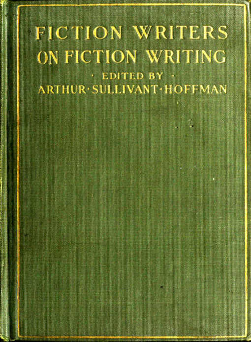
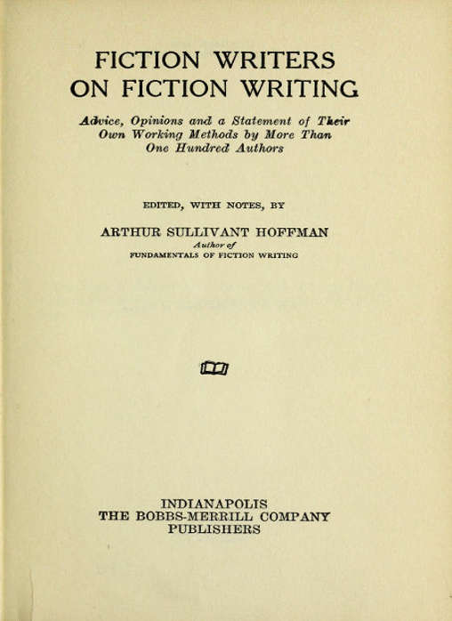

Title: Fiction Writers on Fiction Writing
Editor: Arthur Sullivant Hoffman
Release date: March 15, 2020 [eBook #61625]
Most recently updated: October 17, 2024
Language: English
Other information and formats: www.gutenberg.org/ebooks/61625
Credits: Produced by Tim Lindell, Ernest Schaal, and the Online
Distributed Proofreading Team at http://www.pgdp.net (This
file was produced from images generously made available
by The Internet Archive/American Libraries.)


Copyright, 1923
By The Bobbs-Merrill Company
Printed in the United States of America
PRESS OF
BRAUNWORTH & CO.
BOOK MANUFACTURERS
BROOKLYN, N. Y.
This book is dedicated to the one hundred and sixteen authors who wrote it and to every author who may profit from their writing.
Authors Whose Replies to the Questionnaire Make Up the Body of This Book:
FICTION WRITERS ON FICTION WRITING
FICTION WRITERS
ON FICTION WRITING
HOW THIS BOOK CAME INTO BEING
Since this book is not only written for the most part by others than myself and since, for a second reason, its coming into being is the result of an accident, not of any inspiration on my part, there is no reason why I should not state frankly my opinion of its practical value and exceptional interest.
The mere statement of that value is its own proof:—There have been hosts of books, classes and correspondence courses claiming to teach the writing of fiction, but in all but a handful of cases these teachers have been eminently unqualified for the work. The majority have no sound right to speak at all, lacking sufficient accomplishment or even experience of their own and showing in their attempt the lack of ability as critic or teacher often evidenced by those who are themselves unable to create. Of the remainder a very few have proved any considerable ability as creators of fiction and these, as a group, are inclined to proceed on the dangerous principle that what is good for one case, their own, is therefore good for all other cases. Another few, with some editorial experience (though generally almost none) and, therefore, at least some understanding of the general field, are mostly barren of accomplishment as creators and so unable to enter satisfactorily into the inner problems of those who do create. Still another few, while versed in the academic requirements of [pg 2] literature are unfamiliar with both the actual magazine and book field and the actual work of creating. All of them are sadly handicapped in their undertaking by an obsession for reducing the art of writing to a performance almost altogether governed by general formulas and ironclad rules for universal application.
But here is a book written not by an author of negligible standing, an editor who can not create, a college professor speaking from the outside, or any other theorist whatsoever, but by the successful writers themselves, each telling in detail his own processes of creation. No one else in the world can bring us so quickly to the real heart of the matter or come so close to speaking the final word. While the words of any one of them are of value, the contrasted and collective cases of one hundred and sixteen of them are beyond estimate of value. For either the beginner or the established writer. Even for each of these one hundred and sixteen themselves.
As to the accident that brought the book into being, my own justification for venturing to act as collector and summarizer, and the reason for choice of the particular lines of investigation:
Having been a magazine editor for twenty years (Adventure, Romance, Delineator, Smart Set, Transatlantic Tales, Watson's, Chautauquan), I had become more and more rebellious against present methods of teaching fiction writing, for year by year their fruits poured across my desk by the thousands—stories often technically correct but machine-like, artificial, lacking in real individuality. American fiction as a whole is characterized by this result of the curse of formula and, until that curse is removed, American fiction can never attain the place to which native ability entitles it.
Many who attempt to write can never succeed. Some succeed despite all obstacles. But in between are a great number with varying degree of ability, many of them appearing in books or magazines, some of them attaining a [pg 3] fair degree of real success, some of them failing of print, but no one of them who could not do far better if he would shake himself free from the influence of machine-like methods and give opportunity to whatever of individuality may lie within him. A long procession of possibilities unrealized, regrettable because of the loss to American fiction, pathetic if one looks behind the manuscripts at vain struggles and hopes unfulfilled.
The only chance for remedy seemed a direct attack upon the school of formula and rule itself, followed by whatever could be done in a constructive way. A lone editor could accomplish little by himself, but he could accomplish even less than that if he didn't try. He was not the only editor grumbling over the situation and among experienced writers were many in agreement as to the evils of too much formula; perhaps, once the challenge were definitely made—
As equipment, besides editorial experience, I had been "a contributor of fiction to our leading magazines" sufficiently to appreciate creative problems from the other side of the editorial desk, and at two universities and elsewhere had absorbed sufficient of the academic for foundation and background. There had been, too, sufficient rebellion against general editorial precepts and precedents to keep me from falling so deep into the editorial rut that I couldn't at least see over the edges. Most of all, I was sick and tired of seeing the formula-worshippers doing all they could to increase the flood of fiction that, however perfect by formula and however skilfully polished, is inevitably and forever hack.
So I wrote a book in protest and in the hope that it might to some degree serve those who were willing to turn from formalism to individual expression if only they could find some small guide-posts along the way. In Fundamentals of Fiction Writing I tried to give them, instead of rules, an understanding of the facts of human nature upon which art and its rules must be based, so that they might [pg 4] see their own way and walk upon their own feet. To drive home the point it was necessary to show them beyond chance of doubt that rules applied without understanding were unsafe guides. The simplest and most effective way of proving this was to show them that the writers who had actually succeeded did not blindly follow general rules but chose among them each according to his own needs and bent, and that what was one writer's meat was another writer's poison.
So, to prove that rules must be subject to individuality, I sent out a questionnaire to writers, planning to use the answers as an appendix to Fundamentals. Some questions were added to gather further data on facts of human nature, and still others were suggested by writers (William Ashley Anderson and L. Patrick Greene) with whom I consulted, answers to these last questions being sought as data of interest to writers in general.
The answerers, of course, had not seen my book, though the body of it was already in the publisher's hands, and in the questionnaire I took pains that there should be no hint of any points I hoped to see established. While the effort to keep the wording of the questions from tending in any way against entirely uninfluenced answers made some of them less definite and more banal than I should have liked, there was more than compensation in the resulting wealth of data that had not been even hoped for.
When the answers began coming in, it became at once apparent that here was material far too valuable to be tucked away in the appendix of any book. The questionnaire had gone to only those writers who had contributed to my own magazine, Adventure, some of them beginners, some of them established writers appearing in all our magazines and between book-covers. It was then sent to a general list of authors and their answers were added to those first received.
The result is a broadly representative list of authors almost perfect for the purpose. It includes the tyro and [pg 5] the writer of life-long experience, those little known along with our best and our most popular. There are those who write avowedly for money returns alone; those who make literary excellence their single goal. They come to authorship by various roads from all walks in life, from England as well as America. They run the whole gamut of difference in schooling, method, aim, ability, experience and success.
The value of their symposium to the beginner is beyond easy calculation. If there is an experienced writer who can not find profit as well as interest in these ideas and methods of his fellow craftsmen, considered both individually and collectively, I can not at the moment guess his identity. If other editors can learn from it as much as I have, they will find it difficult to name any other one thing from which they have learned so much of value in so short a time. If literary critics will bring to it a consideration of fundamentals and of facts, that their general type is none too prone to exercise, there will be a gain both to them and to the standards of criticism and valuation they so largely control. To readers of fiction it is the opening up of a fascinating world hitherto seen only in detached glimpses. And if the average writer of text-books or teacher of class expounding the art of writing fiction will let go of formulas and theories handed to him by others and consider the actual laboratory facts of what he is trying to teach, the gain to American fiction will be tremendous.
If my summaries and discussions of the answers group by group leave much to be desired, I plead the difficulty of exactness in dealing with matters of infinite variations and subtle shadings, the impossibility of covering even sketchily all the points that arise, the limitation imposed on entirely free discussion of material furnished one through courtesy and good will, and the fact that in any case my comments are of extremely minor importance in comparison with the answers themselves.
[pg 6] The answers have in most cases been given in full. What cutting was necessary in places has been done, I think, with as little bias as is shown in the questions. Where specific teachers, books, authors and so on were mentioned, there have been some omissions, nearly always of those unfavorably mentioned. If specific instances seem ill-chosen for either cutting or exceptions, I can plead only good intent and the best judgment I could summon. I have been editing copy for more than twenty years and have found few cases offering greater difficulties to consistency and intelligent handling. The specific difficulty mentioned is, naturally, far from being the only one.
My sincere thanks go to the authors whose kindness furnished the material for this book. While some of them were personal friends or acquaintances, there were others upon whom I had no shadow of claim and who responded only through an innate spirit of helpfulness—helpfulness not just to the asker but to the host of aspiring writers who they knew would profit from the information experienced writers could give. My thanks, too, for the good will of those authors who were prevented from answering by circumstances beyond their control. I have dealt with writers most of my life and, as in any other group of people, there are disagreeable, trying, ridiculous and even criminal exceptions, but as a whole I have found them very kindly, human folk. Perhaps it is because the material of their life-work is human nature, or because their natural bent is such as to make them choose that life-work. It would, I think, be a vastly kinder, gentler world if all who live in it were equally ready with the helping and friendly hand.
QUESTIONNAIRE
Answers to Which Constitute the Body of This Book
I. What is the genesis of a story with you—does it grow from an incident, a character, a trait of character, a situation, setting, a title, or what? That is, what do you mean by an idea for a story?
II. Do you map it out in advance, or do you start with, say, a character or situation, and let the story tell itself as you write? Do you write it in pieces to be joined together, or straightaway as a whole? Is the ending clearly in mind when you begin? To what extent do you revise?
III. When you read a story to what extent does your imagination reproduce the story-world of the author—do you actually see in your imagination all the characters, action and setting just as if you were looking at an actual scene? Do you actually hear all sounds described, mentioned and inferred, just as if they were real sounds? Do you taste the flavors in a story, so really that your mouth literally waters to a pleasant one? How real does your imagination make the smells in a story you read? Does your imagination reproduce the sense of touch—of rough or smooth contact, hard or gentle impact or pressure, etc.? Does your imagination make you feel actual physical pain corresponding, though in a slighter degree, to pain presented in a story? Of course you get an intelligent idea from any such mention, but in which of the above cases does your imagination produce the same results on your senses as do the actual stimuli themselves?
If you can really "see things with your eyes shut," what limitations? Are the pictures you see colored or more in black and white? Are details distinct or blurred?
[pg 8] If you studied geometry, did it give you more trouble than other mathematics?
Is your response limited to the exact degree to which the author describes and makes vivid, or will the mere concept set you to reproducing just as vividly?
Do you have stock pictures for, say, a village church or a cowboy, or does each case produce its individual vision?
Is there any difference in behavior of your imagination when you are reading stories and when writing them?
Have you ever considered these matters as "tools of your trade"? If so, to what extent and how do you use them?
IV. When you write do you center your mind on the story itself or do you constantly have your readers in mind? In revising?
V. Have you had a class-room or correspondence course on writing fiction? Books on it? To what extent did this help in the elementary stages? Beyond the elementary stages?
VI. How much of your craft have you learned from reading current authors? The classics?
VII. What is your general feeling on the value of technique?
VIII. What is most interesting and important to you in your writing—plot, structure, style, material, setting, character, color, etc.?
IX. What are two or three of the most valuable suggestions you could give to a beginner? To a practised writer?
X. What is the elemental hold of fiction on the human mind?
XI. Do you prefer writing in the first person or the third? Why?
XII. Do you lose ideas because your imagination travels faster than your means of recording? Which affords least check—pencil, typewriter or stenographer?
QUESTION I
What is the genesis of a story with you—does it grow from an incident, a character, a trait of character, a situation, setting, a title, or what? That is, what do you mean by an idea for a story?
Answers
Bill Adams: Usually three words with a bit of a slideway to them, thus, "There was once a ship"—or "The sun of morning shone upon the water"—
I don't know how it grows, or whether it grows—it sort of occurs, as it were.
Samuel Hopkins Adams: Genesis—usually from an incident, sometimes from a single phrase which illuminates a character; never from a title. In my entire experience I have found so-called "true stories" available only once or twice, and then in greatly modified form. Life is dramatic, but it isn't fictional until interpreted and arranged by the fictional mind.
Paul L. Anderson: The genesis of a story with me may be any of the things you mention, or something else, entirely different; a newspaper item, a picture, a story some one else has told (I mean I get a suggestion from another yarn, not that I take some one else's story and tell it as my own). For example, the genesis of one prehistoric animal story, was a picture in Henry Fairfield Osborn's book, The Origin and Evolution of Life; of another, a group in the American Museum of Natural History; of one story, the fact that a man will do more and suffer more for his loved ones than for himself. The genesis of the best story, by far, that I ever wrote, which has been consistently rejected by magazine after magazine because [pg 10] it is too gruesome, was this: lying in bed one morning, on the borderland of waking, I dreamed I heard some one say these words: "Far above us in the darkness I heard a trap-door shut with a clang." The memory of those words carried over into waking, and the story grew from that. The genesis of another yarn was a trip I once made in my flivver, which involved crossing a railroad track laid along a side-hill. Etc., etc. "All's fish that comes to the net."
William Ashley Anderson: No definite principle can be laid down as to the inspiration of a story. It may be based on an actual occurrence; a striking tradition; a strange custom. Or an argument may suggest a point to be proved by a story. An extraordinary character, an unusual scene, an atmosphere even (fog, storm, scorching heat). I think one of the basic principles is the desire to tell something unusual about things that are commonplace, or to tell something commonplace about things that are extraordinary.
H. C. Bailey: Nearly always in my mind a story begins with a character or characters. This holds good though the main interest of the story may be incident or the surprise of its plot. Making the story is with me the process of providing these people with things to do and say which will express them. I never began with a title (they are my plague), or a setting. Once or twice with a situation. Occasionally with a sentence which came into my mind from heaven knows where.
Edwin Balmer: The genesis of a story is decided, I think, by the writer's age and experience. As a story is usually the writer's reaction to that which at the time is of most interest to him, it used to be that a story started with me with a situation. I started writing when I was eighteen when I was in college, and I then caught at a situation which established suspense. That struck me as the best start for a story. Gradually, situation became less the whole thing and a definite increase in concern for the characters came. I never started with a title, but sometimes [pg 11] with a setting, or rather, a setting creating a situation—such as the Alps suggesting a mountain-climbing story. Now though I never really start with a character, the situation does not mean much to me until it has a character in it.
Ralph Henry Barbour: An idea for a story is anything upon which a story may be built, and story ideas come from as many sources as do ideas of any other sort. The inspiration that provides the idea may be generated by an incident, a person, a situation, a locality, even, I think, by a condition of mind, or by two or more of these in combination. To me a title does not very often suggest an idea for a story; it merely suggests the idea to write a story; there's a difference! In my case the genesis of a story is more frequently a situation. After that a character, an incident, a locality, in the order given.
Frederick Orin Bartlett: A story may grow from any of the sources you suggest—even from that mysterious "or what?" Something serves as a spark to fire the dry kindling of your imagination. The two essentials are that the spark shall be hot enough and that you shall have kindling.
Nalbro Bartley: It, the genesis of a story, could spring from any of the suggested things—an idea for a story to my mind suggests a theme such as capital versus labor, love versus money, etc.
Konrad Bercovici: I will be hanged if I know what the genesis of a story is. I only know I do not sleep well a few nights before I write one. And after a headache or two a story comes. As a boy, it broke my heart never to be able to see the actual breaking through of a plant. I always found it broken through in the morning,—if you get what I mean.
And then pictures begin to rise before me. Pictures of things I have seen and others that I wanted to see. And then the men and women in my stories walk through those pictures and stay where they like and see what they want and I stand by and watch them and agree most of the time [pg 12] with each one of them and sometimes say what I would say under similar circumstances. But, like "Mr. Saber" of If Winter Comes, I can see his point of view. When the whole thing has come to an end in my mind, I sit down and write.
Ferdinand Berthoud: I usually pick on an incident from some actual happening to myself or to one of my old-time friends. Then tack on other incidents of which I have heard. Once or twice a story has come from a peculiar expression or the manner or speaking of some man I have known. Or some man's way of looking at life.
H. H. Birney, Jr.: Ideas. Some situation or idea possessing possible dramatic value will come to me; I will lie awake the best part of a night or two nights thinking it over, and put it on paper the next day. Sometimes the whole story seems to unfold itself instantaneously before me; again I will work it out detail after detail mentally. Some ideas for stories have come from remarks of friends, from some anecdote, or an experience that was personal and of which the dramatic value was unrecognized at the time.
Farnham Bishop: The wedding of a newly-discovered fact to something already in mind, followed by the swift begetting, birth and growth of a story. Example: "Carranza to Blockade Mazatlan. Mexican Navy to be sent through Panama Canal, against Stronghold of Revolution" (newspaper head-line, sometime in summer of 1920). That, plus British naval officer's book (which I had recently read) containing description of the Scooter or C. M. B., developed within ten minutes into fairly complete mental outline of The Rest Cure.
Algernon Blackwood: The genesis of a story with me is invariably—an emotion, caused in my particular case by something in nature rather than in human nature: a scrap of color in the sky, a flower, a sound of wind or water; briefly, an emotion produced by beauty.
Max Bonter: Anything that stirs my emotions is likely [pg 13] to furnish the idea for a story. It may be an incident, a character, a trait of character, a situation, a setting, a title. It may be any one of them, a combination of several of them, or all of them. An idea embodying all of them, of course, would really be more than an idea; it would be practically the story itself—either a true story in which I had figured, or one that I had heard related—and would require at my hands little else besides an amalgamation of the attributes specified.
Pure fiction, in my case, seems to have its inception in a contrast, or in a sudden break of continuity—something irregular or freakish that draws a quick focus of the mental faculties and demands of them why, how? My mind immediately struggles to paint the significance of the contrast, or to splice the broken threads of circumstance into a tissue of normality. In other words, it is my mind's tendency to give balance to unbalanced or opposing conditions or things.
For example: In a quiet little community of soft-spoken, well-civilized males I find an old barbarian—the boss stevedore of a freight dock—who chews, swears, drinks, and lives with a common-law wife. Their little household is practically in a state of ostracism. My emotions are aroused; my sympathies enlisted in an endeavor to place in a better light this old pariah whose chief fault seems to be the carelessness wherewith he persists in being human. I bring the opposing standards together and after the clash the stevedore's chief detractor—a prominent church-goer—is found to be a sly old rake; whereas the dockman's tough hide covers a heart that had kept him true even to an unsanctified union.
That is what I would call an "idea" for a story. Around it I would build plot, detail, incident, characterization, etc.
Katharine Holland Brown: Once in a long while a story begins as a situation: as a tangle, a conflict, to be unwound, fought out. But almost always the story arrives as a whole—without any planning whatever, the story is [pg 14] suddenly there, a big blurry mass of pictures and incidents and action, that must be splattered down in black and white as fast as you can possibly write. It goes racing by like a runaway movie film and the best you can do is to snatch at the most significant moments, before they escape. Therefore the idea for a story is not an idea; it is the story itself. (With a serial, which must have a succession of ascending climaxes, a rough outline is made and followed, after the big scenes and the principal action are jotted down.)
F. R. Buckley: The genesis of a story with me is likely to be anything. Occasionally a character; more often a title; more often still, a good basic situation, up to and from which the story can lead; most frequently, an ending. Story I liked best, Archangel in Steel, deduced from setting and period: Florence, XVI century; connoted an age of plotting and intrigue; since plots were villainous, hero must be anti-plotter. History supplied the conspiracies; the story consisted of the hero's counter-actions.
Prosper Buranelli: My first idea is always an incident or a situation, sometimes several to be combined. Or a generic situation in some phase of life—such as an opera singer's being at the mercy of the orchestra conductor.
Thompson Burtis: I have had stories come to me as a result of all the things mentioned in your question, except a title. And I'm about to try to construct a story around a title. The most usual starting-points for stories with me are either incidents or characters. In a large percentage of cases I start with an incident and then work my main character into it with regard to his particular traits.
George M. A. Cain: A story almost always takes its genesis with me from a situation, sometimes suggested by an incident, character, trait, setting, title, anything. Unless any other feature can shape itself readily into a situation for me, there is no story. But the situation may not mean the beginning of the story as told. I may write the whole story to get that situation.
[pg 15] Robert V. Carr: The question involves, at least to my understanding, chemistry, heredity, environment, psychological wounds, tricks of memory, and a thousand and one mysteries. No doubt there will be writers who will cleverly announce that they know exactly where they secure their ideas, but it is beyond me. The writers of motion-picture scenarios should be able to tell you in a few words where they get their ideas. For my part I do not know the true genesis of any idea.
George L. Catton: A story with me may grow from, to begin with, the merest trifle. Sometimes I start with a character only; other times perhaps it is a title, or a peculiar characteristic of a character, a situation or a setting. But the big start for me, the start I always try to get, is a theme. It's a poor story I'll write if I can't put down the title before I write a word. I never wrote a story yet that didn't have a theme, and I never will. A story without a theme is a story without a soul, and is just about as much use as a man in the same predicament. An idea for a story with me, then, is a theme.
Robert W. Chambers: From an incident.
Roy P. Churchill: Most of my story ideas come from what I call a "condition" for want of better expression. That is, affairs of life in a certain setting, with certain characters, assume a "condition" which makes for the unusual.
Carl Clausen: An idea for a story always means to me an incident.
Courtney Ryley Cooper: A story always starts with me at the finish—I write the rest of my story to a climax. In other words, I get the big punch of a story, and build up the rest of the structure to fit it. In a mystery story, I always get the explanation of a thing, then fit my incidents to this.
Arthur Crabb: It seems to me that a story may grow from an incident or a character, or even a trait of character or situation, which it seems to me are other ways of saying the first two.
[pg 16] Mary Stewart Cutting: The genesis of a story with me usually grows from some small incident or the reverse of the incident. But in an autobiographical story the character is the main theme.
Elmer Davis: The genesis of a story, with me, is a situation—invariably the same. I see financial obligations falling due. My salary is fixed; my credit distended to the bursting point. No way to meet the bills but by writing fiction.... Whereupon I grab anything that looks as if it might start a story; usually a character in a situation.
William Harper Dean: The genesis of a story with me sometimes is a single word, the title, which strikes the motif of the story; sometimes a character, sometimes a situation, or a setting. But most frequently the beginning is the climax, from which I work backward through the middle and to the beginning.
Harris Dickson: Any of these, or a combination. More usually, perhaps, it is a story, or an incident that I hear or see. For instance, The Trapping of Judge Pinkham, in The Saturday Evening Post, is approximately true, and happened not long ago at the very place described. Real incidents, however, generally begin "up in the air" and end the same way. Better beginnings and climaxes must be worked out.
It is quite rare with me that I deliberately devise a story out of the whole cloth.
I live in the South. It is a country that has attracted the attention of much enthusiastic ignorance on the part of philanthropists, and many attacks. Sometimes I do a story for the purpose of showing some particular phase of life that is not understood at the North, and try to make it so convincing as to silence these long-distance reformers who haven't an idea as to how we live, and why. For this purpose I believe temperately-stated truth, rubbed in with humor, is the most effective vehicle.
Captain Dingle: In general my story comes from a vision of a character and a situation. Sometimes only the [pg 17] situation. Then I make a character to fit it—usually out of material I know.
Louis Dodge: With me, the genesis of a story is usually a character, perhaps coupled with a characteristic action. I like to imagine what the logical destiny of that character would be. And so I try to work it out.
Phyllis Duganne: Ideas for short stories usually come to me through something I actually see or hear about; sometimes a person is interesting or romantic enough so that I begin to make up things that might happen to him—and discover I have a plot on my hands. Or sometimes a situation is a good beginning or ending for a story, and I try to evolve the rest. Sometimes I do and sometimes I don't—I suppose every one has loads of fascinating situations that he can not quite whip about into story form. Sometimes it is just a romantic spot—a house that should have a story about it. And once in a great while I just discover myself with a perfectly formed story on my hands, not there one minute and utterly there the next. That's real magic—and doesn't happen so often as I wish it did.
J. Allan Dunn: It varies. I am, of course, deliberately setting aside such stories as are suggested by the needs of editors, expressed by themselves. But I think the genesis of many stories is hard to trace. They are evolved in the brain cortex by that comprehensive and all too liberal phrase "subconsciousness." I mean by that process that every writer is perforce somewhat of a dramatist, somewhat of an artist, and that his mind, inclined and, later, trained to observe, does this continually until an idea is born. Not necessarily, not probably is this idea complete. Occasionally a short story that works out delightfully is thus conceived and will project itself into the conscious mind upon the proper stimulus—perhaps after a walk or during it, perhaps while hearing music.
Sometimes I read a story that a man has written down as news, the skeleton of a yarn that needs flesh about it, a heart and soul added.
[pg 18] Very often I endeavor to work out some particular trait or character, with its weakness and strength. Sometimes a character I know suggests the story. But I believe the genesis is born very much as is the theme of a musician, the desire of an artist to portray a certain mood or key, the inspiration of a poet.
I believe that the story-teller's profession is one of the most ancient. I believe it may well have antedated the artist—as animated in the cave-carver or the painter of skins. That it may have prefaced the musician in the drum-beater or the blower of a conch. I think there was always a tale-teller about the fires of the wildest, earliest tribes, one who stimulated their imaginations, touched their pride, bolstered their bravery. There are such to-day in almost every wild tribe that I have met. And, as the modern musician, the modern artist, have evoluted from their primitive forebears, so I think that the spark, the flicker of story-telling, has come down in the cell together with the ear for music, the eye for color and proportion. Add to that your technique—use of action, color, suspense, opposing forces, laughter, tears, tragedy and the results of experience and observation—and your story appears.
I do not mean to say we are all genuises but that the story-teller, as the poet, is made, that the impulse is engendered with his ego.
Walter A. Dyer: Formerly I used to try to manufacture a plot as the starting point for a story, but always found it very difficult, my mind usually being ready to stop with a situation. Sometimes such a situation would make a story, sometimes it wouldn't. I have found it comparatively easy to get color into the settings and to do the thing up in some sort of style, but my mind isn't inventive in the field of complete and more or less intricate plots. Of late I have had better success in beginning with character. And I have heard that others have reached the same conclusion. First visualize a real person or persons, with distinctive and out-of-the-ordinary characteristics (consistent [pg 19] and plausible, of course), and get them to function like human beings. Then throw them into the situations and settings that come easiest and see what will happen. Sometimes a real story grows out of it, and when it does it is likely to be a better story than one in which lay figures are fitted into a ready-made plot. This, however, does not apply to the requirements of all editors.
Walter Prichard Eaton: A story comes in a dozen different ways. Sometimes a title waits two years or more for a plot to plot it. Sometimes a character comes and grows. Sometimes a situation. I find I am most successful when it is a character, however, which comes first, and dictates the rest. The hardest unit is to start with a general thesis (problem) and then get a plot and people to seem natural.
Charles Victor Fischer: I am writing a story that has to do with Little Rock, Arkansas. Sitting at the eats this evening (two hours ago), I had Little Rock buzzing round in my up-stairs. My sister spoke of an old black mule she'd seen during the afternoon; how sorry she was for the poor animal—skin and bone were the only things he didn't have anything "else but." On top of that my father pipes up about a diamond ring theft.
See the point? I'm thinking about Little Rock. (I was there about two years ago, shortly after I came out of the Navy.) And whenever I think of Little Rock I think of coons. The mule—the diamond ring. And all of a sudden I had a story.
E. O. Foster: The genesis of a story with me generally grows from an incident which I have observed, around which I weave a plot taking the characters from people whom I have known.
Arthur O. Friel: It differs. It may be any one of these things. Sometimes hits me suddenly, like an electric spark forming contact, and the wheels begin to buzz. If I keep them buzzing, I have a story.
J. U. Giesy: Genesis with me is generally either from [pg 20] an incident heard or read, or from a title which suggests a parallel or divergent train of thought.
George Gilbert: All depends upon the story; some grow out of single incidents or characters; some out of several.
Kenneth Gilbert: My stories seem to spring from three sources: (1) A strange and interesting fact or incident that apparently has never been touched upon. One story had its genesis in a piece of newspaper miscellany, which stated that Marconi was experimenting with wireless apparatus that would keep out eavesdroppers. That was new, so far as fiction was concerned. Using it as the basis of a plot, I wove around it color from my own store of wireless knowledge, decided on the title, and proceeded to transcribe it. (2) An interesting character. One of my animal stories illustrates this point. It was about a raccoon, which I selected because he is a highly interesting animal; very intelligent, and with traits that approach the human at times. Moreover, he had not been "written out," as would seem to be the case of the dog. I had written stories about nearly all of the menagerie except procyon lotors; therefore, why not a 'coon story? The setting I supplied from life; the incident from study and experience, and the "atmosphere"—a vital component of an animal story—took care of itself. (3) A title. A snappy title always suggests a story, and while I have utilized this method several times, I prefer a plot germ in other form.
Holworthy Hall: To date I have written perhaps two hundred short stories. The basic ideas arrived approximately as follows: From titles, not over ten—notably The Six Best Cellars, Henry of Navarre, Ohio, You Get What You Want, etc. From a situation, at least one hundred and fifty. From characters or traits of character, the balance. Incidentally I have never yet written a story in which the basic idea was not fundamentally serious and a part of my personal philosophy; nor would I have any interest in writing a story in which the basic idea did not seem to see or partake of a certain universality of thought or conduct.
[pg 21] R. M. Hallet: As to (I) I think the characters and the action reciprocally contribute to the growth of the story. Hardly anything but action will really illustrate character, it seems to me. The further you develop the characters, the better glimpses you get of the plot; and if you have an idea for a plot, that will usually thicken character for you. As to which comes first, it's probably the old problem of the hen and the egg. Either might, logically.
William H. Hamby: There is no rule with me. Sometimes I start a story with a character, and, all things considered, that makes the best story. Sometimes the plot comes first; again a situation or an incident will start the mind to weaving a story. The series of stories, The Adventures of a Misfit, which one of my friends assures me were the worst stories I ever wrote, was suggested merely by a name. Red Foam, which other of my friends claim is the best story I have written so far, was written from a motif—I had a strong feeling that I wanted to visualize that frothy shallowness of judgment which is so easily mislead by a little palaver.
Joseph Mills Hanson: The genesis with me is usually an incident, situation or setting. I always have in mind a lot of provocative events in the history of the Northwest or elsewhere, and hang my stories on to them. I try to make my characters appropriate to the time, the place, the atmosphere, the special problem that has to be solved.
E. E. Harriman: I usually think of an incident, a situation, and roll it over like a snowball until it accumulates enough to make it a story.
Nevil G. Henshaw: I've no fixed rule, although, in a long piece of work, I try to present a certain section with its corresponding inhabitants and industries. With short stories I either work from a single plot idea, or propound a certain phase of human character and set out to prove it by means of the story—(as in Madame Justice I endeavored to give certain conditions under which a mother would kill her well-beloved son).
[pg 22] Joseph Hergesheimer: It grows from the emotion caused by a place or an individual.
Robert Hichens: Usually some big situation arising from the clash of two characters.
R. de S. Horn: The genesis of a story with me is generally an incident, a situation, or a character or trait of character, with the incident predominant. I have some settings tucked away in my note-book, but I expect they will be used only when I've got a situation, character or incident idea to go with them. The title is the last thing I write usually, and it generally comes hardest. However sometimes I stumble on it in the middle of the story. Every idea that suggests a story possibility I immediately enter in my note-book.
Clyde B. Hough: My story ideas generally grow out of a phrase or a sentence and this phrase or sentence most often takes its place in the story, either as the core, the hinging base or the climax. This sort of plot germ is generated in various ways. Sometimes by a scene, sometimes by a spoken word and sometimes by a man's action.
Emerson Hough: Some big motive or period. Not a Peeping Tom incident.
A. S. M. Hutchinson: Character entirely.
Inez Haynes Irwin: It is very difficult for me to tell you what I mean by the idea for a story. There is so much to say that I would like to answer this question in a book. That idea may come from anywhere or grow from anything. It may be as you suggest "an incident, a character, a trait of character, a situation, a setting, a title." It may come through a conversation, by analogy, out of the very air itself. In my experience a single scene has suddenly amplified to a whole story, a whole novel has suddenly diminished to a story. Parts of stories, quite disconnected, have suddenly sprung together and made one complete story. I have had the experience of having two or three stories develop in successive instants from a single germ; sometimes I have waited years before writing because I [pg 23] could not decide which one of them was the best. Mere ideas that I have carried in my mind for years have suddenly developed into stories. Mere phrases and titles have spawned stories. Interiors, empty houses, geographical situations have exploded stories. Stories, full grown, have sprung without any warning into my consciousness; and apparently with no spiritual or psychological raison d'etre. I have even had stories, all complete, hurtle out at me from life itself. Reading the stories of other authors sometimes brings stories into my mind; their first paragraphs are occasionally exceedingly stimulating. Certain ideas have always been highly stimulating to me—uninhabited islands, ghosts, fourth dimension, murder, they have engendered numberless stories. In brief stories come in every way and through every medium. Everything on earth, under the earth and above the earth is fish to the creative artist's net.
I would like to illustrate every one of the above statements but it would make the answer to your first question interminable.
Will Irwin: The genesis of a story is with me usually a situation. To give an example from a piece of fiction which I have recently finished, a friend with much experience of the underworld mentioned in conversation a case where a convict just released struck his girl who was waiting for him at the door of the prison. Speculation on what circumstances might lead to such an act gave me my story. Sometimes, however, the story grows from contemplation of an interesting character and speculation as to what he would do if placed in unusual or dramatic circumstances.
Charles Tenney Jackson: The genesis of a story with me is more likely to spring from a single incident, a situation—perhaps even a phrase—one might say, a mental gleam that seems unique—and then appears to gather to itself the characters which lead on to a plot that slowly evolves. But always the urge of it is the first suggestion.
[pg 24] Frederick J. Jackson: With me stories grow from incidents, characters, situations, settings and titles.
Give me a good title: I don't ask more. For example, six years ago, in New York, one popped into my mind from a clear sky. Down she went in my note-book. Last spring I felt the urge to work. Not an idea in the world. Out came the old note-book. I thought about it for a day, then batted out the story that the title suggested. The title and nothing more to start things moving.
For one story—the skipper who could always cross Humboldt Bar when other master mariners were helplessly bar-bound.
Give me a good parody or take-off on a well-known phrase or quotation and I seem to ask nothing more.
The first story of one series evolved from the character I conceived. The genesis of one story was a vivid picture that occurred to me of an outlaw coming over a hill to the cemetery outside a western town and finding four fresh graves. Three of them were occupied, the fourth empty, significantly so, since the other three were filled by the outlaw's pals on their last raid. A pleasing picture, and I made it more so by placing three sticks of wood at the heads of the filled graves, pieces split from a wooden box. The sticks were upright in the fresh earth. The top of each stick had a slit in it, and into each slit was placed an epitaph. The three epitaphs were the knaves of hearts, diamonds and clubs. In town the outlaw learns that the sheriff is carrying the knave of spades and an earnest intention to place it at the head of the fourth grave. This much just came to me. The rest of the story is a matter of mechanics.
Setting? The origin of the idea for one tale was a matter of setting, the kelp-beds along the coast south of Cape Mendocino. Small vessels—fishing-boats—sometimes put into the kelp for shelter from high seas and gales. The heavy kelp has much the effect of oil on breaking seas. With this in mind, the story was a matter of mechanics. [pg 25] A steamer leaving Eureka for San Francisco, a run of twenty hours, and then disappearing for eleven days, given up for lost. She had lost her propeller, her deckload, her boats and all loose deck-gear. All this came ashore north of Cape Mendocino—sure sign she had gone down, with a southwest gale raging. But her skipper had managed to get her into the kelp—he knew the kelp—and there piled all his cargo forward until the propeller shaft was above water. He shipped a new propeller right there in the open sea. The vessel lay against a background of cliff, the country back of it is deserted, isolated; steamers passing there were at least fifteen miles out to sea to get around Blunt's Reef; there was no wireless aboard. Therefore she remained undiscovered, given up for lost, until one morning, battered, smashed, burning her lumber cargo for fuel, she limped into San Francisco Bay.
Fine! An editor wanted a series about the character—the nervy, never-at-a-loss young skipper. The skipper was pure accident. I had given no thought at all to characterization. The story, the situations, his grasping a slim chance for life when his older officers could see no chance at all, were what I thought made the story. But upon close analysis it was he who made the story.
In the story I had unconsciously used the same combination of characters as in another series—the young sea captain, the ship owner and his daughter.
More stories wanted. Not an idea in the world. But a lot of promised money will make ideas come. I squared off at the Underwood and started in with the ship owner.
Conjured up a pleasing picture of him seated in his private office with wrath oozing from every one of his pores. What will make a ship owner mad? Loss of money was the answer. How could he lose money? By one of his steamers being bar-bound. So the largest steamer of the fleet is bar-bound in Gray's Harbor—has been for three weeks. Empty, she went over the bar all right. With a couple of million feet of lumber aboard she couldn't get [pg 26] out. "Martin" to the rescue. He gets her over the bar—all this is deliberately manufactured with not a single idea one paragraph ahead of my fingers on the keys. Then, with the steamer at sea, ideas come galloping. It is very seldom that I start a yarn with not even a title to work on, not an idea in the world as to what is going to happen. But I finished up with a real story which brought a bigger check than any I had received up to that time for any story.
The third of the series came easier. In The Saturday Evening Post I read a story by Byron Morgan called The Elephant Parade, a tale of motor-trucks. Into my mind popped the idea of using caterpillar tractors in a sea story. By this time I had "Martin" firmly in hand, well-trained. The fourth story went over nicely. But in the fifth one I made the mistake of bringing some war stuff in. Editor said nix. I got disgusted with "Martin" right there and left him flat.
Now in your question you have omitted the word "theme," which might be included. For instance one was the growth of something that can not be called a definite idea. It was hazy, vague, when I started it. All I had in mind was the traits of blondes (feminine) as I have known them, especially movie blondes. My working title on the story was The Cussedness of Blondes. I changed that to Press Agents' Paradise, and wound up with A Million Dollars' Worth. The working title changed as I got into the thing and began to see sunshine ahead. The only thing I had in mind with which to end the story was a beautiful double-cross on the part of the blonde girl. I ended it that way. I had many a laugh at the situations I had conjured up and slapped into the story. Laughing at my own stuff. Read it and weep.
Mary Johnston: Sometimes one, sometimes another. But usually a character or a situation, or an idea that seems to have ethical or evolutionary value. To see the idea for a story means to see the story.
[pg 27] John Joseph: The genesis of a story? The idea for a "red-blooded" story comes from my own experience. That is, things I have actually seen. Such stories are, as a matter of fact, fictionized facts. Some stories are based on a peculiarity of human nature. That is, they arise from a study of human nature.
Lloyd Kohler: Of course, the idea for a story may spring from almost anything. With me, however, the idea for the story usually springs from an incident in actual life. Quite often, too, the story grows from a very brief newspaper article. Incidents from my own life and the sharp brief stories of the daily press have furnished all the ideas for my stuff.
Harold Lamb: The genesis of a story is most often some happening that comes into the fancy, followed by the impulse to draw character in connection with that happening.
Sinclair Lewis: Varies. Usually from a character.
Hapsburg Liebe: My best stories grow from a character; then a situation to fit in with the character. I have had most of my failures, I think, from inventing a situation and sticking doll-like characters in it.
Romaine H. Lowdermilk: With me, the good stories originate around a character. As the characters are supposed to seem real and be interesting to the reader I feel that they, as the actors, are more vital than their doings. When I have my characters in mind I choose one upon whom to center interest and one for humor unless I can combine the two. Around this character (or characters) I work out action that I think true to their natures and the setting to which they are native. It takes considerable thought to think up a series of incidents leading to some definite end or some theme, but then that's the writer's business. He's got it to do! Given a character you can make yourself acquainted with, you can write a story around him, and the more commonplace the character the more likely you are to hit on a story that reads true to life [pg 28] among a majority of readers. Sometimes I write from situation, setting or incident, but usually go back to the beginning and find the character who, when properly used, seems to work out most of the story himself. The title is my stumbling-block. I never find a title until after the story is done, and then only after great effort and generally at the suggestion of some of my family who act as "critics" on the completed work.
Eugene P. Lyle, Jr.: The genesis of a story, with me, may be any bit of mental detritus lodged in the flow of thought long enough to collect about it enough flotsam to round into a missile to throw at an editor. The "bit" may be any of those you have listed, but I like best an idea, or a theme. Given an idea, I like to try to translate it into life—i. e., fiction. Ideas, though, are scarce. But whatever the story germ is, it has to bite hard, else the story is not likely to be much.
Rose Macaulay: I usually start from some idea I have in my head about the world or life or people and illustrate it with the particular plot and character that seem to suit it.
Crittenden Marriott: The climax; I always start with it—and write up to it. I begin anywhere, and half the time I have to begin again and perhaps again till I find a beginning that lets the story run smoothly. I keep the false beginnings and work some of them into the story.
Homer I. McEldowney: The idea of a story with me has been of varied origin—a name, a situation, a character, or a plot. I have only written four yarns thus far, and I have used four different methods. Perhaps the next will be still different. And I wonder, when the various methods have been exhausted, if I'll be, too—at the end of my rope!
Ray McGillivray: Two people at cross-purposes, two or more opposed forces, or a person and a conflicting force, usually give a yarn of mine initial impulse—at least of [pg 29] consideration. I sketch a plan or synopsis, then dictate it straight through from beginning to end. My steno hands me a result which—because of her garbling, my smoke-clouded diction and incomplete ideas—resembles a finished story somewhat less than a plate of steak and Idaho baked potatoes with pan gravy resembles a fat man. I chew away at the script, and return to the girl a mess of pages upon which there is more pencilling than ink. Being human and slightly myopic, she does not turn out a final draft—yet. The third typing finishes a script, though—unless it be part of a novel, or an editor asks rewriting done. Given the right sort of quarrel, dilemma or unconscious conflict between interesting persons or forces, however, I believe that setting, incidents of development, and atmosphere traipse right into the yarn without being paged.
Helen Topping Miller: My stories usually begin with titles. Often I carry a title in my mind for years before I am able to find the story to go with it. Occasionally I begin a story with only a character, but I must have my title before I can write. Having got my characters I devise the "conflict" which is to develop those characters, and then build the plot around that.
Thomas Samson Miller: There are stories which have their genesis in an author's rage at an inhumanity or injustice. We writers all start out being missionaries, I think, and only slack up when we discover that readers delighted in the jam—the story—and missed the pill. I have to be moved by a strong desire to expose some wrong to get across a really strong story. But my commercial success (if I may claim success) falls along adventure stories for young men and boys. In such stories incident is of the first importance. The incident has to dovetail into a plot, all the action flowing to a logical climax. The second importance is a hero—a manufactured hero, whose best traits only are shown, for character is complex—the admirable traits always associated with less admirable.
Anne Shannon Monroe: I believe a story almost always [pg 30] grows with me from a character; a certain kind of a person who always gets into trouble—or out—because he does certain sorts of things.
L. M. Montgomery: The genesis of my stories is very varied. Sometimes the character suggests the story. For instance, in my first book, Anne of Green Gables, the whole story was modeled around the character of "Anne" and arranged to suit her. Most of my books are similar in origin. The characters seem to grow in my mind, much after the oft-quoted "Topsy" manner, and when they are fully incubated I arrange a setting for them, choosing incidents and surroundings which will harmonize with and develop them.
With short stories it is different. There I generally start with an idea—some incident which I elaborate and invent characters to suit, thus reversing the process I employ in book-writing. A very small germ will sometimes blossom out quite amazingly. One of my most successful short stories owed its origin to the fact that one day I heard a lady—a refined person usually of irreproachable language—use a point-blank "cuss-word" in a moment of great provocation. Again, the fact that I heard of a man forbidding his son to play the violin because he thought it was wicked furnished the idea for the best short story I ever wrote.
Frederick Moore: The genesis of a story with me may be any of the things mentioned, but generally I find it is some incident upon which a plot may be built. And frequently the plot in its final form has no bearing whatever on the original incident which gave birth to the plot.
Talbot Mundy: With me, the genesis of a story is too often the need for money; or at any rate, the need for money generally has too much to do with it. I disagree totally from the accepted theory that it does a writer good to be "hard up." It is true that I wrote some of my best stories when I was frightfully "broke"—The Soul of a Regiment for instance; but the idea of selling that story [pg 31] never entered into the conception or construction of it; had nothing to do with it, in fact. It was an idea and an incident that took hold of me and thrilled me while I wrote it. It was based on a tale that my father told me one Sunday morning at breakfast when I was about eight years old. He told it to me all wrong, but contrived to put across the spirit of the thing, and it seems that that part stuck.
Ideas, I am afraid, are no good unless pinned down in the very beginning to a character and one main incident. I can live in a world of ideas; in fact, I generally do, dreaming along without much reference to "hard" facts. I see pretty clearly the necessity to make ideas concrete by turning them into persons, things and incidents. A plot is otherwise a mere conundrum without much interest to the reader, however appealing to the writer it may be. Thus, an idea for a story (in my case) may be an incident, a trait of character, a situation, setting, title or almost anything; and the temptation, which I fall for much too often, is to go dancing along with the idea, letting it will-o'-the-wisp me all over the place. Whereas the true process is to pin that idea down and make it so concrete that the reader doesn't recognize it as an idea, but does recognize a sort of familiar friend—concrete as a sidewalk. This is a counsel of perfection; but it's the nearest I can get, after a dozen years of trying, to an answer to your question. Be concrete. Get away from the abstract by making it concrete. With that proviso, anything whatever is an idea for a story.
Kathleen Norris: The genesis of a story with me is usually a situation; the feeling that such and such a relationship between persons of such and such ideals or ideas would make for human interest. A servant girl who holds a baby above a flood all night—a boy who hates his father's second wife, etc., etc.
Anne O'Hagan: The stories that I have taken the most pleasure in writing and that have seemed to me the most successful have grown out of speculation upon a character [pg 32] in a situation. If I may use an illustration, Wings of Healing, a short serial published last year in McCall's, grew out of speculation upon a character, proud, resentful, out-of-joint with the world, returned to the environment which had embittered her, brought back face to face with all that she thought she most hated in the world. Of course, being a professional writer I have written many stories without any such genesis, stories based on an incident or even a setting. But with me, this is not my serious method of trying to write a good story.
Grant Overton: With me, a story may begin with a background, an incident, a character, a situation or a title. My idea of a story is simply something arising in the first place from any one of these sources. I should not say that a trait of character was sufficient for me in the beginning. My first novel arose from a particular background; my second novel was originated by an unusual situation, which I heard of; my third novel (in point of writing) was suggested by a place; my fourth novel arose from a character, Walt Whitman. The only two short stories I ever did that are of any account whatever, were both inspired by houses with "atmosphere."
Sir Gilbert Parker: Character always.
Hugh Pendexter: Dramatic situation. A flashlight picture of a climax with no explanation. Then technique of going back and building up to it.
Clay Perry: To me it has been a character, a situation, an incident, a title, striking enough to set imagination at work.
Michael J. Phillips: Out of nowhere at all an idea comes into my head. It may consist of a novel association of two apparently unrelated ideas; it may be a picturesque phrase or it may be an out-of-the-ordinary incident. I think to myself: "That might make a story."
Immediately the other side of me pops its head out and says: "You poor boob, there's nothing in that at all but grief and hard work and disappointment. There isn't a [pg 33] story there and if there is, you can't write it. That isn't your style at all, so forget it."
Consciously I forget it. But the next day as I am walking to the office—most ideas come while I am hiking,—the first half of my mind says apologetically: "Of course we know that was a fool idea we had yesterday and there's nothing to it and we can't do anything with it, and we don't intend to, but—If it was any good and we expected to use it and if we had enough talent to make a readable story out of it, here is a little incident which would tag along with it."
Then the germ and the incident are rudely thrust back into limbo. This sort of thing happens for about three or four days, the story taking form until I know the story and the finish and most of the incidents before I consciously accept it and start to polish it off in my mind. The story is complete, or practically so, before I set it down on paper.
The only story which didn't come to me that way hit me all of a heap and convinced both sides of my mind at once, taking the citadel by storm. It was the real, authoritative goods, and I knew it, and glowed over it. I have rewritten it twice, and it's still unsold. While others, which were dragged on to my door-step by my unwilling brain working under compulsion, but which I wrote more or less easily, with my tongue in my cheek, have been pronounced good by hard-headed gents who pay money for fiction.
Walter B. Pitkin: A story may grow from anything with me. Most commonly, though, from a big critical situation, then from a setting (atmosphere); less often from a character trait; and still less from a complete character in real life.
The four best stories I have written, judging quality exclusively by the approval of editors and readers, grew out of a combination of an idea and an odd situation.
A story idea sometimes starts with a title; but I find that the title never carries me very far, though it may start something going.
[pg 34] E. S. Pladwell: I can not answer. Sometimes it just grows out of random thoughts. Again, it comes from stories I have heard, or personal experiences. An idea for a story grows out of a setting, a character and a climax. The three combined make the finished job.
Lucia Mead Priest: I should say that the genesis of what stories I have written have never been twice alike.
A situation, a phase of character, a setting, some other fellow's adventure or one of my own, have furnished the kernel around which the matter has concreted.
Now and then it has meant immediate germination but more often the corm has been tucked away on a mental shelf to ripen or desiccate.
I do not know whether that is the usual process of a mentality or the working of an irregular one.
Eugene Manlove Rhodes: How would a given character react to a given situation? Answer is a story. Character, situation.
Frank C. Robertson: The world is full of interesting situations and unusual characters. I think I always carry around some of these somewhere in the back of my head. Every once in a while one of the unusual characters will accidentally get into one of these interesting situations and the story begins to crawl. These two, character and situation, always seem to come simultaneously and demand to be written about.
Ruth Sawyer: Generally from an incident or character. Primarily it is the human appeal which decides.
Chester L. Saxby: A story with me grows out of any kind of seed, but most frequently from an incident or a situation. The character is essentially a part of that incident. The character is the shaper of the idea in my mind; without him and apart from him it does not exist. But the dramatic possibility of the idea is the thing.
Barry Scobee: It may be any one of these, or from an idea that pops into my mind as I read or watch a movie, but mostly the genesis starts with a situation or a condition. [pg 35] By situation I mean, of course, the position a character is in. By condition I mean a dramatic, novel, puzzling or pathetic theme or phase of life, somebody or group of somebodies. To illustrate, the remote, isolated big-ranch people of southwest Texas. They are in a condition from which rises the dramatic or novel. After all is said, an idea for a story, with me, is a situation—even if it be the mental situation brought about by a man's own state of mind. It is that more than character or the other things.
R. T. M. Scott: To some extent the genesis of a story comes to me from all the things which you mention. More particularly it comes to me from a character or a title. All my "Smith" stories are from character with the exception of the first of the series. One came from the title out of the "nowhere." There is one source, however, which you have not mentioned and which has had significant results for me. I refer to dreams. If I can get to my typewriter before the atmosphere of a dream has vanished the story is sold. A case of this kind occurred with Such Bluff as Dreams Are Made Of, the first of the "Smith" series. I crawled out of bed to my typewriter and wrote the thing straightaway without an alteration. It sold at once and, as soon as it appeared in print, Cassel's Magazine of London wanted it and I was asked to cable my reply. I dreamed both of the dreams described in this story. Selling dreams is clear profit.
Robert Simpson: The idea for a story has, with me, no specific method of birth. It may be derived from any of the sources you refer to, or it may, as sometimes happens, spring out of nowhere, practically complete from introduction to climax. Most frequently, however, and particularly with short stories, I merely sit down and write. A sentence of some sort finds its way on to the paper, then another and another, and ultimately a story begins to take shape. A number of these "germ sentences" may have to be removed from the finished product, but most of them [pg 36] remain. When I have evolved a story idea by this method, I go just so far and no farther until I have decided on a climax. If I can't create a climax that satisfies me, I allow the idea to rest for a while, and usually, when I am not consciously thinking about it at all, a fitting climax comes along and the story is written. With book-length stuff, however, I generally begin with four things—a character who sounds a decided key-note, the setting, and, however vaguely, a conception of the beginning and the end. Until I have these ingredients fairly well fixed in my mind, I don't attempt to "write them into existence." Generally speaking, the principal character is suggested to me first by name. I can't write about anybody whose name doesn't "fit."
Arthur D. Howden Smith: Sometimes a situation; sometimes a character or group of characters.
Theodore Seixas Solomons: "Story germ," though a trite expression, hits it with me as to what a yarn grows from. But it may be a situation or a very odd trait of character in what would otherwise be a not uncommon situation. Sometimes an incident, if it seems a germinal one; rarely or never a setting or title.
Raymond S. Spears: Generally speaking, I have a personal interest in some subject or other. I begin to collect information about it, as pearls, trapping, Mississippi River, shanty-boaters, etc. Perhaps a news clipping starts me off, or a book, or a fiction story. After a while, perhaps I have a hundred, a thousand clippings, books, etc. Then I go to the scene; thus I went to Muscatine, Iowa, on a motorcycle to spend half a day in a button factory, and a few days around that button-making town, buttons and pearls going together! Then I went on into the Bad Lands of western South Dakota, and spent a month on the prairies in homestead country. Later I rolled thousands of miles in homestead countries, to get "the big viewpoint."
Sometimes the story comes ready made in the material. Sometimes it comes divested of environment—atmosphere—and [pg 37] I have to dress it up in a desert, then a river, then a green timber environment, or facts, to find which fits. Often a story idea appears as a character of certain tendencies, and this character I bring up by hand, sometimes for years.
I gather my material of all kinds, and each group of material has characters, plots, ideas, themes, etc., wandering and wallowing around in the wilderness, and gradually a group of all sorts of things that go to make up a story is precipitated by conditions, and if I'm in too much of a hurry, I write too soon; the way through is invisible, and I run into a blind cañon.
Norman Springer: In all of these ways, incident, title, etc., but most often (say four times out of five) I visualize a character, and the story grows about him. (This character, by the way, is never dragged out of real life, and I don't try to make him a type. He is—at least while the yarn is in the making—a distinct individual, with individual characteristics. Though I do find that, as the story progresses, he acquires little habits of mind and manner of people I know or have known. If I don't guard against it, the character in the last story is likely to carry over and intrude his personality into the next story, where he isn't wanted.)
The genesis of the story is something like this: I think of the character. I try him in this situation and that. Perhaps he fits, and the plot grows naturally to its completion. Perhaps he doesn't fit, or the material is only half a story—then I shove the whole matter into the back of my mind. Weeks or months later additional situations, or maybe new incidents, occur to mind. Out trots the character from his seclusion, bringing his story with him.
Stories that come via the title route are nearly always of the "fate" variety.
If the plot is imagined first, and then the characters, I find that the latter are likely to be wooden and lifeless, and the story very hard to write.
[pg 38] Julian Street: Sometimes a situation. Practically always, however, the situation grows out of character. Never a title. That's always cheap, I think. The more I work and (I hope) ripen, the more I believe that the basis of most good stories is character. Character makes plot.
T. S. Stribling: I have derived stories from incidents, characters, tales told me by traveling companions, but my longer and more serious stories are nearly always something rather larger than a "setting"; I would say a social condition. I like to select a people whose form of life has the possibility of great drama. Then I enjoy studying that people, seeing how they live, get as nearly at their psychology as I can—customs, habits. Then I take their country and pick out spots where I will have a scenic background that best suits the mood of the story I propose to write.
For example just at this moment I am interested in Venezuela. I lived down there a year, I learned enough Spanish to talk and read intelligibly, and I expect to read Venezuelan books, histories, etc., for about three years more before I do a novel I have in mind on the country. Naturally, this sort of work must be planned for years in advance, and usually while I am working up a big story, I can get a bunch of smaller ones on the same theme. Otherwise I would starve between drinks.
Booth Tarkington: I shall have to leave this pretty indefinite. The answer differs with every story.
W. C. Tuttle: Usually the title is the last thing to be printed on my manuscript, and I pride myself on the fact that I have only had one title changed in seven or eight years of writing.
It may sound queer to you, but it is a fact that a certain character bothers me until I write a story around that character. Crazy, eh? Still it is a fact. Somehow I can see and feel that personality and a strong urge comes to me to put him in print. The strange part of it is that I worry about that mythical character until I put him on paper.
[pg 39] Lucille Van Slyke: Story genesis with me is usually some very insignificant object that I see in a half-light—or blurred—or far off when I am not thinking about writing at all.
Example: Listening to a second-rate opera company give Lohengrin my eyes note very idly that one fat chorus lady has very shabby black street shoes. My eyes travel—her face is deadly serious. Somewhere the back of my brain clicks off a story somebody told me about Henrietta Crossman's early struggles—how she nursed her infant son between acts while she played "Rosalind"—on the way out of the theater I hear a laughing feminine voice say "Chiffon is warmer and stronger than you think—" These things I scribbled in my plot-book when I reached home. But it was at least two years before I wrote the story these things suggested—but the impetus was undoubtedly a pair of shabby shoes—and the story was about a fragile, gay little chorus lady, the very antithesis of the fat lady with the shoes. (Nor were shoes ever mentioned in that story!)
Example: I pass a brownstone house, very swanky one. On the basement window-sill is a battered tin luncheon-tray with a soiled napkin, a wilted salad and some scraggly bits of lamb. I am on my way for a holiday, in an I-shall-never-write-again mood. But the little old nervous ganglia that serve as brains begin "What a rotten lunch—must have been for the dressmaker—and maybe the dressmaker was a dear—a princess in disguise effect"—and I find myself humming an old hymn, Oh, happy day—"Felicia Day would be a good name," saith my tune. So I jot it down in the back of my commutation-book and forget it. It's three years later that I write a book around that luncheon tray.
The funny part of all this is that I didn't know until your letter arrived that in almost every instance of either short story, serial or book I saw a definite object in the beginning. I tried to bunk myself into believing that I didn't, that a person or a character did it or a plot, but it's [pg 40] a thing—usually in half-light—so I see it rather blurry. Why?
Atreus von Schrader: A story may grow from anything; an incident, a character or trait, a setting, a title, a situation. It is my own experience that more stories develop from situations than any other course. I wonder if this would be true of a writer of character stories? By "situation" I mean a preconceived inter-relation of the dramatis personæ.
T. Von Ziekursch: Genesis of a story.—I have little idea where the ideas for stories come from. They merely seem to be dreams in which the characters become clearer and clearer until I live through the incident with them in an existence that is very real. I always have regrets when a story is finished; then the characters seem to fade out like old friends, gradually becoming hazier until they are lost. In my animal stories I believe incidents that I have seen and animals that I have studied form the stem about which I build the branchings. Perhaps the same thing occurs with the human characters.
Henry Kitchell Webster: My theory of the genesis of a story is a dynamic one. The motive power behind any story is furnished by the setting up in some life, or group of lives, of a condition of strain or disequilibrium, and the story itself is the sequence of events by which equilibrium is sought to be established. I never started a story from a title, but I fancy I have started at least once from each of the other items of your list.
G. A. Wells: Story ideas occur to me in flashes. As a rule it is no more than an idea, very brief and not, in most cases, sharply drawn. Most ideas come to me while reading the work of others, whether of fiction or fact, and it may be peculiar that the idea as it occurs is never similar to the story or article as a whole or any part of it that I chance to be reading at the time. To name a case in point, I distinctly remember that the idea for one story came to me while reading the third book of Dryden's translation of [pg 41] Virgil's Æneid. The idea hit me so hard that I dropped everything else and began the story at once. I don't attempt to explain it. I have never deliberately set about to invent a story idea. That is beyond my mental capacity. Ideas occur to me unwilled or not at all. But, given the idea, I will with confidence contract to work it out in any manner suggested.
William Wells: Anything gives me the idea for a story; my head is full of them all the time.
Ben Ames Williams: It is quite impossible to answer generally any such question as this. Some of my stories grow out of incidents observed or imagined; some are transcribed almost literally from experiences related to me; some grow up around a character, or an apt title, or a trait of character; some are built up as a play is built up, to put forward a definite dramatic situation; some put in the form of fiction a philosophic or religious idea which has appealed to me; some are merely whimsical studies in contrast. The only general statement I can make is that George Polti's book on dramatic situations has been of great help to me, not so much in suggesting stories as in assisting me to see more clearly what effect I want to produce.
Honore Willsie: I always start with some bit of human philosophy that I want to get over.
H. C. Witwer: I'm afraid I must answer this one rather generally. That is, I mean the genesis of a story with me grows from not one, but all the elements you mention, viz., character, situation, setting, title. Sometimes I hit upon a good title and write around that; sometimes I spend days on the proper title after the yarn is finished. A chance remark of an individual, quaint, funny, philosophic, etc., may furnish a story and so with the other ingredients above. I would say, though, that the majority of times the first thing I get to work on is a situation. Next title. After that, I go to it!
William Almon Wolff: If I go back I can find that [pg 42] stories have grown out of all the things you mention. But the actual making of the story never begins until one or more persons are in my mind. I have to deal with people, and the real planning and building of the story nearly always begins with speculation as to what this person or that would do in a certain situation. Here is a concrete example:
My friend, Robert Rudd Whiting, gave me, years ago, this, as an idea for a story. Repairs to a post road in Connecticut made him, for several days, take a detour; a little, lonely sort of road. And he used to pass an old house, where two old ladies sat, looking out eagerly at all the bustling life that had so suddenly come along their road.
Bob had tried to write the story, and failed. The idea fascinated me, too. My notion was to try to work something out and do it with Bob—I know, of course, that, if only he kept on, he could do the story, and do it better than I could ever hope to do it. But the war came along, and it took Bob. He was killed in action as truly as any man who died in France, although the records don't show that. So I felt that I was doubly obliged to write that story. But it eluded me until, at last, I saw in my mind exactly the right man, troubled, oppressed, sick of heart and mind and body, lured from the great road, with its rushing motors, by the peace of the little road.
From that moment I was on the way to doing the story. What ailed that man? What had gone wrong? What would he find when he came to the house and the two old ladies? And wouldn't the little road, in the end, if he followed it so far as it went, take him back, refreshed and strengthened, to the road and the life he had abandoned?
Edgar Young: A story usually starts, in my case, with an idea—some truth that I wish to prove, some fact that I wish to demonstrate, or some effect I wish to show. This, to my estimation, is what a story writer means when he speaks of "an idea" for a story.
Summary
Answering, 113. By a rough system of tabulating, allowing two points for a subject when it is usually or always the genesis of a story, and one point when it is sometimes or rarely the genesis, we get the following general view:
Character, 73; character and action, 4; character and situation, 10; situation, 73; incident, 69; titles, 19; setting, 19; purpose, 14; phrase, 11; "just born," 5; emotion, 4; miscellaneous, 26; varying as to genesis, 57; don't know, 4.
The miscellaneous include such as: contrast, condition of mind, problem, motive, period, tales, a name, a view of life, news, period.
These statistics from the data given can serve merely to give a general survey and to indicate, at least approximately, the relative frequency of use. That character, situation and incident should head the list was rather to be expected, though hardly in that order. That titles should rank next seems surprising.
The interest in these data is chiefly for the beginner. Probably the best place to get an idea for a story is wherever you can get it and be satisfied with it, but this data may show the beginner sources not previously considered. Perhaps the best service to him is the demonstration that creative minds do not all work alike and that general rules are to be regarded with suspicion until found really applicable to the particular case.
Aside from service, these data may be of some passing interest to writers, critics and editors in general.
QUESTION II
Do you map it out in advance, or do you start with, say, a character or situation, and let the story tell itself as you write? Do you write it in pieces to be joined together, or straightaway as a whole? Is the ending clearly in mind when you begin?To what extent do you revise?
Answers
Bill Adams: It writes itself—nothing to do with me. I never read stories—or very, very, very rarely. Most stories, though not quite so poisonous as my own, are indigestible. Never have the slightest idea what the end, and rarely what the next paragraph will be. Revise a great deal afterward, in small ways.
Samuel Hopkins Adams: As a rule the story is pretty well worked out in advance; always in the case of a novel. It does happen, however, that a character upon which a story is built will take the bit in his or her teeth and run away with the whole show—even to the extent of ditching it! I have had a short story turn out disconcertingly different from my original intention because one of the characters got out of control. After I write passages, particularly bits of dialogue before going at the story as a whole, I always revise and rewrite; sometimes I wholly recast a story.
Paul L. Anderson: A story is mapped out in advance, often to the very language, the actual words to be put down on paper. Revision is chiefly a matter of improving the wording, though it sometimes takes the form of shifting the action around; sometimes even of rebuilding the whole yarn, from start to finish.
[pg 45] William Ashley Anderson: No, I don't deliberately map out a story; though, generally, the theme of the story is in mind when I start, and the chief problem is to hit on the best point of departure. The ending is not clearly in mind when I start, though I am inclined to think that, as a rule, this is a distinct defect, because without an ending clearly in mind a story must start off without limits and the author can have no measure by which to judge the value of his characters. This applies particularly to the short story. In longer stories the characters must develop logically; and there should be no limits whatever for a novel.
My usual method is to write a story as the ideas present themselves or the characters move in their relation to the general theme. Then I rewrite, pruning freely. After that I often rewrite again.
On the other hand I have written very clear, sharp stories at one writing; and very vague stories after several rewritings.
But I firmly believe that no story is so good that it won't be improved by a second writing; and there are innumerable evidences in literature to sustain this.
Often a story changes while I am writing it. Starting with a vague idea, a strong idea may suddenly obtrude itself. Many times the "kick" in a story has come into mind when the story was already half done.
Thackeray noted the fact that when a man starts to set his ideas on paper he is surprised at how much more he knows than he thought he knew. This, I think, is characteristic of an experienced writer, while the opposite holds true of a novice.
H. C. Bailey: I always plan the whole thing before I begin to write, in considerable detail; every chapter of a book, every phase of a short story and often the key phrases of dialogue and narrative are in my private synopsis. But I hardly ever find that it all goes according to plan. Characters won't do as they are told. They turn [pg 46] out to be different from what I had imagined. Minor people become important. And so the characters work out their plots sometimes in ways of their own. I always work straight on from beginning to end. Once the manuscript is finished I only revise details, but the writing itself is a process of revision and rewriting page by page and line by line.
Edwin Balmer: Sometimes I map out the whole story in advance and I usually try to, but I think the best stories are those where I have merely started with a general idea and with a fairly definite conception of the outcome and then have followed the "hunches" which seemed of themselves to work through the story. I usually write straightaway as a whole until about two-thirds through a short story, when I fully revise at least once and then write to the end.
Ralph Henry Barbour: I do not "map out" a story in advance. I might fare better if I did so. I don't know, and I probably never shall know since it is something I am apparently incapable of doing. My start is made with a situation or with certain characters. Sometimes with even less. Whatever the start is, the characters at once take matters into their own hands, and while I may sometimes use a feebly restraining rein they generally end by taking the bits into their teeth. The end is clearly in my mind when I begin. That is, to return to metaphor, the goal is known to me. What isn't known is the road that is to lead to the goal, nor what is to happen on the way. Infrequently I find that I have arrived at a destination other than the one toward which I started. But that occurs only infrequently for the reason that, given my characters, I can usually tell how they are going to behave; or, rather, where, having behaved—or misbehaved—they are going to fetch up. From this it may be gathered that I let the story tell itself to a great extent. I do not write a story in pieces, but take it as it comes. I revise very little. Almost not at all. Perhaps my stuff would be better if I revised [pg 47] more. But I don't like revising. Something is going to be lost when that is begun. It is better, I think, to revise before you write.
Frederick Orin Bartlett: I never map out anything. For me nothing is more dangerous. My story as a whole is clearly in mind, but the details work themselves out as I write. That is true of my ending; I must know, of course, in a general way where I am going or I have no story, but that is as far as I commit myself except very rarely when the last sentence bobs into my head all made. Even then I may not know the preceding sentence or paragraph.
Nalbro Bartley: I write a story straightaway as a whole—the ending clearly in mind when I start. I always have it mapped in advance—and then, having started, I let the characters take the action in their own hands while I keep the characters in mine. It is like building a house with a plan—so many rooms, porches, etc.,—and letting the people who are to live in it furnish it as they please and live their own life as a family unit.
Ferdinand Berthoud: I map the story out wholly in my mind—practically see it finished as an artist sees a picture—before I begin to write. However, one or other of my characters is often likely to say some fool thing I hadn't previously thought of and slightly to change the trend of the yarn.
In writing I do the first two or three thousand words, then go for a long walk next morning and think up the exact wording of the next slab of misery. All I have to do then is practically to copy the stuff down.
Yes, I have the ending and the exact last words before I do a thing. Am ashamed to say I revise very little. Always keep my finished typed copy just two or three pages behind the original draft.
H. H. Birney, Jr.: Story is loosely mapped out in advance and written straight through—frequently at a single sitting. I do very little revision—little compared to what I understand some authors do. At times I will type a [pg 48] copy, single-space and carelessly, from my original pen and ink draft, do some revision as I proceed, and then prepare my final, double-spaced copy from this.
Farnham Bishop: Many of my stories start with things, rather than human beings: out-of-the-way ships, guns, primitive locomotives, what not. But as Kipling points out:
Therefore I must create the man who creates or uses the thing. Also his opponent or opponents, and the other people who more or less "go with the situation." Try to humanize every one of them, even if he only walks on to speak a line or carry a spear.
My usual written outline is a neatly typed list of all names of people, ships and places. Make this before I begin writing the story, to avoid being held up later. Spend a great deal of time trying to pick effective names. Finding the right one helps me visualize the character. Pick them out of the phone book, old histories, etc.
Almost invariably have the ending in mind before I begin. In fact, often begin by setting aside a strong ending and then work up to it. Brodeur and I wrote our first story about the fall of Knossos. All we did was to fake up a plausible explanation of why the durned place fell. As for revision, I write the whole yarn, read it, pencil it full of corrections, and then type a fair copy with carbon, revising it again in the process.
Algernon Blackwood: An emotion produces its own setting, usually bringing with it a character who shall interpret it. The emotion dramatizes itself. The end alone is clearly in my mind. I never begin to write until this is so. Then I write fragments, scenes, fragments of the psychology, fitting them in later. Occasionally, however, when the emotion is strong, the story writes itself straightaway. Revision is endless. Often the story, when finished, is put aside and forgotten. The revision that comes [pg 49] weeks later, on reading over the tale as though it had been written by some one else, is the most helpful of all.
Max Bonter: Formerly I used to sit down and begin writing at random, letting the story tell itself as I wrote. I have at last decided that it is a most pernicious practise. If, when I begin writing, I haven't a fairly clear idea of what I am going to write, how can I bestow on each phase or angle of my subject an appropriate measure of importance? How can I obey the law of proportion?
The result of such procedure was nearly always a lopsided story. As a theme gradually developed under my hand and neared its objective, I discovered that the text was full of clots and excrescences that had no part in the climax and had to be cut out. My straightaway rush therefore availed me little, because it was succeeded by hash, slash and revision. It was too much like stumbling into a story.
Mathematics being the foundation of everything, including chemistry, which is Life, and correspondingly of creativeness, which is a phase of life, should, it seems to me, enter directly into the building of a story. It is a vast field for an untechnical brain like mine to browse in, but I hope to get something out of it before I quit. In the meantime I am striving to organize a simple but effective scheme of work, somewhat as follows:
1. Be sure an idea is worth developing, from a "human interest" standpoint.
2. Develop the climax first.
3. Start off the characters like a bunch of obstacle racers and bring them to the climax as quickly, but as logically, as possible.
4. Write tersely at first, expanding where advisable—rather than write voluminously and chop out.
5. Write nothing that won't put at least a grain of weight into the final wallop.
Katharine Holland Brown: The story tells itself as it is being written: or rather, it is fairly visible as a whole [pg 50] before I begin to write at all. The climax and ending are usually written first. The rest is written down in very concise fragments, just as these fragments present themselves. The story isn't written consecutively the first time. Only the high lights. Then, of course, it has to be rewritten, sometimes three or four times; sometimes only once.
F. R. Buckley: I combine mapping ahead and letting a character move the story. Method depends on mode of conception (see above). Roughly speaking, the average story is planned thus—I conceive either the beginning, the middle, or the end, to start with. If the end, then I work backward and decide what shall be the high spot of the middle: and, from that, backward and figure out just where and with what attention-gripping incident I can start the story. These three high points established, I take the main character and start him from the beginning toward the middle. He decides very largely how he gets there—his character does, I mean. And when he's reached the middle, I start him off again in the general direction of the end. I always have these three high points established before I begin. I write straightforward; revise little, except for redundancies and literals, except in the case of long stories and complicated shorts. Then I go very carefully over the thing for errors of fact or probability: e. g., I examine each situation to see whether it could have been resolved in any simpler way than I have resolved it; whether I have made my characters make a wide detour when they could, and would, have cut across lots, as it were. Since, however, the character of the hero or principal character dictates the minutiæ of action, I rarely (have never done so yet) find a mistake of this kind. This is the great advantage of having a strong character to dictate action, of course.
Prosper Buranelli: I have everything but small details in my mind when I begin writing.
Thompson Burtis: My stories are all mapped out in [pg 51] advance—the exact ending is in sight. Even some of the dialogue is in mind when I start. I write straightaway as a whole. I revise very little. Most rewritten pages are the result of my believing that the original page, after the inked-in corrections, was too messy. Due to the completeness with which I have blocked out the story in advance, there is no necessity for me to do any important revision. I may occasionally overlook some important point in the story and have to put it in, but in no case have I ever made a radical change in a character or description after the first draft. What you get from me is the story as I originally wrote it, with perhaps one or two pages rewritten to make them neater.
George M. A. Cain: Advance mapping with me is of the vaguest character. Everything shapes itself toward or from the situation originally conceived. I write straightaway, but very rarely without a clear notion of a possible ending, having found that to do otherwise is to introduce useless or troublesome incidents and make heavy revisions necessary. My greatest difficulty is in getting a story started to suit me. Here is done almost all my revising, and I frequently write a dozen beginnings before suiting myself. Once started, I write straight on, unless I find, in the development of my hitherto vague ideas of the plot, that I can get my results better by change. In that case, I simply chuck out whatever I wish to replace, or insert the needed new incident. I have rarely found that I improved a story by revising it as a whole. Unless I am trying to please a new editor by nice copy, I usually submit the first and only complete draught of the story, with an occasional alteration of a word in pencil. Typing is the bane of my existence.
Robert V. Carr: Blind groper. Feeling my way through a strange country.
George L. Catton: It all depends on the length whether I map it out first or not. If it is one of those little fellows, the ones that I am best at, the story is all "there" [pg 52] waiting to be written down, start—finish. If it is a long one I let it write itself. That is, I get the best start I can think of and go ahead. Then when I reach the right starting-place I begin all over again. Occasionally, in a long story, the ending, in a general and vague way, may be in sight, but it very seldom ends as I planned at the start—something better turns up before I get to the end. I write it straightaway as a whole, go back often and make revisions, and often rewrite the whole thing after it is all finished.
Robert W. Chambers: Map it out in advance. Write it straightaway as a whole. Ending clearly in mind from the start. Revise murderously.
Roy P. Churchill: I have a working plan to begin with, end in view, characters named, setting selected; then write straight along as a whole. Often the working plan is radically changed, but never abandoned completely. The plan is not detailed painstakingly, but left open on purpose to change as the feel of the story develops. Revision with me is a second writing of the story, nothing less. This is where I proportion the coloring of the story and get the tones blended.
Carl Clausen: I always have the ending in mind. I write slowly, revise very little.
Courtney Ryley Cooper: My story is as clear as a bell before I ever start to write, characters outlined, action ready, ending clear and often I write the finish of my story first. I revise very little—when I have to revise I am worried to death about the yarn as I feel there is something fundamentally wrong about it that I can't put my finger on. My story is usually written in my head before I ever touch a finger to the typewriter. I often will spend six months framing a story. The actual writing of it is the smallest part of the job.
Arthur Crabb: I certainly do map out in advance. No hard and fast rules can be laid down. It is undoubtedly true that every writer may do one thing with one [pg 53] story and one with another. I think that most of mine are thought out completely before I start; any changes after the first draft are minor.
Mary Stewart Cutting: I do map it out in advance but not in detail. I write it straightaway as a whole. The middle part of a story is the least definite and has to be worked out. The ending is so clearly in mind when I begin that I have to write the last sentence of the story. A story, to me, is like a musical theme. It has to end on the same keynote on which it was begun. But if my mind vividly depicts some part of the story not in the proper sequence, I write it out in full as I see it and interpolate it where it belongs. I revise after the first writing, I revise before the final typewriting—mostly as regards minor sentences. But sometimes after it has gone to typewriter my mind will see where sentences should be inserted, usually to make the action clearer.
Elmer Davis: If I mapped it out in advance, I would sell more. Starting (usually) with a character in a situation, I map out six or eight chapters. By that time old Native Indolence is getting in its heavy work; the ideas are coming hard, bright thoughts and lines for the early chapters slip away while I am trying to think out and diagram the catastrophe; so I fall to writing, always easier than thinking. Write till I get stuck; then sit down and think some more; which of course usually entails considerable revision of the earlier chapters. Not much of the latter part.
William Harper Dean: Most frequently I have the ending in mind and work definitely to develop plot sequence which will enable me logically and directly to reach that end. I do not map out—such a practise would throw too many restrictions about the sweep of my imagination; I want full elasticity to that. Revise? Ah, there's the whole story! I revise and rebuild, strengthening here, eliminating there. Recently I started out with an idea for a short story and when I finished revising and rebuilding [pg 54] I had written a serial which sold at once for a most satisfactory price.
Harris Dickson: After I get some crude idea of a story I put down on a big sheet everything I can think of, generally without logical arrangement. This may be developed in a sort of scenario form. From this No. 2 sheet I begin to write, in longhand, in shorthand or a combination. You will note that sheets 1, 2 and 3 show progressive stages of the same material. The value of the big sheet, to me, lies in the fact that I can visualize an entire story at one glance, without having to search through a mass of tiny scraps. And it is so easy to rewrite in one column while looking at the other.
When I get my material pretty well in hand it is dictated to a dictaphone, from which the typist gives it back, with lines far apart and a wide margin. This is then scratched up, rearranged, and redictated.
Frequently a story pretty well tells itself, and sometimes the ending is clearly in mind. Sometimes not. Sometimes one kind makes the better yarn, sometimes the other. I've done a good story in three days, and struggled for three months over a bad one.
Captain Dingle: The story is pictured as a whole, with one ending clearly in view before a word is written. I do not—can not—plan a story or map it out; it has to write itself or it fails; and sometimes the ending I saw first has to give place to one more fitting to the developed story. I do not revise, except to correct noted errors of spelling and grammar (which are apt to slip anyhow, since I know damn little about 'em). Whenever I have revised a story it has proved a failure. The stuff, such as it is, must come spontaneously.
Louis Dodge: In the main I see my story to the end before I write it—or at least I try to do this. But largely I let the development—the secondary episodes—suggest themselves, or grow, as they will. I go straight through with a manuscript, and then I revise and revise and revise. [pg 55] I mean I write it entirely two or three or more times. This, perhaps, shows a lack of clear-mindedness, or of definite theories; but it is the best I can do.
Phyllis Duganne: I used to let stories tell themselves as I wrote them, but I've come to the conclusion that it saves more time to sit down with a pencil and paper and make a row of nice neat Roman numerals and letters and letters in parentheses, and make a diagram of the plot. That's mainly because, once I start writing, I can write on and on without getting anywhere in my story, and wasting loads of time and good paper. I write it as a whole with the general idea of the ending clearly in mind; I never know precisely where or how the tale will end. Sometimes I think I do, but the characters are likely to be ornery and not do at all what I wanted them to do. And if I make them follow a rigid plan, the story doesn't sound true. Revising depends. Sometimes hardly at all; sometimes I find that I have gone off on a tangent and have to cut out pages. Most frequently I find that I have to go through a story, individualizing and characterizing my people more. I know what they are like, but frequently I find on reading the story that I have kept most of my knowledge to myself.
J. Allan Dunn: Here is a hard question, how does the story grow? When it comes into your mind it has various stages of completion. Preferably I would let my story tell itself. No matter how carefully I may have outlined, gone over and over each next chapter, the thing amplifies when one sits down at the typewriter. The characters change, the situations demand things not thought of, you see a better way, the yeast ferments and rises unevenly. Seldom is my ending clearly in mind. An editor desiring certain breaks for serial publication will cause me to plan more carefully. Sometimes certain parts of a story obtrude themselves but not to such an extent with me as to make me break the straightaway development of the tale in due order. I may reach them with delight, look forward to [pg 56] them, find them in the forefront of my mind whenever I think of the yarn outside of working hours.
And what are working hours? You carry your story as a cow packs its cud. At least, I do. And I go over and over and over it, consciously and subconsciously. I take my next chapter to bed with me and automatically employ every spare minute, on the street even, to revolving the next phase of the plot. Sometimes details will blur, but the main plot extends itself far ahead. I like to try to plan a story with a purpose, but I decidedly prefer to try so to create my characters that they are alive and have certain wills of their own. As a rule I revise once—direct on the typed copy. And most of the errors are in typing. If I polish too much I am apt to overdo it, I find.
Walter A. Dyer: Partly answered above. I find it necessary to have some fairly clear conception of the destination of my story movement, or I find I have gone off at half-cock and the result is disappointing. The details, as a rule, come as I write. I try to have a telling ending in mind. Then I write the thing straight through and try to brace up the weak spots in revision. I sometimes have to change important portions of the story to get it right, but usually it is a matter of polishing. Each story seems to present its own particular problem as to the matter of revision. I have no rule.
Walter Prichard Eaton: I always like to know, before I write, around just where I am going and coming out. It is almost essential to me. Otherwise I would write far too much. Often the story in detail, sometimes in actual plot, etc., changes itself as I go along. Then I have to stop and look ahead and see a new finish.
E. O. Foster: Owing to newspaper training, I mull over a story in my mind until I have it fairly complete before I begin to write. Then I write the story with the beginning of the plot and ending clearly in my mind, after which by means of "inserts" and "adds" I enlarge it.
Arthur O. Friel: I let the story tell itself. Straightaway [pg 57] as a whole. Ending not clearly in mind. Revise comparatively little. Sometimes I rewrite a section, but usually not. My main revision is with the idea of compression and compactness.
In writing, I don't lay out my story and get it all nicely framed up before starting to write. I start with a general idea which comes to me from God-knows-where, and soon I'm marching along with my characters without any very clear idea of where we're all going to wind up. We get into swamps and cut our way through the bush and clamber up on to a hill and maybe find something on the other side; one thing leads to another, and eventually we make a good finish. Then we review our course, see where we went up a box-canyon which got us nowhere, and delete that place from the record of our trip; that's our "revision."
This, of course, is all wrong from the view-point of folks who love to systematize everything; but it's my way of traveling through a story, and I get there just the same. I have tried, on a number of occasions in the past, to make my characters and events fit a more-or-less definite idea of mine as to what they were to do, but it didn't work; they just took matters into their own hands and did all kinds of things I never meant them to, and all I could do was to trail along; and, darn 'em, they made a far better yarn of it than I'd ever have made if I'd clubbed them into submission. So now I've learned to let them do as they will, after I've brought them together in a certain place and started them on their way.
J. U. Giesy: Taking the germ, the "seed" of mental possibilities, I, as it were, plant it and proceed to cultivate it many times for months, letting it grow subconsciously, save for intervals when I water it by objective examination and conscious reviewing. In this way I "rough it in"—gain a general outline of the plot and action from first to last, with the ending always indicated at least. I then write it, filling in details on the main framework as I go along.
George Gilbert: Never map out, unless a little on [pg 58] novelettes and serials. Ending always in view. Never revise plot; sometimes revise diction materially, always some.
Kenneth Gilbert: All the mapping in advance is done in my mind, and I write the story straightaway. Of course, the tale develops and fills out as I write. I write carefully, and I find that I have but little revising to do; usually none at all. Newspaper training, whereby the first draft must be the last, may account for this care in preparing the manuscript. I always have a good general idea of the ending in my mind before I begin, and I have never been able to understand how others can go along without knowing what the next paragraph will be, unless they are willing to rewrite the story several times. I have always proceeded on the assumption that a good short story is "a dramatic tale objectively told." How may it be "objectively told" without the object in mind?
Holworthy Hall: I plan a story in advance only in so far as the development of the main situation is concerned. The ending, however, must be clearly in mind. I usually take as much time to write the first two paragraphs as to write all the rest of the first draft. Ordinarily I complete a first draft in a day or two—and a revision in ten days; but the time taken in revision is generally for style, and not for treatment. That is because, in the first draft, the sequence must be right, or I make it right before going ahead. I ought to say here that by a "day" I mean a working day of ten to sixteen hours.
Richard Matthews Hallet: I have to have a pretty definite scheme, a sequence of events with a denouement very clearly in mind, before doing much writing. This probably comes from being a cripple in the art. Scott certainly didn't. He wrote The Bride of Lammermoor when he was so nearly out of his head with pain that when the proofs came in he read them, he asserts, as if they were the work of another hand altogether. William de Morgan, to give a late instance, said he let the story drip off his pen-point. If I did this, it would drool, not drip.
[pg 59] I revise a great deal, three or four times, often, of next door to complete rewriting. Too much probably. Take a warning from Balzac's Unknown Masterpiece.
William H. Hamby: If the story is based on character, I let it work itself out. If it is to be a plot story made up largely of action, I outline it ahead.
Joseph Mills Hanson: I usually map a story in advance and write it straightaway as a whole, but revise it a great deal after finishing and on reading it over, chiefly to improve the style and polish it up. I have the ending pretty well in mind at the start, though it often changes considerably in detail by the time I reach it.
E. E. Harriman: I start my central character out and make him live the story. Follow him all the way through and get so darned anxious about him that I can hardly knock off work to eat. The end is oftenest clearly defined before I begin, but at times turns out differently, as the gaul-darned central figure takes the story out of my hands and does as he pleases. I revise from one to four times.
Nevil G. Henshaw: I generally have the story pretty well in mind before I start it, and write it straight through to the preconceived climax. Details, of course, shift about throughout, often changing the story materially, but usually the ending is clearly in my mind. I make one draft in ink very slowly and carefully, correcting as I go, and then do the final revising when typing on a visible machine. I always cut, but seldom if ever add.
Joseph Hergesheimer: It is planned wholly emotionally and partly in detail, and written straightaway. I revise interminably.
Robert Hichens: I do not map a book out in advance, except to some extent in my head. I have the end in my mind when I begin. This, I consider, is essential. I write straight on from the beginning to the end. Naturally I have to revise some passages. I usually write slowly and carefully and try to set down my exact meaning as I write, therefore I do not have to revise very much.
[pg 60] R. de S. Horn: I invariably map my story out in advance, although I don't always go to the trouble of writing out the plot diagramatically. Generally I have had the story in the back of my head for weeks or months. It starts with the story germ, and at odd times I find myself thinking about it unconsciously. Ideas, incidents and complications begin to collect around it and before I know it almost I feel that I have got a complete story. Then I sit down and write it at a single sitting if possible, without trying to exercise any great amount of word selection or any other consideration of technique. What I'm after in this first script is to get my story or rather expanded plot down on paper where I can look it over. I write in longhand and don't worry about fine considerations of sentence or paragraph structure. The ending is always in my mind before I begin, though I frequently change it before I am through with the final draft. But at any rate I have an ending which at that time seems to me to be the desirable ending. I find that in this first draft I usually write about three thousand or four thousand words.
Then I revise—and revise—and revise. I study my characters, dialogues, incidents, everything, with a view toward the demands of unity and consistency and, most of all, dramatic effect. I type my second draft because I find it necessary to be able to read exactly at the same rate as the reader if I am going to get my reader's impressions and reactions. I finish one revision, type it and start another one. My story mounts up to six, seven, nine thousand words. I sail into it, looking for non-essentials. I cut it down to five thousand or so. Then in my final drafts I bring it to the proper length; it is always easier to write in than to cut out. My revisions number as high as a dozen sometimes. In fact the enthusiasm with which I started the first draft has greatly abated before I finish and I grow very tired of the thing; so much so that I sometimes set the thing away to cool before making my final draft. But I believe that it is this cold critical attitude [pg 61] toward the end that really does more for the story than anything else. In other words I believe that the story-writing ability is mainly the ability to recognize some germ as having the story possibility, then the imagination to expand it, and lastly the will to work at it until it is improved to the readable state. Germ recognition ten per cent., imagination ten per cent. and hard work eighty per cent.
Clyde B. Hough: I do map out my stories ahead. One of the first things that I must have after the plot germ has reached maturity is the climax. After that, and of second importance only, is the title. All that I need to know then is the high lights, the points along the way on which the story makes its various turns. Then I sit down and write the beginning, say the first typewritten page, three or four times. Next I dictate straightaway from the title to the climax, creating the minor situations and the action as I go. Thus you see the ending is clearly in mind when I begin. "To what extent do I revise?" Always twice. Mostly three times and often four. The first revision is devoted strictly to cutting, compressing.
Emerson Hough: I see it clear in advance and revise but little.
A. S. M. Hutchinson: I start with the character, and he or she, and the friends they assemble, do the rest.
Straightaway from the first word to the last.
What I would call the ultimate goal is, when I start, at the end of a long passage. It is the characters' business (they having suggested it) somehow to get there.
My second novel I rewrote almost entirely. Normally, I revise scarcely at all.
Inez Haynes Irwin: I map out a story as carefully as possible in advance. The beginning and ending and the thread of the psychological development are ordinarily perfectly clear when I start. It is the middle or developing portion which is most difficult for me to write. It is difficult because it is always vague in my mind. I work [pg 62] my stories out on paper and make several versions. I write my first ten pages three or four times and the whole story at least twice before it goes to the stenographer.
Will Irwin: I can not begin writing on a story until I see its framework pretty clearly in mind. Getting that framework ready involves several days of beating my brains in agony. Recently I have found it helpful to try to write out from time to time a synopsis. Especially must I see the end—know toward what I am working. The incidents which develop the situation, I invent as I write. Usually, I begin at the beginning and write straight through. However, I sometimes find after a few days that I have begun in the wrong place. That happened to my latest story. Having finished a scene with which I intended originally to lead off, I realized that I had begun too far along in the action. Getting in the background of previous events made the writing awkward, clogged the action. I went back therefore and began with a previous event. Then I patched these two fragments together, and proceeded to the next scene. As concerns the main structure and method of a story, usually I revise very little. When the first draft is finished, I spend two or three days in "tightening up" the English and enriching the conversations and descriptions. I am impatient of rewriting—probably a lingering trace of old newspaper habits. However, I am married to a fiction writer, who reads my first drafts. Quoting "Merton of the Movies," "she is more than a wife, she is a pal and, I may add, my severest critic." Once or twice, when I have told my story awkwardly, she has sent me back to my desk to write it all over again from another angle of approach.
Charles Tenney Jackson: As for "mapping out a story in advance," that is done as far as may be. A very good thing, indeed, but not indispensable. Very often the ending is not in sight. And I revise but little. I start a story with a lead pencil, write a few hundred words, and invariably turn to the typewriter to go on with it. That [pg 63] first hurried dig may be ignored entirely thereafter, but the thread of this beginning is in my mind all through. Very often I set down the incidents, numbering them in order as they seem to fit in, and this stamps the scheme in mind for work, although I rarely turn to it. In fact, the yarn goes on to succeeding impressions, keeping always the first idea that was its genesis.
Frederick J. Jackson: Do I map it out in advance? Often. Just as often I don't. If I map out a story in advance, have a regular skeleton laid out, the story is apt to be stilted. I'd rather have just a hazy idea of what I'm leading up to, or, better still, a definite climax, nothing more.
When I can just ramble on and write snappy stuff that interests myself it will be a good yarn. If it interests me, it will interest the editor. I'm rather cold-blooded about my own stuff. I have a jaundiced eye when I look at it. I like a story about a character like "Mr. Conway."
I never write a story in pieces to be joined together. Always straightaway. Make one continuous first draft—slow work at times—and then copy it over. Typing over my original draft is about the total extent of my revision, except for a word here and there.
About the ending clearly in mind. I wrote about a dozen stories—most of them had the same plot—the old "perfect crime" that proves decidedly imperfect—and in every one of these I always had the ending clearly in mind. That's all I had to work on. I'd build up a story to fit the climax. A different method here from that which I usually employ.
Mary Johnston: I usually see it in advance, see the whole more or less completely. I do not mean, of course, in full detail. Usually it is written straight through from beginning to end. The type of ending is in mind from the first. Not necessarily the detail. In revision I excise a good deal.
John Joseph: The story begins always with a character; [pg 64] then a plot is conceived to "fit" that character. After the main plot is outlined (always mentally) situations or episodes, and dialogue to fit, are studied out in the rough. The typewriter now comes into play and the story is written "straightaway," with the ending always in sight. It runs to five thousand words perhaps. Frequently I roll the paper back and write between the lines. I pay some attention to phraseology, but am not particular. At page ten, perhaps, an idea comes which belongs on page five, so I turn back and jot it down between the lines with a pencil. When the first draft is finished there are always several pages that are a perfect mess of scribbling between the lines, so I rewrite these pages and renumber on through to the end. I have then perhaps a six-thousand-word story. I begin then at page one and rewrite the entire story, paying pretty careful attention to the phrasing. This copy will be nearly as badly scribbled and double-lined as the first, so it has all to be written again. This time very careful attention is paid to phrasing. Certain episodes may be rewritten many times, independently. (A recent page was written fifteen times—and then it didn't suit me.) With the third draft the story is complete except for a more careful typing and an occasional minor change.
Lloyd Kohler: Until recently I always mapped a piece, as a carpenter puts up a house. Then, when I was sure that I had the whole story well in mind, the actual writing was begun. This, in my mind, is the only reasonable way for the beginner to proceed, who has his hands full without worrying along as to how it will all end. It should be understood that I only plan the main trend of the story—the situations—in advance; the smaller details, most of the conversation, etc., must be left for the actual writing of the story. The reason for this is easily seen: If everything, even the smaller details, were figured out in advance the result would likely be a fearfully dull story—Heaven knows it's hard enough to keep a breath of real life in them, anyway.
[pg 65] But although I'm strong for mapping a story out in advance, I'll confess that there are even drawbacks to this method. The writer who said that he wrote the first word of a story and trusted to the Lord for the next withheld, consciously or not, the real reason for his use of this method. The reason, or at least one of the reasons, was that the fellow who writes half or two-thirds of a story without knowing what the end will be has at least the big advantage that he can be assured his interest in his story is not going to flag before it is finished. And as long as the writer's first enthusiasm in a story can be kept fresh and vigorous, the story will not likely be dull. I want to admit, right here, that regardless of the good points, the author who is bold enough to follow this method is flirting with danger.
I always start at the beginning of a story and plug away until the last word is written. May the Lord help me if I ever attempt to write a story in pieces to be finally joined together—it's hard enough to keep something akin to artistic proportion without doing the thing up in bits and then splicing the pieces.
Now the ending of the story is different. Although I know, generally speaking, how the story is going to end before it is ever begun, I rarely know just exactly what the ending is going to be until it is reached. That sounds like a paradox, but it isn't, and I know you'll understand what I'm getting at.
I don't do a great deal of revising—even though I am well aware that I am far from being a master hand at fiction writing. I believe that there is a danger of revising being carried so far as to take the life out of a story. Personally, I'd much rather see a few grammatical mistakes than a dreadfully dull story.
Harold Lamb: Usually the story is thought out fully in advance (and as often changed from beginning to end in the telling). The telling of it is straightaway, with an ending tucked away somewhere in the back of the brain.
[pg 66] As to revision, very, very little, except of wording and often an accident altered after story is finished.
Sinclair Lewis: Map it out in advance. Straightaway as a whole. I revise enormously—five or six times with great care.
Hapsburg Liebe: I try to map it out in advance, but I never write it as it has been mapped out, unless I'm working to one of those darned mechanical things called a surprise climax—and even then I often have to change everything but the climax. Usually I begin to write when I have my situation. When I've finished this, the rest is apt to come naturally. A lot of my stories have fallen flat at the end, however, with this method. But if I mull the story over in my head too long before I begin to write it, it dies. How much do I revise? In the case of any of my best stories, I know the thing by memory when it is finished. I revise that much—over and over and over. I've wondered if I wasn't in too big a hurry in the first writing; it sets, perhaps, like cement.
Romaine H. Lowdermilk: I map out in advance. The ending is in sight. But...! The map constantly changes as I go along. The ending advances or retreats or dissolves and changes completely as new angles creep in. But I must have the map and the definite goal before I start. I can, and sometimes do, "let the story tell itself as I write," but the result is appalling. I must set a goal and make each paragraph and each incident carry the action along toward that definite end. I do, sometimes, write the last two pages, and a few pages here and there in the body, or work out a choice incident, or one that presents the most difficulties in the way of brief expression, before beginning. It is like collecting material. I get it together and fit it in where it seems best suited. Anyway, when I get the whole thing down on paper, all jumbled as it may be, I rewrite—on the typewriter—trying to use my brain as I go along, and then view the result. Usually I mark, cut and interline every page, using a system of proof-reading [pg 67] all my own, then—rewrite. I do this three or four times. Then comes the final draft. How careful I am to get this exactly right! No erasures, no vague sentences, no misspelling, no "wrong" words. Then, when it is done I read it over. Alas! There is a mistake on every page and gross writing everywhere. I check, mark and interline that lovely last copy until it looks like all the rest. Then I flop the carbon copy over and make a new draft using the backs of the second sheets for the carbon so as to preserve both versions in case an editor suggests changes. And I usually find the first version the better! Upon reading this final and hard-boiled edition I am no better satisfied with it than with any of the others and could go on cutting and revising forever, but I call it quits and lay it in the laps of the gods of the editorial offices. Most of my stories so far have been sent back for some change before final acceptance. I certainly do appreciate that and I take great pleasure in the revising. For then, and then only, do I know how the story is striking the editors and, when I know that, I can revise like a bear-cat. At last I am on solid ground, whereas before I have been groping on quicksand. I like to revise and when I know exactly what an editor wants I have always been able to deliver the goods. It is not only inspirational, but I work with a surety I do not feel when fighting along with the preliminaries.
Eugene P. Lyle, Jr.: Lord, yes—I have to map it out in advance. Then there's a rough draft. This may be pretty fully written out in parts, and other parts be sketchy, which have to be filled out later. There may be pieces—merely notes—which are later joined into the whole. The ending is nearly always in my mind when I begin—at least some ending, though this may be later changed as the actual writing develops the story. I revise and revise and revise.
Rose Macaulay: I map it roughly out in advance, altering as I go along.
Crittenden Marriot: I revise as I write; that is, I go [pg 68] back from any place and rework till I catch up again. Finally, I go over the whole thing once, have it typed and go over it again.
Homer I. McEldowney: I map out my story before I actually begin writing—doping out a skeleton, complete, and with the conclusion determined. Then when I write, I write it as a whole. My revision is of diction and mechanical make-up, not plot.
Ray McGillivray: With slight modifications—usually the requirements of taste or demand of the market I wish to please—I have the struggle, main developing incidents, plan for character portrayal, and the climax in mind—or in a note-book—before I begin. A few times I have started with a situation and handful of characters, giving both factors free rein in naming their own destiny. Invariably such a story shoots off at a tangent—and is laid to rest, after much travel, in an old steamer trunk, my potter's field for rejects.
Helen Topping Miller: My stories work themselves out. Sometimes I know what the denouement is to be, oftener it works itself out very differently from what I had intended. I write the story as a whole, and very seldom revise my original version very much.
Anne Shannon Monroe: The story is pretty well in my mind from beginning to end before I begin to write it, but it always follows out little by-paths in coming to its end, of which I had no knowledge: I am as interested as any reader could be to see how it is going to work its way through. I follow the story, try to keep up with it, but never dictate to it, never interfere. After it's well started my hands are off. I revise four and five times,—sometimes more: the longer I write, the more I revise.
L. M. Montgomery: I map everything out in advance. When I have developed plot, characters and incidents in my mind I write out a "skeleton" of the story or book. In the case of a book, I divide it into so many "sections"—usually eight or nine—representing the outstanding periods [pg 69] in the story. In each section I write down what characters are necessary, what they do, what their setting is, and quite a bit of what they say. When the skeleton is complete I begin the actual writing, and so thoroughly have I become saturated with the story during the making of the skeleton that I feel as if I were merely describing and setting down something that I have actually seen happening, and the clothing of the dry bones with flesh goes on rapidly and easily. This does not, however, prevent changes taking place as I write. Sometimes an incident I had thought was going to be very minor assumes major proportions or vice versa. Sometimes, too, characters grow or dwindle contrary to my first intentions. But on the whole I follow my plan pretty closely and the ending is very often written out quite fully in the last "section" before a single word of the first chapter is written. I revise very extensively and the "notes" with which my completed manuscript is peppered are surely and swiftly bringing down my typist's gray hairs with sorrow to the grave. But these revisions deal only with descriptions and conversation. Characters, plot and incidents are never changed.
Frederick Moore: I map it out in advance, but I rarely follow the first planning. However, the ending is most vital—and it is only now and then that I use the end I started with; for instance, I once plotted a short story which I expected would not run more than three thousand words—and wound up with a novel a year later which totaled one hundred thousand words. I revise to the extent that I feel a story is never done. I had eight drafts of the novel referred to above by the time I thought it fit to submit to an editor. Six drafts on a short story gets the job into workmanlike condition—but the editor sees only the few pages of complete story.
Talbot Mundy: I hardly ever map out in advance. My right hand hardly ever knows what the left is doing. But I'm not convinced that this is good. Just as an artist [pg 70] usually maps out his canvas in advance, without actually seeing the finished picture, so I believe that it will usually pay the writer to fix at least certain definite landmarks for his guidance.
Order is heaven's first law.
I write the story straightaway as a whole. The end is never in view (or almost never) when I first begin. But I am beginning to believe that (for me at any rate) that is an important formula—Visualize the end of the story first. It is certainly a prime essential of drama to provide a clear view of the main character just at the close; and I think that principle underlies story-writing. The writer should have in mind throughout a clear view of his main character as he will be at the story's end. The point had not occurred to me until I commenced this answer; but the more I study it the more strongly it convinces. That, and be concrete all through the piece.
Kathleen Norris: I map it out completely in advance, even to the words, and write it almost as rapidly as I could read it. My hard work is done while walking alone, or while playing patience, over which game the whole story unrolls in orderly sequence, as a rule. But frequently after beginning a story I find a better way to do it, and I have destroyed as much as sixty thousand words and then gone back to my solitaire and planned it afresh.
Anne O'Hagan: I map it out more or less before I begin to write. Not on paper, but in my mind. That is, I have a pretty clearly defined notion of what I believe the outcome of the experiences they will undergo will have upon my chief characters. I never write a story in pieces to be joined together, although once or twice, when I have laid aside a story because it wouldn't live at all, I have found after a time that I needed either an introductory chapter or an interjected one to make my characters real. I do a good deal of revision, more in verbal detail than in arrangement.
Grant Overton: I do not map the story out in advance. [pg 71] I let it tell itself as I write it. I write it, beginning at the beginning and work it out to the end. The end may not be at all in mind when I begin. I do all my work, practically, on the first draft and revise only once and then very lightly. I aim to get it right the first time, even if that means going slowly.
Sir Gilbert Parker: Character, then plot, then as a whole, and the end is always in my mind from the first. Constant revision.
Hugh Pendexter: Often; but never follow the outlined plot, as it is impossible for me to vision what will emanate from the result of the first dialogue or incident. In book-lengths I have my background thoroughly in mind, decide on the time of the story and have for stimulus of the action something pivotal in the history of our country. I write, say, fifty thousand words, then rewrite to eliminate and interpolate according to the need of late developments; then finish in one or two installments, and rewrite. The ending usually is the moment when the accumulation of conditional causes causes the hinge to turn, in other words, the big climax. Revise very little. The story unfolds in clear-cut pictures that are as real to me as if I were seeing the incidents take place. Therefore, aside from correcting mechanical errors, it has to go as written.
Clay Perry: In general I make an effort to map out the story so that it has at least one big incident, one big character, and usually begin to write to see what will happen to them. I write it straightaway. Sometimes the ending is clearly in mind, sometimes not; if the characters develop strongly, often they furnish the ending, even when I have one in mind, and often different from the one I had in mind. I revise always, once, sometimes twice, and have revised four and five times.
Michael J. Phillips: I find I have answered most of this in the above. I can't start with a character or a situation and wander. I have to see it through, except that perhaps in a long story the characters rather take the bits in [pg 72] their teeth and give me a ride. New incidents are interjected that way in a long story; in a short one, almost never.
I revise like this. I write the story without searching too closely for the right word or phrase, preferring to go over it afterward and correct and fit and cut. I read the whole thing in the rough draft, then revise carefully. Then write for the editor, and revise that somewhat, occasionally to the extent of rewriting a page or two. Usually, rewriting is cold potatoes to me—that is, after the story is finished and ready and has been turned down, and some one, an editor or other, suggests I do something to it. I haven't any luck with rewriting. I want to go on with something else. That is a closed incident, more or less, like a yesterday's newspaper story. I note that a good many unsuccessful writers carefully write one thing, and then agonize over it, polishing and shining it and changing it and anxiously trying to reach and satisfy all objections, possible and impossible.
Thus they waste a lot of time, use up a lot of creative faculty on a dead horse, and get nowhere in the end. I feel that there was a good idea in the story, but I can evolve as good a one or better to-morrow; and if I can't, I have no place in the writing game. Ideas are the bricks with which we build. If you have but one idea, or one idea a year, we won't get many houses constructed.
I don't write in pieces to be joined together. I start and go right through to the finish. I know the opening sentence, perhaps the whole opening paragraph almost word for word, and the closing paragraph before I touch the typewriter.
Walter B. Pitkin: I have to map a story well in advance—though some of the minor details shape themselves as I sketch in the first draft. I have never written in pieces and joined these together. And I simply can not imagine how anybody can pick up a pen and start writing without knowing where he is headed. (I know a few authors who do this though.)
[pg 73] I revise every story at least twice, clean through. And I deliberately avoid trying to make my first draft a piece of good writing. I treat a first draft precisely as a painter treats his canvas and his subject-matter at the first blocking in; it is nothing but a rough shaping-up of the major features. All the minor details are ignored for the sake of the deeper structure.
I see the main ending pretty clearly when I start.
E. S. Pladwell: Always mapped out in advance. Mentally, not on paper. Sometimes I drive for a hundred miles, thinking as the motor purrs. I write a story on the accordeon system—write everything in sequence and then condense. The ending must be clearly in mind. This is my one rule. If I know where I am going, it makes little difference what road I take.
Lucia Mead Priest: There is no hard and fast method of working for me. I should judge by this last winter's action that my mind does a vast amount of milling before my thoughts are concrete enough for a writing-pad. Usually I draft, sketchily. I have a skeleton plan of what I hope to do.
I live much in what I am trying to create. A thought—an action, a phrase or a word will pop out at me and I write it down. But as a rule I write the story straightaway as a whole even though I make patchwork of it later.
Eugene Manlove Rhodes: Map it out in advance. Either in pieces or straightaway. Ending clearly in mind from the start. Revise endlessly.
Frank C. Robertson: Having the genesis of the story as above, I usually map out the rest of it in my mind in a general way, leading characters, an inciting motive, a crisis and a climax. I may do this in ten minutes or I may stew over it for that many days; then I begin to write it out as completely as I can. I never attempt to block out a story in outline on paper. This, I read, is all wrong; but if I make a skeleton draft of a story, a skeleton it remains until the end. It seems to tie me down, and the story lacks the [pg 74] buoyancy that comes from spontaneous thinking as I go along, with the characters living their own lives, so to speak. I know my characters and my setting, so I have no fear of the story becoming inconsistent. However, the ending is usually in my mind when I start and the characters go logically to it. When the first draft is finished I let it cool off while I write something else, and then I go over it again, pruning and padding as the case demands and changing the structure when needed. The more I write the more I find that it pays to revise, and now a story usually gets three or four rewritings. Before I began to sell any it only got one.
Ruth Sawyer: My stories are pretty well mapped out before I start writing. But there is always a time in the process of writing when the character or plot, whichever dominates, gets a firmer control of the story than I do; and for this reason the story is quite likely to end differently than I originally intended.
Chester L. Saxby: I used to write on little definite plot and seek the development as I went. That, I have come to find, is a poor way to get results and usually makes for wandering and uncertainty in the writing. One does not hold a reader's mind by maundering. The blind can't lead the blind. One does not even tell a story that way, but rather potters. I get the plot idea strongly in mind and lay in the detail that will give the most vivid feeling of the point that otherwise will be merely seen, not felt at all. That's character stuff. I do not outline; I can not hold myself down to that. Often the story takes a turn of its own, but I believe that changed plot development is in my mind, too, or it would not come out. I revise very little. It is hard for me to revise on my own criticism. An editor is indispensable for that purpose. He can actually jerk you out of a warped perspective into which you've hypnotised yourself past comprehending.
Barry Scobee: Really, no. I must have the ending, the climax, the conclusion—usually one and the same thing, [pg 75] with me—clearly in mind before I start to write. Once or twice I have written the last page of my story before any other part.
I get an idea, a situation or condition and look it over or let it browse in my mind a month or a year, or three years, and when I wish to use it I figure out what the logical, or illogical, ending would naturally be, and that is my situation. I must have it before I begin to write. I must know what my destination is before I start on the journey, but I do not need to know what all I shall see on the trip. That develops as I write.
Having the conclusion in mind, I write the title—and seldom change it afterward—then begin on my story. I have written the first three or four hundred words of stories as many as fifteen times, and usually three or four times. By then I am launched and I go ahead rapidly—one thousand eight hundred words in four hours or so. Sometimes I get checked up. It is because interest is lagging, due to my getting in stuff that doesn't properly support that conclusion I have in mind, or something of that sort. Then I go back to the point where it seems to have got started wrong and write, and write, perhaps, until I get on the right track again. It may be that the mistake is because I am getting out of character, or dwelling too long on an insignificant phase. Anyhow, I am developing a hunch as to when the story interest is beginning to lag.
Then when I have written through—the copy pencilled and scribbled until I can scarcely read it myself—I clean copy. There I exercise great care, then send it to the editors. The revising and plot arrangement and the like are all accomplished in that first slow-going piece of work. In clean copying I do just what is signified—clean up the manuscript.
R. T. M. Scott: I usually let the story tell itself. Sometimes I map it out in advance but, if I follow the map, I have a devil of a time to sell the story. I write the story straightaway. The quicker I write the quicker it sells. [pg 76] When I begin I seldom have the slightest idea of the ending. I have almost come to the conclusion that it is better to write a new story than to revise—except when I receive an editorial request for certain changes.
Robert Simpson: Nowadays, when I am reasonably satisfied that I have a story to write, I try to map it out roughly before going ahead. As a rule, however, I have more trouble with the first paragraph than any other part of the story or book. For the greater part the story proper writes itself, and I write straight through from beginning to end, revising, chapter by chapter, as I go along. In some instances I have to go back and revise bits of the earlier chapters, nearly always with a view to boiling them down. Only the roughest conception of the ending is in mind when I begin, but I always have an eye on the possible climax at almost every paragraph. Revision is at once the curse and the blessing of my writing life. I don't like it, yet I get more satisfaction out of it than from any other angle of writing. In a recent story of mine a certain dramatic "moment" occupied nearly three pages. When I finished revising the "moment"—and it cost me a day and a half to do it—it looked more like a moment and consisted of just three lines. I can still exult over that little bit of revision; but I always begin the job by threatening to use an ax on the typewriter or murdering my family or something.
Arthur D. Howden Smith: Always map it out in advance, but sometimes alter plot as I go along. Always revise and finish a chapter definitely before I go to the next.
Theodore Seixas Solomons: I map it out in advance, mentally only; later recording the mentally conceived synopsis of plot and action development, or only recording a part. In respect to this main development—the general architecture of the fictional structure—this is prearranged, cold-bloodedly, though I am hot-blooded and interested enough and enjoy enough the coming to me of the lines of plot. But I record them mentally or on paper and thenceforward [pg 77] follow them cold-bloodedly. But the detail, the filling in, and sometimes much of the general action, especially in longer stories and novels, is a matter of creation and determination as I proceed with the writing. Sometimes I change considerably, but never radically, the structure lines at certain critical junctures in a long story. I write it straightaway, as a whole, unless I happen (rarely) to find my mind going ahead and interesting itself creatively in some important future part of the story, possibly my main, or a minor, crisis. Then I do not hesitate to skip ahead and write it while it's hot.
The end is not clearly in mind in these mental and written synopses (the latter, by the way, are usually brief; even for a novel, referring to plot and story movement alone, rarely exceed a thousand words). But the theme end always is. I know in the larger, better sense how my story is to end simply because it has formed itself to me from nearly the beginning of the plotting as a single entity—à la text work insistences. It can't change at the end organically without making of the whole a monstrosity.
Ordinarily I have a rotten memory, even for my own cogitations. But fictionally I possess a jewel. It works this way. I have Mr. Plot-germ—the odd character confronting some appropriate situation, or the situation or incidents without any special character, and I say to myself, now how shall I get the story out of this embryo that I know is in it? Then plot material is drawn into my mind from somewhere in the fancy and squared and fitted into and around my foundation and ascertained by my critical faculties to be appropriate or inappropriate, more or less. An idea comes and goes—useless. Another comes and looks propitious, but not unless something else, provisionally retained, can be modified to suit it. A lot of material comes on to the lot, one way, one time or another, and some is hustled off, some immediately purchased and marked, and some left to one side, or, tentatively permitted to stay where it may finally lodge, if other things fit into it, later. [pg 78] Now all this would be rather cumbersome, complicated, and altogether impossible to such a poor memory as mine if it were not for what seems to be my peculiar faculty for retaining a grasp of what I have conceived directly in proportion to its degree of promise of utility. My memory doesn't let go of any plot or incident—nor of any detail matter, either—that is cognized as utilizable, in other words, that is either outright purchased and designed surely for use, or that has been tentatively held, in the thought that before I get my problem worked out these, or some of them, may be the very things needed in the structure. Though I make notes, more or less, as I say, I find I seldom have to refer to them. I always do as a precaution, but it almost invariably transpires that I have forgotten nothing.
In this preconstruction of a model for the story that is to be written I concern myself, however, only with essentials. I do not inhibit the flow into my mind of little bits of almost-text—detail, expressions, description and the like. I receive these as a listener might, approvingly or disapprovingly, and I usually retain them (but not so surely as true plot material). But my main creative business, which is the only thing I attempt to spur, is in finding, out of the trial suggestions of my fancy, the right main timbers for the structure that satisfies the possibilities of the foundation plot-germ, grown now into something like a theme or fiction thesis. Thus the ghost of the story is born, the better part of it, the complete theme and spirit of it. Then I'm ready to write it—when I feel like it, which is usually soon after the conception, though I can go weeks or months without losing anything of what I have prefigured. The discarded material has mostly vanished, to be recalled with difficulty or not at all. The material that had been more promising, and yet discarded, remains, in proportion to the degree of suitability it had shown. The really suitable—and adopted—remains forever clear in my mind. Seemingly, with the recognition by my critical or creative judgment [pg 79] of that suitability, I have, as it were, nailed them into the structure, and thenceforward they remain, visually almost! Therefore I can not forget them, for I can almost see them.
As to revision, it is a process that takes usually twice the time that the original consumed, and, in the case of a short story, probably three times.
Raymond S. Spears: I have written half a million words to get eighty thousand words completed. Revision is generally according to my wife's ideas, or, if I don't agree at first, we work over till both are satisfied.
I have written a seventy-thousand-word serial without knowing what the next paragraph would contain till more than half-way through. This, I know, is wretched and time-wasting practise—but once in a dozen times this method brings my best stories.
Norman Springer: I always map the story out in advance and write straightaway from beginning to a definite ending. Sometimes, though, when half-way through the yarn, a new complication, or a better ending is thought of and the whole story is changed. But there is always a definite end in view.
Revision. I hate it, and do it—sometimes. Not nearly to the extent that I should. I write very slowly and previse. That is, I carefully think over each situation and think out each paragraph before I write it down.
Julian Street: I map it out. Talk it out, and make notes on outline. The more sharply I have it outlined in my mind, the less trouble I am likely to have in execution. Revision, with me, consists chiefly in polishing, eliminating awkwardness of phrase, undesirable repetitions of the same word, and cutting.
T. S. Stribling: No, I don't exactly map it out, "I" don't seem to have much to do with it. I simply sit around and presently an incident will bob up, or a character or a scene or a bit of scenery and, if the thing strikes me as funny or pathetic or containing human interest, I sort of [pg 80] accept it mentally. If I am afraid of losing it I make a note of it—and I usually do lose the note, but not the incident. Then I stick about and wait for more characters, more incidents, more of everything.
All this time I have a theme I want all these incidents and characters to illustrate, and naturally I want all my bits arranged in a climax. And the things apparently arrange themselves. I am sure none of my readers can ever be so surprised at what turns up in my stories as I myself. It is so much more exciting than reading a novel that I almost never read one.
No, the ending is not clearly in mind. I have a vague notion of what I want—I know the mood I want to leave my reader in and usually when I get him in that mood I just quit writing.
I write every story three times, once with a pencil, twice with a typewriter. My pencil draft doesn't make any sense at all, my first typed copy is the story roughly told with endless unnecessary ramifications, my third copy I send to the editors.
Booth Tarkington: The answer differs with every story.
W. C. Tuttle: I have never mapped out a story in my life.
I do not bother about plots nor situations. A typewriter and some paper seem to be all I require, and I let the story tell itself. When my lead character gets bothersome enough to worry me I know he is ready to tell me the story.
Lucille Van Slyke: I start with character every time on a story, but I never let the story tell itself. Nor do I ever write in pieces, as you call it, on a short story. In working in book-length or serial-length things I work in chapter lengths at a time. Ending is so clearly in mind when I begin to write that it sometimes very much hampers me; I have a petulant feeling that I wish I didn't know so positively how it ends. I mean that I resent having to build up a plausible reason for an ending that is [pg 81] so clear for me that it's inevitable whether logical or not! I revise much too much—short stories I write not less than four and sometimes as many as twenty times. And every time I am less satisfied. Always find myself wishing I could give my situation or plot to somebody who knew how to write—the idealized story of my beginning seems so many miles ahead of what I can get on paper.
Atreus von Schrader: I have found by cruel experience that unless I have my entire story clearly in mind I am apt to make a mess of it; chiefly because some character in the yarn picks it up and runs away with it. I write what amounts to a very rough copy of the whole piece, from which I rewrite the finished copy. I have heard of many writers who never revise, their tales springing full-fledged and polished from their minds. Can this, if true, be explained as resulting from an unusually clear connection between their conscious and subconscious mentalities?
T. Von Ziekursch: I simply can not map out a story in advance. The whole thing seems to start in a haze and work nearer until it bursts out full and ready. I can not write them fast enough, it is always so clear. In four or five hours a five-thousand-word story is written. Only once has it been necessary to revise anything other than the punctuation, and that story was a failure.
Henry Kitchell Webster: I must see my objective, in general terms, before I can begin a story, but I am careful not to commit myself to any predetermined mechanical devices. These must spring, seriatim, out of the situations which the characters themselves create. I am obliged, sometimes, to do a great deal of revising with an ax, but I don't do much of it with the smaller implements.
G. A. Wells: My chief pleasure is walking. I find greater satisfaction in taking the roads and paths as I come to them than in having previously fixed upon a route and destination. The same way with a story. I let it choose its own route, though I do dictate the general direction. I [pg 82] think most stories tell themselves anyhow. If the characters and situations do not occur logically, automatically, the writer should not force them. At least not too much. It is one of the rules of mechanics never to try to force a nut on a bolt. It strips the threads. Forcing characters and events in a story strips it of spontaneity. When I read a good story I am satisfied that the writer merely recorded what happened instead of making things happen himself.
Unless one has a good memory, however, it is a good rule in the longer stretches to have some plan of work. At least the principal characters and the events should be set down on paper. New ideas are occurring and being incorporated all the time during building. While writing a long story—fifty thousand words or more, say—if new characters and incidents don't pop up it is a sure sign that the story is not moving properly.
At present I have on hand six stories that I have been writing over a period of about three years. They run from fifty to eighty thousand words. They are all complete in the first draft, though none of them has ever been submitted for the reason that I am not satisfied with them yet. One of these stories in particular was planned carefully from start to finish and a detailed synopsis made. When I had written about thirty thousand words of it an eccentric old gentleman popped in and demanded a part. And the funny part of it is that he "belongs." I don't understand how I planned the story without him in the beginning.
Therefore I would say that it is essential that a plot be kept elastic. It should be like a pot of vegetable soup simmering on the back of the stove—one never knows when one may find an extra potato or a lump of meat to add.
Generally I write straightaway from start to finish, though there are exceptions. More often than not the end of a story is vague when I begin. I would rather have it so and let the story work itself out to arrive in a neighborhood [pg 83] near that which was vaguely conceived. I began a story only last night and have no idea what it's to be. My imagination pictured a cowboy riding into a small town, whistling. He came to that town for a purpose, but he hasn't told me yet what it is. I am letting him go his own gait and he is.
Revision never hurt a story. "Revise, revise, revise" is one of the best rules ever offered writers. I don't follow it as I should because I haven't the patience for it. I nearly always revise twice from the first draft, however, and at times as much as eight revisions follow the first draft. I have a story in my desk that must have been revised at least fifty times. The first draft ran about ten thousand words. It now stands at about thirty-five hundred words. This story is not intended for sale, though I may eventually sell it if I can. I am writing it simply for my own pleasure and practise in revision. I hope to bring it down to two thousand words. The work I have put in on it has done me good.
I once tried an experiment. I took my time and wrote the first draft of a story in manuscript. It sold the first time out. I have tried to duplicate that performance several times since and failed each time.
William Wells: I have a very good idea of what the outline and main incidents of the story are to be before I set down a word and write the climax first, then build up to it. I sketch out scenes and incidents in skeleton form, but in no regular order, then arrange them to make a connected whole, start at the beginning and write the story, filling in and rounding out as I go along.
Most of the story comes to me as I write. That is, when I sit down I haven't the slightest idea of just what words I shall use or of many of the scenes or incidents; they just appear. And I revise to beat the band, two or three times.
Ben Ames Williams: Save in one or two rare cases, I have always outlined my stories in advance. The exceptions were novelettes in which I knew in a general way [pg 84] what I wanted to do—a trend of character—and let this trend develop as I went along. I write from the beginning to the end. The end is usually as clearly in mind as though it were already written, before I begin to write. I revise until I can no longer discover ways to improve the story.
Honore Willsie: I block the whole story out to the end before I begin the actual writing. Then I write it straight through, long hand, let it rest for a while, write it through long hand again and turn it over to a stenographer. I do very little revising. The story is too clearly planned before I begin to need much of that.
H. C. Witwer: I always map a story out very carefully in advance, having all my ingredients well in hand. I never let the story "write itself." I write it straightaway, as a whole, with the climax always in mind when I start. Revise once. Revising being cutting anywhere from two thousand to five thousand words out of what must be a short story, i. e., five to six thousand words. That's my greatest trouble, cutting 'em. When I first began to write fiction in 1915 I had a great deal of difficulty stretching a story out to four thousand words. Now my first draft will run anywhere from ten thousand to twelve thousand words!
William Almon Wolff: To some extent I map out a story—sometimes. I can't follow a rigidly prepared scenario, though; all sorts of things happen, in the writing, to upset such plans as I do have. I write a story whole, always.
As to revision my method is, I suppose, wasteful and inefficient, but I have no choice. I really can't separate first writing and revision, because they go on together. I begin by writing as if there were to be no revision—good paper, carbon, everything. Understand—I know I'm going to revise, but if I admit that, if I try to economize by using cheap paper, or to save the trouble of making a carbon, I can't write a line. Well, I go on until I say to myself—"This [pg 85] won't do!" Then I start over—usually from the beginning. I may have done two or six or a dozen pages; it doesn't matter. And I may do that twenty times.
As a result what is, technically, my first draft, is a pretty thoroughly revised story. As a rule all except the last page or two will have been written from three to six or seven times. And then, very often, I rewrite the whole story, from the start, although some pages won't be changed at all and on some there will be only a few trivial changes.
Edgar Young: Map it out ahead, seeing the climax very clearly, although many details that come up now and then make changes necessary and often help and sometimes cause a man to quit a story.
Summary
Of 110 answering there are 51 who map out a story in advance—2 of these very carefully, 5 somewhat, 1 generally, 1 a little, the remainder habitually. Those mapping out only in general number 32, while 46 let the story tell itself, a few of the latter being included also among the 32. Who is sufficiently rash to venture a general rule on the subject? Each mind must find its own best method and only experience can be the teacher.
There are 10 who write a story a piece here and a piece there, one of them writing two-thirds and then revising; 51 write straightaway, 3 of these qualifying with "usually" and 2 with "sometimes."
Having the end clearly in mind when they begin, 60, 3 qualifying with "usually," 3 with "in general," 5 with "sometimes," 1 with "fairly definitely."
As to extent of revision 84 answer. Omitting those mentioning the number of revisions, the remainder may be classed: much revision, 21; some, 10; little, 9; very little, 19; none, 1. The record where number of revisions is specifically given runs somewhat as follows: 0 to 2 times (1); 1 time (3); 1 to 2 (1); 1 to 4 (2); 1 to 5 (1); 2 times (1); 2 or more (2); 2 to 3 (1); 2 to 4 (1); 2 to 8 [pg 86] (11); 3 times (1); 3 to 4 (2); 3 to 15 (1); 4 to 5 (1); 4 to 20 (1); 5 to 6 (1); 6 to 8 (1); up to 12 times (1).
All the way from none to much, from 0 to 20 or possibly more. There can be no rule. There are some who ruin their work if they give it more than a revision for details; some whose first draft is too crude to serve as more than foundation for the completed structure. There is only one sound teacher in each case—experience.
QUESTION III
1. When you read a story to what extent does your imagination reproduce the story-world of the author—do you actually see in your imagination all the characters, action and setting just as if you were looking at an actual scene? Do you actually hear all sounds described, mentioned and inferred, just as if they were real sounds? Do you taste the flavors in a story, so really that your mouth literally waters to a pleasant one? How real does your imagination make the smells in a story you read? Does your imagination reproduce the sense of touch—of rough or smooth contact, hard or gentle impact or pressure, etc.? Does your imagination make you feel actual physical pain corresponding, though in a slighter degree, to pain presented in a story? Of course you get an intelligent idea from any such mention, but in which of the above cases does your imagination produce the same results on your senses as do the actual stimuli themselves?
2. If you can really "see things with your eyes shut," what limitations? Are the pictures you see colored or more in black and white? Are details distinct or blurred?
3. If you studied solid geometry, did it give you more trouble than other mathematics?
4. Is your response limited to the exact degree to which the author describes and makes vivid, or will the mere concept set you to reproducing just as vividly?
5. Do you have stock pictures for, say, a village church or a cowboy, or does each case produce its individual vision?
6. Is there any difference in behavior of your imagination when you are reading stories and when writing them?
7. Have you ever considered these matters as "tools of your trade"? If so, to what extent and how do you use them?
This question received in the questionnaire as much space as all the other questions combined because it was designed to open up a field that is practically new ground. When a student under Professor J. V. Denney at Ohio State University twenty-five years ago, our class was much surprised to learn that people vary tremendously in their ability to respond to the descriptions or imagery of an author. I, as an example, had taken it for granted that everybody saw, in his imagination, everything mentioned in a story, was much surprised to learn that some saw little or nothing and still more surprised to learn that some people had a similar ability, almost entirely lacking in myself, to hear, taste and smell as vividly as I saw. In the years that followed I questioned a great many writers and found that practically none of them was aware of this difference and that none at all had considered it a matter that might have decided bearing upon their own writing—their effort to convey to the reader what was present in their own consciousness.
Until the subject was brought up in a book of my own a year ago I had chanced never to see it mentioned in print [pg 89] or hear it referred to again by an author, editor or anybody else, yet during twenty years as an editor case after case has arisen in which ignorance of this simple phenomenon has proved a serious stumbling-block to a writer's progress. An author, for example, with vivid powers of imaginative visualization deems it a waste of words to describe what he believes every one will, on the mere mention, see as vividly and fully as he himself does, and as a result his stories when they reach his readers are not at all what he thought they were. To many his story-world is a mere land of ghosts moving in fog, without detail, color, individuality or reality. Another writer, himself lacking visual imagination, in the effort to put on paper a story-world capable of giving him a sense of reality uses so many brush-strokes that a large part of his readers, needing only a suggestion, are bored and read no more. A third writer, his own imagination insensitive to appeals to the senses of hearing, taste and smell, makes no such appeals in his writing and thereby fails to approximate full response from many readers. Another, with an imagination particularly sensitive to sound stimuli, gives to a story the appeal strongest to himself, neglects visual and other appeals and bores part of his audience with appeals that can not reach them while he gives to others not enough stimuli to keep them interested.
What, then, should be the general rule of procedure? There can't be any, but since readers vary so radically and fundamentally in ability to respond to sense appeals, any author, new or established, who in ignorance of this fact attempts to reach them on the theory that the responses of all of them are identical with his own is going to fall far short of his potential success as a writer. The following answers from more than a hundred writers will show that most of them are working without knowledge of this basic variation in imagination response of readers.
The part of the questionnaire bearing on imagination was designed to bring out (1) the differences of readers in [pg 90] natural ability to respond, (2) the resultant differences in effect upon readers of the presence, degree or absence of certain sets of stimuli in a story—in other words, the extent to which a story is dependent for success upon the use of such stimuli, (3) a general idea of the relative importance of stimuli to the various senses, (4) the extent to which the imagination differences were recognized by writers and allowed for in their work, and (5) since there seemed no available data on any part of the subject, the securing of any chance information that might shed new light.
As elsewhere in the questionnaire the desire to make the questions entirely unprejudiced in form, so that they would in no way tend to shape answers toward what I wished to see established, made them less definite and direct than they could have been made at the time—and very much less than they could be made now that the answers have shown the infinity of variations in imagination responses, the many interesting points not systematically brought out or previously considered, and the great difficulty, for any one analyzing his reactions for the first time, in giving clear-cut answers. The answerers, remember, received only the bare questions without even a hint of the explanation and purpose as fully stated here. With such explanation the questions probably seem sufficiently definite. They did to the several authors and editors to whom I turned for aid in compiling them. But the answers will show how much more definiteness would be needed for absolutely definite results.
More definite results should be secured from a questionnaire framed for that purpose. But the following answers, partly because of the very fact of comparative indefiniteness in the questions, are so richly suggestive, so stimulating and illuminating in a hundred ways, that their value transcends any mere tabulation of specific results. Also, for all practical purposes, they give sufficiently definite data for satisfactory conclusions on the points aimed at.
[pg 91] It is to be noted that in all but the last two questions on imagination the authors were being asked as to their reactions, not as writers, but as readers only, though in some cases this distinction has not been maintained.
The first two questions may be considered as one. The third, as to solid geometry, was partly to ascertain whether those lacking visual imagination encountered unusual difficulty in a study demanding ability to imagine a third dimension in a figure drawn in only two dimensions; partly, I confess, as a check on some who might, in all good faith, analyze their abilities incorrectly; partly to show the importance of securing proper imagination stimuli in order to get complete understanding.
Indeed, the answers to these questions on visual imagination, no matter who gives them, are bound to be incorrect in a very appreciable number of cases. Surely of all subjects the imagination is one of those that least lend themselves to hard and fast analysis and iron-clad definition. Also there can be no fixed standard or basis of comparison. Add to these difficulties the similar ones connected with the various sense impressions. No group of answers, however truthful in intent, could be expected to provide absolutely reliable data, yet very practical results can be obtained and writers, as a class dealing particularly with the imagination, are unusually equipped to furnish valuable analyses. If some of those who answer have failed entirely to grasp some of the essential distinctions, others have been unfailingly clear-sighted and have given all that could be asked in the way of nicety of analysis.
For example, some of them, like Theodore S. Solomons, draw the most important distinction much more satisfactorily than I was able to do in my questionnaire even after years of considering the general subject, and the reader is referred to them if my statement of this distinction is not sufficiently clear.
The chief stumbling-block to any one attempting to answer the first two questions is the demand to draw a definite [pg 92] line between an actual sense impression through the imagination and a mere intellectual concept of that sense impression. It is not so easy and simple as it may seem. For example, if I may illustrate from my own case, I find that my imagination gives me very good visual impressions but none at all from the other senses. I can, with eyes shut or open, look at any thing, person or place I have seen and again see in my imagination any part or detail that I am capable of remembering intellectually in any way—can even see what I have never seen with my eyes, though of course no one can imagine anything that is not built of parts familiar to him through some kind of actual experience. But do I see things as clearly as if they were before my physical eye? It is easy to answer either yes or no, with long arguments to support either side. If imagination gives me blurred pictures, I can focus on any part of them and make it so clear it almost hurts, yet the fact remains that most of the picture is blurred. On the other hand, that is exactly the case with the physical eye. But isn't the field of exact vision smaller in one case than in the other? And so on endlessly.
But to bring out the main distinction, consider my case as to the other senses. At the mention of the luscious taste of a pear I at once get a highly individualized memory of the pear taste with no possible chance of confusing it with the taste of anything else. It may make me long for a pear. I can see a pear, the teeth biting into it, the juice gushing from the broken, tooth-marked flesh, and I think of the pleasure that taste brings. But I can not taste the pear. Not to even the faintest degree. I can almost feel its contact to my fingers, teeth, tongue, mouth, even the contact of the extracted juice—so much so that I'm tempted to say I have a little touch-imagination. But I can not taste that pear.
I am equally negative as to smells. I am so sensitive to contact that I almost shrink from the imagined grating of a rough surface over my clothes. But I can not really [pg 93] feel that grating. For touch, smell and taste I have only intellectual concepts. (Yet with me these actual senses themselves are all rather more than normally acute.) But I can undoubtedly see things through the eyes of my imagination. As to hearing, frankly I am unable to answer. I can not persuade myself I really hear sounds with my imagination, yet I can imagine to myself any tune I know, note for note. Probably I have an abortive sound-imagination that could be developed to an easily recognizable degree by practise and concentration.
You will get from the above at least a general idea of the necessary distinction—a far better idea than my bare questions could give to those who answered them. You will get, also, an idea of the difficulty in giving definite answers. Analyze your own imagination responses, refusing to be satisfied with snap judgments. Try out some of your friends. And bear this distinction in mind when reading and weighing the answers that follow. Incidentally, please extend to me a little sympathy over my task of trying to classify and tabulate the data from these answers and remember that any such tabulation must be more or less arbitrary. If you doubt it, try to tabulate them!
Another distinction that some answerers failed to make (and thereby added to the scope and value of our data) is that between sense impressions and emotions. Just as one can hear a real sound without emotion, so can one hear an imaginary sound without emotion, or feel emotion in either case. Nor, of course, is emotion dependent upon any sense impression, since a thought, idea or bare concept can bring it into being. The data on emotion is of decided interest, but is to be considered quite apart from sense impressions through the imagination, though an investigation as to the effect of one upon the other might prove worth while.
The fourth question concerns the actual effect on the reader of the kind of sense stimuli the author puts into his writing, or of the absence of stimuli. Here a distinction must be very carefully drawn in considering the answers. [pg 94] The real point is not whether an author in general or a story as a whole interests or fails to interest, but whether, all other factors aside, the descriptions (of places, things, people, etc.,)—the stimuli to sensory imagination—interest and why.
The fifth question on the imagination (as to stock pictures instead of individualized ones) is of comparatively little importance, except as it shows that some readers will resort to stock pictures if the author fails to paint individualized pictures that interest them.
The sixth question proves of minor importance and the seventh will be taken up after the answers.
As many of the answers would lose in value if their continuity were broken, there has been no attempt to separate them into the seven divisions. Each of the seven, however, has been separately tabulated, though any tabulation of them must to some degree be arbitrary.
Answers
Bill Adams: Yes—imagination's the whole thing. I hear the sounds, feel the roughness (ice on the ropes). I shudder when it's cold and sweat when it's hot; if the story runs as it should.
The pictures are colored in my mind as the actual coloring would be. Gray in the sky—dull waters; red in the west—crimson on the wave-tops—the sails reflecting the lights of each.
Don't talk to me about geometry or math—damnable things, all.
Haven't any stock pictures—the world too big and numerous. Everything keeps hopping right along.
My trade is not writing stories as yet. Therefore I've no tools for that trade (stories).
Samuel Hopkins Adams: The people, if they are well presented, I see definitely; they move and breathe and change expression. Upon considering your question, I find that I do not hear them as plainly and definitely as I see them. Although I have an unusually acute sense of [pg 95] smell—perhaps because I am not a smoker—I do not react particularly to odor-motifs in fiction; nor to taste. I certainly do not feel physical pain reactions, nor am I specially sensitive to imaginary contacts.
As for setting I occasionally find myself helping out my author by imparting into his story some actual scene, more or less vividly recalled. If I do undertake to create a mise en scène out of his material, I am likely to find upon examination that it is a memory-picture of some half forgotten place.
Such pictures as I see are of full form and hue; people more vividly featured than places.
Solid geometry was not worse than other forms of mathematical martyrdom.
If I understood this question, the mere concept will often give me enough to go on; but I might work out a picture totally different from the author's intent. The risk is his, if he will supply only frame-work!
No stock pictures. My gallery is more productive than that.
No! let 'em go as far as they like.
Of course. There is also a difference between being favored and perspiring!
Here you have rung in a change of venue. You have been asking about reactions to other people's writings; abruptly you demand details as to one's own artisanship. Anything is a tool of my trade which I find suitable to my purposes, and I will use it fully or in outline as fits the special situation.
Paul L. Anderson: It depends on how well the author has done his work. If he has done it well, I live the story I'm reading; if not, I don't finish the story. I do not see details clearly; the vision is broad, and I do not feel physical pain—the pain I feel is sympathetic. The pictures I see are in black and white, this fact, together with the breadth of vision, being traceable to the fact that for many years I worked at pictorial photography, where the effort [pg 96] was to see things broadly, without niggling detail, and to see them without color.
Trigonometry, analytic geometry, and solid geometry were my favorite forms of mathematics; probably because more concrete than algebra, calculus, and analytic mechanics.
I have a stock picture for a barroom and gambling hall, and curiously enough it doesn't in the least resemble any barroom I ever was in, though I have a secondary stock picture of one which does. No other stock pictures.
The imagination is more vivid in writing than in reading; I live the story with more force.
Sure they're tools of the trade. How can you make another man see a thing if you don't see it yourself?
William Ashley Anderson: This depends entirely upon the power of the author to make vivid the scenes and actions he describes. In direct proportion to the genius of the author do I feel the force of his impressions.
The aim of writing—as of all art—is to reproduce and idealize nature. Its aim, therefore, is to make everything seem real. It approaches reality, but it can never attain reality, because it is all illusion. It stirs the senses, therefore, as illusion stirs the senses, and has the power to make things as clear and vivid as in dreams—but never as sharp and poignant as in reality. The impress of nature is direct. The impress of literature is by means of metaphor. For its effect, metaphor must depend upon awakening the memory. For this reason, a sensitive, imaginative, experienced person appreciates best the works of higher genius which employ a greater variety of metaphor than mediocre works.
It is beyond the power of art to describe a new color—though it might not be beyond the power of the optic nerve to receive the impression of a new color if it actually appeared before the eye.
It is beyond the power of an author to describe a flavor which no one has ever tasted, and which has no resemblance [pg 97] whatever to any known flavor—though such a flavor is possible, and the tongue would recognize it as new. This is evident by the fact that from childhood on many foods come to us as distinctly new and strange in flavor. It is beyond the power of the written word in itself to satisfy lust; but the desire for lust is so easily aroused that the poorest kind of writer can easily excite the dullest imagination.
It is beyond the power of print to start a vibration that will beat against the ear-drum—and it is hopeless for a writer to attempt to describe a sound which has no effect upon the human ear; but a great composer can create harmonies in his head without even humming, and can record them accurately upon paper with a pencil without a sound being heard. So can an author, by the use of words, arouse memory. It is equally beyond the power of words to describe a wholly unfamiliar odor; though smell is probably the strongest of all senses, and has probably the greatest power to awaken memory.
Memory, however, is so important an element in an understanding of literature that by exciting a recollection of things (through the employment of familiar metaphor) a fine author can make me feel a reaction in all the senses. I can "hear," "taste," "feel," "see," "smell" the things he describes to such an extent that I can close my eyes and imagine music or the sounds of wild beasts; my appetite is stimulated (though never appeased! for here the actual craving of the body is stronger than any illusion—though description may inspire a disgust for food); I mentally recoil from an unpleasant sensation; I can visualize scenes—though not, I am sure, exactly as the author intends them to be described; and I can imagine odors, if the metaphors are clear.
It is as difficult to describe the exact limitations of visualization as it is to find a standard by which to measure all painting. Some stories bring out a single striking point which is very vivid, with a background obscure and dim; [pg 98] others have an equally strong central idea, with every detail worked out in exquisite particular; others are a confused hodge-podge, vague, unreal, unsatisfactory.
Both plane and solid geometry were the clearest branches of mathematics to me. The others were disproportionately difficult.
Reading stories written by others often suggests stories or reminiscences of my own; but in these cases I think the authorship is defective, because with a really great writer I get "lost" in the book.
I have no stock pictures.
There is a distinct difference between reading and writing. The difference is comparable with attending a well-acted drama and playing in a keenly contested ballgame. In the case of the former you know perfectly well the events will sweep along to a logical or at least ordained conclusion without arousing any very violent feelings in your own heart; but in the latter case you are taking part in and helping to shape a drama whose limitations are only roughly cast, and whose events are actually unknown up to the very moment they happen.
I have never given these things much thought in connection with my own writing.
H. C. Bailey: I should say that while the vividness with which my mind realizes a story I read varies very greatly, the purely physical sensations are limited. Horror, for instance, the "blood runs cold" feeling, I get. I see many scenes clearly and hear some sounds, like the rattle of the arrows in the Odyssey. But I don't remember my mouth watering over any feast in fiction, though I enjoy them, or actually smelling physical scents. A general feeling of physical pleasure, excitement or disgust I know.
My imagination is more interested in the physical facts of the stories I write than of those I read. I have often found myself cutting out stuff about the sensations of my characters because it seemed too intimate or too trivial for outsiders. I certainly see things which are not actual both [pg 99] when consciously working at them and when I am not. In color and in action—salient features if I look for them. This applies to both reading and writing.
If I see an imaginary thing at all it is individual. I have always tried to give a story a sensuous appeal—I mean to make the story suggest to the reader what it is suggesting to the physical senses of the characters.
Solid geometry and all mathematics are a mystery to me.
The artistic quality of an author's work is not always the cause of a vivid reproduction of his scenes in my mind, though of course it is potent.
I would rather not be told too much.
Edwin Balmer: I certainly follow with senses acute the sensations in any story I read where I can feel that the author himself felt his story. The mental type of story makes no such impression on me, nor does the machine-made rot which is altogether too common. I believe that a writer can not make others really feel unless he himself actually feels when writing.
I can see colors as well as black and white, and details when I am thinking about them.
I studied solid geometry and liked it and therefore had no trouble at all with it.
I have no stock pictures. I like to have a writer suggest graphically as Kipling always did, but God spare me from the tiresome minutiæ of the ultra realists.
Yes.
Yes.
Ralph Henry Barbour: Whether I visualize a story while reading it depends entirely on the skill of the author. Generally, I do. If I don't, I am likely not to like the story, and to stop reading it. Probably there are exceptions to this. I am trying to say that whether I react to a writer's description of scenes, sounds, flavors, odors and so on depends on how skilfully the writer presents them to me. Perhaps that is begging the question, but what else [pg 100] can I say? Certainly I have read stories in which I have been constantly at the elbow of the character, have heard what he heard, saw what he saw, smelled what he smelled, felt joy or pain with him. Equally certainly I have utterly missed doing any of these things in reading other stories. I can not make any distinction between the effect on my imagination of action, scene, sound, flavor, odor, touch. There may exist a distinction, but if so I am not aware of it.
I am very susceptible to color, yet I think that the pictures I get from reading are black and white; certainly in very low tones. I would say I see details distinctly.
I can not recall having more trouble with solid geometry than with other mathematics. I believe I found more appeal there.
My response is limited to the degree in which an author describes, yes; or, rather, to the degree to which he succeeds in describing. A mere concept will, of course, set me to reproducing, but I won't get as far. If the author tells me it's a rainy day, I can picture a rainy day. But I'm not going to bother to see the reflected light in the pools or the glints on varnished surfaces or the gray mists in the woods. If he's satisfied, I am, and I go ahead. I had rather, though, have him make it a rainy day to remember instead of just one of a thousand. Of course a writer can overdo description, but just as certainly he can underdo it. Something should be left to the reader's imagination, but not everything. One writer tells us "It was raining." Another tells us "It was raining softly, insistently. In the Park the naked trees were clothed in a pearl-gray mist. A hurrying cab gave back the white light from its dripping varnished roof as from burnished silver." And so on. From the first description I get the picture of a rainy day; from the last, a description of that particular rainy day. The first makes no appeal to my powers of imagination. The second does. From the second I can go ahead and see a hundred other details that the author doesn't mention. Not only can, but do. He's given me the [pg 101] stimulus. This seems to contradict my opening statement in this paragraph, and I'll change it. Thus: My response is limited to the degree to which an author provides stimuli.
As a reader I do not use stock pictures.
I do not resent having many images formed for me. I can not possibly know so well as the author what he wishes me to see.
Yes, there is a difference in the behavior of my imagination when writing and when reading. In reading my imagination sort of loafs on the job. It sits back and says, "Let the other fellow do it. I'll help, of course, but this isn't my job." In writing it gets infernally busy and digs into details in a way that's positively annoying and wearying.
I don't think I have ever "considered these matters as 'tools of my trade.'" Of course they must be. I mean by that that no writer can write fiction without making an appeal to one or more of the five senses. Being conscious of it is different. I am not. (The query presents an idea. Why not go in for "olfactory fiction"? Specialize on stories concerned almost entirely with smells? I have made a note of that.)
Frederick Orin Bartlett: When I read a good story by some one else, I do not read it—I live it. When I see things with my eyes shut I see them as distinctly as when my eyes are open. In both cases they are sometimes distinct and sometimes blurred, depending a good deal upon my interest. A feature of my own particular way of thinking which has always interested me is my ability in a story to recall vividly a great many details of scenes I thought I had forgotten. In other words my subjective memory is more reliable and of better capacity than my objective memory.
I don't remember anything at all about my troubles with solid geometry. I have a notion they were just average.
I respond to an author with all he gives me and all I have myself.
[pg 102] I recognize considerable variation in the architecture of my village churches but my cowboys are a good deal alike.
I resent nothing an author may do except to be dull.
When I write I leave out a great deal more than I do when I read.
I do not consciously use any tools when I write. I depend upon a sense of form partly instinctive and partly cultivated—that and the emotions.
Nalbro Bartley: I seldom read fiction because I always see the machinery of it (or think I do). But when I read history, I let my imagination vividly picture every incident and struggle. I often feel the actual pain or mental suffering described.
I see mental pictures in their actual colors—with very clear-cut details.
Solid geometry and trigonometry both helped me as a fiction writer—I was hopeless with algebra or arithmetic. I can't explain the former unless it was a sort of mathematical phantasy—anyway, it taught me to construct. I never have "stock pictures" for scenes—each one has some minute difference as the case may warrant.
Yes, I think every reader likes to have "tribute" paid to his imagination—he likes to have the author paint a vivid outline but not crowd it with unnecessary detail.
When I read a story, which is seldom, it is usually a classic or a well-established piece of fiction and I think I am reading it because of its excellent technique and very little because of imaginative pleasure. When I write stories I have the unbounded egotism of the creative mind—my people and their troubles and triumphs are so real and so very acute that I am on mental tiptoes until they are out of the depths and on to the heights!
No.
Konrad Bercovici: I am hard put to answer. The more I write the less I read. I find it interferes with my work. Reading a story carefully takes out of me quite as much as if I were to write a story. And except in rare [pg 103] cases I have not found any story worth while enough to allow it to do that to me. It is all a question of intensity, I suppose, but my ears actually do ache after a concert. Not because my ears are too weak, but because I listen with such intensity. I read in the same way as I listen to music. I never studied solid geometry or other mathematics. I have no stock pictures for anything. I would become crazy if I did because I hate to see the same thing twice. My imagination never behaves properly either when reading or writing a story. I suppose if the imagination were an independent individual and it actually acted instead of imagined, it would be kept in prison for the rest of its natural life!
Tools of trade? My God, I have never considered them such. I consider myself as belonging to the minstrel class, born about five hundred to six hundred years too late. Otherwise I should enjoy nothing better than traveling from market-place to market-place and telling stories to the assembled peasantry or at some inn. All story-tellers,—as a matter of fact, all artists, are modern minstrels. Just born to amuse the people who toil and work.
Ferdinand Berthoud: I read so little of other men's work that it is hard to say. I suppose I do see the actual happenings and actors, and not the printed words as printed words.
Of course in my own writing I live the story and am actually a part of it. Live in another world as I write it. In each of my small few stories so far I am in either a large or small part one of the actors. I see myself and see and hear the other men—always personal friends or men I have lived with and quarreled with. I see the grass waving, can hear the horses' footfalls and smell the sweet clear air. The peculiar scentless smell of the open African veldt is always there. I feel so much a part of the thing that when I finish my stint and come back to myself and look at the walls of the room where I write I am in a state of semi-collapse.
[pg 104] No, I don't feel the actual pain in other men's stories or my own, but more than once in describing scenes of torture the impressions have been so vivid that they've turned my stomach and I've had to lie down for half an hour or so to get right again. I've seen the "remains" after torture, so perhaps that accounts for it.
The pictures I see are in their natural colors. Details distinct and solid—not flat as in a moving picture. What I mean to say is that they are firm and rounded, like a picture by Millet.
No, I have no stock pictures of cowboys and such things, particularly village churches. In the course of years of wandering I've seen so many places that no one is ever uppermost in my mind.
No, there is no difference in behavior of my imagination when reading and writing stories, because I don't read them. Don't read a story a month, and never read a novel. Only read trade, finance, astronomy, travel, research and such stuff.
Incidentally I am continually having a very curious experience. Time and again I read books in my sleep—books I have never before seen. They are always old books, printed a hundred years or more ago, I should say. I go through page after page of them and they're wonderful stuff—stuff that I'd almost give my very soul to be able to write—but try as I will when I wake I can't remember a single word of them. Yet the dream comes again and again, and always a different book.
H. H. Birney, Jr.: I have read so much and so omnivorously all my life that I can not say I "lose myself" in any work of fiction to the extent that a description of the agonies of a man dying of thirst would send me hunting for a pitcher of ice-water. I am much more likely to be emotionally stirred in reading an account that I know is true than by some work of fiction. For instance, I feel no shame in admitting that I broke down and cried like a baby in reading the account of Scott's tragical expedition [pg 105] to the Antarctic—their final defeat by the cold when only eleven miles from a cache of food, and the heroic self-sacrifice of the doctor. In reading fiction I am constantly making comparisons. Should I read of thirst I compare the written sensations with my recollection of my own when I went fifty-two hours without water in northern Arizona. Does Friel write of the Amazon jungle I make mental comparisons between his account and Algot Lange's or others I have read. Am constantly seeking for conviction that the author "knows what he's talking about." That's why I await so eagerly a yarn by Thompson Burtis or Talbot Mundy. They know! React to a greater extent to descriptions of scenery—desert, mountain or river—than to descriptions which cater to the senses, taste, smell, etc. Have smelt some ungodly stinks and eaten most unholy messes in my time—the kind that can't be written about! Find a keener emotional reaction in sorrow or pathos than in "love scenes." Have been in love myself and never missed a meal, but—I stuck to the end with my best friend when he went over the Pass with meningitis, and then had to tell his folks about it when they got there an hour too late.
Solid gave me more trouble than plane geometry, but I always was a dumbbell at all mathematics. Can understand your question, however. Intelligent reading, or writing, is in many ways a third- if not a fourth-dimensional business.
No. I strive to make each case a distinct, separate, individual entity. I have known mighty few "types" of particular occupations or pursuits.
I read largely for recreation and, lately, to get ideas as to style. Main factor of my imagination when writing is impatience. Do not write with particular swiftness and usually know just what I want to say long before my pen gets there. Once I start I want to get it over with. Creation is to me a task, not a joy. I take my pleasure in the finished product.
[pg 106] As tools? Not as much as I should, but I'm getting to use them more and more. Remember, I am one of the "youngest of the entered apprentices."
Farnham Bishop: Depends entirely on how well the author makes his mind meet mine. Most of 'em never make me see anything but the printed page. Too much description blinds my mental eyes every time. Suggested or connoted scenes and actors, sketched in with a line or two, are much more plain.
See better than I hear—taste too darned well if I'm hungry and broke when somebody describes a good camp dinner, for instance. Smells? Most odors are nothing but empty names to me, for in real life it takes a healthy onion or a whole garden of roses to rouse my olfactory nerves. (Probably that's why I've never felt any desire to smoke). Feel what I've felt in reality, when a happy bit of description brings it back; too vivid descriptions of suffering make me wince.
Mostly black and white, sometimes crudely colored. Vary from mere suggestive blobs to—say, once when I was a kid, I "saw" an extra illustration for a story in St. Nicholas, that Reginald Birch might have drawn, and it puzzled me no end when I failed to find that one among the others that he did draw, when I reread the yarn. But I've never reached that particular height since then.
Plane geometry was as far as I ever traveled along that trail.
A good concept or connotation starts my imagination hitting on all eight.
Usually, the stock picture, formed in early life, pops up and has to be modified. When somebody says "soldier," I see a clean-shaven young man in Civil War blue, with the little forage-cap that our army wore until 1898. Then I have to shift his costume and make-up to suit the story, but I can't get away from the impression made on my infant mind back in the eighteen-nineties.
The difference between work and play. Have to force [pg 107] the darned thing when I'm writing, but she rambles gay and care-free when I'm reading.
Consider these things "tools of my trade"? I do and I've tried herein to explain how I try to use them.
Algernon Blackwood: The visualization of a story I read depends entirely on its degree of actuality according to the evocative power of the writer. I prefer a suggestion that enables me to form my own pictures of scenes and characters described, rather than to have these formed for me in detail by the author. A description of house or room or garden I invariably skip. With his first vital adjective the scene flashes into my mind. His subsequent detail bores me.
Max Bonter: An author can make me see his story-world with a vividness strictly in proportion to the degree of his skill. My senses register sound, smell, flavor, touch, etc.,—although less acutely than in the world of actuality.
As an example of vividness, let me cite Henry Leverage's The Shell-back. I could almost swear that I got a whiff of "Old Marlin's" unwashed hide; I saw the slime in his eyes and the kinks in his matted old beard. I would not consider these allusions disgusting. The author dispassionately sketches a piece of humanity—that's all. It's truth—and my heart rather warms to "Old Marlin" on account of it.
I can see plenty of color with my eyes shut, although the details of the pictures are not perfectly distinct.
When I studied mathematics my brain was not sufficiently mature or systematic to grasp all the fundamentals of any branch. I had not much success with geometry.
My response to an author's description is usually limited to his degree of vividness; although it often happens that a theme or a situation, per se, so interests me that I leave the author's world and reproduce one of my own.
Shame on the pen-prostituting varlet who uses stock pictures for his scenes and characters! I would almost as [pg 108] lief see an author plagiarize. What imagination, what regard for the ethics of his craft must a man have who sells his wares over and over again? Can art be as lazy, as unscrupulous as that? To my mind, if a writer be not indefatigable in his distinctions, discriminations and demarcations, he is not sincere—if he be not sincere, he is not an artist. He reminds me of the barroom cripple who fares forth to his station on the street corner with half a dozen lead pencils to sell; who returns to the saloon with his pocket full of pennies, but his stock of pencils still intact. These may be harsh words, but—must the dollar taint everything in this world?
Writing and reading affect my imagination in two distinct ways.
When I begin reading, my faculties are relaxed and receptive; my muscular system is in repose. My eyes flash the printed symbols to my brain; my brain translates them and projects them kaleidoscopically upon the screen of my imagination. The pictures immediately generate enthusiasm or otherwise. If they generate enthusiasm my faculties prime themselves and become more acute; my muscular system acquires a certain tension. My brain is receiving food, stimulant—in other words I'm "being entertained." If the pictures generate no enthusiasm, however—if they evoke only a yawn—my faculties remain torpid. My brain is neither being fed nor entertained nor stimulated. In other words, I'm "being bored."
Thus the function, or behavior, of my reading imagination would seem to be largely passive—merely displaying the author's pictures and leaving their value to be passed upon by my reason.
The function, or behavior, of my writing imagination, is vastly different. Before I can start, it must initiate a fund of enthusiasm of its own. This enthusiasm must be sufficiently keen to tune up my faculties and make them aggressive and openly demonstrative. This enthusiasm must stiffen my backbone and give tension to my muscles. [pg 109] I must be thoroughly alert to capture and express every passing thought and idea. In other words, I must "feel in the humor to write."
My imagination must still take the initiative. It must proceed to throw picture after picture upon its screen—not merely drawing them according to well-defined descriptions as in the case of my reading self—but initiating them for my creative self, being guided in the task only by a hint, a haunting fancy, a lurking impression of the long ago. Reason—the critic—stands constantly beside imagination and ruthlessly picks flaws in its pictures, rejecting many as unnatural, uninteresting, overdrawn, etc. Such pictures as are passed by the critic are then translated by brain into words that rush out of my finger tips to the keyboard of the typewriter. That is about as near as I can get to it.
At any rate my writing imagination must be enthusiastic, stubborn, tireless, inventive and wholly active in its function.
I am just beginning to consider these matters as tools of my trade; hope to be able to use them more skilfully by and by.
Katharine Holland Brown: The keenest impressions, from reading stories, are gained from sight and touch and sense of smell. Sense of touch, perhaps strongest. No appeal to the senses in my case is as strong as that declared to exist by many people.
Can not really "see with my eyes shut" with the vividness that many writers describe. Instead, I get a mass-impression instead of one in detail.
Undoubtedly the requirement of solid geometry, by universities, was sponsored by Torquemada.
Detailed description is not essential. If the story is vivid, the locale shapes itself without effort.
No stock pictures. Each new story has its own images.
One of the great charms of certain authors lies in their lapidary-accuracy of detail. So, in case of the real artist, [pg 110] there is no question of "too many images." I can not answer the next inquiry—have never analyzed so far. Nor have I considered any of these matters as "tools of the trade."
F. R. Buckley: This is a very big question: I can't answer it more exactly than by saying that when I read or write I have a subliminal self which feels, tastes and smells, so that I get the effect of stimuli quite vividly without any semblance of reaction on the actual physical senses. This is extremely difficult to explain. I might say that when there is a smell or a sight or a sound before me, either in my writing or some one else's, I rather know it, than feel it. It is rather as though (I am now thinking of a revolver-shot in a small room) the essence of the roar, denatured of the qualities which appeal to the physical ear, had been poured into my consciousness by some other channel. Until I started to answer this questionnaire I should have said I heard the crash; of course, I don't; I don't even—I think—imagine it. Yet the effect of it certainly impinges on me; an exciting passage of action will even speed up my heart, and fast action will make me work the keys of the typewriter faster. Normally one doesn't keep tab of reactions, but it seems to me I've caught myself grinning with pain when somebody was getting hurt. But the speeding-up and the grin are not, I think, direct action—such as I should experience from actually going through the action or watching it with my eyes. I think they are the manifestations of the imagined action's impact on the subconscious, duplicate me, whose sole business it is to receive them. And this duplicate self's control of my own person is only partial; which is why my mouth doesn't actually water when my hero eats lemons.
I can see pictures with my eyes shut; in full color but they are still pictures—not movies. I can't shut my eyes and see action; but before describing it I can close them and see the picture of its effect; see the man who's just been shot and how he lies and how his garments hang and [pg 111] where his hands are and how his feet look. I have actually seen a good many men after violent deaths. This may help. And I can see every detail of the man who fired the shot—his attitude, what he's doing with the revolver now he's fired; also, I can see the room and feel it. You know that there is a distinct feel about a room when something abnormal's happening. A pretty gilt clock you've always liked will look entirely different—tawdry, pitiful, cold-hearted, if a dead man's lying in front of the fireplace. I get all this, and I couldn't write if I didn't.
As for solid geometry, ALL mathematics were abomination and to pick on solid geometry would be invidious.
I haven't any stock pictures at all. In reading, if the author doesn't give me a picture, I use Shakespearean scenery—blank space with "This is a Church" written on it. Writing, I invent quite definite and different "sets" and so on, for each story.
Big difference between imagination reading and writing. Very, very rarely does reading speed heart-beat and so on; writing, comparatively frequently.
Prosper Buranelli: The chief pleasure I get from a story is an intellectual gratification, the perception of some irony, the astonishment which comes from some development, unusual with respect to current ideas, but reasonable when submitted to clear thinking. A good story to my mind is a piece of thinking, of rational building up. I see in Anatole France's Procurator of Judea a rigorous deduction of what could have happened under the circumstances. The seeming truth of the colors and sounds of the setting has for its purpose the heightening of the plausibility with which the close is reasoned out. It is much like the paleontologist who builds the idea of an animal by reasoning on a couple of bones and a set of tracks in prehistoric mud. I am never absorbed, save by the author's ideation.
I can see things with my eyes shut, but don't, often. I have an "ear mind." I hear things. My imaginings take [pg 112] place in words or in music. In adolescence I saw things, but not now. Solid geometry and spherical trigonometry trouble me. I have enough trouble constructing, in phantasy, in two dimensions.
If the concepts are disposed in provocative arrangement, I can supply the vestments, at least such as I need. But the fuller and more persuasive the coloring, the more powerful the logic of the concepts. If an author places a civilized man among cannibals and carries him through well analyzed mental processes to cannibalism, it will be all the more plausible if he complete his reasoning with fully colored and convincing pictures.
Any story which either gives or suggests stock pictures, such as cowboys or village churches, save in most acrid mockery, is to my mind immeasurably rotten.
In the best stories, I think, reading one and writing one would be much alike. Reading a beautifully reasoned story would be much like writing a beautifully reasoned story. If you watch a very well played game of chess, it is like playing along with the player. It is something like playing the game yourself. You know what is in the player's head, why he makes a move. With bad players playing, it is merely a spectacle. You can't tell what they are about most of the time and, when you can, you are entirely out of sympathy with the rational processes, which, you understand, are contemptible.
Tools of trade, presumably text-books and other forms of instruction, I have found, are useful, but only if they give you bases upon which to erect further meditations of your own.
Thompson Burtis: My imagination causes me to react to all the stimuli you mention if the writer has any vividness at all about his writing. I taste the flavors, sniff the odors, feel pain, etc. I will except none of the cases mentioned. Perhaps my reaction to the description of good or bad food is the strongest. I can get hungry at the mention of a delightful meal, and mentally nauseated, so to [pg 113] speak, at a description of bad food on shipboard or something like that.
In the pictures I see with my eyes shut most details are blurred. Most often the pictures are black and white, but in especially vivid cases, such as a tropic night or something of that sort, my mental pictures are in color. The limitations are usually in the case of scenes with which I am totally unfamiliar, and because of the number of unfamiliar details mentioned I am often totally at sea in an attempt to visualize a scene or a happening.
Yes, solid geometry did.
My response is not limited to the exact degree of the author's vividness, but it is affected by his descriptive power. A mere concept will make me see something, but not as much as a good description would.
Each case produces its own picture.
No difference.
Yes. I have made an effort—am making, I hope, a constantly more persistent effort—to use them in this way: by striving through proper word selection, even if it be only one adjective, to make every noun, so to speak, in my stories, mean something. I am trying to make the most minor of my characters have a scraggly moustache, a hump on his back, or some tiny detail which will set him apart in the reader's mind and make him distinctive. In the same manner, food, a room, a scene, a tool—I am trying to incorporate some brief, flash-like description which will make that thing vivid and give it individuality. The more I write the more I am growing able to look at my writing as a trade or craft and comprehend the mechanics of it, and that attitude, I believe, will constantly tend to make a writer consider the tiny details and put them in with deliberation rather than inspiration as the stimulus.
George M. A. Cain: In reading a story, I think my imagination aims to reproduce the picture naturally attaching to it. To what degree this is clear in detail or color depends entirely on the interest evoked by the story. [pg 114] Often the images are so real as to produce physical reactions. I have grown actually ill over a description of some repulsive disease. But I can not say that any mere suggestion of pain in any form has induced an actual like pain in, e. g., some given part of my body. The distress of imagining pain with me is entirely mental, capable of reacting in physical lassitude, inducing nausea only as it becomes repulsive in its manifestations to other senses than feeling. Suppurations are really the only things which I can not imagine without the physical reactions becoming local in my stomach. As for tastes and smells, these have few keenly attractive reactions with me in actual life, and I am affected by imaginations of them only adversely. I can read the Cardinal's Snuff-box without sneezing. But I am pretty apt to reach for my pipe, if I read much about smoking.
Solid and plane geometry were the only mathematics I ever found so absolutely easy that a glance was sufficient for almost any proposition.
I think response is more or less determined by the degree to which the author dwells on description. As a matter of fact, in answering this and the following question, I would say that it is my opinion that we all form our pictures from things we have actually seen. Stage settings, drawings, faces—I believe we conjure entirely from memory. If the author goes into details, we correct our memory pictures to make them correspond with his stage directions. This I have sometimes found capable of actual interference with really writing. In one or two instances I have had so vivid a picture in my mind of the relative positions of certain actors or furnishings, when, say, a character had to use his right hand in the action, and could not have done so in the picture—that I have had to stop and draw diagrams to straighten things out and be sure of avoiding what some reader might instantly see as impossible.
I rather think the images I create in my own writing are [pg 115] clearer to my mind. I have to stay with them longer. Some months ago my wife asked me in startled tones what was the matter with my face. I had to admit that I was just up from writing of the appearance of an insane man in a cabin door and was unconsciously trying to look like him in my efforts to chalk off his most noticeable features for the readers' benefit.
I have considered these things as trade tools only to the extent of being careful to have very clear images before me in writing. Sometimes I have found them almost a disadvantage. My own picture was so clear, I took for granted the reader's seeing what I saw, without my telling him what he could not guess.
Robert V. Carr: Paragraph III is another set of questions involving, to my limited comprehension, heredity, environment, physical condition, psychological wounds, racial memories and the power of intelligence far beyond that possessed by my little finite mind. Who can tell where matter merges into spirit? Who can tell where the imagination of the writer leaves off and the imagination of the reader begins? When I think of the Infinite, I think only of a word. Wise cuckoos, ready to be interned in some asylum, assert that they can imagine the Infinite. What man can imagine a million objects? It is an unusual man who can imagine ten thousand. It makes me hunt for comparisons to imagine a thousand. I have to remember how my regiment looked in line, or its length in a column of fours. What man, then, can imagine thought? He can babble words, he can mumble words, but, after all, he can not imagine thought. He can shovel a lecture on Divine Intelligence into a set of open-billed morons, but, when he is through and has drained the pitcher of water, hasn't he merely put in an evening shoveling words?
Stock pictures? How do I know that my ideas are not all stock ideas? How does any writer know but what his dearest thoughts—thoughts he fondly fancied were his own little, bright-eyed children—may have been fathered by [pg 116] some tribal psychological wound? His most cherished idea may be the offspring of some hereditary weakness. He may write sex poetry because his grandfather was a roué. His little ideas he considers so wonderfully original, may be little stock ideas born of racial stock ideas, family stock ideas, environment stock ideas. The heavy-domed scientists claim the Anglo-Saxon habit of meat-eating has produced a certain set of stock ideas. I consider myself merely a human animal who, when he bumps into something he can not comprehend, gives it an impressive name and lets a gaudy word stand for the gap in his intelligence. There are men who have a ready answer for every question; Congress and the asylums are full of them.
Difference in imagination when reading and when writing? Involving, so far as I can see, heredity, racial memories, acquired physical weaknesses, mental quirks, tricks of egotism, and a multitude of mysteries I have never been able to solve. I give this up with scarcely a struggle.
George L. Catton: Yes; if the characters are distinctly drawn and the setting correctly planned and the action natural under the circumstances, I can see it as fast as I can read it. If it is not, I skip over what I can't see immediately as not worth wasting time over. And I might just mention, by the way, to a student of such things as characters, action and setting, some of the characters and setting and action in fiction are so impossible as to be ludicrous. No, I can't say that I can become so immersed in the atmosphere of a story that I can "hear" and "smell" and "feel" and "taste" with the characters in the story; that is, the characters in a story that I am reading. But with the characters in a story that I am writing—well, that is something else again. If I want to I can weep with my characters and laugh with them and run the whole gamut of the human emotions with them, but that is something I seldom allow myself. I go too far then, with the emotions of my characters.
Yes, I can really see things with my eyes shut, or open, [pg 117] in the dark or in the daylight. And there are no limitations whatever. Green grass is green, a pine tree is a darker green, and a forest lake is yet a darker shade. Colors, and black and white, reproduce themselves in their natural shade when I am picturing in my mind's eye a scene to be put down in words on paper. Also the characteristics of a character. I can see a broken nose just as plainly as a straight one, and a hare-lip as plainly as a cupid's bow. Details stand out as distinctly, or even more so, than the whole. Continuity writing for the movies is, to me, one of the easiest and most fascinating tasks I ever tackled.
Never had an opportunity to study any other geometry or mathematics.
If the author of a story I am reading fails to picture a scene or character or bit of action so that it can be understood and "seen" as fast as I can read his picture, I supply what is lacking myself to make it up and save time. In fact, in lots of cases I find that the pictures the author drew were never needed at all, as far as I was concerned; certain things will happen under certain circumstances, inevitably, and the ground under a knot of pine trees will be bare of grass without any one telling me that.
Never have stock pictures. Each setting is built up to conform to the necessities of the action and the characters and the theme. Stock pictures and characters, etc., savor too much of a manufactured article and kill the personality of a story.
Only in one thing is there any difference in the behavior of my imagination when reading or writing a story. If I am reading a story by another author my imagination pictures for me only what is absolutely necessary to make the story interesting. If I am writing a story my imagination brings me a thousand pictures, incidents, etc., to choose from. Or, to put it another way, in reading a story my imagination is localized to the restrictions of the story; while if I am writing my imagination knows no boundaries.
[pg 118] Yes, I have long considered these matters as tools of my trade; so long in fact that a consideration of them now is unnecessary. In fact, to think of them now when working on a story is to restrict their working.
Robert W. Chambers: It depends on the story. No limitations to "seeing." Colors. Distinct. All mathematics annoy me. Response depends upon the author. No stock pictures. Do not resent many images if they are well done. Difference when reading and writing? Of course. As tools? Have given it no thought.
Roy P. Churchill: I have never thought of this before, but believe that in my own case my responses through the senses are governed by what I have actually done myself. For instance, I know how a six-inch gun sounds, the noise of the shell, the impact of the explosion. I can see the splash at the target, follow the birdlike flight of the shell, smell the powder, taste the smoke. For I have done these things, experienced them, and when they are in a story my senses respond. Yet I have not been a jockey in a horse race. I can't get near as vividly the feel of the saddle, the smell of sweating horses, hear the shouts of the crowd, the taste of churned dust on the track. So in a story the writer's experiences must be real, it seems to me, to give anything like a second-hand impression on the senses of the reader. Yet I do enjoy prize-fight stories, and never did them, love horse-race stories and never rode in a race. It must be that the authors of such stories had a very, very clear picture to give it to me at all.
In stories of places I have not seen, telling of experiences I have not gone through, imagination fits in somewhat blurred details, but often more enjoyably than stories of things I already knew. For instance, I have confused ideas of just what passes are made in a duel in The Three Musketeers, but it does not detract from the charm of the story.
I have no stock pictures of scenes, rather try to make them fit what the characters need.
[pg 119] My imagination works more freely in reading stories than in writing them.
Carl Clausen: I feel all of these things if the story is done well enough. Actual colors, I think. Always distinct. Did not study geometry to any extent. Limited to the author's description. No stock pictures so far as I am conscious. Difference when reading and writing? Can't answer this. Don't know for sure. I write by "ear." If these are tools, I don't know it.
Courtney Ryley Cooper: Unless I can see the story clearly and know the characters, the thing falls short with me. I feel that there is something either wrong with the author or myself.
Black and white.
Never got as far as solid geometry. Arithmetic was bad enough!
I reproduce myself and often "help" the author. If I don't like his setting, I make one of my own and go merrily on.
Individual.
I don't like description that is too minute. I feel like a kindergarten pupil.
A great deal. In writing, I am so terribly concentrated that I actually see nothing. Everything seems to be working out from my subconscious brain, whatever that is.
No.
Arthur Crabb: This is a bit too highbrow for me. It seems to me that a great many writers try to make an undue appeal to the senses and too little to the common sense of the reader. For instance, if a tale is laid at the seashore I am not particularly interested in having the writer explain to me that the air is salt and the sea is green and the sand is white, and so on. What I am interested in is knowing what the character thinks of it, that is, if the heroine has lived all her life at the seashore, the salt air and the green sea and the white sand probably do not interest her any more than the back of the brick building I [pg 120] see out of my office window interests me. If the heroine comes from an inland farm then the effect of the sea on her is decidedly different. The same thing in general applies to all the rest of human emotions. The idea of making a little shop girl, of no antecedents, go through the range of emotions that would put a prima donna to shame, is, it seems to me, unnecessary and undesirable. I recently started a story in which the author plastered on so many colors my only impression was a kaleidoscopic paint shop. The characters in the story never saw any of the colors at all.
I, like every other human being, can see things with my eyes shut, if I get what you mean. I can make imaginary characters act and picture imaginary scenes in complete detail. That, it seems to me, is absolutely necessary if one is to write at all.
I studied mathematics two or three years beyond calculus. Naturally solid geometry gave me more trouble than plane geometry or trigonometry. It is a far more complex proposition. I think the two are comparable to learning to ride a bicycle and learning to walk on a slack wire. Incidentally I think there is a catch in this question, but I am dodging it.
It depends on the author. Without checking myself up by compiling statistics I think the really great authors cut out what you call vivid description. Do you realize that the probability is that nothing in this world exists at all except in an individual's inner consciousness? The reader can not be, certainly ought not to be, particularly interested in some writer's own picture of something or other except as his characters are affected.
I certainly do not have stock pictures of anything.
I do resent.
My answer as to difference when reading and writing is "of course." My idea of a story is people; the description, plot, etc., are the frame of the picture. I am for instance not so much interested in who committed a murder as why the murderer did it.
[pg 121] My general answer is, no.
Mary Stewart Cutting: It entirely depends on the power with which the story is written. As a rule, my imagination does not produce the same results on my senses as do the actual stimuli themselves. But, on the other hand, if I may give an instance from Booth Tarkington's Alice Adams, the dinner party given by Alice to her apparent suitors is so vivid to me in every detail that I can never get over the feeling of being actually there in the heat and the murkiness and the smell of the brussels-sprouts.
There are no limitations to the pictures seen with your eyes shut. I think we have stock pictures in our minds, unless they are described.
There is a great difference in the behavior of my imagination when reading them and when writing them. One has to use continued effort to keep the proper proportions in one's imagination. When you are reading stories it is simply a relaxation.
Everything is a tool of one's trade.
Elmer Davis: Depends on how good an author he is. As a matter of fact, my senses respond in detail much less than I had imagined till I tried it with your questions in mind. Usually I have a mere intellectual response to sensory images in a story, though on occasions, with especially good writers or in stories of unusual interest, I feel them. E. g. I get no feeling of smooth contact or gentle pressure from Cytherea or The Sheik, though those stories are full of this item. But I do from certain poets—Catullus, Donne, author of the Song of Songs which is Solomon's. A. Dumas and your Mr. Gordon Young can generally give me an impression of rough contact or hard impact. I taste food described in a story when I am hungry. But in the main my senses don't respond—sight and hearing come across more often than the others.
I assimilate the scene described to the nearest like it that I have known—very generally, of course, and following the author's descriptions in principal details.
[pg 122] I believe I incline to see them in black and white except when other colors are mentioned. Details blurry unless set down. (Note for argument. Yet I much prefer stories which leave details to my own imagination in the main. The curse of Hergesheimer is his overloading with minutiæ of interior decorating. The great value of most Oriental stuff, notably the Arabian Nights and Herodotus, is their use of stock phrases "fair as a moon on the fourteenth night," etc., which let you make your own picture.)
No more trouble.
Largely answered above. The creation of atmosphere and suggestion is of course a delicate business, as you know. When it is done right I much prefer the suggestive concept.
Stock pictures drawn from recollections of childhood (mainly) for most things. Country church, barnyard, I have from the age of three. With variations, of course, to fit the particular case. Most images fall into certain types based roughly on things I have seen.
Yes, I do resent, as said above.
Works better and more freely when I am writing them.
No, haven't used them as tools, but, believe me, I will hereafter.
My wife, just reading McTeague, calls my attention to Frank Norris's overdeveloped tendency to use the olfactory image. For example, he pictures the beginning of marital disillusionment by "McTeague's" consciousness of the smell of his wife's hair-brush. Maybe I have the details wrong, but anyway "McT." on entering the bedroom is conscious of the smell of the hair-brush where one of our modern heroes would smell the fragrant powder on her palpitant flesh, etc. Also in a mob scene in The Octopus, where some thousands of the Californian peasantry get together to hunt jackrabbits on a hot summer day, Norris speaks of the "strong ammoniacal odor." Now I think the average reader doesn't feel with his nose unless the author, as in these cases, deliberately calls his attention. [pg 123] That is, if you write "a sweating crowd" most of us would think of the glistening brow rather than the animal odor.
Probably that was in the ordinary practise, the naturalist school, but there seems to be evidence that Norris ran more naturally to the smell-image than most of them.
William Harper Dean: When I read a story I must live through it with the characters. If this is impossible I will not stay with it. If I can not suffer and rejoice with the characters, laugh with them, hate with them, the story lacks the power to produce that reaction in me which my own stories must produce in me. If the style grates or lumbers along I become disgusted—the fine charm is lacking.
Yes, I see things with my eyes shut—place my characters in a situation, then stand off, as it were, and watch them react, then record what they do and say. I can't ram words down their throats, neither can I drag them about like dummies and think they are acting.
Solid geometry to me was always more immediately assimilated in its logic than analytical geometry or calculus. The former made pictures, the latter nebulous nothings.
An author who can, like Knut Hamsun, write one line describing a situation, then pass on to the next stage of plot development, gives me that delightful privilege of placing my own interpretation to the line and, in my mind, reading several chapters while I let my eyes follow into his next paragraph. And that's writing. Not everybody can do it, for not every author is a writer. The reader deserves latitude for exercising his interpretative powers—if an author sets about to argue out every situation down to the orthodox Quod erat demonstrandum, he not only clutters up the story with words but he cheats the reader and the reader resents it. I might go a step beyond and say he is casting reflections upon the reader's intelligence.
I have no stock pictures for any setting or any character. I construct them as I need them from life. I always [pg 124] can produce a prototype for anything I use, for I don't attempt to write about any setting or any character with which I have never made contact. It's no trouble to scent out inventions in a story; they grate and make the story squeak and clank. I am running a series of stories in The Ladies' Home Journal built around a boy character of the twelve-year age. He is my own son. Where he plays, I know every nook and cranny of that great woodland park, I know the code of ethics held by his clan, I know how his mind reacts under certain stimuli. When I need a character like the ogre which every boy his age has, I find him in the neighborhood, or, failing, go back and resurrect one which I knew in my boyhood.
No, when I read a story, my imagination works in the same channels followed as when I write one.
I do not consider these things "tools of the trade"; subconsciously I use them as such, but I try to divorce from creative writing any and all "rules," "tools" and "formula." Good writing is nothing more than good thinking—if we thought by rule and formula, what a world this would be!
Harris Dickson: These things depend, I believe, upon the skill of the writer and perhaps as much upon the reader's present mood. Sometimes and in some stories, all the incidents, settings, characters, smells, sounds and sights are just as clear as if I were actually present. Sometimes I do not get them at all. For instance, many years after I still feel the gruesome atmosphere that Conan Doyle created in his Hound of the Baskervilles, remember passages from The Lord of the Isles, and smell the deep dark medieval woods in The Forest Lovers. Books with me are like people—some I see once and remember always; some I see every day and fail to register them at all.
I shouldn't know solid geometry if I saw it coming down the big road with a bell on it.
I am not conscious of having stock pictures in mind; the [pg 125] end of Loch Katrine (Lady of the Lake) is very different from Lake Geneva (Prisoner of Chillon). And the battle of Waterloo (Vanity Fair) does not resemble the battle of Omdurman (With Kitchener to Khartoum).
I don't know whether too many pictures should be given a reader. The writer should, in this day and time, remember that "The tale's the thing." And pictures of setting, etc., perform precisely the same function as sets in a drama. Sometimes a too-elaborate setting detracts from and holds up a story—as in a very gorgeous recent film of Nazimova, called The Red Lantern, the perfection of the actress herself was largely obscured by distracting scenery. To my mind the art is just as bad if you have too much of this—perhaps worse—as it is if you have too little.
To me there is much difference between reading and writing; in reading I must follow what is told me; in writing, what imagination I have roams on a loose halter.
Sure, some of these matters are tools of the trade, a trade that in many respects is just as mechanical as carpentering—secure foundations, body of edifice, and climax roof.
Captain Dingle: Depends of course on the artistry of the author in that particular story. Some stories read to me like the monotonous dirge of a praying revivalist's convert. But when the story is well written and is a story after mine own heart, I can generally see, taste, smell, feel with the author, though I never recall feeling physical pain. Of the senses, I think sense of smell gets to me most vividly. (No, that isn't any wallop at anybody's stuff. My own stinks sometimes.)
I have to "see" my own work, though not necessarily with eyes shut. When I visualize a story it is like seeing a fleet of ships coming out of a fog. When the fog clears, the bell rings for "Full Ahead."
I never had a chance to study anything deeply. To pass any of my nautical exams I was simply crammed with rules and never learned the roots. So far as I remember, of any studies I suffered at school, what we called plain [pg 126] ordinary "sums" gave me as hard a hammering as anything. I never could learn to do more than add and subtract and blunder through division. Salt hoss and hardtack and rope-ends constituted my curriculum after the age of fourteen and a half.
Sometimes an author's mere phrase will give me a clear picture, but not often. I can't recall a writer of recent date who can do that for me.
I have a fresh vision, usually, for each picture I form myself, except where I am using a character or a scene over and over again, as in a series. I mean, I don't see any building as a mere pattern, nor any man as a type altogether.
Oh, yes! My own imagination works like a pre-war non-union artisan when I am writing: smoothly, without strikes, and never kicking at a bit of overtime. When reading, unless the stuff grips extra hard, the imagination is like one of the post-war scum who never work except to fight up to the pay window, then strike till next pay-day.
No, I don't think so. Perhaps I ought.
Louis Dodge: When I read a story I consider it an excellent or a poor story just in proportion as I see it and realize it—and all the characters—clearly, as if I were participating in it. I like swift strokes which make things vivid and real. For example, in The Master of Ballantrae, Stevenson, wishing to indicate the deterioration of a man's character, pictures him as he walks with his little son. "Mackellar" is speaking: "It was pretty to see the pair returning, full of briers, and the father as flushed and sometimes as bemuddied as the child; for they were equal sharers in all sorts of boyish entertainment, digging in the beach, damming of streams, and what not; and I have seen them gaze through a fence at cattle with the same childish contemplation." That last phrase (the italics are mine)—does it leave anything invisible? The real masters do make me see colors and smell odors and feel beaten down by forces. When I was a boy I took the writer's [pg 127] word for it; but now he has to show me. That, perhaps, is the test of a "rattling" story—that it shows us instead of telling us.
I can see things clearly with my eyes shut, but only the major colors appear; the blue of the sea and sky, the red and black of fire and smoke, the green of grass. When I see human faces I see only expressions. I can now see the face of "Barnaby Rudge's" mother, with the expression of mysterious and hidden terror in it.
Solid geometry was easier to me than plane geometry—perhaps because it came afterward, perhaps because the additional dimension made the thing more tangible.
I don't like stock figures; yet I confess that when I think of school-masters I think of dear old Professor Lane of Quitman College, a bent old man with calm dark eyes and a meek manner and an iron-gray mustache; and when I think of western sheriffs I always think of Bob Dowe of Maverick County, Texas, who spoke softly and "went and got 'em." I try not to use stock figures.
I would rather write stories than read them. Making a story is my own adventure; reading one is following another man.
I don't like to think of "the tools of my trade." I think Dickens' best book is The Pickwick Papers—a book in which the author plainly didn't know where he was going or what he was going to do. The greatest books are formless: Les Miserables, Jean Christophe. Perhaps little folk ought to have tools and think about them. The result may be a good job, but never, I think, a great story: and I like to hitch my poor wagon to a star.
Phyllis Duganne: Depends on the author whether I visualize his story-world or not. Some writers can make me see and believe people and places and action that I'd be inclined not to believe—and some writers can make a perfectly ordinary living-room scene look more like a cardboard set than a house. Same with sounds and tastes and smells and touches and feelings. I think that in the average [pg 128] short story I find the people more real than the settings and action. And it depends a great deal, too, on my mood. If I'm interested in the story as a piece of work—the sort of job I'm doing myself—it's more an interesting laying of words end-to-end to make a piece of fiction that's convincing and readable than anything else. But if I'm not thinking of the story as work—but just as a tale—I can be righteously indignant with the villain and thrilled with the hero.
There aren't any limitations to "seeing things with my eyes shut"—if the writer can make me see them. A writer I like and enjoy—and I like a good many—can make me see things and people and places quite as though I were there; every detail and color and sound and smell and noise as distinct as though it were before me.
I didn't study solid geometry, but I'm sure it wouldn't have given me as much trouble as plain every-day arithmetic. Nothing could have.
Again it depends on the author. I think that usually my response is more than the exact description of the author.
I think I haven't any stock pictures; perhaps I have for a cowboy.
If images really are formed, I don't resent it. But when a writer tries so hard that he merely spoils the image I've already formed without giving me anything else, I do.
Stories that I write are more vivid to me than the average story I read. But I think that must always be true; it's the thing that makes me feel my limitations most: that people and places can be so vivid and real to me and that I can't make them so vivid and real to other people. Edna Ferber in her Old Man Minick made the old man as real as any one I've ever seen or imagined or written about—but I suppose he is much more real to her—and probably different—than he is to me.
Yes, I've considered these things as "tools of my trade." [pg 129] A story isn't much good unless it's real to the reader, and reality comes through making a person forget it's a story and actually see and hear and feel.
J. Allan Dunn: All emotions come to us through the senses. And the sense of sight is the key to memory. As smell is akin to taste, so that one may barely distinguish, I think it is hard to say how the memory of what one sees may stimulate the other senses. I can see plainly many of the characters of other authors, they are as distinct as if I had met them. I recognize them partly by the masonry of our craft. So too I can see the setting if I stop to connect up. But I think it is largely the difference between being able to think in a foreign language when we read it, or to pause—however connectedly—and translate. I can force my reading mind to translate more vividly for me if I want it to. Color I can see best. Vaguely I can taste. Sense of rough or smooth contact, no. Nor of pain. But I can get exhilarated by the pleasure of the characters, depressed by their sorrow, react to bravery, patriotism, sacrifice, sorrow. My lachrymal glands will work, my emotions are on the qui vive, but the sense impressions are in the main hazy.
I can see things with my eyes shut without a question. I can conjure up places I have seen or that are well described. I can see color, I can see details, if I stop to think. Don't believe I can read and do it nearly as vividly, unless experience of my own is coincident.
I had no trouble with solid geometry. I got my mathematical degree at Oxford.
An author will stimulate me far beyond the exact degree of description.
I try to avoid all stock pictures as I would the plague. I conjure up an individual vision. I endeavor to see plainly every character and every bit of scenery I use. Often the characters and scenes are taken entire from life. It is my general plan to write of no phases of life, no places, that I have not known at first hand.
[pg 130] My imagination is highly stimulated when writing stories that I start upon with special enthusiasm, but the work of a fine craftsman urges me to better effort for myself and gives me enormous satisfaction.
I don't know how far I use such matters as tools of my trade. Certainly the ability to conjure up my scenes and characters is most essential. I am afraid of plagiarism. I acknowledge the reaction to write something in the style or upon the lines of an author I admire and I have to fight it.
Walter A. Dyer: In reading I visualize, particularly the setting. Atmosphere in a story always appeals to me. Thus I see the town of Middlemarch as a real place, and Egdon Heath in The Return of the Native is very vivid to me, while the salient points of the characters have faded. I react to sound, taste and smell less readily. Tenseness of dramatic passages I feel physically, but not pain very acutely. Stories by Conrad have left me physically weary as though I had taken part in the action, but not every author affects me in this way.
I believe I visualize color as well as outline, and motion is included, even the passing of wind, in the picture. I always found solid geometry easy. I do not have stock pictures. Probably I am a bit sophisticated and react to the suggestiveness of so-called literary description more than the average.
My mind works much the same way when I am writing. I believe I succeed in getting atmosphere into my stories, but I do not find it has the most telling element in making them salable.
I might add that in reading I am not so much carried away by pure action as by vividness of detail and the dramatic element that is psychological. Beyond that, humor in presentation and color in description appeal to me. Stevenson, for example, and to a large extent Kipling and Hardy, combine these to my liking.
Walter Prichard Eaton: I certainly see in imagination, [pg 131] as clearly as in reality, when my mind is concentrated. I couldn't write anything if I didn't see as I wrote. A person without strong visual imagination may be a great philosopher, but he can never enter fiction.
I never studied solid geometry. Plane was the only mathematics I ever could do, though!
I have, as a reader, stock pictures only for stock stories. If a writer can not compel an individual image in me, I throw away his manuscript.
I resent description that is a mass of detail, when my picture is formed at a sentence. Most American magazine writers sin this way. I skip the second half of nearly all their description. The French never sin this way. They select few, but the salient details.
Of course one's imagination differs in the acts of reading and creating—i. e. the process of employment differs. In reading it is passive and follows a lead, in creating, it is active. That is why it is more fun to create—and why it tires you quicker. The imagination itself is the same in the two processes, but in the second it has a sense of freedom. Artists have initiative of imagination.
I don't know what you mean by considering these matters as tools of your trade. I have had always an interest in psychology, especially the psychology of esthetics. But it never occurred to me that anybody could possibly write creative literature without the ability to reassemble sensory impressions and hold them steadily by the power of the imagination. If I hadn't possessed to some extent this power, I should never have tried to write. The stronger one has it, the more inevitably he becomes an artist.
E. O. Foster: Having been a copy reader I am afraid that when I read a story I do not allow my imagination the play it should have and I fear that this probably reacts in my own composition. For me to get the full benefit of a story it must be off the ordinary track, for instance—F. St. Mars' stories of animal life appeal to me. I could see and sense the different animals in their habitat. Talbot [pg 132] Mundy's stuff appeals to me but in a different way. I think it is by association, for I have lived a great deal of my life in foreign countries.
I can not see things with my eyes shut, but if I concentrate my memory will bring back details I can write down. For instance in one of my stories I spoke about an "obscene lizard." This particular lizard, a "Gecko," was perched on top of a broken bamboo a short distance in front of one of our trenches in Manila. He was making the night hideous. I threw a club at him just as he started his "yammer." The club hit the bamboo and he went sailing into the air to land ultimately on the ground. I can feel as plainly to-day as I could then my astonishment when, with the sound of his impact, came the "you-you-y-o-u," with which he always ended his call. You could not page him.
Scenery to me comes back in its color, as do paintings, but a house—even the house in which I was born and reared—does not seem to me to have color.
I have not studied solid geometry, therefore I can not answer this question.
My response is not limited to the exact degree to which the author's description makes vivid, for I frequently find myself trying to add to an author's conception.
I think possibly that when I visualize a church it is possibly the little one in which I first attended divine service, but I have seen so many cowboys and so many soldiers that I imagine each case produces individual vision. I have not been inside many churches lately.
There is a decided difference in the behavior of my imagination when I am reading a story and when I am writing one. Nor have I considered these methods as tools of my trade.
Arthur O. Friel: My imagination does not reproduce any of these sense impressions, or pain. If the writer has made these things vivid they register strongly, but I do not actually see, hear and smell them as in real life. Didn't study geometry. Am limited virtually, though not actually, [pg 133] to the writer's portrayal. No stock pictures. Reading vs. writing? Yes. When writing a story I live it. Have not considered these as tools of my trade.
J. U. Giesy: Personally in reading a story my imagination reproduces the scene of the author only as tinctured by my own characteristic bent, I suspect. I actually see the characters and settings—I mentally appreciate the sounds, flavors, tastes, smells and tactile impressions described, but wholly in a comparative rather than any other sense. The pain sense in a physical way, I can not say I have ever felt—on a mental plane, as applying to pathos, grief, etc., I have always been keenly responsive. In writing I have at times laughed heartily at some humorous situation or wept at the emotion I sought to convey by the situation and cause for grief expressed.
In "seeing things with my eyes shut" I believe that the pictures take on the mentally pre-recorded tints resulting from past experiences of life. Details with me are exceedingly distinct—a setting or locale is as clearly apprehended as though it for the moment was actually existent in a physical state.
Geometry never troubled me. It probably would now as I haven't tried to demonstrate a theorem for years.
I am very apt to carry on the author's concept along my own lines—or to diverge from it at times to an entirely different result.
I have no stock pictures in the sense you mean. Each setting grows as applying to the story in hand. At the same time there is no doubt that each is in a sense the result of past knowledge of such settings, many of them having come down from childhood, and each being modified for the case in hand to suit.
I read in a more or less passive state, trying to get the meat of the author's thought. I write in a state of tense concentration trying to force my thought on the reader. The processes are very different I think.
I fear I have never thought of this as fully as I have [pg 134] since the question was asked by you. As you know, my writing is an avocation and pleasure—a relaxation from a professional life.
George Gilbert: If the story is good, I live it as I read; if it is without appeal to me enough to compel me to live it, I throw it aside. In regard to seeing "things with your eyes shut," this question evades a square answer, for who can analyze the limitations of his own imagination, when he must use it for the analysis? Who else can do it for him? The imagination, in its workings, is the one power that is inalienable, non-delegateable. Do I "have stock pictures for church, cowboy," etc.? I hope not. Reading vs. writing? No one can tell; certainly I can't. Tools? No; not; none. If an author kept all that in mind, he'd write, not stories, but a text-book on them.
Kenneth Gilbert: To a great degree I have spoiled myself as a reader; in other words, I have for years taught myself to be always looking for the mechanics of a story. I ask myself: Why did the author do this? And I am not satisfied until the question is answered. Occasionally, however, I read a story that by its smoothness and charm stirs my admiration and imagination, and I find myself being carried along, reacting the same as the average reader, in just the way the author wished. Then indeed do I hear the sounds described and taste the flavors of the story. Imagination does not reproduce smells very markedly, but the sense of touch is very real. Physical pain is felt; more keenly when sympathies are deeply stirred. A poignant sense of sympathy is the keenest emotion I feel, it seems to me. In addition I would say that clever dialogue in dialect, such as a negro—if he is funny—is most realistic. I can hear the words spoken.
I "see things with my eyes shut," but sketchily, only the high lights being visible, therefore the details, unless I focus my attention on them, are blurred. In colors.
Solid geometry proved far more interesting than arithmetic, which was very distasteful to me.
[pg 135] I have stock pictures, unless the author has troubled to depict objects otherwise. I prefer to see them through his eyes rather than resort to my familiar scenes.
Decidedly there is a difference in the behavior of my imagination when I am writing, as compared to reading, stories. Reading a story never keys me up until I am oblivious to all but my immediate surroundings, while I fairly live a dramatic scene in my own story.
I consider these matters "tools of the trade." For example, I try to test impartially my own description, to see if I have gone far enough, or too far. If I feel that it is graphic enough for the reader to "get" its highlights, his own imagination will supply the rest. (I'm taking Kipling's word for that, and I think it is correct, as I have proved it to my own satisfaction by questioning discerning friends who read my stories.) A sentence which carries imaginative stimuli, and therefore a flavor, is one of my constant aims.
Louise Closser Hale: I know that good reading makes good writing, develops style, polishes our sentences and gives us an unconscious measure for us to go by. I know that I have often written down a word and, after writing it, realize that I had no clear idea what that word meant, but upon digging at my dictionary I have found it to be absolutely the word for the definition of my thought. That comes from good reading. How beautiful it is that, like acting, we can learn and enjoy at the same time! Is there any difference in the workings of my imagination when I am reading and when I am writing? Well, I generally read authors who write better than I do and my imagination makes pictures of every situation of their story. But I resent any great description of the characters. I can make my own pictures; and I am impatient when I myself am writing if there seems any compelling necessity for going into the delineation of features and coloring and what they wear. The reader can make my people look just the way he wants to. I don't care—it's enough to be read. [pg 136] I might say more than that. As Kate Douglas Wiggin said once to me, teasingly: "I've bought your last book. I don't suppose you care whether I have read it or not." Perhaps it is just enough to be bought.
Holworthy Hall: Unfortunately, when I read a contemporary story I am always seeing the machinery, especially if I know the author personally. If, however, I read the work of an author unknown to me personally or an author no longer living or a so-called "classic," I am much more subject to my own imagination. It is only once in a hundred instances that any writer can make me forget the methods by which he has attempted to produce his effect. When this happens, I know that I have read something genuine. Nevertheless, even if a story is bad and even if the wheels creak, I am very receptive of any appeal to any specific sense, primarily the visual sense.
With "my eyes shut" I have no limitations in color or in detail.
I took honors in solid geometry.
Generally I am offended by a wealth of description and detail which prevents me from independent thinking; I much prefer to receive a vivid suggestion and to be allowed to ferment it myself.
As a reader I have no "stock pictures." I put it up to the author to show me what he has; if he fails to convince me, I walk out. I decline to substitute my own conceptions for those which he impliedly guaranteed to provide me.
Next question answered already—above.
Obviously, after what I have already said, there is all the difference in the world between the state of my imagination when I read and when I write.
Never. If I had, I should be too self-conscious to write.
Richard Matthews Hallet: The trend of the questions on imagination seems to be to discover what type of imagination mine is, auditory, visual or motor. These I believe are the psychological divisions. I think mine is auditory. [pg 137] I get things I hear better than things I see. A word or two may mean more to me than a whole landscape. Words collect values round themselves in some queer way and they provide you with an imaginary world not so sharp as the real one—that is my case at least—but to which my emotional reaction is vastly keener. I wonder if the imaginations of most writing men are not chiefly auditory, with a good infusion of the motor type where there is a knack of swift flowing narrative. Certainly the chief preoccupation of the writer is with words and not things. Does he have the same grasp of detail as the practical-minded man? I doubt it, even where his writing is all made up of detail. He husbands the details he does grasp, that is all. They are precious and astonishing to him for the very reason that he is weak on that side. Lafcadio Hearn's writing is a gorgeous mass of color and of sensuous appreciation; yet the man was half blind, I believe. His sight was certainly defective. This may have helped him. Beethoven's symphonies were none the worse for their composer being deaf. Obstacles may be the very things that compel genius to extend itself.
Mathematics hits me on my blind side entirely.
I do not resent having images formed for me, I demand it. I dislike sketchy writing. I'm not speaking of the enormous suggestiveness which words of course have in themselves, but of a habit of leaving the reader to fill in the picture. If most stories were of the Lady or the Tiger type, they would fall flat, in my opinion. A story, to ring the bull's eye, should be self-contained.
As to behavior of my imagination when reading and when writing, it differs as the behavior of a man loafing differs from that of a man slaving under the lash. This is a large difference. I don't write easily; not apparently because I like it. And yet any other job would certainly suit me less. So where are we?
William H. Hamby: It all depends on the writer. If he has seen what he is describing and does it interestingly [pg 138] and convincingly I see it too. If he doesn't—I skip to the next story. I do not bring up in my mind sounds described in a story nearly so vividly as I do tastes or smell. The description of an odor comes very vividly to me. I do not feel physical pain as I read of it—with the exception of cold or fatigue. I have a very vivid sense of touch and any mention of coldness, smoothness or the like is felt as I read.
I see things with my eyes shut and I often see them in colors. At times they are misty and again I see the picture in very vivid details.
Solid geometry was very easy for me. I started in solid geometry before I had studied plane geometry and demonstrated every proposition in the text.
I usually see most vividly that which is merely suggested or very briefly described. A detailed description kills the picture with me.
I have no stock pictures. If a picture comes at all, it is a new one.
Naturally one's imagination works more definitely when he is writing than when reading. In order to write at all one must bring his mind into a state of intense activity. But he can read almost passively—often passing over long stretches merely to get to what he hopes is coming.
No, I never have.
Joseph Mills Hanson: When I read a story I see everything vividly, provided it interests me; characters, action and setting. I do not hear sounds; merely realize them. Yes, I believe I do taste flavors. Not much doing on smells. Sense of touch also rather somnolent (hope I'm not getting atrophied!). But I do feel actual, physical pain, if it is feelingly depicted.
Often "see things with my eyes shut"; it comes naturally. Things seem in natural colors and distinct.
Thank goodness, I never studied solid geometry. Algebra was bad enough. However, I liked plane geometry better than other mathematics—which isn't saying much.
[pg 139] If I become absorbed in a story, my imagination runs away ahead of the author; though not always, of course, nor often, to his conclusions.
I usually get different pictures for every church or cowboy, or dog or barnyard, or anything else.
There is, I believe, a difference in the conduct of my imagination when reading or writing a story. It acts more slowly, perhaps less logically, when writing; I have to ponder situations a good deal before deciding and going ahead.
Yes, I have thought of them as tools of my trade. The sub-divisions have not occurred to me in that light.
E. E. Harriman: In reading a story I see every, smallest detail and if the author is chary of descriptions I fill in unconsciously. One reason why I am at times short on descriptions—I see it so plainly myself that I am liable to forget that others can not. My imagination carries me into a field of action so completely that I am often under a strain that tires me out. I have, in writing a gunfight scene, jumped nearly out of my chair when a neighbor slammed a board down on another one. I am often so affected by pathos of my own composition that I have to pause and assure myself that it is fiction, before I can finish. In reading Payson Terhune's dog story in the last Ladies' Home Journal last night I got so worked up that I wanted to hammer hell out of that speed maniac who killed the dog. I feel, see, hear, smell, anything vividly represented by a good writer.
Seeing in the dark—the colorings are there, to the last gradation. Every detail is clear cut and distinct. I can see things I saw fifty years ago, in just that way. As I think of my dog that died forty-two years ago, I can see the shadings that ran down from his reddish back to his light yellow belly. I can see the color and expression of his eyes and the way he would cock his head on one side when listening to me.
Never studied solid geometry, though I made the drawings [pg 140] in the University of Minnesota. Enjoyed them immensely and took a high mark.
If a writer hints at anything, my mind pictures it instantly. If his description is stopped shy of completion, I finish it.
I have no stock pictures, though my memory is full of scenes. Any style or kind is built up instantly by a phrase or sentence.
I think that there is a marked difference in imaginative vision when writing or reading. In reading I feel that I am looking at a photograph or watching action by others. In writing I feel that I am in the scene—a part of it—helping in the action.
I use these "tools of my trade" daily. Often I start with a man or boy as my central character. Before long he gets into a scrape. At once I become that character and have to live the situation in order to learn what he would or could do to get out of a fix.
Nevil G. Henshaw: This is rather hard to answer, but in reading a book or story that I'm genuinely interested in I react far beyond the written page in all the senses you enumerate. I imagine I feel most the emotions of the characters, fear, hate, desire, pain, etc. Also taste hits me hard. Smell not so much. Sound still less. Touch last of all. A scene well done I see perfectly and I delight in the little touches that make real and set off the whole, trifles like a puddle in a road, a rock on a hillside, an odd piece of furniture or ornament in a room.
In writing unless I can see what I'm writing about I can't get it on paper. The picture is perfectly clear to the last detail no matter how fanciful. This applies to any picture I try to conjure up. I see the colors also.
Being a dub at all mathematics, I never studied geometry.
If an author gives me a good hint I can generally go beyond it.
I've no stock pictures, especially in my own work. A [pg 141] place will give me an idea even quicker than a person. But then I've always thought that there was a great deal in that ancient expression "Ain't nature grand."
There is, of course, a big difference though it's hard to explain. Perhaps I can get at it best by saying that writing is work, reading play.
These matters are most certainly tools of the trade, and I use them all I can.
Joseph Hergesheimer: My reaction to a story is partly to the fineness of its writing and partly to the depth of its humanity—its pity and understanding. I see no mental pictures—again all this is simply the emotion of recognition. Solid geometry? I have never studied anything. Stock pictures or individual vision? If it isn't the latter it's nothing! Resent too many images? This is not clear. "Behavior of the imagination" escapes me. Tools of trade? This, too, is complicated. I think I am centered on the main thing, and the rest follow subconsciously.
Robert Hichens: I can not answer this.
R. de S. Horn: I certainly consider these matters as tools of the trade. Perhaps this comes from the peculiar situation I find myself in; viz., having to write or do nothing. I had always liked to write; did a lot of it at the Naval Academy and afterward as a side line mostly for the pure fun of it. But when I was smashed up and rendered unfit for most occupations I took to writing with deliberate intent to make it my one profession. Writing is in mind at all times, whatever I do, wherever I go. And with such in view I try to make everything useful and subservient to the end in view.
I find that my imagination is quite vivid, and it immediately interests itself in every story I read. I smell smells, see sights, hear sounds, taste tastes and feel emotions provided the author himself has done so and thus has handed them on to me. In other words I quite enter into the atmosphere of the stories I read. More than this, I sometimes find myself seized with a new solution to the story [pg 142] and thinking it out to see if possibly the story wouldn't have been better that way. Generally the pictures I see in my imagination are black and white; silhouettes, you might say, though I still see the colors. The idea is that it is the outlines that strike me most forcibly, sort of like cardboard outlines of mountains, for instance, that show the bold characteristics rather than the tiny details. By focussing I am able to bring out the details better, however, after a bit. But the first impression is usually silhouette-like.
Solid geometry and spherical trigonometry did give me considerably more trouble than the plane branches of mathematics. However by the time I had finished calculus and a few more like that I seemed to have acquired the knack of it.
The author's words frequently set my imagination off in its own and sometimes quite different channels.
I don't believe I have stock pictures. It seems to me that every story should have its own distinctive characters and settings. However I have not written sufficiently to say for certain that I don't use them unconsciously.
I think my imagination works differently when writing than when reading. In the first case I direct it myself and deliberately put it to work in most cases after the story actually begins to take form. But when reading it works purely subconsciously.
Clyde B. Hough: The mere printed word does not and never can present the picture in the fulness of its maturity. The best that the printed word can hope to do is to suggest graphically, so graphically that the imagination of the dullest reader will experience no difficulty in rounding out the picture, in clothing it with all the splendor, emotion, etc., that the author has suggested. It is my belief that any author's success will be measured according to the extent that he succeeds in achieving this goal.
When I read other men's stories, or to be accurate I should say when I study other men's stories, I see their [pg 143] characters. I am enthralled by their action which expresses their sensations. My subconscious mind is aware of the tastes, the flavors and the smells or anything else that goes to round out a given setting, but I do not physically experience these things. My imagination does not reproduce the sense of touch, nor does it cause me to feel pain. I account for this by the fact that all the rounding out of the story, as a reader supplying what the author suggests, is left to my subconscious mind, because my conscious mind is solely occupied with studying the story from the craftsman's standpoint. To put the whole matter in a nut shell, I do not read for entertainment, but solely to study the other fellow's craftsmanship in order that I myself may acquire more craft.
Yes, I can "see things with my eyes shut" and the limitations are, allowing for the ratio of imagination, in proportion to the number and variety, or the sum total of all the actual concrete things I have ever seen. These pictures and objects in my mind automatically take on the color that is appropriate to themselves. The details are not distinct unless I make a special effort in concentration. But by an effort of the will I can generally straighten out the kinks.
I have not studied any form of higher mathematics.
I do not think that I elaborate on other men's work in a creative sense, although many stories have started me thinking on certain lines which ultimately rewarded me with a plot germ. But in all such cases I have been extremely alert to avoid allowing any similarity between such a story and the other author's story which fathered the embryo thought.
I do not believe that I have stock pictures for either pirates, preachers or church steeples. I make this statement because I am never surprised at meeting people differently garbed or at seeing things differently shaped from what I have been accustomed to see them.
When I am reading, my imagination works, I believe, [pg 144] just about as much as the suspense, thrill, emotion, etc., recorded in what I'm reading requires—no more than that. But when I'm writing my imagination is brought under the pressure of my will and driven to its uttermost capacity—with the guiding hand of judgment at the reins always of course.
Some of the phases of the writing craft thus far touched upon I have considered and used consciously. Some I have missed automatically.
This laboratory test will be of inestimable worth to any author.
Emerson Hough: I have no mental contortions. My mouth never waters. Just see the pictures clear, as nearly as I can tell. Geometry? You are getting too deep. All mathematics troubled me plenty. As to response, I don't savvy this. No, I don't think any writer has stock pictures who has resources of his own. I don't resent; sometimes I don't read. Reading vs. writing? I'll say there is! Tools? I never throw fits. I am a very plain, ordinary person.
A. S. M. Hutchinson: When reading a story my imagination is entirely and most vividly with the persons of the story. When one of them is about to become the victim of a misunderstanding I find myself simply longing that he will somehow escape it, and this never mind whether the story is good, bad or indifferent.
Limitations depend entirely on the extent to which my interest is aroused.
No, far less trouble from solid geometry.
Response depends entirely on how much the thing described, well or ill, interests me.
Each its own picture.
Not a bit, unless I resent them as images. But suggestion, leaving me to do the rest, is what I most enjoy.
I do not know.
As tools? No.
Inez Haynes Irwin: I would say yes to all these questions. [pg 145] I enjoy fiction intensely. All my life I have been the easy prey of fiction writers. Allowing that sometimes the mind gets fatigued and ceases to register impressions (although I do not remember ever to have had this experience) I would say that I saw, heard, tasted, smelled and felt all the things the author wanted me to see, hear, taste, smell and feel. I do seem in imagination actually to feel physical pain when the author wishes me to do so. Recently while suffering from an attack of grippe I had to stop reading a novel, Dorothy Speare's Dancers in the Dark, because the opening chapters described the fatigue of a group of girls who had danced all night. Their fatigue added so much to my weakness that I could not go on with the story. I remember once reading an essay by John Burroughs on The Apple. When I had finished it, I had to go out and buy an apple to eat, although ordinarily I don't care for apples.
I am particularly susceptible to color in writing; and I find that I enjoy particularly the work of those writers who have studied art or have been artists. Du Maurier's books were a great joy to me and if Hergesheimer had nothing else to interest me, I think I should read him for the wonderful color arrangements in his descriptions. Java Head is remarkable in this respect. Robert Chambers has some of this color quality too; so, of course, to an extraordinary degree, has Conrad.
The pictures I see in my imagination are always colored as the author directs me to color them.
I do not think details are blurred in my imagined version of the author's picture—except when I have read too hurriedly or skipped.
I have studied arithmetic, algebra, plane geometry and solid geometry. The higher the mathematics the better I liked it. I was exceptionally stupid in arithmetic but I enjoyed plane and solid geometry enormously. It appealed to my imagination.
I am not quite sure that I understand what this question [pg 146] means. Of course highly imaginative writers—especially if they have the great technical gift of connotative writing—can start your imagination with a broken phrase, can keep it working long after their words have stopped. It is as though they left echoes in one's mind. I think H. G. Wells makes this magic in my mind more often than any other writer that I know. Although I am half inclined to say that Henry James—who can also involve me in a maze of obscurity—is his equal if not his superior in this respect.
I am sure that each case produces its individual vision.
I don't remember ever formulating this while reading; but of course I realize that an author may have a too explicit style.
As to reading vs. writing. I think not, because it has never occurred to me that there could be any such difference.
In writing description, I always do try to appeal to the five senses of my reader. Perhaps this is so because in the writing courses which I took at Radcliffe College the instructors impressed it on us to do that.
Will Irwin: Answering generally the complex questions under the head: In reading writers who are "my men," as Stevenson, Wells, Anatole France, I find myself seeing the scenes in my imagination. The fight in David Balfour, the meeting of "Pontius Pilate" and "Laelius Lamia" in Le Procurateur de Judée, are to me as though I had witnessed them. I hear the sounds, but I can not say with truth that I taste the flavors or experience the smells. That doubtless is a matter of individual peculiarity. I have almost no sense of smell. On the other hand, I often see the colors most vividly. That again comes from individual peculiarity—I take the greatest delight in color. In a treatise on dreams which I have read recently the author says that dreams are like photographs; that they have no color, only one low tone and white. If that is so, I must be a freak. I am always dreaming in colors—as a few nights ago of seeing a procession in russet brown [pg 147] carrying rose-colored banners. Sometimes my imagination, in reading, reproduces the sense of touch, and occasionally the sense of pain. When I "see things with my eyes shut," I think the image is usually blurred and lacking in detail except for one central figure. But I do usually see such pictures in colors. I perceive what you are driving at in your question about solid geometry. I run true to form. Other mathematics did not interest me. I loathed arithmetic and algebra and I quit trigonometry from absolute boredom. But I was a sharp at geometry, both plane and solid.
I think that the mere concept of an author whom I recognize as one of my men will often set me to imagining things beyond those which he has described. By the same token I am sometimes bored by over-detailed description. I can not say, however, that I have stock pictures for persons and things which come within the limits of my experience. I do, however, for categories of persons and things which I have not seen—as a cavalier, a Zulu chief or a king on his throne. The visual faculty of my mind works in the same manner when I am reading a story as when I am writing one. In both cases I have a succession of color-pictures.
Certainly I use these things as tools of my trade—especially the picture faculty. One analytical passage in Barrett Wendell's treatise on Shakespeare has been very useful to me. He shows that Shakespeare's magic consists largely in creating a succession of haunting pictures in the mind. Since I absorbed that principle I have analyzed other magic styles and found this their secret. I have tried to follow in my poor way. I also try to use the tactile style. As it is a thing generally beyond me, I avoid dragging in the sense of smell. I do use sounds a great deal, however.
Charles Tenney Jackson: As to reading a story my imagination goes more to an author's pictures than his plot. I am rather coldly critical about plots and most of [pg 148] them show their ragged spots to me, lapses, improbabilities and negligences. But I like to have the chap show me a setting that seems real. If it's the sea islands, I want their colorful warmth; the Yukon, I want its snows and grim menace to the human actors. People are so much alike that a story does not move me because a writer attempts to show me their differences in different settings. My idea is that human nature reacts exactly the same everywhere. In other words, answering query III if an author gives me a hurricane I want that vivid, smashing, either by description or suggestion, and I don't give a durn who lives through it to rescue the girl. I know to start with that she'll be pulled out. There are certain banal things in either reading or writing fiction that you can't get away from; so I slide past 'em to see how the minor keys can be played.
Frederick J. Jackson: When I read a story I live it, that is, if the author has a sureness of touch with his characters and action that is convincing to me. Some authors I can not read at all. I won't read them. It's a waste of time. They don't get over with me. What I consider a perfect story is one in which the author can make me suffer with his characters, laugh with them, play with them, make my eye look through the sights of an aimed rifle, let my finger be on the trigger.
To the things I "see with my eyes shut" there are few limitations, the pictures are colored, real, the details are distinct.
My response is not limited to the degree with which the author describes and makes vivid. A mere hint suffices to draw a really definite picture in my mind. If the author doesn't spoil my own picture with too damned many cloying details I'm better satisfied. I dislike wading through paragraph after paragraph of detailed description, unless an accurate picture is necessary in order to give a complete understanding of certain action or certain moves made by a character.
[pg 149] I carry that dislike for detailed description into my own work. If I use more than one sentence of description I wince. I like to convey a picture, a real picture in as few words as possible. I like to put action into my description, into my picture of a setting.
I never have stock pictures. A village church? Immediately before my mind passes a parade of all the village churches I have ever seen, in villages or movie lots.
My dislike for description applies to characters as well as scenery. A hint here and there, characterization—things that will make each reader furnish the details he likes best. I might have described them in detail—mere words to tell how they appear in my picture. Really now, when you read about characters, doesn't your mind supply a picture of the physical man? A man to your liking, unhampered by clogging, useless words? Didn't characterization do that? If you have a leaning toward dark heroes, you conceive him to be dark. If to your mind a guy with red hair is the real Peruvian gooseberry as the main character, red headed he'll be in your mental picture. Etc., etc.
Is there any difference in behavior of your imagination when you are reading stories and when writing them? I live with my characters both in reading and writing, but oh! what a difference. In writing, I have to work out the problems; in reading, the problems have been worked out by the author. It's traveling with a sled, but one is going up-hill and the other down-grade.
Mary Johnston: Impossible to answer this fully. Sometimes there is a high degree of reality, at other times less. Depends upon the amount of energy that is functioning, energy and attention.
Yes, it is possible to see things with your eyes shut. I see them colored, in the round, and at times in motion. Not always in minute detail. Often only a general impression.
No more trouble from solid geometry.
[pg 150] As to response, if you have the concept, you can produce the appropriate phenomena. Individual pictures usually. Sometimes a composite or an idealization.
Prefer things to be suggested rather than minutely described.
Probably a difference as to reading and writing.
They are tools of life—therefore of one's work also.
John Joseph: If it is a really good story my imagination reacts to all the emotions and sensations mentioned except "physical pain." Very few stories belong to this class, however.
The author's "pictures" (in good stories) are reproduced in every detail, and distinctly. My mental pictures often go far beyond anything the author has actually described. I have no "stock" pictures; every "cowboy" and "village church" differs from all the others.
There is little difference in "behavior of imagination" whether reading or writing. I think that all these points are valuable to the writer.
Lloyd Kohler: In reading a story I am very apt to puzzle out in my own mind the outcome of the story long before the end is reached. Often the author's ending of the story, however, is radically different from what my own imagination had planned. Sometimes I can't overcome the idea that my own solution would have bettered the story; at other times I can easily see that the author's solution was vastly superior to my own.
In writing a story, or planning a story to write, my imagination generally runs—well, we'll say "wild." For instance: I may carefully plan a certain climax—and then find when the story is finally written that the first climax has been substituted for a more fitting one which flew into my mind during the last stages of the writing.
I don't want to commit myself on this question—I can't even agree with myself regarding the different angles of it. But I will say that when reading a story generally I do see in my imagination the characters, action and setting, [pg 151] though perhaps not so clearly as if looking at the actual scene. The vividness of the picture, of course, depends upon the clearness and vividness of the author. It depends also on just how familiar I am with the picture presented by the author.
The pictures described by an author which "I see with my eyes shut" are more in black and white. The details are very apt to be indistinct.
Plane geometry was exceedingly easy for me, but with another restless spirit I put to sea, consequently I can't say how I would have fared with the solid variety.
My response is not necessarily limited to the exact degree to which the author describes. It depends on how familiar I am with that which the author attempts to make vivid. The very thought of some things would set me to producing as vividly, perhaps, even more vividly, than the author himself. On the other hand, if the description were unfamiliar the response would likely be limited.
I don't believe that I have stock pictures for anything. If I have, some bit of description is bound to stick to me that will allow the thing to be individualized. Two cowboys are no more apt to be alike than two business men.
Harold Lamb: Yes, the imagination reproduces the story-world completely. Although not so fully with sounds as with sight, touch, smell. Perhaps the fact that I am nearly half deaf may have something to do with this.
About sensations it is hard to find the right word. Of course reading of a slashed finger does not give a resultant pain in any finger. It may give, however, a vivid mental image of pain in some finger. This is apt to be more annoying and enduring than a thumb actually cut by a knife.
The strength of the imagery is, logically, in proportion to the skill of the writer in creating his story-world. Reading Knut Hamsun's Hunger caused a more active mind distress than Les Miserables. Les Miserables was worse (that is, stronger) than Quo Vadis. By this last I do not [pg 152] mean to raise the standard of Scandinavia over Poland. Knut Hamsun's tale was fashioned to reproduce the imagery of hunger completely, and it was marvelously done. As compared with the actual sensation it was more painful. I mean retrospectfully painful. At certain times I have been rather hungry. But a full meal always banished the distress. No after-impress of pain remained. But, walking the streets of Copenhagen in the person of Knut Hamsun's young man, I never had any satisfaction from gorging after starving. He—I—always threw up.
So with other sensations. But the most vivid sensations received from the printed word are those that have been experienced in life. Such as pain from frostbite, suffocation under water, drowsiness.
As to limitations of imagination, I do not know of any. Images are distinct. Colored as in the story. When color is lacking, I seem to supply it. Brown, green, gray are always present. (An artist explains that these are the neutral tints.) White, blue and red come into place as described, but less often volunteer. Black, yellow and purple almost never volunteer and when the printed word summons are sketched hastily.
Poor in all mathematics, least deficient in plane and solid geometry.
Seem to reproduce more in imagination than the author sets forth and have always thought that most readers did likewise. I find that continually I am snubbed back by a fresh word as to setting in the course of a story.
No stock pictures.
As to reading vs. writing, the cart before the horse, and behind.
Tools of trade? I have not puzzled about the psychology of a reader.
Sinclair Lewis: My imagination reproduces thus occasionally. In colors, details distinct. Less trouble with solid geometry. A mere concept will set me to reproducing just as vividly. No stock pictures. Do not resent abundant [pg 153] images. Imagination is more active in writing than in reading.
Hapsburg Liebe: If a story really interests me, I feel everything, see everything, clearly. Reading of a man on a desert makes me thirsty. Writing of the same thing makes me thirsty. I cuss, cry and fight with the hero.
I did not study geometry. Never could study anything much.
If I read "He found himself in a dense woodland," my imagination makes the rest; I see pines, oaks, etc., as well as the woods. I think most other readers are like this; that's why they don't like detail.
Unless I'm careful, I have stock pictures for such things as logging-camps, etc. Often I catch myself and make myself see it differently, make the creek run the other way, and so on—and it's harder than you'd think. The last camp I worked in (there was a sawmill in connection) is always coming back to me, and I've had a devil of a time putting a thicket of laurel where the mill stood. This sounds crazy, but I'm trying to answer your questions.
There is little, if any, difference in my behavior when reading stories and writing them. I get "all het up" in either case, if there's any reason for it.
"Tools of the trade?" I forget everything like that when at work, I regret to say, though sometimes I take pains to see how some real author has got his effects.
Romaine H. Lowdermilk: I actually imagine—envisage—everything that goes on. If the writer has told it at all clearly I see and hear everything. I smell or taste nothing—my imagination does not go so far. I feel no pain nor sense of touch except in very familiar things like bitter cold, tropical heat, ropes, gun-shot in the leg and the like. The scenes I see are all in "black and white" much like the illustrations in magazines, or rather more like a memory of an actual happening. I see bright sunlights and deep shades, but seldom see colors even though the heroine wears a yellow waist. The main details are distinct, [pg 154] the rest merely passing impressions. Sometimes an especially vivid story brings out a lasting remembrance and I have it as almost an actual happening.
Solid geometry gave me no more trouble than any of my mathematics, but, at that, it is a terrible arraignment to numbers.
My response is generally limited to just about what the author describes. Naturally I do not know what is coming and so do not give much room to imaginings. The only thing that peeves me is to go through a lot of fine description only to find that it had nothing whatever to do with the progress of the story; was just slung there by the author for the sake of more words, words, words! But description in line with the action, or used to bring out the story more clearly, is a delight.
I have stock pictures only for that with which I am not familiar, like the interior of a submarine. All sub-sea stories to me might well be written around the same old boat, as that is the boat I see. But cowboys, cattle, people, village churches or vaudeville theaters all are individual. Sometimes even I find a writer who seems to know his subject well enough to give me a description exactly fitting some place I know. Then I read him with great interest. In my own writing I have an individual in mind whether I write a description or not. I never write of things I must needs use a "stock" illustration for—only of course as for brief mention. If my hero had once been caught undersea in a submarine I might mention that incident, but to write a story about it—never.
Which brings me to my own imagination when writing. Indeed there is a great difference! When I write I see everything. I see all my characters in their widely separated haunts, and right in the "center" so to speak is a bright spot like a spot-light and seemingly my characters come out of the semi-darkness and enter that light for the moment of their action. It is somewhat like rehearsing a play, only far more vivid to me, for the scene is constantly [pg 155] changing; instead of the scene changing under the spotlight, the light moves over the story-stage and spots first one location and then another. I have difficulty sometimes deciding which characters to put on or to deal with next and sometimes withdraw one who has done much and fire him completely. Then, too, when I hit certain scenes I have so many thoughts and things crowd so swiftly I whack away, hitting any old letter and spacing weirdly for the sake of speed. In some scenes I weep. If I try to stifle my emotion my thoughts falter. Often in the reading I wonder what there was to sniffle over when I wrote, but sometimes the best part of the story is right there. Often I soberly type off something that makes me laugh, real sudden humor, when I come to read it. Often it is something I didn't realize was funny when I put it down. Usually, like the sob-stuff, it requires considerable revision to make it presentable. I am glad I can feel the emotions so strongly and hope it will stay with me. I consider it a valuable "tool" and try not to abuse it.
Eugene P. Lyle, Jr.: Writing stories keeps my imagination alert. Reading stories, the keeping of my imagination alert depends on the stimuli—the art of the author. In one case the imagination is in harness; in the other it is loose in a pasture, and may be asleep.
A story has to be pretty vivid to react on my physical senses. Zola's novels, for example.
I rarely visualize, see with my eyes shut, except by conscious effort or intention. Then I can, easily.
Solid and spherical geometry gave me less trouble than algebra. I had to think hard to work out some of the original problems, though, but it was a satisfying experience.
The mere concept is sufficient for a vivid impression, but provided it impinges on something in my emotional make-up that is already susceptible or sensitive. For instance, the thought of a keen knife drawn across the palm of the hand—you don't have to go any farther; you don't [pg 156] have to describe it. But something else you might, and even then it might leave me cold. I think the personal equation figures in here tremendously.
No, I don't think I have stock pictures, not as a rule, unless some particular thing in my experience has made a deep impression. If you say cathedral, I'm likely to see the one at Cologne, while I wouldn't think of Notre Dame at all. The latter is sui generis—not a cathedral. It's Notre Dame. Say Notre Dame and I get it.
Rose Macaulay: Depends entirely on how well and forcibly the story is written. Most stories convey no impression of any kind to me. My imagination pictures are just like what I see with my eyes open, I think. No solid geometry. My response limited by the author. Having stock pictures depends on the description. Resentment as to images depends on whether described well or tediously. A great deal of difference when reading and writing. As to tools, don't quite follow this question.
Crittenden Marriott: I taste through imagination to some extent. As to pain presented in fiction, I "choke up" on some stories—Mrs. Abbott's for instance. Can see images with eyes either open or shut. Details blurred. Solid geometry easier. Response limited by the author. I don't describe much, except when I am trying to please the women with meteorologic disquisitions; then I sling words. As to tools, no.
Homer I. McEldowney: It depends more or less upon the ability of the author, I should say. I have a pretty fair imagination and if the writer gives me half a chance, I believe that I see just about what he saw—or sets down in print. That, I think, applies quite as truly to taste, sound and smell, as to sight. I've read yarns that gave me an odd tightening through the chest and which, if they didn't actually "raise my hair on end," did produce a fine stand of "goose flesh" at the back of my neck. I've caught myself with the palms of my hands moist and cold. If these are sound indications of inner turmoil, then I'm getting [pg 157] all the kick there is in a yarn—with no transformer reducing the voltage.
Nope, solid geometry didn't give me any more trouble than other mathematics—and a damned sight less than a five-hour course in algebra that I just plugged through with a weak-kneed D!
I don't believe in stock pictures. I haven't them, and hope I'm never turning out stuff at such a rate that I actually have to employ them. I get a lot of fun out of my characters and scenes. To me they have individuality. I have never tried it, but I suspect that my use of a stock picture or character would result in a lightly veneered but wooden yarn.
I believe that for the most part I really get into the stories I write rather more deeply than into those I read,—with some exceptions, perhaps.
Ray McGillivray: To some degree imagination supplies an adumbrance of all the sensations you mention. With me auditory imagery is strongest. Anything appealing through any sense to my notion of the dramatic, curious or interesting I remember in fairly accurate (often exaggerated, I'll admit) detail. Solid geometry was my shark subject in mathematics. Calculus was where I resigned.
My greatest handicap to pleasure in reading fiction lies in the fact that unless characters are (1) left automatons, or (2) portrayed vividly like Hamsun's "Isak," Hardy's "Tess," or Stribling's "Birdsong,"—my concepts and the author's get to quarreling from the drop of the hat. Stating it briefly, my favorite authors are Hamsun, Turgenieff, Dickens and Nick Carter. In dime novels I write my own story as I read.
Stock types of characters hang on a writer only when he is trying to vivify a setting or situation with which he is not thoroughly familiar—or when he never has taken the pains to look closely at people in the endeavor to form constructive estimates of them. Of course weariness of body [pg 158] and mind, too—but then the chap behind the pencil or Chatterbox No. 5 is not a writer but merely a dumb Will-To-Work.
The only difference in the way imagination works when reading and writing—so far as I know—lies in the fact that in reading every ascending step in the flight of story development opens a whole new gamut of conjecture, questioning and hope; in writing the imagination has to cross and recross, mount and descend the same space too often for any such tremendous scope. I verily believe a wide-awake writer of adventure fiction actually reads three novels every time he completes the perusal of seventy thousand words of an interesting story written by some one else. Vice versa, he crosses his own steps three times or more—three hundred might be a better figure—on his own pièce de resistance.
Helen Topping Miller: Reading is to me a sort of orgy of the imagination. I see, feel, hear, smell and experience every sensation written into the story—more keenly, I think sometimes, than the author who writes it. Naturally, I supply my own pictures for the setting—if a writer describes a country road I see—not his road, but the roads I knew as a child back in rural Michigan. I do not know whether I "see things with my eyes shut" or not. I know that when any idea is presented my imagination gives one leap and is gone. I live, walk, see, feel and hear the scene, experience the emotions of the characters, sense everything distinctly. There is no blurring, rather the impression is painfully keen.
Mathematics were an abomination to me. I scrambled through them as easily as possible and forgot them with cheerful alacrity.
I certainly consider my ability to experience every sensation imaginatively as my most important tool. It seems to me the most valuable and essential factor in trying to write fiction—the thing the canny Irishman called the "ability to get inside other people's skins."
[pg 159] Thomas Samson Miller: Imagination and visualization: I feel location—the very hue of the sky, feel of the air, the scents and sounds of nature. I am less vivid on human actions and sayings. I am not so closely in sympathy with human beings as with nature. It is my greatest drawback in fiction writing.
I do not carry mental "stock pictures"; that would be reducing novelizing to bookkeeping. Certain authors do it, just as the same keep to one successful form of story and repeat, even in time-worn phraseology, so that one finds "Of a sudden" five to ten times in a single short story.
Behavior of imagination in reading and writing stories: The stories I read are so utterly beyond my art that there is no comparison. In writing the imagination is intense; one lives in the story, which one can not do in another story, any more than a violinist can reach the depths and heights of feeling of the composers whose composition he plays. No reader gets out of a story a tenth part of the feeling and visualization the author puts into it, or, perhaps, thought he put into it.
Anne Shannon Monroe: If the story I am reading "gets" me at all, I swing full into it, become absorbed and follow breathlessly through; if it doesn't "get" me, I don't go on.... I see the characters, the place—it is all as if it had been an actual experience. Sounds, tastes, odors,—it's all real in my mind, if the writer has made it real on paper.... I think the atmosphere of the story gets into my sense more keenly than anything else,—the feeling of it—beauty of scene if beauty is created on the page—as in Hudson's writing.
Pictures I see in imagination are as they are pictured by the creator of them: the intense glare of a desert under sun—it's blinding just to think about: the deep rich purple-green of heavy old forests—it's almost suffocating: some writers make me feel these things just as if I had seen them.
All mathematics were impossible to me, solid geometry [pg 160] no more so than that whole idiocy, from the multiplication table up.
If the presentation is true, the mere concept starts my mind off on jaunts of its own.
I do not have stock pictures; each character, scene, place is new, fresh—a creation.
I do resent too many images. I could not wade through all of Main Street: while Lulu Bett was a delight.
Difference in behavior of imagination when reading or writing stories? Well, in one way, no: if my imagination is not fired, I do not read and neither do I write. Often when I start to read a story it suggests one of my own, and I am off on my own adventure, instead of following the one the author has put before me. But if he has put it so as to catch my interest, I follow him with the same enthusiasm with which I write.
L. M. Montgomery: Yes, when I read a story I see everything, exactly as if I were looking at an actual scene. I hear the sounds and smell the odors. When I read Pickwick Papers I have to make many an extra sneak to the pantry, so hungry do I become through reading of the bacon and eggs and milk punch in which the characters so frequently revel. I never feel physical pain when I read a story, no matter how intense the suffering described may be. But I feel mental pain so keenly that sometimes I can hardly bear to continue reading. Yet I do not dislike this sensation. On the contrary I like it. If I can have a jolly good howl several times in a book I am its friend for life. Yet, in every-day existence, I am the reverse of a tearful or sentimental person. No book do I love as I love David Copperfield. Yet during my many re-readings I must have wept literal quarts over David's boyish tribulations. And ghost stories that make me grow actually cold with fear are such as my soul loveth.
I can "see things," with eyes shut or open, colors and all. Sometimes I see them mentally—that is, I realize that they are produced subjectively and are under the control [pg 161] of my will. But very often, when imagination has been specially stimulated, I seem really to see them objectively. In this case, however, I never see landscapes or anything but faces—and generally grotesque or comical faces. I never see a beautiful face. They crowd on my sight in a mob, flashing up for a second, then instantly filled by others. I always enjoy this "seeing things" immensely, but I can not do it at will.
The very name of geometry was a nightmare to me. I decline to discuss the horrible subject at all. Yet I loved algebra and had a mild affection for arithmetic. These things are predestinated.
I have no "stock pictures" as a reader. I generally see things pretty much as the writer describes them—though certainly not as the "movie" people seem to see them! This is especially true of places and things. But very few writers have the power to make me visualize their characters, even where they describe them minutely. Illustrations generally make matters worse. I detest illustrations in a story. It is only when there is some peculiarly striking and restrained bit of description attached to a character that I can see it. For example: when R. L. Stevenson in Dr. Jekyll says that there was something incredibly evil about "Hyde"—I am not quoting his exact words—I can see "Hyde" as clearly as I ever saw anything in my life. As a rule, I think the ability to describe characters so that readers may see them as clearly as they see their settings is a very rare gift among writers.
Yes, as a reader I do resent having too many images formed for me. I don't want too much description of anything or too many details in any description.
When I read a story, I see people doing things in a certain setting; when I write a story I am the people myself and live their experiences.
Frederick Moore: My imagination reproduces the story-world of the author to the extent that the author has given me pictures or has suggested them to me. I actually—mentally—see [pg 162] and hear all given to me in the story. I can not say I smell or taste, except the reference is to something already in my memory. For instance, if an author refers to the smell of a whaling-ship, or a bilge-water forecastle, I smell it in memory—that is, I know it. But I doubt if I could create the smell that might be referred to in filling a helium-gas balloon, because that is beyond my ken. If it should smell like, say, rotten oranges, I might get a reaction that would be fairly accurate. I can not say that I feel pain presented in a story in any degree. The strength of the suggestion on my imagination depends largely on the skill of the writer in transmitting his idea to me. Of course, I suffer more mental pain in seeing a cat injured than I do in reading of how several men were killed. In the latter case shock is missing, yet I have seen more men killed than I have cats hurt. There is a difference in the behavior of imagination when reading and when writing—while reading, my imagination is being spoon-fed; in writing, it is on "high," climbing a hill and watching the road carefully. And there is a difference in concentration, for in writing I am emptying my subconscious reservoir, while in reading I am refilling it. After finishing a story, I find that a lapse of time is necessary to allow the subconscious (or what I presume to be the subconscious) to refill. I couldn't write stories on an eight-hour basis—if I wanted to.
I really see things with my eyes shut, in the colors which I may desire to give them. Details are distinct if I care to turn the "spot-light" on them, so to speak—in other words, to the point on which I want to concentrate for description. The detail I am working on is distinct, but if I want to hold the image long enough for extended use I do not attempt to hold it steadily. I find that impossible. But I can make the image repeat itself without limit. I doubt if anybody can hold an image, even of something that has just been looked at, longer than a very [pg 163] small fraction of a second. And by this I don't mean a succession of "flashes" but a fixed image.
Solid geometry gave me less trouble than other mathematics, because I could visualize it better. However, I have been able to copy from mental images of a problem I have seen written out, or printed on a page, a problem required in an examination. That is, I have found it easier to recall that problem as I saw it in figures, and copy it, than I have to attack the problem and work it to the required answer. I presume everybody else can do the same. In examinations in artillery I have been able to recall images of cross-sections so readily as to be able to reproduce them in rough sketches or to give the required description. But if the question related to something that I had heard in a lecture, I might well miss the question entirely. I show very poor results in written examinations relating to book matter—unless the questions relate to pages with such type arrangement or sub-heads that I can recall the entire page mentally and pick out of the image what I want. I may know a thing very well practically, and not be able to pass as high in it, as something I have acquired wholly from a book. I believe text-books on all subjects should be more visual.
The response of my imagination in some cases is dependent on the skill at description of the writer, especially in things or scenes with which I am not familiar. But a mere concept will set me reproducing if the matter deals with something with which I am familiar. By this I do not mean to say that my imagination will not work except with things with which I am familiar—I am referring to degree of response.
No, I do not have stock pictures for anything. I may think first of some picture in memory, and from that basis create the character, the place and the events. However, imagination probably requires something in the nature of a "feeder." What the imagination of a person [pg 164] blind from birth does would be most interesting. If a person had been blind up to, say, twenty and then recovered sight, it should be interesting to know what kind of mental picture he had had of, for instance, a full-rigged ship.
I have considered all these matters as tools of my trade. Without them, I doubt if it is possible to have the trade.
Talbot Mundy: If I pick up a book, say, on India, and provided the book is sufficiently well written not to "get my goat," I am in India instantly. I see, smell, hear and taste India. Sometimes I almost touch it. The same with any other country or place. India merely serves as an illustration. I have to be brought back to my surroundings with a wrench.
Sound is perhaps the least real of the sensations. I get the effect of the sound without the sound itself. The louder the sound, the less real, I rather think. For instance, if a gun goes off I don't jump out of my skin, and I don't think I hear the report—or, if so, I rather see than hear it. Colors are absolutely real, although rather more beautiful than in actual experience.
This is a very difficult question to answer, however. The world of imagination and ideas seems to me to be a separate world in which we experience all the sensations above referred to, but experience them differently. The sting—the element of personal suffering—to use the Christian formula, the cross—seems to be missing in this world of imagination; so that, although the cross and its consequences—a strong smell and its discomfort, pain and its distress—may all be present in the story, they are seen objectively and have practically no physical reaction except that of conscious pleasure.
On the other hand, ideas, emotions, contrasts between right and wrong do have a pronounced physical effect. I frequently sweat or grow angry or get prodigiously excited while reading—but always because of an idea that is concretely presented.
Perhaps I can put it best this way: Suppose that we [pg 165] torture the heroine. The most blood-curdling description of her agonies would probably excite my curiosity and might perhaps tickle a sadistic vein, but would certainly not cause me physical distress nor even mental disturbance. But the question whether she shall be tortured or not—the right and the wrong of it—the low-down arguments used on the one side, the high standards raised on the other, would arouse me almost to frenzy, and the blood would go coursing through my veins twice as fast as usual.
I don't have to shut my eyes to "see things." I see them more easily with eyes wide open. Possibly because I am short-sighted, the imaginary things that I see in that way are often more "real" than the real world. The pictures are invariably colored. Never black and white.
My response is not limited by any means to the degree in which the author describes and makes vivid. As often as not, too much description has the reverse effect.
I never studied solid geometry.
I think that in most instances vision is individual and new; but I rather suspect that things I have seen at different times and in different places form the store from which I draw apparently fresh illustrations as required. This, however, is another very hard question to answer correctly and really could not be answered without keeping tabs on one's self for a month or two.
Reading is better fun than writing. Therefore, when reading, the imagination is less rebellious and does its work more swiftly and easily. Otherwise I think there is little if any difference.
Kathleen Norris: I can't say that I ever get an actual sense emotion from what I write, that is, in taste or smell, but I have felt my mood very definitely affected by the experiences my characters are experiencing, and I frequently confuse them with real persons for an hour or two, and will find myself saying at lunch, (say) "Oh, a woman told me this morning ..." forgetting that the woman is of my own creating.
[pg 166] One would see things in this way pretty much as one would remember a meeting with somebody close and vital, or anticipating such a meeting. It would be natural to imagine the room, the sunshine, the gowns, etc., etc.
I never even finished grammar school.
No, it seems to me the only books worth while (that is, in the sense of popular fiction, etc.,) are the books that stimulate fresh imaginings of one's own.
I hate to read a book that does not produce an individual vision and so add to one's stock, as it were. The chief delight of reading seems to me exploratory.
On the contrary, a writer who can form images is a great writer. But having images distorted or ill-formed is merely tiresome, and annoys one with a sense of wasting time.
Yes, all the difference between eating a meal and cooking it. (Incidentally I would always prefer the cooking.)
My brother-in-law, Frank Norris, once said that when he really wished carefully to depict a scene, he appealed to each of the five senses in turn; and to a greater or lesser degree I don't think any picture can be painted without one or more of these "tools."
Anne O'Hagan: It seems to me that the only possible answer to this question is: "It depends upon the genius of the author." There are villages in England I could find my way about in, there are drawing-rooms in which I perfectly see the furnishings, because of Jane Austen and Thackeray. I have grown hungry reading Dickens' meals. I suffered utter fatigue, misery and coldness crawling back to the farm with "Hetty" in Adam Bede; and I think I had something the same actual feeling of physical exhaustion in reading the Italian home scenes in The Lost Girl. But for the most part the impressions are impressions only, not experiences.
Pictures are colored when I actually have them, and details distinct.
All mathematics gave me trouble, but I think that the [pg 167] climax of despair was reached in calculus instead of solid geometry.
Response follows vivid suggestion as well as detailed description—when there is response.
I suppose that if the author of the village church or the cowboy did not cause me to see a definite creation, I have a property-room church or cowboy which my imagination would fit into the story. But I think with a little help I am able to construct a new one for the story in question.
Probably yes. That is, I should be bored by not being allowed to use my own imagination a little.
Yes. Only the masters of literature can absorb my mind with their characters, create a world which takes the place of the actual one for the time being; but when I am writing (with most pleasure and most of the feeling of creation, I mean—most successfully) I can be absorbed in my characters and can live in their world without for a moment believing that I am a master of literature. I mean by this that I know from my own experience how much real creation is involved in the production of that which is not great or fiction.
No.
Grant Overton: I often see the people, the action and above all the setting. I do not know that I hear the sounds or taste the flavors or smell the smells or feel any impacts. I do feel what the people of the story feel, at least in the more emotional moments. I have suffered exquisite pangs along with my characters, have been thrilled with them, have despaired with them. To me fiction is merely a form of communicating feeling.
I do not see things with my eyes shut but with them open. I seldom notice details. What I see I can not describe, except as an effect. That is why I can not write descriptions full of physical detail.
Plane geometry is the only mathematical subject that gave me trouble. I don't think I ever studied solid geometry, but I undoubtedly passed an examination in it.
[pg 168] My response is wholly determined by the emotional content of the narrative and the emotional activity of the characters though conditioned by the skill of the author in verbal presentation.
I should probably image the village church from one I had seen. I should have no picture of the cowboy unless emotionally I found myself akin to him.
I do not mind how many images are formed for me but I resent nothing but images. I want, above all, to feel something.
Yes, my imagination when writing and when reading is totally different, but I do not know whether I can say how. In writing my imagination labors often painfully. In reading—but I suppose it is the difference between listening to music and playing some instrument yourself.
I can not answer as to tools. The five senses mean little to me when it comes to writing or reading. I should say that the appeal was to my intellectual senses if there is such a thing.
Sir Gilbert Parker: Everything is seen clearly. Better at geometry than anything else. Each case has its own vision. Do not resent multiplicity of images. It is the duty of the author to command my vision.
Hugh Pendexter: I get all the drama very clearly or else I quit. I must have the geography of the story in mind and often post myself on the locale with use of a map. I respond thoroughly to the comedy or tragedy of a story and read myself into it. I react more quickly to pathos than to the infliction of physical pain. Torture of a victim does not torture me. A child saving pennies to buy a garish, impossible tie for his old grandfather probably would bring tears. If a road or river is pictured, I must see it as though walking over or along it. I do not believe my imagination goes much beyond what the writer supplies, as then it becomes my story and not his and I can finish it without bothering to finish the book.
I really see things with my eyes open. The details are [pg 169] as distinct as any my physical vision can reveal. They are not outlines, nor black and white studies, but as they actually would exist as to form and color. I see most clearly those scenes I write about.
Mathematics never intrigued me. My recollection of solid geometry is that it was to me the delirium tremens of plane geometry. My two sons find mathematics absorbing. I abhor mathematics.
As to degree of my response, that is explained above.
Much difference. When writing a story my imagination supplies a wealth of detail that does not appear in the yarn. If I have to supply overmuch for the other fellow's yarn, I quit, as noted above.
The next query is rather blind to me. My best "tool of trade" is my immediate vision of what I wish to put into type.
Clay Perry: I visualize very much; in reading a story as well as in writing it. A story in which I am unable to visualize clearly annoys me. I want to go around the corners and see what the author sees. I suspect that an author who does not furnish the locale, color and plan which will enable me to see his story is careless. This goes for the characters, double. They should be seen clearly, I believe.
Sounds, I "hear," also, in the inner ear and taste the flavors with the tongue of imagination and sometimes my mouth waters to a pleasant flavor well pictured. To smells, being supersensitive anyway, the reaction is strong. To touch the reaction is not so strong, except in rare instances, mostly unpleasant suggestions, pain. I feel the pain if in sympathy with the character who suffers it, more than otherwise.
"Seeing things with my eyes shut" amounts to re-creation, through the stimuli of description, of a more or less familiar scene; or at least with a familiar scene the nucleus of the image built upon the stimuli. Details are distinct if description is vivid and, again, if the stimuli call [pg 170] up something which I have actually seen or experienced in the past that is akin to the scene or incident described.
Solid geometry gave me less trouble than any other mathematics and Lord knows the others gave me trouble!
I believe the concept stimulates me to imaging "what lies over the hill" in many cases, the "behind the scenes," perhaps because of a habit in my own writing of trying to set a stage "solid," not with mere "drops."
Stock pictures for stock "sets"? For a village church—a composite picture of the several dozen I had to attend when a boy, none of them the same exactly. For a cowboy, different stock pictures in different context. I think this depends largely on the manner and setting in which the object of character is first introduced.
Yes, there is a difference in the behavior of my imagination when I am reading stories and when writing them. In reading, one has only to accept the author's concept; in writing, one has to consider and reject several and decide upon one. (There is, however, in reading, the tendency to look behind the scenes, which is perhaps a fainter manifestation of the selective impulse or artistic judgment habitual in the creation of a picture myself.)
I have thought of my reading constantly in connection with my writing. If a book or story is good, I get a stimulation from it, perhaps an inspiration, which, mingled with the profusion of other impulses and ideas, emerges, some time, as a part, or a tendency, in my own work. More often, however, I am astonished, when well started on a story of my own or when completing it, to run across another with a curious similarity of thought or philosophy—or perhaps, a contradictory philosophy in similar setting.
Michael J. Phillips: I try hard to visualize in important scenes. If I get stuck in a description I stop and visualize—hard. I don't see all the characters, but only the principal ones. I don't imagine the sounds unless I want to conjure up the effect of a sudden, alarming sound, like a shot, on the man or woman who hears it.
[pg 171] I do not taste the flavor of a story. I do not get rough or smooth contact nor physical pain. Rarely a story moves me to laughing aloud, and equally rarely, say twice a year in each case, does a story bring tears. My response to a good story—and it must be good—is the prickle down your back when he really puts it over. This may be at the finish or when one of the characters does an admirable or a clever thing in a way wholly admirable and noteworthy, and what is done is described by a master. Too much sophistication to get the kick that once I did, I suppose. A duel of words between two men in a love story over the girl, a battle of wits in which breeding and good sportsmanship are displayed, will produce the prickle down my spinal column quicker than exciting physical action.
I can not see the scenes with my eyes shut readily. It is only by effort, and they are in black and white. I can not visualize the faces of all my friends and relatives. The degree of nearness and dearness does not enter into visualization at all. Some strangers impress themselves on my mental retina, and I can not recall by shutting my eyes how some relative, perhaps in the next room, looks. I have a lot of fun visualizing a horse race with the jockeys wearing different colored jackets. This I use in the rare attempts I make to get to sleep when I do not fall instantly asleep on going to bed. I can't make it stick much. The colors get all mixed up. I have to keep telling myself which color my favorite wears.
I went to high school only a month or two in the second year, then quit to paint little white coffins in a casket factory, so you see solid geometry is a sealed book to me. Algebra was bone labor to me, but I was quite proud of myself when I solved a problem, and in some degree it was an attraction on that account.
I think I prefer the author not to clutter the picture with too many words. I don't want too much detail painted in, but I do want him to make his primary and essential characters and objects plain and clear. If it's a [pg 172] man and a horse, I don't want any impressionistic or cubist daubs that leave me in doubt whether it's a monkey and a rhinoceros. If he'll just show me plainly it's a man and a horse, I'll dress them up to suit myself. He makes me tired when he goes meticulously into detail, unless he's an artist—and they are damn few.
Each case produces its individual vision, I think.
To me, the reading of stories and the writing of them are not related at all. In reading, the imagination wanders where it wills; in writing, it is an imagination harnessed and doing its work.
They are tools of the trade and I use them steadily, though perhaps not so much as I should.
Walter B. Pitkin: I see colors and details pretty well with my eyes shut. Since I turned forty this function has noticeably weakened. When in my twenties and early thirties I could look at a piece of white paper and see, in faint, swimmy colors projected on it, the things I was imagining. My capacity to visualize has been unusually intense, as psychological tests have repeatedly shown. At the end of a day's work I can see the minutest details of the objects I have dealt with; the grain in the wood of my desk, the shadows on my office floor, the colors and forms in the street. I can see these at night just before going to sleep; and I used to get myself to sleep by watching the parade of visions!
All mathematics was extremely difficult for me in school, but chiefly because I had poor teachers. Geometry still is almost a black art to me, although higher mathematics is fairly easy.
My response to what I read is uncomfortably excessive. In handling the manuscripts of other writers I am constantly seeing more in the scenes than the writers themselves saw; and they have often told me this.
I have no stock visions of types. But I do tend to reproduce a series of real persons or objects from my experience, when I read about a similar one.
[pg 173] I do not resent the presence of many images and pictures in a story.
My imagination behaves very differently when reading from its manner when writing. But I confess that I can not adequately describe the difference. So much can be said of it. When I read I "follow the leader" and do not run off into my own channels; but when I am writing my fancy runs wild and I think of the most preposterous and remote things which—as later analysis often shows—have indirect and obscure connections with the idea I am working over. When reading I am passive, more or less; when writing, I am active. There is a curious difference, over and above this, in the nature of my emotional responses; and this rather stumps me to set down on paper. It seems as if I give deeper and surer emotional reactions to the content of what I read than I do to what I am fancying when in the midst of writing. I find that calculating and constructing makes me deliberate and a degree cool toward the subject-matter. This is the result of deliberate intellectualizing, of course.
I have always considered the functions of imagination as the basic "tools of the trade."
E. S. Pladwell: This question is too broad. It is all according to the author. Some can make me see, feel, taste, smell. Others merely glue my attention to the action. Others bore me. Under some authors I will say that I see the people and action, subconsciously, not as in real life.
My response is with one kind of author limited to the exact degree that he describes things, while with others I am able to wander all over. A concrete example: Kipling in a few lines can intimate things which will make me lay down the book and think. O. Henry, on the other hand, keeps one so busy keeping up with his sparkling action that there is no time for another thought. Kipling's mere concept, or hint, can produce unlimited mental pictures; but O. Henry has to draw them line for line. I believe that the concept or hint is best.
[pg 174] I never studied solid geometry, being fired from college just in time to avoid it. All mathematics bore me; and yet I can draw a ship or a city in perfect proportion and perspective. I suppose it's instinct or something.
Have no stock pictures for church or cowboy. Each individual case is interesting in itself.
Imagination to me is clearer when reading than writing. When reading I can sit back and let things flow by in easy sequence. When writing I must labor, taking various imaginings as a bricklayer picks up bricks, and then selecting those which are useful and rejecting those which are not. When I get a new idea my imagination is vivid; but in writing it I fade the picture, for my mind is occupied with means for putting the picture over, rather than the picture itself. The picture is still there; but it is subordinated.
Lucia Mead Priest: If a writer is master of his craft he can do what he will with my imagination. My senses are alert, particularly those of sight, taste, smell.
Oh, yes, my mouth waters. Dickens used to make me hungry till I sampled his edibles. "'am and weal pie" is a sordid delusion, a menu snare.
This is guess-work, but I should say I do respond to the various stimuli to the senses. Not in the same measure to all. When I read the death of "Nancy Sikes" I see her in the ghastly light of a London morning, see the grimy curtain with "Bill," and the horror under it, but I feel no quiver of flesh when he beats down the upturned face. I respond to mental hurts not to physical—not as physical.
When impressed I find I carry a mental pain—even for years.
It depends entirely on the author's designs on me. If he paints his sunset clearly, I see it in color.
I think I must see details, for descriptions, bits of books, here and there, stand out from the main story often. I fancy the color of them is ephemeral.
I have no remembrance of any thing in mathematics [pg 175] from the multiplication table to trigonometry that didn't spellTrouble for me with a monster T.
My response to an author who interests me is evidently helpful. I have found, often, that in rereading something I have liked I have built on many additions, colored it with my imagining.
Sorry, but I'm afraid my "stock room" is bare. Maybe I would find Owen Wister's or a stage cowboy in it, never having seen a live one.
My pictures come from original locations—geography I have covered myself.
No great difference in the working of the imagination between writing and reading. If so, one of degree. By the looks of my hair, when "genius" (?) has burned, I should judge I may get greater emotional depths when creating.
Eugene Manlove Rhodes: Visual imagination, yes. Hearing, no. Taste, smell, touch, pain, thirty to fifty per cent. Colors: distinct. No solid geometry. Concept is as good as three volumes—better; want to roll my own. No stock pictures. Reading vs. writing, no difference. As to tools, yes.
Frank C. Robertson: My imagination reproduces the story-world of an author, though with limitations. That is, I see a story-world when reading but I frequently realize later that it is not just the same as the author's. This, of course, is not the fault of the author, but comes from my own peculiar reactions. For instance: the author says "the lion roared." I don't hear the roar, I see a lion open his mouth in the motions of roaring. He says: "the gurgling brook." I don't hear it gurgle—I see it cascading over stones and know that it is gurgling. But if he forces me to it like "out in the darkness there sounded a strange, droning noise," I actually hear a strange, droning noise. In lesser measure this holds true with all the senses. The author speaks of his starving hero eating luscious fried bananas. I can see those bananas and my mouth waters, [pg 176] but to save my life I can not taste them. My sense of sight predominates. But where acute physical pain or mental agony is described I think I actually feel. At every blow of the lash my flesh shrinks and my nerves recoil. And I am as easily moved to tears as the veriest schoolgirl—which is why I write he-man stuff. Cold, callous and indifferent.
The mental pictures that I see are usually clear-cut and the coloring very much as I see the same objects in real life.
My response is not limited to the exact degree to which the author describes. I frequently seize upon a mere impression left by the author and from it build up a whole chain of pictures. I find this a decided handicap in my own writing for I am prone to leave a mere impression of the setting, and the scenes which are so clear to me are blurred in the mind of the reader. In rewriting I find that I always have to make the setting and atmosphere more vivid. In these mental pictures each case, or object, has a distinct individuality.
My imagination is never so active when reading a story as when writing it. In reading I am content to float along with the author, analyzing what has gone before rather than probing continually into the future as I do when writing.
To the extent that structure, appeal and atmosphere are necessary to the story I have considered these things as "tools of the trade." Just recently I have begun to realize the value of appealing to all of the reader's senses to get him more fully into the spirit of the story.
Ruth Sawyer: If a story is strongly and convincingly written I generally see characters and action developing with the same degree of reality that one sees a motion picture. Sounds, flavors, smells—in fact all sense perceptions become extremely acute. I should say the relationship to the actual stimuli is comparable with a vivid dream.
I rarely see color. For the most part things are black and white but with sharp detail.
[pg 177] I studied solid geometry and flunked it. The only examination in mathematics I ever flunked.
A suggestive concept will start me picturing endless detail provided the suggestion is true to type and locality.
No, I do not have stock pictures for village churches.
I think that depends largely on the condition of mind when one takes up a story. I find if I am tired I want the work of detail picturing done for me provided it is not overdone to the point of weariness. Also I think if one is generally familiar with the atmosphere the writer is creating that one enjoys filling in a large part of the picture with one's own imagination.
Yes. I should say when I read stories my imagination was passive and receptive; that when I wrote stories it was active and creative.
Not consciously.
Chester L. Saxby: In reading, my imagination functions in exactly the same manner as in writing. I write as I read, trying for the story-world, trying for reality. I think this explains why with me the atmosphere is the biggest thing, sometimes too big, bigger than the story. I write as if I were reading, not creating. I have that feeling.
Barry Scobee: I believe my imagination reproduces the story in almost minute detail, if it is interesting. I am a slow reader, the slowest I know, too unutterably slow ever to sit in on the newspaper copy desk. I've tried it to my sorrow.
I will see the scenes minutely—the details of the grove or lot or room or barn—the vast expanse of desert or prairie or sea or mountains. I will see the out-of-doors or the things with which I am familiar. I will see all this without effort. But as to hearing, smelling, tasting, feeling, I will not catch them nearly so minutely or accurately, unless the author is impressing them with emphasis. If they are impressed emphatically, I take them in fairly well.
[pg 178] As to whether the story-pictures in my mind are black and white—shadowy—or colored, well, it depends on what the author says or whether I have seen places similar to what is being described.
I prefer to read, and write, where there is a splash and promise of color and description so that I can form my own pictures or let my reader do it for himself. A "big man with uncombed hair and in his sock feet" is likely to be better than a detailed description. It lets the imagination of the reader work, which is one of the technicalities the author should take advantage of. However, sometimes the dramatic can be enhanced by minute description. If I have seen something close to what the author describes or hints at I can see it in all its color.
Solid geometry, as I recollect—I am nearly thirty-seven—gave me just the same trouble as all other mathematics, which was trouble indeed, from addition to trigonometry.
It may be clear in the foregoing that a hint from the writer sets me to reproducing, if the description is anything at all within the compass of my experience or previous reading and comprehension.
I do not have a single stock picture in mind, so far as I am aware of now.
When I write my imagination behaves differently from when I read—it goes more slowly, because I must ponder and weigh and try out. But otherwise it brings in the material with clarity, if I have my mind well on what I am doing.
As tools of your trade? I don't quite savvy. All the thousands of quirks of technique, all the tricks of the trade, certainly are "tools of the trade." (And it's funny I can't think of a blooming one right now with which to illustrate.)
R. T. M. Scott: When I read a story my imagination reproduces the story-world of the author very vividly. If it does not, the story does not interest me and I pass on to the next. I do not hear sounds in connection with a [pg 179] story which I am reading except upon rare occasions. Taste, on the other hand, is very acute. Smells, too, are acute although not quite so acute as tastes. The sense of touch is not so pronounced, though I feel it to a certain extent. I feel no actual pain corresponding to the physical pain described in the story. In the case of taste my imagination produces the same result upon my sense as does the actual stimulus itself. (If the above proves me to be weak-minded or a degenerate please give me a chance to argue the matter with the fellow who says so.)
Limitations with the "eyes shut" need not exist. Pictures may be colored, in black and white, blurred or distinct. You are the master or a child wandering in fairy land. It rests with you if you will but practise regularly for short intervals of time. Five minutes every day at the same hour will be sufficient for a starter. Seat yourself in a chair with your back to the door and with your eyes closed. Imagine yourself rising from the chair and walking around behind your back toward the door. See the door and feel the knob so vividly that you have forgotten that you are sitting in the chair. Open the door and pass out, closing it behind you. Enter the room again and look at the back of your own head as you sit in the chair. Open the door and pass out, closing it behind you. Enter the room again and look at the back of your own head as you sit in the chair. Sounds silly, but try it once a day for six months. If you have made no progress in three weeks, give it up. If you do make progress, however, you will reach marvels at the end of half a year or earlier. There will be no limits and you will be able to visit any place that you ever heard of or never heard of as you please to be the master or the child. London or Cairo, the center of the earth or the opposite side of the moon await you while something unconscious sits in your chair with its back to the door. Proof? There is no proof for the man of science such as the counting of beans in a closed box. The reason for proof is doubt and, with doubt, the trick vanishes.
[pg 180] Solid geometry gave me more trouble than other mathematics. You can't prove me a maniac on this, however, for I fooled away my time at the commencement of the study and a weak foundation may have been to blame.
I am not quite sure that I "get" your next question. Perhaps I can not answer definitely. Sometimes I follow the author pretty closely and sometimes I leave the author in my lap while something sits in the chair with its back to the door.
I have no stock pictures. Each case produces its own vision.
In reading stories my imagination usually follows. In writing a story it leads or is led. You will say that, if it is led, it follows. Yes, but not in the same way. In reading it follows the plot. In writing it follows something altogether apart from the story and the result of that following is the story. What is this something which the imagination follows—which leads the imagination? It is, I think, that which makes us think at certain times when our thoughts are not lazily centered upon heat and cold or food and drink—the cravings and sensations of the body. There is something beyond all selfish desires and emotions and that something should be master of our thoughts if we are to function to the best advantage. If there is nothing on the other side of the grave, then all these ideas are nonsense. If we do continue to "live" after death, however, then that permanent self is not likely to be born at death. It is much more probable that we have it now or even that we may have had it for millions of years—perhaps always. If such should be the case it might well be that thought or imagination is sometimes influenced by the contact of our work-a-day mind with that real self which never dies and which may be a vast store-house of knowledge and high ideals.
I have considered these matters as "tools of my trade" and I try, very falteringly, to use them. The best theory upon which to work is, to my mind, the theory of reincarnation. [pg 181] Perhaps, however, that must be proved by each man for himself. I have studied it and I do believe that it gives results.
Robert Simpson: When I read a story and can't see the whole business—people, places, things—I don't go on reading. It is at once a lifeless thing—inchoate—a blur. I don't try to see and feel and taste and smell and so forth, if the story is getting over to me. If I don't experience these sensations in a greater or lesser degree, it is possible, of course, that I may have dyspepsia, but it is more likely that the story has a flat tire.
The pictures I see "with my eyes shut" are generally only half formed. The people are real and distinct enough—too distinct, I think, because I am tempted, in writing about them, to mark every trivial expression. Their positions in the pictures are most exact. But the furnishings or surrounding buildings or landscapes are not very clear, unless a chair or a house or a tree or several or all of these are absolutely necessary to the story. The whole scene, in other words, I see clearly. The details are blurred until they become specific. Then they stick out like a sore finger. The pictures are black and white for the most part. Red, yellow and green I can also see with fair distinctness. The finer shades are blurred. They fade in and fade out in an unsettled kind of way, as if I were having a hard time holding them there.
I never studied geometry or mathematics and I'm not going to. I was supposed to study them, but all I ever got out of them was a headache.
When the author of a story has set his stage, I generally see the setting in my own way. Most folks, I think, are guilty of this crime against the author's good intentions; particularly artists.
I have no stock pictures of anything I am reading or writing. Some scenes and things are more or less built to a pattern, but I like to "see" them differently whether they are or not.
[pg 182] When I am reading my imagination is naturally to a large extent subservient to the dictates of the printed page. I can make my own pictures out of the author's words, but I have to keep my imagination within bounds or I'd lose track of "what came next." When I'm writing, I'm the boss. I can go where I please and do what I please. It's a different thing and a different sensation. The first is a receptive mood that may kind o' tug on the reins, but always goes docilely or cheerfully on; the other is a creative one that gropes hopefully through a maze of plot and counterplot, scenes, people who are never where they ought to be when one wants them, and, finally and tediously and most importantly, technique.
I have always considered vizualization as the most valuable tool of my trade. Without it I couldn't write a line. This will indicate how much I use it.
Arthur D. Howden Smith: When I am working at my best I live the story literally. Color and distinctness depend on my physical condition, I think—mental states of the moment have something to do with it. As to solid geometry, don't know what you mean—it never meant anything to me.
Response is up to the author. The question of stock pictures is up to the author. Reading vs. writing—you bet. As to tools, it would take a book to tell you, principally because my reactions are different at different times.
Theodore Seixas Solomons: I am a visualizer in writing and reading. Psychologically there is little difference with me in the two processes, except that in reading I visualize little besides what the author describes, while in writing I visualize all the attacks I make in the creation besides the one that stands—is adopted. That is, at every point where I hesitate between proposed actions, before I adopt one of them, I visualize each as I think of it. Conceiving it in fancy being itself a visualizing process.
I do not hear, smell or taste anything. I can see their action, as they talk, see their lips move, if there is any [pg 183] point in the manner of enunciation—but no sounds. The bear meat may be frying, but I do not hear it hiss or get mentally the aroma. Nor do I get the sense of touch. In fine, beyond visualization of the main picture and its immediate surroundings from point to point in the narrative—my own or that which I read—my mental activities are conceptual only and never sensory. But I do feel. My mind flames to sympathetic feeling. I have a weak replica of all the emotions appropriate to the course of the story. This is far stronger, usually, in writing my own stuff than in reading the fiction of others. I do not attribute this to any superiority of fancy in myself, but only to the fact that the act of imagination may be so much more complete when exercised in the creation of my own fiction than when stimulated by the fiction of another that it moves me correspondingly more. When my story is down the stimuli are, of course, no more numerous for the other person than another writer's have been to me in his story, but in the process of writing that which forms the text of my story I have lived through so very much more concerning the people in it than I have selected to be written that I am beset emotionally and mentally with many times as many effects—and am affected proportionally.
To sum up my answer to this question—when I have pictured physically the scene and people, either in writing or reading, it is my intellect alone that works as to what takes place in the sense world among them. Just as in a cinema we imagine by the action of the mind alone sounds, touches, smells, so my stories (and those I read) are cinemas in which I imagine, mentally only, the rest of the action. The mental physical picture—if you get me—is data enough, stimulation enough to suggest to my mind all other sense perceptions in their effects. That is, if I see the bear-meat frying, I can readily supply smells and touches and sounds without experiencing any imagined sense impressions of smells, touches or sounds.
I see things as well with my eyes open, if moving objects [pg 184] do not sidetrack my attention, as with them shut. In fact, I can not plot or write without seeing things, any more than I can describe the route to my place in the mountains without visualizing it as I describe. I see things in their natural colors. Necessary details are distinct. The picture, however, is hazy "off the main trail." That is, my visualizing apparatus is economical—or penurious—enough to refuse to draw and color in areas beyond the main trend of the story I'm conceiving or writing.
Solid geometry was pretty easy to me, because of my ready concrete visualization.
I go beyond the description of the author in some cases. For instance, in Mr. Dunn's castaway story of the eight or ten men I took his description of the island as he gave it from time to time and filled in a lot of details. And I imagined quite a little action besides that which he narrated. I never changed his descriptions, I merely filled them out.
I have not exactly stock pictures, but if I am called on imaginatively to see a village church or a cowboy I am likely to revert visually to some particular church or particular man that has made a great impression on me. But with the stimulus of the slightest description that doesn't fit, my mind facilely makes the necessary modification.
Tools? No. I just "write" as I tend to and can.
Raymond S. Spears: Some of my characters are as real, and even more real, than most people I know. They are usually distinct personalities that I know better than living people. In writing them I am often quite unable to give them the bitterness of experiences I have in mind because I hate to abuse them so! That's a fact, too, and has spoiled some of my—to me—most interesting ideas and stories. My feeling toward my characters does not include physical pain, for I can cut or shoot a hero without compunction, but I hate to embarrass a man or woman, probably because I am rather sensitive myself.
I hear the music I write about better than I hear the [pg 185] reality; thus the lapping of wavelets along the hull of a shanty-boat, the ringing of a bell or gobble of a turkey in a fog is more audible in my imagination than in fact—for I am hard of hearing. But I have heard these things at some time or other, and the memory is direct, whether hearing, seeing, smelling, etc.
What I see is environment I actually know, which I have seen and studied. I see characters in action. Sometimes I go myself through a whole story, as one of the characters; then go back and put down the imaginary episodes with myself as one or other of the characters, but usually a minor or spectator character. I read others' fiction nearly as I form my own.
I never studied solid geometry. Poor health kept me out of school, so I had only two years and a half in a grammar school, after brief period in a country district school. I had, however, a great working library for a boy, in my father's collection, to which advantage I later added a four-years course as Sun reporter in New York, and wide-range reading. But I do not recall that I ever read anything or studied anything the need of which I did not acutely feel. Thus in reading fiction it satisfies some longing as for experience, information, a view-point, etc. I can overlook errors of statement obviously outside a writer's own knowledge or experience, if he puts in good things within the scope of his own data.
In writing, details come into focus if I look at them. That is, if I describe a trapper's cabin, if it is of logs I see the moss chinking and the spruce, balsam or other "banking up." I ask the equivalent of this accuracy of knowledge in what I read and take delight, for instance, in the minute knowledge of equipment displayed by Pendexter or the desert flora by Harriman or Tuttle's fine cowboy exaggeration and faithfulness to a habit or frame of mind.
My stock in trade is a vast junk yard, properties more varied than a motion-picture lot's, and I seldom see the [pg 186] same thing twice. If I read, for example, a Western, I may know its exact location (as I do my own story-atmospheres). In that case I see as I remember, and if I don't remember very well, I get out a map, note-books, etc., and find out what's wrong. I read stories for amusement and information, and often I write stories to give information—hoping to amuse as well.
Norman Springer: It depends on the story and the author.
In a romantic story I'm always chiefly interested in the characters. In a realistic story I am often more interested in the setting, or background, than in the characters.
Sounds, smells, feels, pictures—if the tale is artfully written, these are quite real, though, of course, in a subdued or diluted sense. Suggestion makes these things more real than elaborate description.
Pain, I think, is usually met by the reader with feelings of anger and pity.
Suggestions of smells are, I think, most vivid to me.
If I visualize a picture, it is in color. The distinctness of details depends on the intensity of the scene, or my interest in it. Characters are usually distinct; scenery blurred.
No geometry.
The response, I think, is often killed by too much description. Suggestion, particularly sensory suggestion, does the work best with me—and I think with most people. If the author outlines the picture and sets my five senses—or any of them—to work, I get a much more vivid and "real" impression than if he spent pages in meticulous description.
If the characters are alive and the setting interesting, the mental pictures of a story are individual. Otherwise, I suppose they are stock pictures.
A great deal of difference. In reading I can allow my imagination free play. In writing I must discipline it, keep it within the bounds of the story. I find it hard to do.
[pg 187] Yes. I think all writers consider them as tools. They have to be considered in every story, as it is being written. There is the general style of the story to be considered, and following that, each situation. I think, "Now how can I get this effect or that; how can I make this fellow behave like a real man?" In fact, my stories so far have been a series of experiments. I nearly always try something new in each story, something I haven't tried before. Something that I hope will make the story more real and readable. Quite often the result is a rotten failure; but sometimes it isn't.
Julian Street: It depends on the author's ability to transmit the pictures he wishes me to see. I am always ready to do my share. My mouth does not literally water, except possibly over exceptionally fine descriptions of fine food and drink—which are rare. I do not think, however, that I get physical pain. My reactions are intellectual and emotional. Tarkington, for instance, can make me happy or unhappy or worried about his characters. He presses the buttons—we do the rest. The work of inferior observers and inferior writers of course reaches me less and less. I am fastidious in these matters.
When writing a scene, I "see" things vividly in color. In reading less so, though to a considerable extent if the author has the picture-making power.
No, thank God, I don't have standard stock pictures of scenes and persons. I depend on the author to give me his pictures, and if he is any good, he can do it. If he can't give me pictures, I don't want to read him.
I resent not having sufficient images made for me. I also resent images made in a conventional trite way—written out of the author's reading rather than out of his observation. I want my author to be a keen observer and artful interpreter. I want him, as Tarkington says, to "flush me with colors."
Yes, my imagination is most vivid when I am writing stories. The characters I read, however real to me, are [pg 188] never quite so real as those I create. Because those I read are other people's children, whereas those I create are my own. I love my children more than I love those of others, even though the others may be in every way better products. It amuses me that this should be so and I am a little ashamed to confess it.
T. S. Stribling: As I said, I almost never read a story. They bore me to death. It seems to me there are few things in this world as stupid as fiction.
When I am writing I see everything I write about. I never try to remember anything; I am simply looking at the thing and it is no more effort to describe it than it would be to describe the typewriter under my fingers now. Pictures are always in color, and the details are blurred except at the point I am describing and that is just as clear-cut as if I were looking at the real thing, not at a picture.
Yes I studied solid geometry; mathematics never gave me any trouble at all.
No, I don't have stock pictures for anything or at least I am not conscious of it. If I say a village church I will then have to decide what sort of village church I want. However when I get clear out of my experience, say into the Eskimo, the word Eskimo simply calls up a little fur-covered man; however if I should start writing about them, this generalization would instantly dissolve into scores of individuals.
When I read stories my imagination sinks into a profound stupor. Everything seems too dull and tame; when I write, everything picks up, life grows gay again, and I have the deuce of a good time.
No, I don't consider them "tools of my trade." I don't consider I have a trade nor any tools. The first novel I ever wrote was because I couldn't find a novel that I enjoyed reading; the last one I write will be written for the same reason.
Booth Tarkington: I shall have to leave these answers [pg 189] pretty indefinite. The answer to each differs with every story. As a reader every one, I imagine, has, when a village church is mentioned, the image of some village church he has seen—or I should say, more probably, that is, a thin haze of a fragment of some village church.
An author forming too many images of course fatigues the reader.
W. C. Tuttle: I have always been afraid of paying too much attention to other authors' work, for fear that I might absorb some of their traits. A few years ago I was a newspaper cartoonist and I have often found myself unconsciously using another artist's technique. It was not because I desired to do this, but because I admired his style. Perhaps we are all copyists, as far as that is concerned, and I believe it would be easy to adopt some favorite author's style of writing.
There are certain kinds of stories which lure me on to long periods of reading. Give me a tale of the days of old, with plumed knights, stage-coaches drifting over muddy roads, tavern brawls, etc., and I'm useless until the end of the story. I can fairly smell the tap-room, hear the rattle of dice and the clash of swords. It is more like a moving picture than a tale of fiction.
I often envy the writers of these tales. To me this is "real" fiction. My mind sometimes flashes back to the author and I wonder if he enjoyed the writing as I did the reading.
I think that in many cases I improve upon the author's description. If it is a coach team I can see in a flash just the size and color of the horses, the general appearance of the coach, the contour of the road. It appears like a moving picture, if you know what I mean. Such detail as the jolting of the coach, the creaking of harness; little details that no author would stop to describe, I see and hear them in my own story, but would never think to burden the reader with such small detail. Yet, I wonder if it isn't the little detail that makes a good story.
[pg 190] Somehow I always draw a mental picture of the author at work on that certain story, and I wonder if he planned it all out before putting it on paper. Did he know what the ending would be? Where and how did he get the idea in the first place?
It appears to me that an author must see things in color, with detail clear, in order to convince the reader. A blurred image will not reproduce clear. I have managed to cover a bad piece of drawing with technique, but I have never seen a bad piece of writing that could be concealed in a mass of words. When my mental picture becomes foggy I quit writing until it clears. At times I have two or more stories under way, and when one gets blurred I take another. I have never found them all out of focus, and it has saved me hours of waste time.
Things are pretty much the same when I read a story, and it does not take me long to feel whether the author knew his characters, locale, etc. Some of them actually live, while others are merely lay figures, with labels instead of souls. I can accept bad description, but when the dialogue is stilted, unreal, I lose interest.
Perhaps it is my imagination that hampers me in writing. I can see every detail so clearly that I forget that the reader must at least have a diagram of what I see in order to understand. And I have no stock picture for anything. It is not a case of "a rock is a rock and a tree is a tree."
I suppose I absorb a certain amount from reading, although I would be unable to point out just what benefit it has been to me. The handling of a story has always interested me, even if the characters were unreal, and I believe that a well-written story is a "tool of the trade" to any author, if he will consider it in that light.
Lucille Van Slyke: May I add that when I read a story by Laura Jean Libbey types of writers that I never see anything they write as real—Abject apology: I never saw anything the lady wrote—it is exactly like watching a [pg 191] play that is so poor that the eye registers scenery and grease paint every minute.
Things I see with my eyes shut are never black and white—always sharply colored. Some one detail will be distinct—from which I edge through blurred ones. Example. Recently in a story I had to strand a boat on a sand-bar at twilight. I sit back, shut my eyes and try to remember where I have got the sand-bar idea. I saw an old coat, plaid, wet, lying on sand, a basket next to the coat—basket had food in it—tomatoes—red tomatoes. All this can have nothing to do with my story, you understand, but I'm back five years ago on a real sand-bar with a stranded picnic party waiting for tide to come up. Zip, I'm off! Don't have to imagine it, it's there!
Hate "math" of all kinds but had less trouble with solid geometry than with any other kind of mathematics. Yet I had the same teacher that I had for algebra and plane—think perhaps I was a bit older and could concentrate better.
If my concept were limited to the exact degree to which the author makes vivid I'd have to quit reading! Again, if he's a real writer man he sets me tingling—if he isn't I quit reading! If I'm not getting a real "kick" out of the thing, I stop.
Nope, haven't any stock pictures for anything.
Much resent having every t crossed and every i dotted.
Think you are using the wrong word when you say imagination, anyway the question is not clear to me. It's like the difference between watching somebody else work and working myself. If it's going right I enjoy watching it—if it isn't I want to take off my coat and show the other fellow how I think it ought to be done.
I consider these matters very much tools of my trade. The most helpful thing any editor ever said to me was this: Always pretend to yourself that your reader can not think at all—but always remember that he can feel—and make him feel all that you can.
[pg 192] When I read a story by a—oh, say a Conrad—I think my imagination is swept along with his to such an extent that I see the thing as an actual scene. Sounds I never hear consciously, except music. Tastes I do not get. But smells I do get, distinctly. Touch I think I get because I find my fingers often move as I read. That "pain" part of the question so fascinates me that I hope every writer you sent it to is equally intrigued by it. I have never been able to feel in any degree any pain that a writer talks about. Neither have I ever been able, even a day or two after acute pain, to make myself remember how it felt. I can remember where I felt it and that I was acutely miserable, but I can not refeel it. I have repeatedly questioned scores of persons in all walks of life to describe how they felt "the day after"—I always get bromidic expressions—"Like a toothache"—or "sharp"—or "dull"—or something that indicates very clearly that the pain itself is obliterated, gone. I've doped it out this way—that it is nature's kind provision—that we couldn't any of us exist very long actually facing prolonged acute pain—we'd be pretty brave for a while but we'd give up eventually. Even doctors and nurses can't feel the pain they are assuaging. But, this seems to me an extraordinary thing—I have repeatedly noted many young mothers whose faces unconsciously reflect pain that a very young child is enduring.
And I can not resist adding this very personal note. I am sometimes subject to that type of headache that is I believe called migraine—for which I believe physicians have no known reason. It may not occur for years in my case—then I may have several blinding attacks of it—strangely enough when I am quite well otherwise. And I'm a fairly husky animal. And nothing helps it. I literally fight it for days, finally submerge—the thing works to its two- or three-hour horrible climax—and as I begin to feel the pain ooze out—possibly after two or three days or so of illness—I am suddenly aware that every sense [pg 193] is working clearly—literally with an after-the-thunder-storm clearness. I am still too weakened from pain to have any inclination to do anything—I begin to grow drowsy after many nights of insomnia—but half-way to the sleep—click, it goes—possibly a half dozen or more things that have bothered me solve themselves—maybe a story plot that I've toiled over years before and abandoned and forgotten—possibly something I was working on when the thing hit me. Or a perfectly new thing may suggest itself. Or I will know exactly what was the matter with the unsatisfactory spot in the story I had been reading (by somebody else!). Find myself wanting to change the endings of plays I may have seen years before and been disappointed in. This period lasts sometimes twenty or thirty minutes—sometimes nearly fifty but usually goes in less than ten—when I fall asleep. Note this—if I am too weak or not near a pencil—these curious things are washed out forever—just like dashing a sponge over a slate. For years I was too lazy or stupid to understand that I must grab at those amazing few moments and grab hard. Yet I can not anticipate it—nor can I say that I'm very keen about paying hours of pain in advance for a few ideas! I call it blasting out of solid ivory—eh? But I do wonder if it happens to other writer persons and if so, if they consider it has any significance.
Atreus von Schrader: The extent to which my imagination reproduces the story-world of the author depends, I believe, both on the author's skill and the degree of my interest in what he happens to be writing about, as well as my familiarity with the same story-world. I hear, see, smell and taste Kipling; Poe I only hear. I do not feel actual physical pain presented in a story; my feeling is rather that of a man in a warm room looking through the window at a raging storm; he gets the effect, and is glad he's not out in it.
The pictures I see are colored; their clearness again depends on the skill of the author and my interest in the tale.
[pg 194] I studied solid geometry; it was the only subject in which I failed, twice, to pass my college entrance examinations.
I do not suffer from stock pictures of physical things or people; I find it necessary to guard against stock characteristics for certain types of people; the too heroic hero, the too villainous villain, etc. This is a common error of certain editors, who insist upon story-heroes being all white and villains all black. Were it not for the libel laws, I should like to cite one or two experiences of my own in this connection.
When reading a story the imagination is at liberty to cavort without restriction. When writing, it is not. But in the latter case I see and feel with far greater vividness as long as my story is developing; if I have to stop to feel my way, the picture fades; to reappear as soon as the thank-you-marm has been passed.
T. Von Ziekursch: If an author has written into his or her story enough of the color of the setting (for instance, if it is a desert scene the author has got to picture a desert for me as I have seen them, or the woods as I have lived in them) then my imagination carries me along with the characters. I believe that just enough of the actual local color of the story either makes or breaks it, and must confess I detest these yarns that are merely written around action and incident and plot. They are cheap and fail utterly to have any value. In their wake they leave nothing of pleasant memories.
If the author has painted the scene and skilfully laid the settings then I can drift contentedly with the tale, seeing the characters, the action, hearing the sounds and smelling pleasant odors in my imagination. Unpleasant odors are much more difficult to get over with me. I can not taste, but my imagination has frequently reproduced the sense of touch. Here is a curious thing. I can only feel pains which I have experienced. For instance I was badly injured breaking a horse once; I have been shot four [pg 195] times. Now I can feel it when a character is injured by a horse or shot.
Details of coloring are usually somewhat indistinct unless the author has achieved them with abruptness that is very skilful.
Do not ask me what I think of mathematics—and that includes both plane and solid geometry, trigonometry, logs, algebra and all their brood.
I have formed the opinion that every reader inevitably strides beyond the scenes laid in the story to develop broader vistas, provided the author has painted his scenes skilfully enough. To me there are innumerable little by-paths that the author merely sketches the openings of—and allows the reader to wander down them at will, formulating his own vague scenes. As an example—a character in a story is following a trail in the forest; the author draws the picture of the distant mountains as the character sees them and perhaps puts in a little touch more. In reading that story I subconsciously explore those mountains, looking down on the whole scene almost like a resident of Olympus, and a deal of the fun and enchantment of the story is in that by-play, I am confident.
As to the stock pictures in my mind I should say that depends entirely on the author. If he is writing "plot and action" stories with nothing else, how could the reader help having anything else but stock pictures mentally—the kind that have been foisted on the public so long?
In regard to the difference in behavior of the imagination in reading and writing I am not competent to judge. I have read very, very little modern American fiction. My imagination holds me an absolute slave when writing—far more so than when reading.
I can honestly say that I do not remember ever having given any of these matters a moment's thought. In fact I am greatly surprised that I am able to tell you as much as I am now doing. I have never thought of the "tools of my trade." I merely write.
[pg 196] Henry Kitchell Webster: My most vivid sensational reactions are to sound, touch, taste and smell. I would hesitate to say that I can see things with my eyes shut. I don't remember ever feeling any actual physical pain, even in the slightest degree, to correspond with the pain presented in a story. I found solid geometry rather easy, and analytical geometry, which for the first time gave a meaning to algebra, was a revelation and a delight. My response to description and suggestion in what I'm reading or seeing on the stage or in the movies is variable. I have phases in which I get nothing but the bare fare that is offered me, and others in which I run out and amplify enormously. I haven't, so far as I know, any stock pictures for village churches or cowboys. I don't resent too many images being formed for me; if there are too many, I simply ignore them. There's an enormous difference in the behavior of my imagination when I am reading stories and when I am writing them. I do indeed consider these matters as important "tools" of my trade.
G. A. Wells: Sad to relate, very few stories carry me along with them into the very thick of things. That comes of being too darned hypercritical. It is hard for me to get away from the author. I believe I am too much interested in the mechanics and not enough in the result, always admiring or condemning the author for what he does. With the exception of a few cases which I will mention the author, like the poor, "is always with me."
James Connelly's earlier stories—those to be found in the book of the title Deep Sea Toll especially—carry me with them. Pendexter and Mundy have this power over me, but not in every case. Also Jack London's stories, particularly those of the North. Tarkington's Alice Adams and Hutchinson's If Winter Comes brought me out of myself to a certain extent. That story of Bill Adams', The Bosun of the Goldenhorn's Yarn, was a gem and affected me very much. No play I have seen for the past twenty years has made me forget that it was merely a [pg 197] play I was seeing. The writer whose work has the greatest power over me is Lord Macaulay. I forget I am alive when I read his essays or history.
I can see and hear characters, scenes and colors, and taste the flavors of a story, but they are never genuine. When a character is struck with a club I do not feel it; I simply stand back and watch his reaction to the blow. Scenery more nearly produces the same results on my senses as do the actual stimuli.
The things that originate in my own imagination I can see with my eyes shut as plainly as if they were realities, and things in a story to a lesser degree of vividness. I can imagine an old hag beating a child and actually work up tears. The same thing in a story does not have the same effect by a good deal. The things in stories are to me merely animated word photographs. I am not strongly susceptible to illusion as it appears in a story or a play. But the realities of actual, living life affect me powerfully.
I once saw a man—a beast, rather—kick a dog. If he had kicked me I could not have felt it more. In a story I would not have felt the kick the least bit. It would have been a kick on paper. It is my great loss that I am unable in most cases to get the desired fictional effect.
Paintings, however, act otherwise on me. In the Corcoran gallery at Washington there is a large painting depicting a body washed ashore on a beach, and nearby stands a policeman taking the names of a man and woman in a note-book. The first time I glanced at that picture it gripped me and in my imagination at this moment I see it in actual detail and feel the strength of it. I have gone a hundred miles out of my way purposely to look at that picture. One morning I sat before it from about nine until noon without scarcely ever taking my eyes from it. The paintings in the Metropolitan gallery in New York would never tire me. I am devoted to etchings.
The pictures an author presents to me are never blurred. Nor are they black and white. They are always without [pg 198] exception distinct and in natural colors. When Pendexter mentions a British soldier I see a man with a flaming red coat. When Dingle or Dunn shows me a pirate I see a man with swarthy face and black eyes. Trees and grass are always green unless otherwise stated.
Solid geometry was he—ll! It gave me more trouble than all other studies combined.
My response to the author is nearly always abstract.
I have no stock pictures for anything I read. I let the author paint his picture by direct description and accept it as he shows it, or form or paint it for myself from the various hints he scatters through his story. If his story is laid in the West all he need say for me is that the incidents occurred on a ranch. I'll paint my own ranch in. If his story is of the mountains he can say so briefly and depend on me to picture the mountains.
I have two imaginations—one for reading and the other for writing. The former is better than the latter. Imagination is, in my opinion, the chief tool of trade of the writer. It counts for about ninety per cent. Without that all the other tools in his chest are worthless.
William Wells: The nearest that I can come to answering this is to say that both in reading a well-told story and in building one from my imagination the scenes are as real as if I were watching them thrown on the screen. I am oblivious to all else, but detached, take no part myself. But I possess the faculty of making the scenes reproduce themselves as often as I wish—in my own stories—or of changing them and making the characters act as I want them to.
I really "see things" with my eyes shut—or open, for that matter—perfect in every detail, see the flame of fire or the smoke from firearms, but my only sensation is that of the onlooker, although I get quite excited.
Never studied geometry.
The concept sets me to reproducing.
No stock pictures; all different.
[pg 199] Only as I have noted. I can make my own characters do as I wish.
Just starting to use these "tools of my trade."
Ben Ames Williams: Reading usually awakens in me only an appreciation of the author's ability—or a criticism of his lack of it. I get more pleasure out of discovering how an author has done this or that than in reading his story as a story. An example within the past fortnight, in Tolstoi's War and Peace. He describes a banquet and gives a paragraph to the state of mind of a German tutor who had not appeared previously and does not appear thereafter. After you have read the dozen lines you know the tutor. That passage gave me more pleasure than anything in the book. In like fashion, the bit of paper fluttering to the floor when they opened the long-closed bungalow in Conrad's Victory; the derby hat rolling on its crown after the murder in his Secret Agent. These things delight me. Rarely any emotional reaction. An exception; in Saint Teresa, when the lady tried to rip off the gentleman's lip I had a moment of actual physical nausea.
These statements apply only to my reading to myself; if I read aloud, I laugh, cry, tremble, shudder or adore as the author intended.
Honore Willsie: A whole lot depends on who wrote the story. Robert Louis Stevenson stimulates my imagination to such a degree that as regards one of his tales I can answer yes to this group of questions. Joseph Conrad, ditto. Lesser writers in less degree.
Yes, I see things with my eyes shut in vivid detail and in full color.
Solid geometry was my favorite form of mathematics and I did well in it.
All depends on the skill of the author in choice of words.
As a reader I have no stock pictures.
I read Lorna Doone and If Winter Comes with equal pleasure. One paints, the other suggests, pictures. But both are presented by masters.
[pg 200] Much less concentrated effort of imagination in reading than in writing.
No.
H. C. Witwer: In reading a story my imagination does reproduce the story-world of the author, or else I can not finish his yarn. I see his characters, the action and setting, as well as if I were there. Usually when I get real interested in a story—and I generally do—I find my mind wandering between the lines and wondering what the author is going to do with his characters. What will his climax be? If he fools me without stretching the long arm of Mr. Coincidence too far, or without a grotesque improbability, I am that author's greatest fan and will read him assiduously, thinking, "Ah, if I could write like that!" Mere trick endings or endings that I have grasped on page two of the story arouse my honest indignation. In a well-written yarn all my senses will react to those described. I have been drenched with spray by Conrad; starved, fought and shed blood with Couzens, Young and, most of all the latter, Arthur O. Friel. I would offer one of his South American jungle tales as a typical story to which all my senses reacted. I would say the "pictures I see with my eyes shut" are colored approximately to the scene and rather clear-cut than blurred.
I never studied solid geometry—at the time I might or should have been, I was studying left hooks and straight rights!
On some things my response is limited to the degree in which the author describes them. On others the mere concept will set me to reproduce just as vividly. In this class I would put mention of the sea, jungle, a prize-fight, Indian warfare, gambling, Chinese settings, and other things that have a strong appeal to my imagination. In the first class I would put things that have no appeal to me and with which I have had no acquaintance. I'm afraid, as a reader, I do have "stock pictures" for village churches, cowboys and other things with which I'm not familiar. [pg 201] (No reflection on the village church—or the cowboy either, for that matter.)
As a reader I do resent too many images, too much description, particularly the latter. A paragraph by a good author is more stimulating to the imagination, more interesting and less of a "drag" on the action of the story, than pages by others. I loathe this sort of thing: "He sat down at his frugal meal of fried eggs, hash browned potatoes, wheat bread, coffee, condensed milk, creamery butter and salt and pepper. The potatoes were a bit crisp. The eggs, turned over once, etc." And I don't care who writes it. It has always irritated me and always will!
There is a great deal of difference in the behavior of my imagination when reading stories and when writing them. When reading, my imagination is joy-riding, when writing it has entered an endurance contest.
I have never considered these matters as tools of my trade, but I do not doubt that they are.
William Almon Wolff: I'm afraid I don't react that way at all—or to a very limited extent. It seems to be my mind that's active, when I read. I'm much more sensitive to music than to words, so poetry and such prose as Conrad's move me. But, even so, it's what I read, rather than what moved the writer, that engages me. In other words, I'm more interested in the writer's emotions and reactions than in what stimulated them.
My imagination isn't a visual one. I don't see things with my eyes shut at all, so far as I know.
No. I was a frightful dub at mathematics, but I didn't begin to take even the foggiest interest in them until I got into trigonometry and solid geometry.
Decidedly it's the concept that I want.
Individual visions, every time.
I prefer, on the whole, to fill out details for myself.
That depends. If I'm satisfied, I surrender to the author. If I'm not, I start writing the story as I would have done it myself.
[pg 202] The answer to the last paragraph of this question is that I really don't know. I think the answer is no, though.
Edgar Young: I am unable to put myself in the mood of a casual reader, but watch closely how another man works, although a real artist can make me forget my critical attitude and sway me so that I feel the emotions he expresses. When I am really interested I am unable to say which of the five senses is most affected. A reaction from another writer is not a normal reaction.
Can easily call up mental pictures of places I have seen with most of the main and many of the smaller details distinct.
Solid geometry never bothered me much. I ate it alive.
My responses are mainly governed by verisimilitude. I have been so many places that when a place is out of gear with the real place, a character not a character of the place he is supposed to be—just a few paragraphs and I am in the "where in hell do you get that stuff" mood and end up by roundly swearing at the poor fellow who wrote the story. Imagine a rubber worker in Brazil using the words of Handsome Harry of Old Diamond Dick fame (actual words), a Mexican using Barcelona Spanish, a Peruvian speaking of things by Mexican names, a Central American reckoning in old Spanish coins, a Brazilian speaking Spanish and local Rio de Janeiro all balled up. How would you like to read one about some place you knew intimately and find it all mixed up?
Summary
All or part of the III questions were answered by 113 writers. Question 1. Each of the five senses and pain are tabulated separately. Questions 2 and 3, dealing with visual imagination, are included under "sight."
1. Sight. Of 111 answering, 73 can see without using their physical eyes, 19 have this ability to some degree and 4 generally have it—95 in all. Only 6 lack this power entirely; 5 generally—11 in all. Two can not tell and 2 are not easily tabulated on this point.
[pg 203] Out of the 96 with at least some visual imagination 68 answer specifically as to whether their mental pictures are in colors—45 fully; 8 somewhat; 4 a little; 10 no; 1 untabulated.
As to distinct detail 57 answer—38 yes; 11 some; 5 a little; 3 no.
Analysis of the actual answers on the above will show that "yes" often means "some," though it is tabulated at its face value. It is to be regretted that specific data were not asked for on visualization of motion and on comparative ability to visualize characters and setting.
Geometry. 61 answered as having had solid geometry. Found it more difficult than other mathematics, 12; the same, 16; easier, 32; one, who found it more difficult but attributed the fact to a bad start, is not tabulated. In support of the theory that it would be more difficult for those lacking visual imagination and easier for those possessing this ability, 34, to which should probably be added at least some of the 16 who found it the same; in contradiction of the theory, 9—2 who can not visualize found it easier and 7 who could visualize found it more difficult. In all cases other factors must have had bearing; on the whole, the theory seems sufficiently established.
Two people I know, both high-school valedictorians and both unable to visualize at all, were entirely helpless over solid geometry until they solved the difficulty by cutting up raw potatoes to represent the problem.
Hearing. 57 answers. The remaining 56 can probably be counted as lacking auditory imagination. Of the 57 there are 31 answering yes; 14 somewhat or a little; 10 no; 2 untabulated. We may say that 45 out of 113 possess the ability to at least some degree, while 68 lack it entirely. In two cases the imagination in this sense is more vivid than in any of the others; in three cases less vivid than in any of the others. Curiously enough, one has the ability for music but for no other sounds—perhaps as a result of systematic training and development in music.
[pg 204] Taste. 57 answers. Yes, 23; somewhat, 10; no, 19; untabulated, 5. Out of 113, 33 claim this ability, while 80 lack it. With one this imagination sense is more acute than any of the others except sight; in another case, very acute.
Smell. 58 answers. Yes, 29; somewhat, 11; no, 16; untabulated, 2. Out of 112, 40 possess it to at least some degree, while 72 are without it. In two cases it is the most vivid of the senses; in two cases it ranks next to sight and taste.
Touch. 43 answers. Yes, 13; somewhat, 12; no, 14; untabulated, 4. Out of 113, 25 possess and 88 lack it. In one case it is the only sense reproducing through the imagination.
Pain. 35 answers. Yes, 8; somewhat, 6; no, 20; untabulated, 1. Out of 113, 14 claim it and 99 do not.
All the Senses. As to their relative commonness, the five senses and pain rank as follows:
Sight—73 yes; 23 somewhat; 96 total.
Hearing—31 yes; 14 somewhat; 45 total.
Smell—29 yes; 11 somewhat; 40 total.
Taste—23 yes; 10 somewhat; 33 total.
Touch—13 yes; 12 somewhat; 25 total.
Pain—8 yes; 6 somewhat; 14 total.
I believe that if the answerers were to subject themselves to a more rigid analysis, the number of those answering "yes" and "some" would in each of the six cases be very materially reduced, but the relative frequency of the six cases as shown above would seem fairly dependable, except that the temptation to "yes" or "some" in the case of sight is probably stronger than in the other cases.
4. Response limited by author. 95 answers. Tabulation is complicated and difficult. Of these 95, 81 can visualize, 14 not, and since the two preceding questions, and most of the one before that, centered on visualization, the sense of sight is probably to be considered the chief criterion in the present test. Naturally the possession or [pg 205] lack of visualization determines the real value of an answer here. In the following, those possessing only slight power of visualization are included under "can't visualize."
If you attempt tabulation you will find that an answer sometimes has to be recorded under several heads two of which, when considered in some aspects, give contradictory evidence, so that your total of answers does not always divide, on some points, into parts whose sum equals the whole.
Imagination response limited by an author's description, 28; somewhat limited, 10; by certain authors only, 2. Total, 40.
Along with these consider 15 who are limited by the general skill of an author, description not specified and sometimes indicated as a minor consideration.
Not limited by author's description, 42. Of these, 39 can visualize, 3 not. Of the 39, 34 state their ability to go beyond the author's description, filling in and coloring for themselves. Of the 3 who can't visualize, 2 definitely state inability to go beyond the printed description.
Of the 81 (out of the total 95) who can visualize, 61 go or can go in their imagination beyond the author's printed words; 19 can not; 1 doesn't know. These 61, roughly speaking, prefer an approximation of mere suggestion or concept rather than full description.
Getting at this last point from another angle, 8 who visualize state definite objection to full description; 17 visualizers and 4 non-visualizers resent "too much"; 12 visualizers and 3 non-visualizers state preference for suggestion only. Total against description, 44, 21 of them merely objecting to "too much"—an amount difficult to define.
There are 9 visualizers and 1 non-visualizer who do not resent description. These, with 1 visualizer and 1 non-visualizer satisfied with either method, make 12 neutrals.
On the other hand, 4 visualizers want full description and 2 resent mere suggestion. Total, 6.
[pg 206] Definitely against description, 23.
Against "too much," 21.
Neutral, 12.
For full description, 6.
Only a questionnaire carried into minute detail and answered by large numbers could warrant, in a subject of so many factors, any nicety of conclusion and, also, it is not to be forgotten that the answerers are not mere readers but readers who are also writers. On the other hand, they are in these matters trained and sensitive observers. In any case we are fairly safe in concluding that there exists in readers a tendency to dislike too full description as found in the fiction of to-day. Probably a prime cause of the dislike, in the case of visualizers, the majority, is the violence done to the reader's own instantaneous imagery by the almost necessarily different imagery the author's full description forces upon him, while to non-visualizers the author's imagery is not a picture at all. This violence to the visualizer is akin to that often furnished by an artist's illustrations of fiction.
An extraneous element demands consideration here. Fiction, largely because of its imitative tradition, does not develop so fast as the world it lives in. There is warrant for holding the classics as models, but only those elements of them that are universal in their appeal, that are good for all time. The mistake lies in swallowing them whole, or in admitting to their ranks fiction keyed too markedly to its own time alone. In particular, fullness of description is characteristic of certain past times whose fiction is often cited as a model. But meanwhile the world itself has ceased to travel in stage-coaches or on horseback and has taken to railroads and motors. Certainly ours is not so leisurely an age. Telephone, telegraph, steam, electricity, gasoline have geared our generation to a far faster speed. We lack our forefathers' happy patience over long descriptions. Try your boy on the stories you liked at his age. And do not forget the tremendous influence of the [pg 207] motion pictures for speed of narrative and quick description.
But, whatever the element of time, human beings remain human beings and when you paint a word-picture satisfying only your own desire of imagery you will not only surely fail to please all, but your imagery may be such that only a small minority find in it any satisfaction. You can not chart the world of readers as to the exact proportions of its imaginative responses to sense appeals, but your technique is either shaky or happily haphazard if you have no general idea of relative imagination responses and of your own responses in relation to those of the majority.
5. Stock pictures. None of the 86 answering confess to them as habitual, though 23 have them to some degree or in certain circumstances. If the author fails to stimulate to special images, 8 resort to them.
6. Imagination when reading vs. when writing. Of 85 answering, 19 note no difference, 2 don't know, 1 is untabulated, while 63 note a difference. In most cases, however, the difference is only that the imagination is more active, vivid, concentrated, etc., though there are some notable exceptions. From the answers to this experimental question I am unable to draw any conclusions that seem worth consideration.
7. The above as "tools of your trade." Out of 73, 31 answer yes, 4 somewhat, 33 no, 2 doubtful, 2 find the question too complicated, 1 uses no tools at all. Of the 34 answering yes in any degree, some have stated in answer to another question that they do not consider the reader at all when writing and only a few of these make an exception of the work preliminary to the actual writing or of revision. These must therefore obviously be counted out under one question or the other, probably here, leaving a considerably reduced number with a claim to conscious attention in their work to the imagination differences of readers.
[pg 208] The questions on imagination were answered in whole or part by 113, this particular question by 73. General knowledge of human nature would seem to give fairly good ground for concluding that most of the 40 not answering as to tools would have answered "no" if at all. In any case there are only a small number of the 113 whom we are warranted in listing under "yes." Of these few there were still fewer whose answers on the imagination questions as a whole left me unconvinced that their "yes" was to the real question at issue, though in their work they may well consider the necessity of appealing to all five senses. Even the remaining few give no single scrap of definitely conclusive proof that their "yes" means a weighing on their part of imagination differences among readers, but proof that they do not is equally lacking, with one probable exception.
Allowing for failures to tabulate properly in all cases, it is shown that only a small minority of these writers allow for the varying imagination powers of their readers or for their own imagination equations in relation to those of the majority. Is it not mere common sense to say that an understanding of these differences and relations should be assimilated into an author's unconscious technique or, failing that, be applied consciously in revision? It is all very well to say an author should just be himself and think not at all of those to whom he expresses himself, but as an artist it should be part of his art to see to it that his "himself" is in communication with those to whom he is trying to communicate, whether through his "other self" as their representative or directly. It is not art to talk to a deaf man or to persist in showing pictures to a blind man. Nor would it seem unassailably intelligent to talk in French to people who understand only Italian. Of what good is imagery if it can not be seen? What point in trying to interest picture-lovers or sound-lovers by refusing to give them pictures or sounds?
[pg 209] Mention may be made of a few of the many stray points of interest made here and there in the answers.
Heat and cold were not included in the question, but fortunately crop out in some of the answers.
It might be possible to divide authors into two classes—intellectual and sensory. The former, unless they sacrificed individuality, would have comparatively little need of sensory appeal, their natural audience being beyond its reach. The latter class, however, would have acute need of every device for developing and furthering sensory appeal.
Frequently the dependence of imagery upon actual personal experience is emphasized in the answers. Since imagination is incapable of constructing anything whatever except from elements familiar through experience, there is opportunity for a preachment on the value of getting as much personal experience of one's material as possible before attempting to mold it into fiction.
I can not resist pointing out that at least one writer who demands much description in what he reads gives almost none in what he writes.
One writer gives us a definite method for developing sight imagination. If others can also obtain results from it, the value of the suggestion is tremendous, and it opens the way into a comparatively unexplored field of immense possibilities. There is involved a study of the relation between keenness of sensory imagination and keenness of the corresponding senses themselves. Also the variation of both actual and imagination senses in correspondence to variation in physical or general nervous condition. Also, note that one answerer has observed a marked weakening of sight imagination after the age of forty, an age at which eyesight is likely to weaken markedly, while another says the ability to visualize through the imagination has been almost lost since adolescence.
At least two writers, one of them a friend, and I myself [pg 210] have laid aside glasses after years of use by following the directions of an oculist whose method of cure for most eye troubles is based largely upon direct practise with visual imagination. By developing and strengthening that, improvement is brought about in physical eyesight. It is the reverse of the method used by Mr. Scott for developing visual imagination and serves to illustrate the intimate connection between the senses and imagination.
The connection between visual imagination and actual eyesight is comparatively unexplored territory, as is the similar connection in the four other senses. To what degree is a writer's power of imagery, of sense stimulation in general, dependent on his own powers of imagination? To what extent is his imagination sense-power related to his physical sense-power? Can the one be developed through the other?
QUESTION IV
When you write do you center your mind on the story itself or do you constantly have your readers in mind? In revising?
"Thinking of the reader" is a phrase subject to many interpretations and there is no doubt that the answers to the question containing it are not based upon a common understanding of its exact meaning. To have given it, in the questionnaire, any definite one of its several interpretations would have limited the answers in scope and robbed them of much of the valuable suggestiveness and information they contain. And by this more comprehensive approach we shall come to a clearer understanding of that vague thing called "technique."
Perhaps the interpretation most commonly made was: "Have you cheapened your work by allowing a consideration of popularity to set aside what you knew your art demanded?" If we take the more usual phrase, "Do you write down to your readers?" or, "Do you write for money or for art?" the reaction, in perhaps most cases, to this interpretation of the question would be, "No, I do not consider the reader when writing," and many of the negative answers given are undoubtedly the expressions of this natural reaction, given without further analysis.
On the other hand some writers do write for money, primarily for money, and quite honestly say so.
With a discretion born of experience I promptly avoid any opinion on the broad subject of whether what they write is therefore a calamity to Art, and retire hurriedly on the fact that said writers do do it. As a class, their reply to Question IV is more likely to be a Yes than a No.
But remember that so far as we are here concerned with [pg 212] them, both those writers who do and who do not write primarily for money, all write for publication involving at least the expectation of money. That is no reason for a cry of hypocrisy against those who claim not to write for money; there is an entirely justifiable line between writing primarily for money and writing one's best and then getting what one can for that best. In the case, also, of those who admit writing primarily for money, a similar distinction can be drawn; in the long run there is no surer way of making money than by doing one's best and plenty of writers recognize this fact. There are also those, dependent on their pens for daily living, who make a deliberate but temporary business of quantity and popularity as the only possible way to reach a position where they can write without regard for these factors. Some of our acknowledged best reached their goal by this path and would answer our question Yes or No according to the time of its asking.
There are those, too, who write primarily for fame, or for mere popularity, and to whom money may be an entirely negligible consideration. These, writing for a consideration other than art itself, may be, for all purposes of this book, classified along with those who write for money. And there are those who write for no consideration except self-expression or the "joy of the working," acknowledging no object except art alone.
The fact remains that all of our answerers alike are having their work published, whatever motives may be involved. Before they put a word on paper they know the story is meant for publication. They know it from the first inkling of the idea that is to give it birth. They know that it will fail of publication unless in creating it they make it such that readers (editors) will be not only reached by its expression but favorably reached and that publication chances for later stories will be endangered or impaired if in the present one their expression fails to reach favorably the general reading public. Some of them are dependent [pg 213] on publication success for their living; some are not; some are more interested in the creating than in its results; some are not. But all of them alike do publish. In saying that they never think of the reader, then, some of them must mean only that they do not think of him during the actual process of putting the story together on paper.
Otherwise they must maintain that when weighing the value of an idea or a bit of material for use in fiction they never consider whether that idea or material would be liked by the reading public or whether it might be of such nature that no magazine would publish it. If they do so maintain, either they should be able to support their claim, at least in part, by having for exhibit a very goodly number of unsalable stories that in their judgment are fully as good as the published ones, or else they must be recognized as individuals whose points of view, reactions and methods happen to be so identical with those of the reading public or of part of it that without thought, guidance or effort their stories invariably find public favor.
There are, beyond doubt, writers who write equally good but unpublishable stories, but I imagine most of them would tell us that said stories are unpublished solely because editors are lacking in discriminating judgment or have prostituted Art to Business, and that few of these writers would claim, however rigidly they had held to Art alone, that they had not written the great majority of these stories with the intention or hope of publication. There are, beyond doubt, also writers who at least approximate in themselves a fortunate reflection of the reading public's likes and dislikes. This identity of point of view and interest is either a happy accident involving no credit to them as craftsmen—it may be even a misfortune from the point of view of art, or else it has been attained unconsciously yet by a very definite pursuit of technique. This last point, however, is best left for discussion until after the answers to Question IV.
But if some of the answers were negative because the [pg 214] answerers were considering only the time of actual drafting, not the preparatory work or even the revision, there are still distinctions that must be applied, still further obstacles to accepting negative answers as final, and these too must be left until the end of the chapter.
If my question had carried with it all these analyses and distinctions there is, I think, little doubt that many who answered "no" would have answered "yes." As one writer puts it, "The distinction between thinking of a story and thinking of a reader is difficult. I suppose my mind is chiefly concerned with making the words express what is real in my imagination—but that implies considering a reader." There is extremely good reason to weigh these various distinctions before reading the answers given and before concluding—or believing these writers conclude—that the reader can or should be excluded from the artist's mind.
Are the answers, then, valueless? So far as the face value of the question is concerned, partly so. But the insight into various actual working methods is extremely valuable, and the answers to that undefined query, not in their mere yes or no but in their fullness and taken as a whole, open an unequaled path to an understanding of the nature, purpose and use of technique, a thing that even the dictionary defines haltingly and that among writers, editors and critics is only a term as vague as it is much used.
Before turning to the answers it must be noted that through a clerical error the words "In revising" appeared in only half the copies of the questionnaire that were sent out.
Answers
Bill Adams: I never think of the reader—not even when the story is in print. If I do, I think it is a remarkably odd world to contain such queer ducks.
Samuel Hopkins Adams: Damn the readers. I'm too busy with the immediate people of my imagination to worry about the dim and distant thousands.
[pg 215] Paul L. Anderson: The story only, when writing; consideration of the reader comes in the preliminary planning.
William Ashley Anderson: I think only of the story without regard to readers, on the assumption that a good story will never fail to find readers.
H. C. Bailey: A distinction between thinking of the story itself and of the reader is to me difficult. I suppose my mind is chiefly concerned to make the words express what is real in my imagination—but that implies considering a reader. Of course it is necessary sometimes in revising to simplify.
Edwin Balmer: On the story. When revising, somewhat on the readers.
Ralph Henry Barbour: In writing, my mind does its own centering, and it centers on the story. The reader gets a mighty small look-in. In revising, the reader is considered. But, as I've already said, I don't revise much.
Frederick Orin Bartlett: I never have my readers in mind either in writing or revising. It is extremely difficult for me to visualize a reader of any sort until the story is actually in print. Then I feel my audience only as individuals write to me or in some other way respond.
Nalbro Bartley: When I write, I think of only the story—never whether anybody is going to read it—or pay for it, for that matter. But when, after it has been cold-in-a-drawer for about a week, I revise, I try to think of the nature of the story which the editor originally ordered—whether or not it hits any forbidden spots and if the average reader is going to respond or not. I think impersonal revision is the most valuable sort.
Konrad Bercovici: I never have the reader in mind when I write. I do not want him to have me in his mind either. It is the story. Nothing else.
Ferdinand Berthoud: I'm afraid that in my amateurish way I center my mind wholly on my story—laugh and cry with my characters. However, now I'm learning and [pg 216] getting a little more experienced I am trying to be less selfish and to think of the readers.
H. H. Birney, Jr.: On the story.
Farnham Bishop: Write for the story, revise for the reader. Except that, whenever explaining anything, I keep trying to be clear enough for the layman, accurate enough for the expert, and interesting enough for both. (Result of ten years lecturing on semi-technical subjects to general audiences.)
Algernon Blackwood: I never give the reader a single thought. To some imaginary reader, sitting at a desk inside my own mind, I tell my story. It is written to express—to relieve—an emotion in my own being. It is never written to please other readers or any imaginable public.
Max Bonter: As closely as I have been able to come to it, I am a dual personality when I write. My imagination invents, but reason checks. Reason seems in my case to represent prospective readers.
Katharine Holland Brown: First, write down all the story before it gets away. With no regard for any reader.
Second, revise, and try to make the story intelligible and to make it march.
F. R. Buckley: I center my mind on the story. I have thought of the readers beforehand, that is, I know what will go and what won't: have generally studied the magazine I'm writing for and got general atmosphere of the stuff it uses; can't get more than that. In this atmosphere I have framed the story as previously detailed. That's all I have to do with the readers.
Prosper Buranelli: I never think of readers—am never too sure I shall have any. You don't think of a third party, whom to convince, when you are working out a proof in geometry.
Thompson Burtis: I center myself on the story. Occasionally the readers enter the picture when I am using technical stuff which I realize I must write down to them.
George M. A. Cain: Am not clear about this. I endeavor [pg 217] to tell the reader enough to guide him to so much of my vision as is vital to the story. I think he seldom escapes my consciousness. I think of him as reading what I tell. If I am writing for public speech, I think of myself as saying the words to an audience imagined before me while I write.
Robert V. Carr: When I want to sell my story, I write with the reader in mind. When I want to enjoy writing, I forget the reader. I am not sufficiently egotistical to want to reform the reader, neither do I desire to uplift him or to change his prejudices and superstitions to fit my mold.
I believe that intelligence decreases with numbers; therefore I am not a democrat. It has been my observation that nothing arouses the hatred of the average man so much as the power to do him good. If one has the power to hurt him, to destroy him, he will erect a statue in honor of the possessor of that power. But if one has the power to do him good, and he lacks that power, he will, sooner or later, fly at the possessor of the power to do good like a mad dog. Pessimistic? It is no more logical to hope for the best than to hope for the worst.
Why should I bounce a stone off the reader's head when all he asks from me is a shot of literary hop to make him forget the next installment on his tin canary, the ever-increasing double chins of his wife, his children who no longer make him feel a glow of pride by their resemblance to him, or his late patriotic debauch from which he is now recovering with a door-mat tongue and a general feeling of seediness? Why should I attempt to make a reader think, when I know so little myself? I should try to amuse him and let it go at that.
George L. Catton: It all depends. Tastes differ. Personally I don't care a penny for "blood and thunder" stories, all action to no end and without a theme or soul. But the vast majority of readers to-day want that kind of story and if an author wants to keep eating he's got to [pg 218] kill his own likes and dislikes for his stomach's sake. I like stories with action of brains, not brawn, but money talks. I have to keep my mind on my readers' likes and dislikes when I'm writing to keep my bread basket from blowing away. Otherwise I'd write what I liked myself, never think about my readers, and do better work—from a literary viewpoint.
Robert W. Chambers: The story only. In revising, the story alone.
Roy P. Churchill: My best stories come when I center on the story, but it is very hard when the readers' so-called limitations are so borne in upon you. For instance, terms and expressions of sailors seem to need some explanation when told to a landsman. Yet, do they? My most enjoyable reading is when the writer fires on regardless and lets you understand or not. Makes you work your own mind just a trifle to "get" what he is driving at.
Carl Clausen: Always on the story.
Courtney Ryley Cooper: Absolutely on the story. In revising, or rather editing, I watch the things that I know a reader will look for. But the story comes first. Because if it isn't a story—there won't be any readers!
Arthur Crabb: I think that when I write I have the story in mind and not the reader. The same is true in revising.
Mary Stewart Cutting: I center my mind on the story itself. I have my reader in mind in so far as I wish to write it clearly; in the vernacular "to get it over."
Elmer Davis: I used to center on the story itself, but they didn't sell. Now I center on the editor at whom I am aiming it. Yes, I know you will say that is all wrong. It is, for Tolstoy, Balzac, etc. But not for the sort of writers who make their living out of checks.
William H. Dean: My God! Never on the reader! That's fatal. If one tries to write to or for an audience, his work is worse than mediocre. I think of my characters and their destinies, think only of them—do my best [pg 219] to interpret, never to invent. If my readers like what I write, they agree with my interpretations. If any beginner should ask me to give him a single rule to observe, I should say, "Always write to interpret; you will go down in defeat if you ever deliberately set about to please any reader."
Harris Dickson: Don't think I ever have the reader in mind, except when in matters of local coloring I must consider viewpoints outside of the South and remember to make myself clear. Frequently I do not employ certain forms of colloquialism because the outside reader may not comprehend—and explanations are generally bad. In public speaking, however, this is different. There you face your audience and get a response. Many times the speaker practically follows his audience, falling into the same vein of thought and traveling along in harmony. Over and over again I felt this on the platform during our wartime publicity campaigns. Again, the speaker may feel a hostility or lack of comprehension in his audience, that he must go further, explain more clearly, hammer in a fact. Or he may feel that his audience has "got" his slightest gesture, that they comprehend fully, and no more is needed.
Captain Dingle: I never think of the reader. I lose myself in the story. I am my characters, in turn, within limits.
Louis Dodge: I think of my story, not of my readers, when I write; however, I try to finish my story—to put on paper what I have in mind, to make things fairly plain.
Phyllis Duganne: I don't think of readers when I'm writing. At least, I suppose I do in a way—I try to make people and things in a story convincing, and as I'm convinced at the start, I must be considering readers. But I don't think of them consciously; it's just the story I'm consciously considering. In revising, I think frequently of editors—after all, they're rather important.
J. Allan Dunn: I do not think I have my readers [pg 220] largely in the forefront of my mind, save as I know they are apt to clamor, through the editor, for the satisfactory ending. Which is one reason why I like to write for ——. There I am practically untrammeled. I am unconscious of an audience and I want to be.
Walter A. Dyer: I become preoccupied, when writing, with the story rather than with my readers, and I am afraid I too often leave the editors entirely out of account. I have, however, in the case of stories for boys, had to keep my audience in mind.
Walter Prichard Eaton: I never have my readers in mind when I write. My one job is to get into words the idea in my head. Alas! before I begin I consider whether it is an idea which will sell. That is because we all feel we have to live. In revising, I try only to make what I have written correspond more closely with the idea I set out to convey—and also, I try, often, to make my sentence rhythms more attractive to the ear.
E. O. Foster: When I write I center my mind on the story itself and I am ashamed to say that I do not have my readers in mind, except as I write I know there are over four million ex-service men in the United States who are probably watching to catch me in an inaccuracy. I also consider that I am writing about the time of the Spanish-American War and that the tactics and military evolution have changed considerably in these years. Fortunately I was also in the World War and know what the changes are.
Arthur O. Friel: The story excludes everything else.
J. U. Giesy: Mainly on the story, the scene and action I wish to paint.
George Gilbert: I think only of the story. After it is written I think of selling it. But although this answer seems to exclude the readers, it puts them first, for I have confidence enough in what I write to make me think that if it is printed readers will like it. If I did not, I would not write anything.
[pg 221] Kenneth Gilbert: When I write, my mind is centered on the story itself, but the reader is not forgotten, merely crowded back a bit.
Holworthy Hall: I never think of the reader at all. In the first place, I think of the story itself—and afterward if I ever consider any one else, it is the editor and not the reader. We are all constantly selling stories to editors, but never to subscribers. It is the editor's job and not mine—to consider what he imagines his subscribers want to read. During the actual writing of a story I think of nothing but the urgency of translating into words the ideas which are in my mind.
Richard Matthews Hallet: When writing I certainly think first of pleasing myself in the effects I fight for; but a habit of stepping out of your own skin and into the skin of a reader should be a healthy one and indeed is three-parts, if not the whole of self-criticism, without a wholesome infusion of which I doubt if much real work gets done. But don't start by trying to please other people. Please yourself first. As Walter Pater says of "that principle axiomatic in literature," that, "to know when one's self is interested, is the first condition of interesting other people." I have gone astray before now by deluding myself into thinking I was interested in a given story simply because I had decided to write it.
William H. Hamby: On the story itself. I never think of the reader unless it is some point that it occurs to me might be misunderstood.
A. Judson Hanna: I seldom thought of the reader, merely writing a story as it came to me, until I began receiving the circulars sent to contributors by ——. When writing now I try to consider the effect of a story on the reader. I always have the editor in mind as I write.
Joseph Mills Hanson: I think of the story; very seldom of the readers of it.
E. E. Harriman: I center my mind on the story—try to make it natural—vivid—strong. The reader may go to [pg 222] Hades for all I care then. All I am thinking of is the responsibility I have to bring this character out unblemished and with the affectionate regard of the public or to save that one alive and in possession of his claim.
Nevil G. Henshaw: In making the first draft I think only of the story. In revising of the reader.
Joseph Hergesheimer: Never the reader!
Robert Hichens: When I am writing, I do not think about readers, only about my subject, my characters and how I am expressing myself.
R. de S. Horn: When I write I consider the story alone, until it is almost finished or rather until the final corrections are ready to be made. Then I consider my readers only so much as to correct with an eye to avoiding technicalities which they might fail to understand. Every story in my opinion has one particular style prescribed by the story itself as visualized by the author. If he allows himself to be swayed by considerations of the people who will read it or the magazines that may buy it, he is playing himself false and I believe the story will show it. The thing to do is to write the story as your consciousness tells you it should be written and then leave it to the literary agent to find the magazine and class of readers that it will best fit. I think the best illustration of this fact is that invariably our best authors' biggest works have come before the magazines have had a chance to subsidize him and buy his output in advance, thereby purchasing the right to "advise" what form his work should take.
Clyde B. Hough: When I write I am not aware of the fact that there are to be readers. A standard is hung up somewhere in the back of my mind as a sort of goal to drive it, but my mind is really concentrated on the characters and their action, particularly their action.
Emerson Hough: I never think of my readers. Poor people!
A. S. M. Hutchinson: Most emphatically no. I never give a thought to the reader. The idea of doing so is extraordinary [pg 223] to me. It is impossible and ridiculous. How can you tell a story if you are thinking about its effect on the people?
Inez Haynes Irwin: I do not think I ever think of my readers at all. In writing I am always thinking of my own impressions of my work. I have to bear in mind certain limitations of subject which publication in magazines involves. That of course is another story. Revising is a work I revel in—and I think only of my own pleasure.
Will Irwin: In writing the story I have only the story in mind. In revising, I think of the reader. For by now I have the succession of events and pictures so clearly established in my imagination that I am likely to take too many things for granted.
Charles Tenney Jackson: The story alone. I have never given the reader much thought. Now and then I wonder what the devil's the matter with an editor!
Frederick J. Jackson: In writing I center my mind on the story itself; the same fellow who takes the hindmost can take the readers. If my story can interest a critical reader like myself, it's a cinch it will interest others. I have a large number of partly completed stories. They were never finished because they did not interest me. If they have failed in this initial test they are too dead to have much chance with others.
Mary Johnston: The story. In revising, the same.
John Joseph: I am quite sure that I never write a paragraph without pausing to consider the reader's probable reaction to it. Lately I have been learning to keep one eye on the editor too.
Lloyd Kohler: I think that as a rule I constantly keep my readers in mind while writing a story. At any rate, the stories which I have really wanted to write I have never written—because I know it would be dangerous to try to "get them over."
Harold Lamb: Think only of story.
Sinclair Lewis: Both, inextricably mixed.
[pg 224] Hapsburg Liebe: I don't have anything in mind but the story itself when writing a story.
Romaine H. Lowdermilk: I center on the story alone in the first draft. Thereafter I keep the reader in mind as I revise. Especially do I try to make each sentence and paragraph clear. I try to be merciful as well as lucid and say what I have to say as clearly and as entertainingly as I can without artificial means of tricking for interest. Though I do resort to sustained suspense in the body of the tale as well as bring in obstacles and the like much as we encounter them every day in our efforts.
Eugene P. Lyle, Jr.: I'm afraid my mind is centered mostly on the story itself and I'm not thinking of the reader. Get a good story clearly told and you needn't bother about the reader; he'll do the reading all right.
Rose Macaulay: Both.
Crittenden Marriott: On the story. I write a lot to "get it off my chest."
Homer I. McEldowney: When I write I center my mind rather intently on the story itself, with my reader, however, parked on the side-lines. I don't forget that he is there. I believe that I am coming to give him a thought more often as I write more. Undoubtedly I take him into greater consideration in my revision of detail, reference and diction than I did at first.
Ray McGillivray: I do all my deciding in regard to market, and all the work of reconciling recalcitrant characters to the dictates of good taste (as best I can guess both) before a word is written. Never was there a fiction horse which ran well with either of these check-reins on his neck.
Helen Topping Miller: When I write I do not consider my reader at all. I am concerned with my characters; I live, move, think and feel with them. Even in revising I do not think of my reader. I work hard for a true picture, and usually I find the reader gets it, if I have felt it strongly enough.
[pg 225] Thomas Samson Miller: Center the mind on the story, of course; but never let the reader—and editor—out of sight. Keep in mind certain peculiarities of editors, taboos of magazines, and, above all, take care to avoid offending popular tastes and prejudices, and keep in mind the average stupidity and that average human beings are non-visual and non-imaginative. At least I do so when writing with dollars in view. Sometimes—quite often, in fact—I indulge in truth and in beauty—in art, that is to say.
Anne Shannon Monroe: I never think of my readers: when I write I am galloping ahead on a lively good time of my own: and when it is all finished, I hope it will mean a good time to some one else—but I am not particular about that.
L. M. Montgomery: In writing a story I do not think of all these things—at least consciously. I never think of my readers at all. I think of myself. Does this story I am writing interest me as I write it—does it satisfy me? If so, there are enough people in the world who like what I like to find it interesting and satisfying too. As for the others, I couldn't please them anyhow, so it is of no use to try. I revise to satisfy myself also—not any imaginary literary critic.
Frederick Moore: When I write I center my mind on the story—I live it and sleep it until it is done. It exists wholly, just as much as the Grand Central Station exists. It has to. I do not think of the reader then, with the exception of what result I want to get with every word, every phrase, every sentence. But when I see it in type, then I think actually of the reader—and shiver.
Talbot Mundy: The story. Hardly ever conscious of the reader.
Kathleen Norris: In both writing and revising I never have anything in mind but the story itself, and the struggle to preserve consistency and verisimilitude.
Anne O'Hagan: My mind centers upon the story and I [pg 226] forget about the readers until the story begins to come back from the editors.
Grant Overton: I do not think I ever think of my readers when actually writing. Afterward in reading it over I may think of them. I do not think of them very much anyway. I think of how I like it myself.
Sir Gilbert Parker: On the story itself always, never on the reader.
Hugh Pendexter: I never have the reader in mind while writing a story. The story is as real as any news assignment I covered when a newswriter.
Clay Perry: I believe the "readers" are absent when I write, unless a dim nebulous sort of personality in the back of my head which might be called "One," and represent my idea of the composite taste and judgment of an average, well-educated person, could be called "Mr. Average Reader" (or perhaps a little above the average). If a story is worth writing, it seems to me, it must absorb the writer, he must live in it, become familiar with his characters.
Michael J. Phillips: I think the reader is pretty constantly at the back of my mind. He is always, though sometimes unconsciously, being taken into consideration.
Walter B. Pitkin: When I write my first draft, I think only of the story I am telling. When I go to the second draft I tend to think of both editor and reader. This is only roughly and broadly true.
E. S. Pladwell: My mind is centered on the story itself. If the story is good the reader will read. I wish to cater to the reader's taste only in a general way; that is, I know that all the mainsprings of human life and drama are the same to reader and writer alike, and therefore a story which appeals to the humanity of a writer must automatically appeal to the humanity of a reader, in a general way, always provided that the other elements of a good story are present, such as plot, technique, etc.
Lucia Mead Priest: I seem to have about all I can do [pg 227] to keep my story folk where they belong. It is perhaps unfortunate, but "readers" are a negligible quantity—seldom in the count.
Eugene Manlove Rhodes: Center on the story itself. Think of readers when revising.
Frank C. Robertson: My mind is always centered upon the story I am writing, except where some question of probability or plausibility arises. Right there I stop and work it out from an imaginary reader's viewpoint. Of course, in rewriting I have the reader constantly in mind.
Ruth Sawyer: On the story itself.
Chester L. Saxby: I do not have the reader in mind. I write stories that nobody wants because they don't come out pleasantly, or for some other reason. That's because anything worth writing gets a hold on me as a subject for thought and I want to express it for my own satisfaction.
Barry Scobee: On the story. Never think of the reader, unless now and then in difficult passages I wonder if the reader will grasp the meaning.
R. T. M. Scott: I have my readers always in the back of my mind, but just sufficiently to keep away from things like the war which editors are fed up on. (Perhaps the editors and not the readers are in the back of my mind.) Otherwise I forget the world or all of it which lies beyond the story.
Robert Simpson: I center my mind on the story only. Subconsciously, I suppose, my future audience is being considered while I labor strenuously over revision.
Arthur D. Howden Smith: Try to think only of the story.
Norman Springer: My tendency is, of course, to think only of the story while writing it. This query uncovers a curious thing. Now, when I write a story, I have a tendency to ramble. The trouble usually is that I am too much interested in my character. I like to investigate his feelings and thoughts at much too great length.
[pg 228] Well, I have developed a critic in the mind who works while I write. It is as though some faculty were standing quite aloof from me and the story, watching. When I wander into by-paths it checks me. Sometimes it doesn't, and I get into a mess. It is a faculty that is constantly getting stronger, and, like the fond mother, I have great hopes of it.
I've talked this thing over with other fiction writers and I find it's a rather common experience. Several of them told me that throughout their careers as writers they have been conscious of this slowly developing faculty for self-criticism while at work.
Julian Street: I don't have my readers in mind at all until after the story is done—save that I always try to make things clear to a vague some one to whom I am telling my story. But in writing the story—the people in the story—are everything. I don't think of editors, either. I write to the severest critic I have inside me.
T. S. Stribling: A "reader" never enters my mind. I never give a hang whether anybody reads it or not, or what they think about it so long as I can get past the editor and get a check. I want the check because I can't live in idleness without it.
Booth Tarkington: I don't have readers in mind—only myself as a reader.
W. C. Tuttle: I suppose that a writer should consider the reader, but I have never done so; it has always been a case of story first; feeling that, if the story is good, the reader gets the real consideration.
Lucille Van Slyke: Your question hits upon the greatest snag in my attempt to write. I find it bothers me excessively to have to keep any reader in mind; it's a mental hazard to me to think of anybody that I know personally reading what I am writing—a perfectly childish stage fright. (I qualify this—I dearly love writing a story for a child.) I am scared to submit a story to an editor after I have met him—don't mind at all having it slammed at [pg 229] fifty editors I have never met. Realize it's foolish and feminine and illogical, but it's so. But I do try to visualize a sort of composite reader when I am revising. Example—just now I am doing a year's ghastly potboiling—a thousand words a day six days a week for a newspaper syndicate. Each day is a separate short story, all hinge together—climax each sixth—larger climax each month with a bang at the end of six months. This is the most disagreeable writing task that I have ever tackled. It's plain deadly. But I never sit down to it that I do not lay aside my usual writing method. Remind myself of this: Whoever reads what I am writing now is a person in a hurry. I will have the attention at the most for not more than two minutes. Scattered or tired attention. I must literally jab. Short sentences, short paragraphs. Few adjectives and always the same ones when I mention a character already mentioned, so that I can save my regular reader's time. And I must write very carefully with extra clearness. This rubberstamping must be neatly done. Nobody has issued such orders to me but myself and I may be wrong, all wrong! But if I could visualize my magazine reader or book reader as clearly, I dare say it would be a very good thing for me as a writer. Only, I forget the reader entirely when I'm working on the thing that really interests me.
Atreus von Schrader: When I write I do not have my readers in mind. But I have considered them carefully beforehand ... also the editor to whom I hope to sell the piece.
T. Von Ziekursch: When I write the reader is an outsider and never has a chance. It is one of my biggest hopes to bring some fun and joy, some touches of life, some deeper thoughts to any who may read my stories; but I certainly never have and probably never shall give these possible readers a thought. I would write if I never sold a word of it. I wanted to for years when I never had an outside opportunity to get within gunshot of a paper and [pg 230] pencil; I could pour out a lot of those yearnings right here, but what's the use? Now I am in a place where I can write, I am fairly young and, believe me, I'm going to it with both spurs working hard. My mind is unequivocally centered on what I want to write. I hope to find markets for it and readers who'll like it, but I'd write it just the same if I didn't.
Henry Kitchell Webster: This question is answered, better than I can answer it here, in my contribution to The New Republic Symposium on the Novel, entitled, "A Brace of Definitions and a Short Code."
G. A. Wells: I consider nothing but the story. It is there to be told and I try to tell it to the best of my rather poor ability. The reader for me does not exist. It doesn't make any difference whether anybody reads it, other than a continual complaint of unworthiness of my stories would soon put me persona non grata with publishers.
William Wells: Center too much on the story. Am breaking myself of that bad habit.
Ben Ames Williams: When I write, my mind is on the job of writing. I never consciously consider either reader or editor. I try to tell the story in an appealing way. But if you ask me who I am trying to appeal to, I can't answer you!
Honore Willsie: In writing or revising I never think of the reader.
H. C. Witwer: In writing, I have nothing in mind but the story. A wandering mind is fatal to good work. I think of the readers when I see my yarn printed and—when I get the mail.
William Almon Wolff: On the story, emphatically and always. I take the reader into account, in revision, to this extent: My final revision follows a reading by a friend. I'm interested in whether he likes the story, but only academically—I can't do anything about that. But I want to know whether everything is clear. I will take infinite pains in revision if a comment indicates that I [pg 231] haven't explained something fully; if my meaning has eluded this reader. On that point I'm always wrong and my reader is always right—the fact that I can explain the confusion doesn't count. You can't follow your story, explaining every point readers don't understand.
Edgar Young: I center on the story.
Summary
A general tabulation of the above shows that of 111 writers (110 of whom are tabulated) 51 give no thought to readers at any time and that 5 do so for selling but not for artistic purposes, a total of 56.
Only 14 state flatly that they bear the reader in mind habitually during the first writing of the story; 11 do so to some extent, 5 to less degree, 2 for clearness only, 1 for technical material only. A total of 33.
Those who do not consider the reader when writing but do so at other times number 22—16 when revising, 6 during preliminary work.
Those who consider the reader at any time—during writing, revision or preliminary work—number 55.
During the actual writing those who do not consider the reader at all number 78 against 33 who do to at least some degree.
During revision those who do not consider reader number 62 (56 + 6) against 49 (33 + 16) who do. Remember that, through my error, to only approximately half the answers was revision made a specific part of the question.
During preliminary work there were 72 (56 + 16) who do not against 39 (33 + 16) who do. (It is reasonable to believe that if the preliminary work had been specifically mentioned in the question there would have been more replies on this point and, since all those who do mention it answer affirmatively, that a fair proportion, perhaps a majority, of the replies would have been affirmative.)
The answers as a whole seem to leave the question largely one of individual taste or method. A more careful consideration, however, will discover a common underlying [pg 232] principle for all and, in doing so, go far toward clarifying our concept of "technique."
Literature is an expression: of what you please, but an expression. To "express" inevitably implies some one to whom you express. As one answerer puts it, one must always write to "interpret." No interpreting is done unless it is done to some one.
To interpret or express with no thought of those to whom you interpret or express, without knowing whether your message reaches them or considering means of insuring its reaching them, is a completely idiotic performance.
To say that art is self-expression answers the above by making the artist himself the person to whom he expresses or interprets. Such a performance, if established, seems rather unimportant in itself. Literature, or art, however you may define these terms, should be a thing of world importance. The self-expression of a lone individual, reaching no one but himself, would seem a mere ephemeral atom by comparison. Nor is it credible that most of our writers would continue to write if they knew no one would ever read what they wrote.
Would any of them? Yes. And if what an artist writes solely for self-expression, being found good in its creator's eyes, is then passed on to others, it was none the less written for self-expression alone. If he has written entirely uninfluenced by the thought or expectation of popularity, fame, money or any other consideration except the impulse to create artistically, he has undoubtedly written with no thought of other readers.
That is, with no conscious thought of other readers. But the fact remains that he has expressed himself, or interpreted, to some human understanding. By recognized human symbols, in accordance with commonly accepted human standards. In this case it happened that the human understanding to which he interpreted was his own, but that does not alter the essentials of the act. He himself is a representative of the human race and he can not [pg 233] interpret or express to himself without interpreting or expressing to their representative. He is, however little he may think of himself as such, merely their proxy.
You will have noticed in the answers that many of those who do not consider the reader state that they make their own judgment the test, constitute themselves the sole critics, develop another self to serve as critic. In other words, this "other self" is made the judge of their success in interpreting to human understanding by recognized methods in accordance with commonly accepted standards. It is the writer's very own, yet it reduces to nothing more than his individual knowledge and application of human understanding in general—and of general human reactions, standards and valuations. It is altogether individual to himself, yet, like himself, it can be composed of nothing but the elements common to the human race in general, however they may be transmuted by his individuality. A proxy for the race, it is, in fact, "the reader." However strongly individualized, it is still a representative, a composite, a standard.
The writer divides into self and other self, into the writer in his strictly creative capacity and the writer in his critical capacity as adapter of his creations to the demands of the common human standards of expression and understanding. The two, of course, are inextricably combined and never twice combined alike. The writer may be conscious of their working hand in hand during creation, or may be altogether oblivious to his critical self until the creative outpouring is finished. But whether he be conscious or unconscious of the fact, the two are always present. For the creative self can create out of nothing except human elements and his critical self is his knowledge of human elements; the creative self can express to human understanding only through the critical self's knowledge of human understanding. And the methods by which the creative self interprets and expresses those elements to that understanding are not known to it from birth but are [pg 234] taught to it gradually by the critical self as the latter absorbs them from life.
His self creates, expresses; his other self tells him how to express, is the adapter of his creations to the demands of the common human standards of expression and understanding—is his guide as to technique. His technique is his knowledge, or applied knowledge, of all that perfects expression, and his technique is altogether in charge of his other self, the proxy for readers in general. Technique is wholly based on consideration of readers.
The other self, to serve as critic, guide and test, must be master of all principles, rules, formulas and methods that facilitate and perfect expression so far as the writer knows them—must be master of all the technique at his command. The other self can function without the creative self's being aware that it is functioning, but only if technique has been so thoroughly absorbed and assimilated that the other self can apply it automatically, working in perfect unison with the creative self or, if you like, having become identified with the creative self or taught its knowledge thoroughly to the creative self. To just the degree that his technique is not thoroughly assimilated, to that degree will the creative self be conscious of it—and, probably, distracted and slowed up by it.
It is impossible that all technique should be thus thoroughly assimilated and unconscious. A writer might as well claim to have assimilated all human knowledge of art, of human nature and, for that matter, of nearly everything else. He can not be entirely unconscious of even all the technique at his command, unless he has ceased to develop and fallen into using only what technique has become automatic through long usage. If he is really an artist he will know that, no matter how great his artistry, there is always more technique for him to learn and there will always be in his store of technique bits newly added and not yet unconscious.
And technique is wholly based on consideration of [pg 235] readers. A writer can learn from other writers, but they in turn must, however little they may have realized the process, have built their technique, through their "other selves," their proxies for readers in general, from their knowledge of readers and of how to convey their ideas to them.
Dividing writers roughly into two classes, one class considers the reader more than he considers his art, playing for the reader's attention and favor directly, consciously, baldly. Still roughly speaking, that class may attain great popularity, but it is not likely to create literature. Its attention is on its tools rather than on its creating.
The other class holds first to art. It insists upon making its tools so much a part of the artist that he is not conscious of them. It shuts its eyes to other matters, concentrates on creating and produces most of what we call literature.
But this latter class must, of course, have its tools. To have them it must get them from somewhere, make them of something. The amazing thing is that, for the most part, it doesn't really know where it gets them, doesn't really know from what they are made nor the fundamental principles in accordance with which they are constructed. The proof of this lies in the answers to this question concerning the reader and to the questions concerning the imagination and technique.
The genius knows, whether or not he knows that he knows. But there are few geniuses. The average first-class writer does not know.
It is impossible to compute the degree to which their art suffers in consequence. It may be a great deal. It may, in some cases, be very little, for after all, being human beings, they must have some kind of subconscious understanding of the general fundamental nature and purpose of their tools. But certainly their art does suffer, in degree varying with the individual, as a result of their lack of definite, clear-cut, conscious understanding of both [pg 236] their tools and their process. For they are working blindly to this extent. If a writer adopts a piece of another man's technique or finds one for himself and if it proves to suit his case, there may be no loss in that transaction itself, but he has added nothing to his ability to select a next piece of technique with understanding discrimination.
Whatever the degree of damage to the experienced writer, the harm is tremendous in the case of the beginner or comparative beginner. He looks at the work of others and finds many tools; he turns to books, teachers and courses for specific instructions and has tools handed to him, generally by the clothes-basketful. Each is for a specific purpose and neither the tools nor the purposes are correlated in accordance with any fundamental principle. No one can tell the specific purpose of any tool of technique with sufficient fullness and discrimination to cover its use in all cases, and the poor beginner is given no fundamental understanding whereby he can make intelligent application as the varying cases arise in his work. The results, registered in the unceasing flow of manuscripts across the editorial desks of magazines and book houses, are pathetic. What would be the results in law or medicine or teaching if they were practised without conscious and very definite knowledge of the fundamental principles upon which their rules are based?
The present chief obstacle to successful teaching of the art of writing is lack of correlation of the rules of technique to fundamental basic principles. The rules of technique have no other purpose than to facilitate and perfect expression. There can be no test of the success of expression except the person to whom one expresses—the reader. Technique will remain a rather vague and chaotic matter, with a corresponding difficulty in learning it, until the reader-test is applied to its rules to prove their soundness and to refer them back to the fundamental principles which alone can give the writer an understanding that will enable him really to assimilate his technique and [pg 237] to apply and modify a rule to fit each one of the myriad cases that will arise.
The answers to the next question and to some later questions of the questionnaire will give further insight into the nature and practical use of technique.
QUESTION V
Have you had a classroom or correspondence course on writing fiction? Books on it? To what extent did this help in the elementary stages? Beyond the elementary stages?
Answers
Bill Adams: No course of any sort.
Samuel Hopkins Adams: No technical course of any kind. Such books as I have looked into only served to befog my mind.
Paul L. Anderson: No course in fiction writing; stringent course in the handling of words, in prep. school, college and since.
William Ashley Anderson: I have never "studied" short story or fiction writing in any popular form.
H. C. Bailey: I know nothing of any course of instruction.
Edwin Balmer: I was in short story writing classes both at Northwestern University and at Harvard, and I do not think they did me any good; in fact, in neither university was my writing approved. The teachers encouraged models of the past; I was writing after present-day models and therefore was criticized. It did not worry me because I used to sell to newspapers my classroom themes, and I thought the newspaper editors knew more about writing than the professors.
Ralph Henry Barbour: I have had no classroom or correspondence course in writing fiction. I was born too early for either. I have not read—through—any books on the subject. I am not, therefore, able to judge any of these. I have my own ideas, though, on the subject of being [pg 239] taught to write fiction. Being of little value, I'll keep them to myself.
Frederick Orin Bartlett: I never, thank God, took any course in writing fiction. It might help some but I am sure from my experience with college English that it would have only made me self-conscious.
Nalbro Bartley: No. I'm very much against courses in writing, schools for authorship, journalism, etc.,—even if people do live them down. From what I have seen, it produces a sort of professional-amateur and we have so many of them just now and so few people doing the things which would, if they were inclined that way, make them ultimately write. I mean—you can't write unless you know what you are writing about and technique is a thing belonging to a desk job, something which can be acquired after you have either vicariously or otherwise been in the arena. Personally, I found being a cub reporter on a paper for two years, a special writer for two years and then—just going to it with rejection-slips as my own teacher and life my classroom the most satisfactory route.
Konrad Bercovici: No, no, no, no.
Ferdinand Berthoud: NO! I don't think even God himself could write a decent story from any classroom or correspondence-school course if He hadn't the background. I know a man who is a critic for the —— Correspondence School, and, from what I can see of it, the sole end and aim of his organization is to string the poor, deluded aspiring writer along and soak him for all he is worth. He tells me that out of over a thousand stories he went over during last year not one was good enough to hit a magazine.
H. H. Birney, Jr.: No course of any kind in writing. Am considering one.
Farnham Bishop: Wrote my first school "composition" at the age of ten, my last one at eighteen, all in the same school, under the same teachers, who encouraged creative work, criticized sanely, and banged English grammar [pg 240] into me in the good old-fashioned way. Wrote for and later edited the school paper. Also turned out a lot of wild kid stuff in collaboration with another chap, and illustrated by Dwight Franklin, for private circulation only.
My pal died just as we were about to enter Harvard together. His death, and a douse of purely negative and rather supercilious criticism from an overworked instructor in Freshman English took all the fun out of writing. By the time I began to find myself at Harvard, I was in the Law School. Failed there, swung over into the Graduate School, took English 5 under Dean Briggs, English 2 (Shakespeare) under Professor Kittredge, and a course on Milton under Professor Nielson—all three the livest of live wires. Worked my way through an extra year just to take Professor Baker's English 47—the course on playwriting.
The school and graduate school courses helped me much more than the undergraduate work in college, mainly, I think, because of the difference in the personality of the teachers. I learned much more from the men—the pick of the men—who taught me than I did from the textbooks.
Algernon Blackwood: No. I began writing at the age of thirty-six because I could not keep it back. I preferred an evening thus engaged to any pleasure, social, theatre, music or anything else. After a day of hard, uncongenial business, the imaginative release on paper was my real recreation.
Max Bonter: I have never read any literature on fiction writing.
Katharine Holland Brown: Some classroom work, which was very valuable in elementary work. And, too, the classroom insistence on system and unity and all the virtues has always been valuable—when it has been heeded.
F. R. Buckley: I once took half a course (at the age of eighteen)—in short story writing (at a university). I had already written and sold several yarns. That half-course [pg 241] killed me dead for five years. I was self-conscious, and instead of telling a story I was inclined to wonder whether the climacteric was all right, or if the anti-climax had been put out-of-doors for the night. I now avoid anybody who wants to talk nomenclature as being much more harmful than the devil, and inexpressibly worse company.
Prosper Buranelli: I read two books on short story writing. Got a couple of very elementary ideas. Got practical training writing Sunday stories under a discerning editor. That counted. If a plumber serves an apprenticeship to learn his trade—is a writer's craft any less exacting in the matter of skill?
Thompson Burtis: I have never had a course on writing fiction. I have read one book on it. All the help I ever got from it, as far as I can remember, is to have it impressed on my mind that a story must build up to a climax, which I believe I knew before. I had sold stories before I ever read the book. However, I believed it helped me a little at the start. Beyond the elementary stages, I can not see how it has helped me at all.
George M. A. Cain: Never took any such courses. Never learned anything from a book on the subject. I am strong for the idea of a correspondence school of writing, financed by publishers, free to pupils, handled by a man or men of real editorial experience or wide variety in authorship, ready and willing to be brutally frank with the hopeless, and capable of pointing out certain technical facts to those who can submit something of promise. Such a fact I am going to mention under XI. I do not see how any outside help can carry beyond the most elementary stages of actual writing for publication, unless it might be in the "trade journal" line of market information.
Robert V. Carr: Little schooling, no course of any kind on writing.
George L. Catton: Have had two correspondence courses in writing fiction, but they did me little good. To [pg 242] tell the truth, I have never read either of them through, and yet I have the diplomas that were given for the final lesson answers. My own private opinion is that a man may be taught to write, but if he hasn't a talent for "telling" a story he might better never tackle it. Too much "rules and you-must and you-mustn't" are plain murder to talent. The only training a man needs is training in what he doesn't know; all other is waste of time and sand on his fire. The only sane course of training for a writer is to find out first what he doesn't know and then give him just that and not another damn thing! It's a lot harder to forget than to learn, and the "rules" of yesteryear are the mistakes of to-day. The world do move! Have read several books on authorship and found that there was little in them that I didn't already know. Sounds egotistical, but it's a fact nevertheless. No, I can't say that courses or books ever helped me. Corrections made on a manuscript or two and a bit of advice slammed at me with a curse behind it was all I needed.
Robert W. Chambers: Rot!
Roy P. Churchill: Part of a correspondence course. A number of books. These were a great help in elementary stages. Some help later on.
Carl Clausen: Never had any.
Courtney Ryley Cooper: I have had very little education of any kind, except a varied experience and a lot of adventures and a long apprenticeship on a newspaper which prided itself on its literary excellence.
Arthur Crabb: I never had any education in fiction writing except from literary agents and editors.
Mary Stewart Cutting: I have never had any tuition at all on story writing.
Elmer Davis: No. Probably need it.
William Harper Dean: No courses in writing. I have some books purchased years ago—I'll swear I never got a thing from them. I am hopelessly confused when I try to follow such things. Of course that's because of my own [pg 243] type of mind—others, I know, get a great deal from books on technique and the like.
Harris Dickson: As a very young boy I started to write poetry. And did you ever think how much this may help? How it leads one to cast about for the exact word, for a word that balances with the sentence both in thought and rhythm? Well, it does. After that I wrote a few rotten short stories, one of which brought me five dollars. Then several historical novels, because I had read so much of our southwestern colonial history until I came to know the people. And I also knew the country. Out of this grew several pioneering sword and cloak novels of Louisiana and Mississippi.
My first magazine work was a special article which dealt with my criminal experiences in the city court. Then I began to write short stories of southern life, largely of negro life.
Captain Dingle: Neither course nor books. Lacking the educational furniture of a writer, it has always seemed to me that the sort of stuff I turn out must come bluntly from me, and that no amount of study will help, except the study of MEN.
Louis Dodge: Alas, I have had no classroom or correspondence aids. There's a knot to unravel. Things can be taught, certainly; but shall we learn to do a thing as others would do it? Did Columbus? Gallileo? Buddha? Shakespeare? Lincoln? Marconi? I suspect rules are like clothes: you ought to get good ones and then forget all about them.
Phyllis Duganne: No courses or books in writing. But I've had advice from older authors, which is immensely valuable. If teachers of writing fiction were authors themselves, I think they would be very helpful.
J. Allan Dunn: I have had no classroom or correspondence course nor have I read entirely any book on writing fiction. I have received considerable help in the beginning from advice given by an editor. Certain of his [pg 244] suggestions are strong with me to-day, such as his simile for making a true rope of the story and tucking in all the ends.
I was greatly indebted also in the beginning to an agent of mine—since retired—Helen Gardenhire, who taught me to keep my characters moving when they were on the stage, to take them off when they were not needed and not to let my hero stray up back-stage too often. In other words, continued and precise action.
For myself I conceive my story as a play. I try not to destroy the illusion or halt the action, not to take my audience round back of the scenes and never to let down the curtain and come out in front to make talk. I don't say I live up to this. I try to. But my first two yarns were accepted, I am sure, with all their faults of technique because they had been done over and over and over—because I had no real technique those days.
It is hard to apply, to set down, this psychology of the art of writing. Jack London used to say "you've got to learn the tricks, old man, then it will go easily." I try to regard a rejected story as I would any article of merchandize refused by customers—and find out what is the matter with it. I do not believe in correspondence schools for writers. The greatest advance lies in keeping at it and trying to find out what's wrong.
Walter A. Dyer: I never had any sort of instruction in fiction writing.
Walter Prichard Eaton: No, to this.
E. O. Foster: I have had no classroom or correspondence course in writing fiction. I have read one or two books on it and have not found they helped me to any great extent in short story writing.
Arthur O. Friel: Studied rhetoric, composition, etc., in school and college, but made no particular study of fiction work and such. Highly important as fundamentals.
J. U. Giesy: No.
George Gilbert: Took no course.
[pg 245] Kenneth Gilbert: I've read books on short story writing and found that they helped somewhat in the elementary stages, but I have yet to find one that is other than elementary. Recently, a set of volumes was sent to me on approval, after I had been assured that they were just what I had been looking for. I returned them when it dawned on me that I knew more about technique than the man who wrote them.
Holworthy Hall: No classroom or correspondence course. I buy every book on "fiction writing" I can find. The majority of them are classed in my library as "humor." That is why I buy them. In the last ten years, only six books of this sort have emerged from that class; generally, they are funny without being short enough.
Richard Matthews Hallet: I did not fall to writing fiction until I had left the classroom; and I never took a correspondence course in same. I think there is a big field for a book on certain practical features, such as you hint at. I have a shelf full of books on rhetoric and etymology, but nothing on how to write fiction. After all, it's a process. If it goes on in you at all, you can chip and file at it; if it doesn't go on, you have to seek other trades. I'm a border-line case.
William H. Hamby: In the beginning I took a three months' correspondence course and had real benefit from it.
A. Judson Hanna: No, all around.
Joseph Mills Hanson: Never have had any course on fiction writing other than in English courses at school. I have, however, taken magazines for writers and read books on the subject, and do still. I believe both to have been helpful in the early stages of writing for publication, and that they are still helpful. It is stimulating to read of the experience of others in one's own craft and to digest their suggestions and the suggestions of those who endeavor to be instructors in the art of narration, whether or not one attempts to follow their pronouncements.
[pg 246] E. E. Harriman: Never had a correspondence course or classroom training in writing. Read a book and spent two hours over one by ——. These helped me some in the elementary stages. Got most help in plot writing or making from a little sheet published by Willard Hawkins, Denver, in one page written by him. He concentrated the whole thing and made it as plain as a pikestaff. Epitomized it.
Nevil G. Henshaw: I've never taken any kind of course in writing, although at first I read a book or two on the subject. They helped in telling me what not to do. But, if I've learned anything at all, it is due almost entirely to the criticism and counsel of kindly editors.
Joseph Hergesheimer: Nothing—none!
Robert Hichens: I spent a year in a school of journalism in London. I haven't specially studied many books on writing, but I have studied many of the best prose writers.
Roy de S. Horn: I had a correspondence course in writing, but I never finished it. I finished twenty-eight of the forty lessons and then went at the game directly. But I still buy and study books on it whenever I can find a new one. And I frequently sit down and study a current story just as I was taught to do in the old course. I believe that both the course and the books were and are of incalculable assistance. The great thing to the beginner of a course is that they are short cuts. They give him other authors' experiences and deductions in concentrated form. They make him get a clear idea of what he is about. And most of all they tell him what not to write, thus saving him the trouble and delay of finding out by personal experiment.
Clyde B. Hough: I have had no course of any sort on writing fiction. Have read a few text-books and the greatest impression they made on me was that I must work hard, must expect many disappointments, but that I must never holler "'nough." They, the text-books, are agreed, [pg 247] and they're right, that the time to holler "'nough" is before you start at the game.
Emerson Hough: Thank God, no, I never did.
A. S. M. Hutchinson: (First and second questions) No.
Inez Haynes Irwin: I took writing courses in my early twenties for two years at Radcliffe College. I think these courses were an enormous help then, because it was so stimulating to be writing in a group. Also it developed my taste and strengthened my ambition. It helped me to acquire the habit of writing. Beyond these elementary stages, I think it was of no special assistance. And in the case of a girl like my niece, Phyllis Duganne, it would be, I am sure, utterly unnecessary. She grew up in a household in which there were always three writers and, when visitors came, sometimes six. She acquired her technique painlessly as artists' children learn to paint. She can not remember when she began to write and I am sure she has no memories of difficulties in learning to write. Her first short story was accepted when she was sixteen and her first novel was published before she was twenty-one. No course in writing could have helped her much.
Will Irwin: I never had any formal instruction in story writing except the expert coaching of Gellett Burgess in collaboration with whom I wrote my first two books of fiction, and later the criticisms of my wife who is a better technician than I.
Charles Tenney Jackson: As to "classroom, correspondence, text-books on writing," I am innocent of all of 'em. Never had any, read any.
Frederick J. Jackson: No classroom course on writing fiction. No books. Correspondence course, yes. In 1913 a complete course from an editor. I sent him thirty or forty stories. He returned them all and had so little to do in those days that he sent a letter criticizing or commenting upon each story. He made a bull's eye with each shot of criticism. I made a hell of a lot of mistakes, but [pg 248] never made the same one twice. The letters of this bird kept me interested in writing, made me keep on, thereby ruining the makings of a live-wire press agent or advertising man. I sold a lot of the stories he returned, mostly due to the hints he dropped.
Did this help beyond the elementary stages? It did. It made me determine to learn the writing game so that some day I could make the above-mentioned editor apologize when returning a story. Something over one hundred and sixty magazine and picture stories sold is his pupil's record so far. The said pupil considers that he is still serving an apprenticeship in the writing game. If he works hard enough he may be able to graduate by the time he's thirty-five.
Mary Johnston: No.
John Joseph: Have had no "classroom" or other instruction, except such as I have received from kindly disposed editors. And these little notes are highly prized, believe me.
Lloyd Kohler: About four or five years ago I subscribed to the —— course of the —— Correspondence School. However, I don't believe that I sent in over two or three of the lessons. I was in the Navy at the time, and whoever has been in the "outfit" knows that the average sailorman is lucky if he can write a letter home occasionally. However, I think that I digested pretty thoroughly ——'s book on the short story. Since that time I have read a great number of books on fiction writing. There is no doubt but what they serve a very great purpose, but there must be a natural talent for the work first—of that I am satisfied.
A word as to genius and talent. One chap has said that genius is hard work, or words to that effect. I don't agree. For instance: I might study music for fifty years and at the end of that period I'm well satisfied that I wouldn't even be able to extract a harmonious note from a jew's-harp. On the other hand, I believe that if there is [pg 249] such a thing as genius, it is merely a combination, or the result of a combination, of talent (every-day natural talent) and a capacity for hard work. If a fellow has a natural talent, plus a capacity for darned hard work, he's got the "makin's" for genius.
Harold Lamb: One classroom course in short story-writing, after I had had a good deal published—and filled space for the newspapers, bless 'em, and been part editor of a trade journal. I could not hear anything the professor said, but at the time his book was good reading. Beyond the elementary stages it helped a good deal. In clearing up ideas before beginning work, and following the thread when a story was begun. (I think I missed a lot by not studying it more closely, being certain at the time that I knew more than editors or professors.)
Sinclair Lewis: Yes, classroom in Yale—that only (no books, etc.). Classroom of NO value at all.
Hapsburg Liebe: I dickered a little (dabbled, rather) with some so-called story doctors along at the beginning. I don't believe it helped much. I've always had to do things my own way (very likely it's usually the wrong way).
Romaine H. Lowdermilk: I don't know whether to be sorry or glad to admit I have had no special training. I suppose I am still in the elementary stage to a certain extent. I have purchased some books on story writing and the like and have long taken the —— [magazine] but can sum the results as more inspirational than anything else. I have learned more about the actual wants of editors from chance notes they have sent with rejected or semi-accepted manuscripts. The actual building of the story is more common sense than anything else and I have done what I have done by plain "bare-handed writing." Still, there is something wrong with this system, I know, for my best stories—those that appeal most to me and the ones I put the most into—have been rejected everywhere. Why is that? To me they are far better than many I have sold, [pg 250] still they don't suit any editor. The story is surely there and possibly if the editors knew how I love to revise they would mention what seemed the matter. Still, they haven't the time and don't care that much, I suppose. Possibly a professional critic could spot the trouble, but I doubt it. I haven't tried it. But I suppose each writer has the same trouble.
Eugene P. Lyle, Jr.: Outside of college rhetoric, I've had no instruction in fiction writing beyond the helpful letters of editors. Nor books, until after I had been writing for years. I can see that the books would have been a great help, possibly, had I had them in the elementary stages. But I was abroad and didn't happen to know about them.
Rose Macaulay: Never had them.
Crittenden Marriott: No to everything. Twelve years' newspaper work all over the world before I tried fiction.
Homer I. McEldowney: I have had a couple of courses in the short story, under a mighty fine scout—Doc Weirick, one of the best in the English department here at Illinois—a good-natured, long suffering, able critic, and a fertile source of interesting information. I've got a lot out of the past year of hobnobbing with him. The course helped considerably, first, because it made us get down with nose to the key-board and knock out words, great stacks of them; and second, because there was a good man in charge, with ready and worth-while criticism of yarns submitted, and a real knowledge of what to read in the course. We "learned the way to promotion and pay," as Kipling has it, not fundamentally from the pages of a book, but from writing.
Ray McGillivray: I took aboard huge hunks of literary fodder in college, going the pace that killed—originality—through every course, from Old English to a postgrad with Barrett Wendell. Then, after applying this undigested knowledge to such pursuits as manual labor at [pg 251] Sears, Roebuck's, mixing ruby champagne cocktails at Mouquin's, and cutting up a cadaver at Medical School (ugh!), I reached, by devious byways of labor and loafing, a post as sub-sub-editor on one of the most unconventional national-circulation magazines in the world. I had contributed a few personal narrative articles, and needed a job.... The editor, a spunky Irishman (gosh, come to think of it, I believe he claimed to be English!) jumped all over my "lit'ry allusions." He appeared abruptly before me one day, thrust two photos under my nose, and bade me assimilate an eyeful. I obeyed. One picture showed a Japanese trench outside Port Arthur. Headless bodies, detached limbs and blobs of entrails were festooned about the broken entanglements. It was brutal, terrible, but it depicted war and death. The second photo also dealt with death, but differently. Six men were carrying a draped coffin, in which rested a man who in his lifetime had won a way into the heart of a nation. There was nothing in the picture save the varied expressions of restrained, sincere sorrow on the faces of the dead man's six friends.
"This trench picture," quoth my boss, "is Journalism. This other is Art. Now, to hell with Art!" By that he meant that henceforth I was to tie a jingling can to my Aristophanes, my Tacitus—yea, even my Bullfinch and my finchless Bull. And I did. You never would have suspected how many miles of galley-proof a Socrates-Six could cover with five cylinders stripped out of the chassis!
Helen Topping Miller: I had been selling short stories for about twelve years before I read any books on the subject. I have never found a book from which I felt that I received any material benefit. Many books have inspired me—but none of them ever helped me in the actual work of writing.
Thomas Samson Miller: Never had a lesson of any kind from any one in story writing. Don't believe in them. One's got to learn how to write by writing; to learn [pg 252] what not to do and what to do by experience. My only study was to take a short story that appealed to me in a magazine and live with it; cut out all other reading. Analyzed its plot, its characterization. Wrote out every word written in it about a certain character to see just how the author got the character across. Wrote the story from memory. Read it so far, put it down, then tried to write the rest out of my head.
Anne Shannon Monroe: I have had neither classroom nor correspondence work in writing fiction. Have read no books on the subject that I can remember, save a few stray passages from Flaubert—seems to me he knew how.
L. M. Montgomery: I never took any kind of a course in writing fiction. Such things may be helpful if the real root of the matter is in you, but I had to get along without them. I was born and brought up in a remote country settlement, twenty-four miles from a town and ten from a railway. There I wrote my first stories and my first four books. So no beginner need feel discouraged because of remote location or lack of literary "atmosphere."
Frederick Moore: No. There may be people who can teach story writing—that is, stimulate to endeavor. The old hand can give tips to the beginner that keep him from getting off the track, but the writer must actually do his own creating. The creative impulse must exist to create, though technique is another thing. I believe everybody has the creative impulse in some degree. If it is weak, technique will avail nothing. The experts on technique are generally deficient in creative ability. If they had both, their expertness in technique would be smothered—that is, not apparent—while their creative ability would make them rich and famous. To put it another way, the mass of readers are not conscious of technique and simply say, "That writer writes fine stories." But the expert, or the novelist, says: "He is a wizard at creation, and good at technique." Of course, technique may come as naturally to a writer as his creative ability—he or she may know how [pg 253] to handle the story so as to get the strongest effect, and we get, say, another Robinson Crusoe. But it is very apparent, in reading the complete story by DeFoe that he did not know where he was going when he set out. He flopped all over the shop until he got to his island, and I am convinced that at that point he struck his gait and knew what he was about. Every story presents its own problem in technique—that is, merely the best way to tell that kind of a story. And there is a best way for every story—a way that fits the environment, the characters, and the happenings in that particular combination. Once in a dog's age it is done, like Ethan Frome, or The Red Badge of Courage, or The Call of the Wild. I regard every story as an experiment in chemistry. It is possible to blow yourself up, so to speak, or discover an elixir of life. Most writers are known for one piece of work, though they have done many others. DeFoe wrote volumes and is known for Robinson Crusoe, while Lorna Doone was the work of a novelist who wrote other volumes; also, consider Uncle Tom's Cabin. And I believe that each of these three books was written at just the right moment to insure success: Crusoe, when the English were fired with foreign exploration, Lorna Doone when a peaceful life in the English countryside had become the ideal, and Uncle Tom when the nation needed its arguments on slavery focussed into a tract which could be handed out with a kind of "Here! Read this, and see what you think of slavery then!" Also, Empey's Over the Top came when the men getting ready for war needed something in the way of a text-book on war—"This is the sort of thing we can expect to get into."
To me, one of the most discouraging things (but not personally) is that the higher the art in fiction, the less the number of appreciative readers. Of course, I mean by that the kind of novels in which little actually happens outside the minds of the characters. I do not say such novels are best, but most critics do. And why do critics [pg 254] always criticize from a "trade standpoint," that is, as if novels were written for other novelists? The story that is most violently attacked by critics generally sells best. I am not saying that stories are written to sell, but that they are written to entertain, to arouse emotions, to give an experience in life that is likely to be missing in the life of the reader. The reader likes to see himself in the condition described and to wonder how he would react. And most great books have had difficulty in reaching print. So many editors are shouting for original stories, but they are actually afraid of stories that are too original—until that type of story has proved successful. Then they all want something like it, and we develop another "school of fiction." But don't blame the editor for that—the public must be trained to that type, and an editor has to be a practical man if he wants to continue to edit. Merely because a story is bizarre does not make it necessarily original, and if original, not necessarily desirable. What editors mean when they say "originality" is a new angle on an old idea or an old plot—but the age not apparent.
I believe that the best fiction written in this country today is being published in the so-called "cheap magazines." That is, magazines devoted to fiction alone. They actually cost more than many of the "better magazines," and they are free of "jazz," degeneracy and sex. Coated paper and good illustrations do not give quality to fiction. The Bible printed on news stock would still be the Bible, and the same is true of all other fiction, from Shakespeare to date. There can be just as much art used in telling an adventure story as in any other kind—and as a matter of fact, more is needed in that kind of story than in the story which depends on sex for its interest. The fiction magazines have to deliver the goods, and many of them have a higher manuscript-account for their material than the fancier looking products. The so-called "cheap fiction" magazines have really developed our best American writers, generally speaking. These magazines have provided [pg 255] a market for the beginners and have encouraged them during their apprenticeship. If the same writers had to wait until they were able to sell to the "highbrows," many writers famous to-day would never have struggled on. Many a person who has paid two dollars for a book held up as a fine piece of work is unaware that the chauffeur read the same story as a serial in a "cheap magazine." And Treasure Island was sold as a serial to a "boy's shocker" and published under the name of Captain John North. Most people know Robinson Crusoe as a classic, in spite of the fact that it has shipwreck, cannibalism, and killings galore. So "blood and thunder" comes nearer to representing life than many a devious study of some maniac's brain written in Russia, for all the loud cries of the critics and others. For several years past the world has been all "blood and thunder" and many woke up to the fact that the human animal is given to violence and murder. This must all be considered by the person who sets out to write—and that person must remember that art is not always done with deliberation. Sometimes it just happens.
Talbot Mundy: No.
Kathleen Norris: I had some college work in "daily themes," a sort of primary fiction work, for some six months, and I think it did me incalculable good. (This was before I ever wrote a line.)
Anne O'Hagan: No.
Grant Overton: I have never had any training in writing except what I have learned or sensed myself. I have read books about it but none of them amounts to a great deal.
Sir Gilbert Parker: Never. Fiction can't be taught!
Hugh Pendexter: No.
Clay Perry: At the age of fifteen years I subscribed to a combination course in journalism and short-story writing. It was absurd. In college I took a course in "The Study of the Novel" which helped steer my course toward [pg 256] a liking for good fiction ... perhaps. I have never read anything on fiction writing which helped me, that I know of, either in the elementary stages or beyond them. One friend who writes helped me more by a few suggestions and criticisms than anything I have ever read on the subject of writing.
Michael J. Phillips: No.
Walter B. Pitkin: I never studied writing under any teacher. I dodged all writing courses in college because they bored me to death and seemed to be engaged in unutterable piffle. I never read any text-books on rhetoric or style or story writing until I had been a professional journalist and writer for nearly ten years!
E. S. Pladwell: I have never studied anything in books or classrooms about fiction. I have glanced over one or two books on writing, but have not found them simplified enough. They start off with their arguments and then ramble away into the realms of theories, technique and other things which tend to becloud the mind away from the few broad general rules.
Lucia Mead Priest: I have had a not very thorough classroom training, with whatever books were prescribed—Hill, Wendell, etc., etc.
I found them necessary, mildly stimulating. They brought me to the realization that literature was work of a profound character.
Everything has helped. I have not gone beyond the elementary stage. It is a big, big craft, a long, long trail.
Eugene Manlove Rhodes: None.
Frank C. Robertson: I have had no classroom nor correspondence course and have read not to exceed a half dozen text-books on the subject, though I have long been a subscriber to the Editor magazine and more recently to the Writer's Monthly. Such reading as I have done has helped, yet I am rather glad that I did not read enough at the start to become rule-bound. Now I think I have literary poise enough that I can discard what is inapplicable [pg 257] to my own needs, and so I am constantly adding to my collection of books on the art of writing. Also, within the last two months, I have formed the habit of sending my stories to a capable critic before offering them to magazines. I wish now that I had adopted this method long ago. The resulting self-analysis of my own work has been of more value to me than any other one factor.
Ruth Sawyer: Neither.
Chester L. Saxby: I have read books on writing, but I found all of them vague and general or else too elementary. I have had a fair education in English, and I have the rudiments of an imagination for the English to work upon. The link between is for the most part a judgment of values (such as it is) gleaned in the college of hard knocks and nine danged slaving years of schooling in that institution, slaving and heart-rupture. But in beginning, books on writing and even courses certainly have their value. I've had the correspondence drill—with editors who've stood me up and knocked me down. But that's rough on the editors, if everybody does it.
Barry Scobee: Before I was twenty, or about that time, I took a course in short-story writing and newspaper also. Don't remember what school of correspondence. I may have acquired a few basic principles; it probably did me some good. I never had classroom instruction in writing. I have studied a dozen books on the subject of fiction writing. At first, for a year or two, I struggled along without even knowing there was such a thing as books on the subject, or without ever talking to a single person in the world who knew the first thing about writing. Then The Editor began to help me, and various books, especially on plot and, I think, Price on the Drama. These were a tremendous help to me in the preliminary stages. A fuller answer will be found under VII.
R. T. M. Scott: I have never taken a course of any kind in fiction writing. I have breezed through a few books on short stories but I have never studied them. Most [pg 258] of the stories which I have sold have violated the rules laid down in these books. I am still in the elementary stage, however, and perhaps, some day, I shall be able to stick to the rules and still sell the stories.
Robert Simpson: I have had no classroom or correspondence course. Neither, as it happens, have I ever read any books on writing fiction. This was more a matter of chance than anything else. I've learned most of what I know of the technique of story writing from writing "bad ones" and finding out why they were bad; from the good advice of an editor or two, and from simple, cold-blooded analysis of my own and other men's work. This is a long and tedious process, but it has the advantage of being thorough if one is built for it. If I may say so, the method of study is largely up to the make-up of the individual, but, in agreement with a certain advertisement, "there are no short-cuts to quality."
Arthur D. Howden Smith: No.
Theodore Seixas Solomons: I never had a course. I have studied, or rather carefully read, one or two books on writing, and numerous articles. I think that the idea of unity has been the main derivative to me. The rest I usually saw to be true enough, almost axiomatically, from general considerations of art, but I do not think they helped—probably more because I did not actually study such writings than because they are incapable of lending real help. I do not see how a proper study of them in connection with exercise in writing can fail to be beneficial. Yet such works, for the most part, are analyses of the reasons for things which must be understood instinctively and by experience, and then acquired, before the reasons make such appeal.
Raymond S. Spears: No literary course except reading, deliberately undertaken for certain purpose, as reading Ruskin to learn how to describe.
I've read and tried to profit by practical books, handbooks, books on authorship, writers' biographies, etc. But [pg 259] I find my own view-point and methods are nowhere described or much helped by experience of others.
Norman Springer: No. I once tried a university extension course in play writing. It was silly. Of course, I read all the books I could find on the subject of story writing. They didn't help much. They told me something about the mechanics of a story (though even this information was usually buried beneath mountains of pompous academic phraseology), but they never gave me a clue to the solution of the more important question that worries the beginner—"How can I infuse spirit into the story; how can I make it live?" This questionnaire is really the first attempt I have encountered to get behind the mechanics.
Being of the "self-raised" variety of writer, I've had some experience with the "How To Write a Story" books, and I confess they harmed rather than helped me. All those I opened merely told me in technical, often almost unintelligible language just what my story sense was telling me in simple language. I didn't find a single book that took me behind the mechanics of the story.
That is where the beginner is always trying to get to. About the hardest thing he has to learn is how to weigh, select and subdue thoughts. Memorizing all the rules and learning all of O. Henry's tricks by heart won't help him. But access to information such as your third query will bring out will help him. So will the news that he must discipline his imagination and make it obedient. Think how we run wild and waste ourselves in the beginning.
Julian Street: No courses. I've read, written and in my early stages been criticized by abler men—men like Tarkington and Harry Leon Wilson. I think it well for the absolute greenhorn to read and learn everything he can about the art, but he must have the power to discriminate between good and bad advice; and he must know whether he himself wishes to aim high or aim low—whether he wishes to run the risk of trying to produce [pg 260] something that may possibly live, always facing the great danger of failing in that aim, or whether he wishes to write popular truck. That will be determined ultimately, I think, by the character and tastes of the aspirant, but the sooner he acquires a definite aim, the better for him.
T. S. Stribling: Have never had classroom or correspondence course in fiction. I did pay a dollar once to have a story criticized. Afterward I wrote to the man and offered him his criticism back if he would return my dollar, but he wouldn't do it.
Booth Tarkington: No course or books on writing fiction, ever.
W. C. Tuttle: I have never had any instructions on story writing, beyond the kindly help of a certain editor. Once upon a time I bought some books on short-story writing. After reading them I ached from the reaction. I understood that I was all wrong. But there seemed to be no help for it; so I hid the books and went back to work.
Lucille Van Slyke: Very superficial daily theme course in college my freshman year. Very bad for me, I think, because I did it easily, got good marks and took no pains whatever. Took me years to live that down! I have read and continue to read every book on fiction writing that I can find. In the elementary stages they helped a very little—oh, very little. Not their fault, but mine, because I did not see how to apply them to my case. Beyond the elementary stage I found that Polti's Thirty Six Dramatic Situations helped me to straighten out the plot difficulty I already mentioned. ——'s Short Story Writing did me good this way—I disagreed with it so violently that it cleared my ideas on many points—but I found myself singing, "Now mother has a sausage machine and to-day she said to me, Tom, Tom, hurry back home, there'll be sausages for your tea—"
Atreus von Schrader: I put in the winter of 1913 working with Walter B. Pitkin at Columbia; I had written, without success, for some time. His genius, for that [pg 261] is what it amounts to, gave me a foundation and understanding that have been invaluable. General formulas and methods can be used to great advantage; to the greatest advantage when practise has made their use instinctive.
T. Von Ziekursch: Never had anything in that line. Was introduced to a teacher of how to write fiction once and he bored me.
Henry Kitchell Webster: I've never had a classroom course or a correspondence course on writing fiction. I have read books on it, some of which interested me because I agreed with the writers and some of which interested me because I disagreed with them altogether. I am not conscious that the first sort ever caused me to cry out, "Eureka!" though I may have decided, over an item in the second, "This is what I never do."
G. A. Wells: I have had no classroom course in story writing and deplore that fact a great deal. Correspondence courses are valuable to this extent—they urge one to work and study by the reflection that he will have thrown away his money if he doesn't. The same results may be obtained by investing in a few good books on the subject of writing. I would strongly advise the beginner to let the correspondence schools alone. I have had much experience with them. None of them can possibly do what they so boldly assert in their literature. Not so long ago I paid ninety dollars cash for a course in picture play writing. For that sum I received two thin books of instruction, three detailed synopses of plays produced (all of them rotten!) and twelve pamphlets of lectures. I learned nothing that I had not previously learned from text-books got from the public library. Never again: (Right hand up and left on heart.)
It is of interest that most of these correspondence schools can't cite students who have been successful. One school cited me —— ——. Her stories appear in the —— but nowhere else that I have ever noticed. I do not call that success. That is the only school of correspondence of about a [pg 262] dozen I have investigated that can cite a student who has had anything published in a reliable magazine, and I think that unless such a school can show such graduates it is scarcely worth bothering about.
I attach great importance to books on the art of fiction writing. They have been of great value to me. The chief fault I find with these books is that they refer the student for examples to stories that are not easily available to a great many people. Too, they incline too much toward citation of the classics, such as Poe, Dickens, Thackeray and others. The student should have for his examples Kipling, O. Henry, London, Melville Post and the modern writers. Current magazine fiction is as a rule out of the question.
But after all the only way to learn to write fiction is to write fiction. I am of that number who contend that fiction writing can't be taught. It must be learned. But first of all one must have talent for it. That talent can't be acquired, though, given that, it can be cultivated. If one hasn't a talent for writing fiction all the teaching of all the teachers won't make one a writer of fiction. Education alone will not suffice, though I have had people say to me, "He should be able to write stories, he is so highly educated." It is to laugh. I say that the man with the gift or knack for writing fiction will turn out a writer in the end if he applies himself, regardless of schools and books teaching the method and art.
In this town is a woman, very highly educated, who studied two years in the classes of Dr. —— at Columbia. She has tried time and again to sell stories she has written, but up to date without success. From time to time I have had people come to me for information on the business of writing. The first thing I ask for is some of their stuff. Not an editor in the country would print such truck. This is rather unseemly in one who himself turns out a great deal of worthless truck, but I can see the faults of others better than my own. I can't see my own at all.
[pg 263] The best text books on the subject are to be found on the news-stands—Adventure, American, Saturday Evening Post, Harper's, etc. These should come first because they show the finished product of people who are actually succeeding at what the student aspires to do. It is the whole machine that can be taken down to learn how it was assembled in the first place.
Text-books, I think, are valuable to the student in proportion to their relationship to him. Are they really prepared for the student, or written because the author had certain views he wished to publish about a certain subject? I think they should suggest rather than dictate. The author should say, "Let's try this and see what happens," and not "Do this or you are damned." In short, I have found most text-books far too dictatorial.
Detailed laws and rules should be avoided. The student should get the general impression, but be left free to modify his performances to suit existing needs or to satisfy his individual point of view. Of course there are certain laws of story writing that preclude dispute by their very obviousness. I don't pay any more attention to the rules of story writing than I do to a fly on a Chinaman's nose in Canton.
It therefore galls me to have a text-book author tell me that I must do thus and so. All I want him to do is to give me the platform to stand on. I'll make and speak my own piece in my own way. If he is going to write and make my speech I'll step down.
William Wells: No.
Ben Ames Williams: I've never taken any "course" in story writing. I once read a book on it. It helped me not at all. The books that have helped me most in the technical work of writing are books of criticism. Any of the standard works.
Honore Willsie: Neither.
H. C. Witwer: I have never had any course of any kind in short story writing, or, I should say, in writing. [pg 264] Nor have I read or studied books on the art, gift, trade, profession, crime, or whatever it may be. I have about me at all times as working tools, a dictionary, Roget's Thesaurus, Shakespeare, Encylopedia Brittanica, Bartlett's Familiar Quotations. Find all invaluable.
William Almon Wolff: No courses at all. The best book I know is not about narrative fiction at all—it's William Archer's Play Making. That has been and remains, invaluable to me. I think, incidentally, that it's helpful to think of a story in "scenes."
Edgar Young: No classroom course. Wrote several stories before I ever knew there was such a thing as a book on the subject. Must have learned something by reading current magazines but was where I couldn't get them for years when in South America. Since being here in New York have read many of the books concerning writing.
Summary
Of 113 answering, 55 have used neither class, course or book, 56 have tried one or more of these, and 2, saying only that they took no course, are probably to be included with those having tried none of the three.
Of the 56 who have tried one or more of the three, 40 give definite reply as to whether, in the elementary stages, they derived benefit, as follows: much benefit, 6; benefit, 4; some benefit, 5; total 15. No benefit, 11; some harm, 1; harm, 2; much harm, 1; total, 15. There are 10 who state they derived "little benefit" and this presumably is to be taken as a negative answer. In any case, out of 40 there are 25 who derived little or no benefit in the elementary stages of learning their art, and 4 of the 25 state that they derived actual harm instead of benefit.
Add the fact that if the remaining 16 of the 56 who have used one or more of the three derived any benefit they did not take the trouble to say so, which would indicate that, if there were any benefit at all, it was not a considerable one. Add the additional damning fact that of the 113 answering the general question 55 (probably 57) [pg 265] have not found it necessary to success to use any of the three. Out of 113 writers only 15 claim any benefit, in even the elementary stages, from classes, courses or books purporting to teach the writing of fiction! Ninety-eight against fifteen!
That testimony fills me with joy. Yes, I've written a book myself on fiction writing, but it had not been published when this questionnaire was answered, it was written largely as an earnest protest against present methods of teaching fiction and a chief purpose of this questionnaire and of this present book giving its results was to get proof in facts from a final source that present teaching methods, as practised in all but a tiny handful of cases, are badly in need of revolutionary revision.
My feeling in the matter was not due to theorizing. For twenty years my life-business has been the handling of the results of those methods as they pour in in the form of submitted manuscripts across the editorial desk. For twenty years it has been my business to deal with the authors and would-be authors who write those manuscripts, to try to find their strong points and their weak points and to ferret out the causes and the remedies. They have worked with me to this end and have talked frankly. Even if there had been only the manuscripts themselves to look at, it would have been evident enough that there was some general cause, other than the writers' inabilities, for the wide-spread and persistent weaknesses that were making most of those manuscripts unavailable or at least far below the standards possible to their authors.
If only half of our 113 successful writers have been touched by these methods, remember that the successful writers are only some ten per cent. of those who write and that the remaining ninety per cent. are more prone to turn to formal books and teaching. The man or woman with pronounced native ability is more likely to hew his own way or go to first courses, particularly after examining the outside helps available. Do not forget, too, that these [pg 266] prevalent weaknesses in manuscripts are due not only to positive faults in teaching methods, but to the lack of really helpful, constructive advice and guiding.
A chief bad result of these teaching methods will be taken up in our consideration of the question on the value of technique. To take up all the bad results in detail would fill more space than the nature of this volume warrants its devoting to the subject.
While only 15 derived benefit from these methods in the elementary stages, still fewer—10—found benefit in the more advanced stages. One might expect the falling off to be still more pronounced until one remembers that these books and courses, whatever their general faults, do cover a vast number of specific points and that in the discussion of these points a writer who has already built his own foundations can often find suggestion and information of decided value to him without suffering from the general faults. None of our answerers reports harm, in advanced stages, from these methods and none reports failure to get benefit in the advanced stages specifically, though many simply give a "no" to the general question of benefit.
Considering class, course and book separately, of 13 reporting definitely on class experience 7 state benefit of varying degree in elementary stages, though one of these expresses doubt; 1, "little"; 4, none, 1 of these reporting harm. Only one reports on advanced stages—no benefit.
On correspondence courses, 8 state experience; 3, benefit; 1, probably some; 1, "little"; 3, none. This as to elementary stages. On advanced stages only 1 reports—some benefit.
On books 40 report. On elementary stages, 35; benefit, 14; possibly, 1; little, 10; no benefit, 7; harm, 3. On advanced stages, 10, including some of the 35 reporting also on elementary stages; benefit, 3; little, 3; no benefit, 4.
Tabulating negatively, 78 of the 113 specifically report no class experience; 73 no correspondence course; 47 no [pg 267] book. As already stated, 55—or 57—make a blanket report of using none of the three.
Unfortunately the questionnaire did not include a specific question on benefit derived from magazines devoted to writers and their art. In spite of this omission three or four voluntarily reported benefit therefrom in elementary stages and no one volunteered to report harm or lack of benefit. If reports had been asked for on these magazines, I believe it would have been far more favorable than on books, classes or courses.
These magazines use many articles by writers telling their own experiences, difficulties, solutions. The people best equipped to teach others are those who have themselves learned how—who have accomplished, not merely theorized. Each is handicapped as a teacher by the facts that his methods and principles are naturally those he has found best adapted to his own individual case, that the needs of no two individuals are exactly alike and that his methods may be for some others altogether useless or even harmful. But in these magazines where many writers are heard from these very differences appear and the intelligent reader can pick and choose with profit. Most of all, he learns that no one rule applies to all writers alike.
QUESTION VI
How much of your craft have you learned from reading current authors? The classics?
Answers
Bill Adams: I have to admit that I know no current authors—I never read a magazine story, and exceedingly seldom a book. Used to read a great deal twenty to twenty-five years ago.
Samuel Hopkins Adams: How can one tell? I might guess at half and half.
Paul L. Anderson: Mostly the classics: that's one reason I haven't sold more stuff—too old-fashioned.
William Ashley Anderson: Not much—if any—from current writers, with a few isolated examples—except for those who have already become standard: Kipling, and authors of similar standing in various countries. I believe strongly in the classics and regret very much that they were not very deeply ingrained in me when I was at school, as they were fundamental in literature. I believe just as strongly in the standard works of literature. But I believe a professional author wastes time reading current authors, unless the work has distinct and special merit and is brought to his attention.
H. C. Bailey: I should put the classics (using the word in the widest sense, say from Homer and the Bible to Maupassant and Mark Twain) first. Good models are of any time and all time. From good models living and dead and what I know of their methods I learned any craftsmanship I have.
Edwin Balmer: When I began writing I considered Kipling and Richard Harding Davis and Sophocles about [pg 269] the best writers in the world. I had taken a great deal of Greek in college and took an M. A. at Harvard in Greek and when I finished I could read classical Greek almost as readily as English. I remember consciously admiring and trying to put into my writing some of the sense of quantity which the Greeks used. The first story I ever sold to a magazine was certainly strongly influenced in its wording by Greek models. I still think Greek literature second to none.
Ralph Henry Barbour: Who knows the answer to this question? Not I!
Frederick Orin Bartlett: I have absorbed, rather than learned, a great deal from current authors—especially English authors. The classics I feel to be an invaluable background—a background that too many American authors lack.
Nalbro Bartley: From the classics, I think I have learned much—also from the daily newspapers but not from current authors.
Konrad Bercovici: Reading current authors I have learned what not to do. I have only learned something about writing from the Bible, a little more from Balzac, and if writing were a trade and I were a young man, I should apprentice myself now to Anatole France.
Ferdinand Berthoud: None. Don't read current authors. Have never read the classics. I wrote my first story for my own amusement and without knowing that it was a story, and without any single thought of how other people wrote.
H. H. Birney, Jr.: Can't honestly say I've gained a great deal from either. Try to read current authors to learn, if possible, the secret of just how they "put it over." Have read most of the "classics" and have doubtless, though unconsciously, benefitted from them.
Farnham Bishop: I've read everything from Diamond Dick to Marcus Aurelius, beginning early and sitting up late, mixing my reading till now it is utterly hopeless [pg 270] for me to disentangle the results and reactions. There are huge gaps in it, and some rather odd specializations. How much have I learned from Homer and Vergil, and how much from Kipling and Conan Doyle? Blessed if I know the exact proportions! But I think that varying your reading is a safeguard against writing pseudo-Kiplingese and diluted O. Henry.
Algernon Blackwood: None. I read little fiction. As a boy I missed the classics, and have only made up a little of this leeway since. I never read a story without feeling how completely otherwise my own treatment of his idea would have been—probably, that is, how much better his treatment is than mine.
Max Bonter: Whatever I may have learned from contemporaries has been acquired unconsciously and without design.
I studied Milton intensively with the idea of letting some of his wonderful construction sink into me—particularly the first two books of Paradise Lost. Have never regretted the time so spent.
Katharine Holland Brown: Hard to answer. Reared on the classics,—by the simple device of keeping them on the top shelves, with the grave command, "Not to be read till you grow up." Will admit to an extreme preference for the most recent of the current fiction.
F. R. Buckley: Hard to say how much I got from classics and so on. A great deal. Rough guess—should say Rudyard Kipling and an English author named Neil Lyons were my best teachers.
Prosper Buranelli: Reading current literature does nothing but harm. Read Sophocles.
Thompson Burtis: I should say that all the superficialities of the craft I have learned from current authors. Fundamentals, such as vocabulary and characterization, I believe I learned from the classics. As a young and green writer, I believe I am picking up tricks of the trade constantly from my contemporaries.
[pg 271] George M. A. Cain: How much I owe to reading current or classic authors I have not the slightest idea. I have not consciously studied the work in half a dozen stories. And I have not, within my memory, read a story without a certain critical attitude which unconsciously noted its structural features. For all the readiness with which my mind conjures settings for what I read, I don't think I have ever read anything without constant consciousness of the man who wrote it, or ever forgotten to watch the writing. Though I was late in putting my efforts to actual use, my desire to write fiction goes back of my memory. At twelve years of age I was habitually putting into words every emotion and situation and scene I saw, experienced or felt. I shall never know in this world to what degree that has reacted upon me to make me everlastingly the actor of what I imagined I should be rather than the natural doer of what I was. Perhaps I should put it that the expression of things has always assumed entirely undue importance. In that attitude, I have unconsciously studied everything I have read. And here I might mention that, for me, the greatest difficulty of the relation between reading and writing is the avoidance of unconscious imitation. I can not read ten pages of Addison or Irving, still less of Gibbon or Macaulay, without having my writing run into sonorous cadences that frequently are as out of place as a Gregorian hymn-tune for a coon-song's words. Writers of striking idiosyncrasy, like O. Henry, or Samuel Blythe in his humorous sketches, Wodehouse, or Harry Leon Wilson, or anything in slang or dialect, are completely fatal to the straightaway putting of what I want to say which is my only notion of a style of my own.
Robert V. Carr: I might imagine some writer helped me, when he merely salved my prejudice or put into words certain racial memories that harmonized with mine.
George L. Catton: Consciously, little. Subconsciously, it is hard to say; perhaps all of it. From the classics, [pg 272] ancient classics, none. Never had the patience to wade through a lot of explanatory matter and minute detail I found in the so-called classics—to get at a fact or truth that could have been put in one sentence to stand out in the clear. Classics? Not to my way of thinking! I don't have to be told one thing twenty different ways to get the guts of it. Classics? old-fashioned expositions of old-fashioned views and ideas, most of which have been exploded long ago.
Robert W. Chambers: Current authors, nothing. Classics, much.
Roy P. Churchill: Both are necessary. The classics for vocabulary. People and current writers for modern styles. One is as valuable as the other to me.
Carl Clausen: A great deal.
Courtney Ryley Cooper: None from current authors. A lot from the classics, all devoured by the time I was sixteen. I had read everything from Dickens to Gautier by that time.
Arthur Crabb: I think I have learned very little from reading current authors, if you mean by current authors the average writer for the popular magazines. I used to read a great many stories, but of late years have practically stopped doing it. I have read and am reading constantly classics, if by that you mean great books written in the last three or four hundred years. I think that one of the reasons I am not more successful is that I try to write, as I see it, along the lines of the great novelists and haven't the goods. If I aimed at a less pretentious mark I would probably do a great deal better.
Mary Stewart Cutting: I have read everything classic and current that I could lay my hands on from the age of six.
Elmer Davis: Haven't learned it.
William Harper Dean: My work is influenced greatly from reading current authors. Little through the classics, unless you include Dickens among the latter. From him [pg 273] I have absorbed an invaluable conception of what the true meaning of atmosphere is, the weight of the short sentence and the power of the long one. But I am inspired in many ways when I read Hall Caine or Hutchinson or Hamsun or Conrad. I aspire to the easy, forceful style of Hutchinson, I want to be able to handle my characters with that charming grace which characterizes Conrad.
Harris Dickson: I read spasmodically current fiction, browse among the classics and naturally pick up ideas. These pick-ups are not, as a rule, conscious. Things just soak in, as water soaks into the ground and a spring comes out somewhere else.
Captain Dingle: Impossible for me to say. If I have learned from anybody it has been unconsciously. Had I taken a master, I suspect I might have got farther.
Louis Dodge: I get enthusiasm from reading current authors and the classics; but I try to find my own stories among people and tell them in my own way. To me a good book is like a preacher (the "ungracious pastor" of Shakespeare): it says to me "be good"—but it doesn't show me how.
J. Allan Dunn: I don't know. Don't believe much until I had myself acquired a certain amount of technique and could recognize the cleverness of others.
Phyllis Duganne: I've learned a great deal from reading current authors. It's interesting to read a story and like it, and then pick it to pieces to see how its writer made me feel as he did, how he made scenes so vivid and people so real, how he took an ancient plot and made it worth reading even when I knew after the first paragraph what the end would be. And it's instructive. And I suppose the same thing holds more or less in the classics. I'm much more interested in the modern school, so far as my own work is concerned.
Walter A. Dyer: I have read studiously both modern authors and the classics, and have got more inspiration from the latter.
[pg 274] Walter Richard Eaton: Nobody can say for me, I'd answer. One learns much of his "craft" (in both senses!) from a study of his market, the magazines. That is, he adapts the size (length) of his story, etc., to the editorial demands.
E. O. Foster: I have been an "omnivorous reader" all my life, the dictionary and encyclopedia being my favorite works.
Arthur O. Friel: Nearly all from current writers.
J. U. Giesy: All of it except what I have worked out myself. Have been a somewhat omnivorous reader all my life.
George Gilbert: No author can answer that, for he does not know himself.
Kenneth Gilbert: Current authors have been very helpful; classics scarcely at all.
Holworthy Hall: If I have learned anything at all about any "craft," I have learned it from Leonard Merrick, Mary Rinehart and Theophile Gautier.
Richard Matthews Hallet: I've probably learned a lot from reading current authors. Couldn't quite say how or what; and people who read me may doubt the above proposition. The danger of watching the tricks of a contemporary consists in liability to ape him in your own stuff, especially if he is a powerful contemporary. We have with us all the time young shadow-forms of Kipling, O. Henry, etc. I dogged Conrad nearly to my undoing. A man with some writing instinct can pick up the mannerisms of another writer as easily as butter absorbs a taint. The danger from reading the classics is less, and such reading is probably worth more to a man.
William H. Hamby: Not consciously from either: although I know I must have benefited from both, especially modern writers.
A. Judson Hanna: I can not say that reading the classics has helped me to write a story which will sell to an American magazine. I have received much valuable [pg 275] help by reading current authors. For instance, a story appearing in —— has passed the test. By studying it I get an idea of what makes a short story. However, the most help I have ever received I gained from criticisms, by magazine editors, of rejected stories.
Joseph Mills Hanson: It seems to me difficult to estimate how much of one's craftmanship in writing has been gained from reading the work of others and how much from his own impelling instincts and impulses. If he feels the necessity of expressing himself in writing, his natural abilities and limitations in narration probably govern his craftsmanship in greater degree than any reading. I believe, however, that my own style has been influenced at different times by different writers who aroused my admiration, both current authors and classic ones. Such influence I think is detrimental to one's individual style and should be guarded against. Even a poor individual style is better than a poor imitation of another's style. But the general effect of reading good authors can not but be elevating and improving to one's own imagination and narrative ability.
E. E. Harriman: Have developed more disgust than delight in reading current authors, because I find so much that is rotten-incorrect-ridiculous and out of reason in them. For instance —— —— telling us that when on skiis, crossing snow five feet deep, he found a bird sitting on its eggs in a nest. And —— —— giving a grizzly bear a round track.
The classics help me most. For clearness in composition—Shakespeare and the Bible. Drummond's poems aid me. Being foolish enough to do some versifying myself helps me in prose writing.
Nevil G. Henshaw: I've got a lot from both, possibly more from current authors.
Joseph Hergesheimer: All my early and important reading was in the English lyrical poets.
Robert Hichens: I have learned, I think, a great deal [pg 276] by reading certain authors, but not current authors. A book that has helped me is Tolstoy's Author's Art.
R. de S. Horn: After the beginner has got the fundamentals of writing straight in his mind the greatest assistance he can get anywhere is from reading current authors and the classics. The classics show him the art at its highest form: the models of technique. The current authors show him the popular style and the trend of the times. Neither one should be studied to the exclusion of the other. A fifty-fifty ration is best, I think.
Clyde B. Hough: "How much of your craft have you learned from reading current authors?" Absolutely all that I know. "From the classics?" None. I don't strive to write classics, so why study them? The classics of today, most of them, were not considered classics when they were written. And the good human stories of to-day will be the classics of to-morrow.
Emerson Hough: I hope I never imitated any current author. Could not any classic.
A. S. M. Hutchinson: I don't know; but I think wide reading (not necessarily, or even at all, fiction) is necessary to good writing.
Inez Haynes Irwin: I do not think I have gained anything technically from reading the classics—with the exception of the Elizabethan dramatists. And I can not say exactly that they helped me technically—they delighted, thrilled and inspired me. I suppose, to be perfectly fair, I ought to say that the Russian novelists, who also dominated my girlhood, gave me my taste for realism. I have learned more than I can tell from the work of my contemporaries. When I was at Radcliffe College, following I think the example of Stevenson, my Harvard instructor had the class write themes in imitation of the Bible, Dryden, Walton, Addison, Johnson, Goldsmith, etc., etc. I believe now it would have had infinitely more value if we had been studying the short stories which were appearing in McClure's Magazine at that period—a great period in [pg 277] American short-story writing. I can not overestimate how much I have gained from the short fiction of such writers as O'Henry, Percival Gibbons, Edna Ferber, Fanny Hurst, Joseph Hergesheimer, Willa Cather, and of course Henry James and Joseph Conrad.
Will Irwin: I suppose that I have learned a great deal of my craft from both current authors and the classics. How much, it would be hard to say. One absorbs such training unconsciously.
Charles Tenney Jackson: As to "current authors and the classics" I read the former very little; and the latter seem to be part of a past curiosity which left me with a certain vague, large respect much as you would give to a ninth-century cathedral or a tapestry. I reckon they did their durndest in their time, but I could wish that some Athenian philosopher had stopped a moment to record what he ate for breakfast, how the family wash was handled, what he shaved with ... all about the life about him, in fact; the picture, the color, the motives of folk about him. My imagination turns from the temples to what possibly housed the cobbler who mended Caesar's sandals, and where his children played. The guesses of the classic writers as to the riddle of life are not of interest, for I have my own; but I would like to know the flavor of the common life about them.
Frederick J. Jackson: I can't say how much technique I have learned from reading current authors. The classics is an easier question. The answer is about nothing, net, plus war tax.
Mary Johnston: I do not know.
John Joseph: Have been a tremendous reader and student of both current and classic literature, and if I know anything at all about writing I must have picked it up in this manner.
Lloyd Kohler: I think that it's safe to say that I've learned a good half of my craft from reading and studying current authors and the classics. There is a danger in this, [pg 278] especially if one follows a certain current author too closely. It's best to read them all. As to the classics, there is little danger of ever getting too much of them—I'd venture that the average of us don't get enough of the classics. I know that I don't.
Harold Lamb: Current authors, no. I read them very little as a boy, and hardly at all as an author. The classics, yes, if you let me name my own classics.
They were my friends. They still are my friends. I refer to the coterie gathered together in the libraries of my grandfather and uncle. Messrs. Gustave Doré, Æsop, the Nibelungs, Roland and Oliver—the Song, you know—Pierrot, Prince of Tatary, The Apostles, Dante in Purgatory, Plato, Rider Haggard, Napoleon, Don Quixote de la Mancha (but Sancho Panza was a better chum). A host of others. But these had the finest pictures—an artist's library, and a poet's. So they were my earliest friends. I had others. Especially Francois Villon, Catullus, Henry, Babur, Li Po, Macdonald, Robert Burns.
Sinclair Lewis: I don't know.
Hapsburg Liebe: Since I never had any schooling, I guess I learned the little I know from reading, both modern authors and classics—I haven't read enough of the classics; they seem wordy to me. The average magazine, I guess, wouldn't buy or publish half the classics now if they were new.
Romaine H. Lowdermilk: Can't say. More from current authors, anyway.
Eugene P. Lyle, Jr.: Can't say, but doubtless I've learned a great deal from reading current authors (for technique in current fiction) and from the classics for the basic fundamentals.
Rose Macaulay: A great deal.
Crittenden Marriott: Mighty little.
Homer I. McEldowney: Thus far, I should say that current authors have had more influence upon my writing than have the classics, due to the fact that I read rather for [pg 279] amusement than for any lasting good which I might derive.
Ray McGillivray: In so far as any one must be blamed, I believe the classics—if you'll stretch the definition to include also Nick Carter, Old Sleuth and the Dalton Boys—are responsible. I set the onus of responsibility at the door of my own general cussedness, the trait which makes me lay off any labor any time a bunch of good pals takes a notion to drift from here to helangon, taking as equipment a deck of cards, a few well-hidden quarts, a couple of rifles and shotguns, a camera and some merry songs of the road as cargo for the old gas-buggy. Such a guy must write; it's about the only excuse he's got to live—except the living, which is joy.
Helen Topping Miller: I read all the classics when I was very young. How much of my ability to write I owe to those early associations I am not able to judge. Of late I have naturally studied the craft of successful current authors. From modern novels I do not feel that I gain anything; indeed it is very rarely that I am able to finish a book without being dismally bored. On the other hand, scientific and historical works, especially ancient history and religious history, fascinate me. Travel also forms a large part of my reading.
Thomas Samson Miller: Impossible to say how much I am indebted to current authors and the classics. This is all subjective.
Anne Shannon Monroe: I do not read many current authors—haven't the time. I know many are good and I miss a great deal, but out on our coast we just have twenty-four hours a day, the same as in New York, and some of them must be spent in the open, when the open is such an enchanting wonderland. I read the classics in school-days—had bookish parents who drove them down our throats—but not since.
L. M. Montgomery: I think I owe considerable to my greedy reading and rereading of standard fiction—the old [pg 280] masters—Scott, Dickens, Thackeray, Hawthorne. Occasionally, too, a well-written modern magazine story has been helpful and illuminating. But, as a rule, I think aspiring authors will not reap much benefit from current fiction—except perhaps from a purely commercial point of view in finding out what kind of stories certain magazines take! Most writers, except those of absolute genius, are prone to unconscious imitation of what they read and that is a bad thing.
Frederick Moore: I can not gauge what the classics have done for me. There is some "bunk" about classics. But I believe that behind every writer there is the inherited tendency to write. This trait seems to well up, even if several generations have been skipped in the art. The creative urge does not always show itself in the same metier—for instance, it will crop out as music in one generation, as painting or sculpture in another, or as invention.
Talbot Mundy: God knows. I haven't read much. Kipling has given me more pleasure than any other writer. Have only just begun to read. Had no particular education, beyond the usual grounding in Latin, Greek and "English"—all worked into me with a stick and with all the useful parts left out.
Kathleen Norris: The best modern authors, and all the classics one can assimilate, seem to me indispensable. But unless one can read them in their own languages it is obvious that the only gain would be in plot, construction and character work. But every one, from Milton to Galsworthy, for style.
Anne O'Hagan: I can't answer this, but I should say that I had learned most of my craft from reading the English classics.
Grant Overton: In the beginning I really learned everything from reading. I do not think one learns his writer's craft directly from reading either current authors or the classics. I think he gets from good reading a mental elevation and impetus. The rest must come out of himself.
[pg 281] Sir Gilbert Parker: Nothing. I have always gone my own way, good or bad.
Hugh Pendexter: I am not conscious of being helped by current fiction, which I read for entertainment purely. I studied and taught Latin and Greek but could never discover my work in those subjects has helped me any in my work of writing.
Clay Perry: I am afraid it is impossible to answer such a question. Undoubtedly the reading of the classics when I was a boy has had a more lasting influence upon me than the reading of current authors in the past few years. If by "classics" is meant recognized craftsmanship by modern authors, I should say that I had learned a great deal from such writers as Jack London, Edith Wharton, Hall Caine and a score of modern writers whose style and craftsmanship is good. (One or both.)
Michael J. Phillips: I have not read the classics extensively. I can't see Dickens nor Shakespeare. I consider Charles Reade, the Cricket on the Hearth fellow, and Blackmore, who wrote Lorna Doone, great artists and I suppose they influenced me.
Of course I have been taught very largely by my job, which has practically always been newspaper work. In the shortest newspaper item there must be a certain construction. It must have a beginning, tell its story in orderly fashion, and an end. In my formative newspaper days I had the advantage of being trained by a metropolitan newspaper man who was the best judge of news values I ever knew. He taught me unerringly, or nearly unerringly, to put my finger on the novel, the dramatic, the leading feature of a newspaper article, or "story," and play it up. I think that this has been of great assistance to me in fiction writing; that is, I believe it has taught me selection and emphasis—what to write and what was the more important.
Walter B. Pitkin: What I have learned about writing has definitely come from little reading, much observation, [pg 282] and an irresistible tendency to write about all sorts of things. Nobody ever urged me to write. I began it when I was a schoolboy, kept elaborate journals, sold a story when I was about ten years old for ten dollars, wrote essays, treatises, fantasies, poems, everything but plays, in fact; and have probably written in my life, in one way or another, at least twenty million words of copy. I have never liked the classics; have read very little in them; know only three of Dickens, four of Thackeray, never a novel of George Eliot, and so on. Am bored to death by things that are not contemporary and verifiable in my own life. (This is probably a violent reaction against too much study of ancient philosophy and literature when a youth.)
E. S. Pladwell: Classics and current authors have their reflective influence upon the mind; but I have refrained from trying to study any of them with one exception. Kipling's magnificent condensation I believe to be worthy of emulation. As for O. Henry, I think he is the curse of American writers. The person who reads one of his stories can not help but try, unconsciously, to ape the brilliant gallop of his style, and they all come to grief. The other authors have their styles, but to me they give little that is remarkable. With them it is the story that counts.
Lucia Mead Priest: I have always been a reader; I can not answer you. May be all I have ever done has come out of the reservoir of many years' storage. I should say it is a toss-up between the classics and modern literature.
Creative power is low and I have been a great reader; there you are! May be all of me is somebody else. Can you unravel that?
Eugene Manlove Rhodes: Current authors, none. The classics, all.
Frank C. Robertson: I should say that I have learned about seventy-five per cent. of my craft from reading current [pg 283] authors, and about one per cent. from the classics. Perhaps this is because I have devoted about the same proportion of time to reading each.
Ruth Sawyer: Everything I know has been gained through contact with authors—and these largely the so-called classical. Coupled with these, the most helpful stimuli I have had have come from the constructive criticisms given by kindly and humane editors.
Chester L. Saxby: The classics are mainly barren stuff for me—labored writing, involved presentation, devious and unnecessary description and reference, slag-heaps of introspection. I've learned from them—what not to do. But from current authors I have gained everything. I could say I have my little saints: Mary Johnston, Booth Tarkington, Jack London, Margaret Deland, Ben Ames Williams, Richard Harding Davis.
Barry Scobee: Tee-totally nothing, unless it might be for a few minor—what shall I say, tricks of technique? This in the current story. I seem to have been unable to get anything from reading other writers, except in the instance of one or two I have come to know.
R. T. M. Scott: So far as current authors are concerned—and even the classics—I find that, when I try to derive benefit from them, I imitate and fall down. In other words I fail to be myself and a man can be nobody as well as he can be himself. Of course a man may derive knowledge and inspiration from all good authors, but he takes those qualities and builds them into himself so that they are part of himself. In this way all good reading is beneficial and I have benefitted. One thing might be pointed out. The classics stick in my memory much more than does the work of modern authors.
Robert Simpson: I have learned a great deal from studying how "the other fellow" did it. This applies to all sorts of writing from that of the rawest novice to Scott and Boccaccio. But Dumas, Hugo, Balzac, Dickens, Stevenson, Kipling, O. Henry, Addison, Swift, Lamb, [pg 284] Newman, Carlyle, Emerson and several others of the big guns among fictioneers and essayists have had most influence on whatever style and technique I've achieved in twenty years of trying to learn how to write.
Theodore Seixas Solomons: I have no idea how much current authors have taught me. Mighty little that is useful, I believe, in comparison with the dangers to imitation they have constituted. The classics, however, read largely in youth, must have been of tremendous influence, but chiefly, I think, in the matter of expression. I think the story-telling art is a thing antecedent to any influence of stories or story-tellers, common or classic.
Arthur D. Howden Smith: Most of it, I should say, in about equal proportions.
Raymond S. Spears: I read magazines rather than authors, for I find that magazines generally group authors rather sharply—perhaps I should say magazines group moods of authorship. I read what I like, and I have five feet of bandits, badmen, desperadoes above fifteen feet of Mississippi River; and ten feet of outdoor hand-books and information, including pearls, formulas, wild animals, under six feet of classics, including Borrow, Plutarch, Poe, Ruskin, Emerson, etc. I am not conscious of playing any favorites among classics, dime novels, hand-books, government documents, poetry, history, natural history, etc.
Norman Springer: Practically all I have learned about story writing. I've tackled the living and the dead both, with good results.
Julian Street: I've read both—that is in English. I believe that Latin and Greek (languages I don't know) tend to increase one's vocabulary and beautify one's style. I know some French and Italian and I think languages help. It is good to read French—for delicacies of expression and grace of style. "The style is the man."
T. S. Stribling: I think I picked up most of my ideas on how to write from the Russians.
Booth Tarkington: Learned nothing from reading [pg 285] current authors; all from authors now dead. From the classics, I don't know what proportion.
W. C. Tuttle: At the risk of being called a "low-brow" I must admit that I do not enjoy the classics. I have only read a few, which is another "low" admission. I feel toward them as I do toward the old masters in art—admit that they are wonderful—and change the subject.
Lucille Van Slyke: I ar'n't larned me my craft and never expect to. I don't want to be either a deliberate or unconscious copy cat. But I'll tell you this—it sounds funny but it isn't—Mother Goose is actually the biggest help I have as a writer. Almost any situation in life or books or plays will sum itself up in a Mother Goose rhyme, plot and all. And if any writer knows a better 'ole—let him go to it!
Atreus von Schrader: With rare exceptions I find that I very much prefer the classics, using that term in its broader sense, to current writers. This is true only of the longer forms of fiction. The short story, in its present state, has been developed within the last decade or two. Jack London, for example, is of another period; tremendously colorful, but too often lacking in plot. Upon rereading your question, I find I have only half answered it. I believe the modern American short story is in a class by itself for neatness and finish of plot. But for color and substance, for care and matured thought, the older writers are our masters.
T. Von Ziekursch: Do not believe I have learned anything much from reading current authors. Do not know about the classics. Like the Greeks, the Latins, the French and Russians. Thoreau, Anatole France, etc. Am at a loss to answer this. John T. McIntyre, who to me is a master of technique, has probably done more than anything else for me by pointing out faulty tendencies to be guarded against.
Henry Kitchell Webster: I don't know.
G. A. Wells: What I have was gained both from moderns [pg 286] and the classics in about equal proportions. I would say that the classics taught me style, the moderns structure. The two writers most responsible for what style I may show are Macaulay and Emerson, though I would feel guilty did I fail to mention Lowell, Stevenson, Addison, Carlisle, Fenimore Cooper. There are others I can't call at the moment. To me, Macaulay is the peer of all writers, whether modern or classic, and I attribute my style to him.
For structure I would earnestly recommend Post, O. Henry, Kipling, Mrs. Rinehart in the novel, and De Maupassant; and more intimately, Gordon Young, Mundy, Solomons and Pendexter, to mention a few. A student should not study the classics for structure, provided he wishes to write modern fiction. And to even matters, he should not study the moderns for style. Moderns have style, but it is not the quality of the classics.
William Wells: Don't know; have read very widely, some translations of the classics, am familiar with nearly all that is best in both American and English literature.
Ben Ames Williams: I'm unable to recall having learned anything about writing from reading modern authors. What I have learned from them has been acquired unconsciously. I've read comparatively little written by living writers, except that for four years I read all the magazines, every issue, all the way through. I had never read Conrad at all till some fatuous reviewer compared one of my stories to his work; the same is true of Hardy. I am entirely at odds with the play-in-the-dirt school of modern writers. They may be right; but the things that seem to them ugly and depressing seem to me beautiful and even glorious. They, I think, look at them from the outside. But as the fellow said, many an honest heart beats under a ragged jacket. I'm not talking about sex stories. I've no quarrel with them. I'm talking about the Main Street school. If a man tries to take care of his family and help them forward, I don't care whether he appreciates Dunsany or not; and if a woman loves her husband [pg 287] and her children, she doesn't lose caste in my eyes by failing to appreciate Amy Lowell. There are other tests of manhood and womanhood besides a razor-edge taste in literature; and one of the most valorous and admirable men I know, a guide in the Maine woods, who loves his neighbors, speaks not uncharitably, helps when he can and tells the truth, can not even read his own name. There is a splendor in the commonplace life which most of us live, even though the only novel in the house may have been written by Harold Bell Wright, and the only poetic works may be the Book of Job and the Song of Songs. The assumption that when fine men die they must pass an examination on art before entering the pleasant ways that wait for them seems to me utterly unsound.
But this is beside the point; a digression. To the second head of the question:
I get a distinct inspirational stimulus from reading the more-or-less classics. Kipling, De Maupassant, Poe and some parts of O. Henry; all the Frenchmen with whom I am familiar except Balzac; Fielding, The Tale of Two Cities, The Way of All Flesh. Balzac is over my head. Dickens, outside of the novel named, seems to me a caricaturist rather than a novelist. The Growth of the Soil I hold to be the finest novel I ever read. No need of prolonging the list. Reading them over and over, the books which most appeal to me, I always put them down full of a brave determination to write something as fine. That the resultant effort dwindles out discourages me only until I have read the book again. I know no better way to put yourself in the mood for trying to write good stuff than by reading good stuff.
Honore Willsie: I have read and studied current and classic writers constantly as training for my work.
H. C. Witwer: Nothing from either.
William Almon Wolff: I don't know that I can distinguish between classics and modern authors. I've learned most of what I know that way, I suppose.
[pg 288] Edgar Young: Can't say. Have read many of the modern authors and most of the classics. Also have read rather widely in Spanish.
Summary
"Classics," of course, is a variable term, but even when not specifically defined it serves the general purposes of the question.
Of 113 answering, 58 found the classics useful to their craft; current authors, 49.
Some benefit: classics, 10; current, 13. Yes: classics, 32; current, 21. Much: classics, 14; current, 13. All: classics, 2; current, 2. Little: classics, 11; current, 10. None: classics, 13; current, 18. Waste of time: classics, 0; current, 1. Harm: classics, 3; current, 4. Don't know: 17. Not classified: 4.
The tabulation is on both influence and value. From the answers one gathers that the classics are read for: the fundamentals, highest art, clearness, vocabulary, characterization, style; current authors for vocabulary, what not to do, modern style, popularity, short-story structure.
While allowance must be made for those deriving benefit from both, the 107 who found benefit from reading other authors contrast strongly with the 25 who stated either elementary or advanced benefit from classes, courses and books (all or any) on how to write.
It must be borne in mind that what some consider benefit would be considered a loss by others.
A rough checking up of the answers shows that, while some 90 authors or books were mentioned, no one of them was mentioned often:—Kipling 8; the Bible, Dickens and O. Henry, 4; Maupassant, Conrad, Jack London, 3; Milton, Emerson, Scott, Homer, Sophocles, Hall Caine, Balzac, Anatole France, the Russians, Poe, Gautier, Mary Roberts Rinehart, Richard Harding Davis, 2. Since no general expression as to particular books or authors was called for, these chance expressions are not indicative of [pg 289] anything except that no particular ones seem found sufficiently valuable to bring about much spontaneous mention. Among the manuscripts (the total submitted, not merely the accepted ones) coming in to my own particular magazine the writers whose influence seems most marked are Kipling, O. Henry, Conan Doyle, Jack London, Stevenson. The list would vary at other editorial desks, but at most of them these five would probably be included.
Only 7 of our answers warn against the dangers of imitation. The warning is badly needed, particularly by beginners. The essence of style is expression of self, not of some one else, yet the manuscript world is tragically full of writers who are straining every nerve—and killing or drugging the individuality that alone can get them to any place really worth reaching—in a silly effort to write like some one else. They can't, for the simple reason that they can't be this some one else. And meanwhile, instead of expressing themselves, they are burying themselves.
Possibly O. Henry, Kipling and Doyle produce the greatest numbers of imitators, but current fiction provides many ephemeral models that produce noticeable waves of imitation.
Even with successful writers, who can say where the benefit from studying other authors ends and harm begins? Of what value is technique if gaining it has suppressed any of the individuality whose expression is technique's only warrant for existence?
Few indeed are the writers who can not profit from a study of good models, yet few are they who can unerringly reap the undoubted benefit without paying for it in some loss of individuality. Perhaps those most safe against the danger are those least in need of the benefit. There can be no question of the benefit to be derived, but to every beginner—and to most writers on the highway of success—there is need to shout a warning against letting the models absorb him instead of his absorbing the models.
QUESTION VII
What is your general feeling on the value of technique?
In the following each writer naturally answers according to his own particular definition of technique, only a small minority expressing any doubts as to its exact meaning, but the general conception is sufficiently common to all for the purposes of our questionnaire:
Answers
Bill Adams: I do not know what technique is. I have bronchial asthma.
Samuel Hopkins Adams: That it is one writer's meat and another writer's poison.
Paul L. Anderson: An author can not have too fine a technique, any more than a machinist can have too fine tools; technique is a tool, and the better it is the better the work that can be done with it. But either artist, author or mechanic can become so interested in his tools that he over-elaborates his work—authors and artists do this more often than machinists!
William Ashley Anderson: An author ought constantly to try to master his technique in the hope of reaching a point where his ideas may be put into form without hesitating or wasting effort over the means of expression.
H. C. Bailey: I rate technique high but second to knowledge of men and the world.
Ralph Henry Barbour: Technique is something you ought to have and not be aware of the fact. When you know you have it you become a pest. It's like happiness. Being happy is fine, but when you make a cult of it and become "glad, glad, glad!" folks will run away from you. To the beginner I'd say, "Don't worry." Write your [pg 291] story and let technique take care of itself. Let it go hang, for that matter. Paraphrasing a chap who could write pretty good fiction himself, "the story's the thing."
Frederick Orin Bartlett: Technique to be valuable should be unconscious. The best way to get it is to be born with it. The next best way is to absorb it through the work of those already masters of it. The poorest way is to study it deliberately and practise it consciously.
Nalbro Bartley: It is essential and a most admirable thing to possess it, but to my mind, technique can be dispensed with if one has to choose between the red-blooded story and the purely mechanical perfection of transcribing it.
Konrad Bercovici: A little technique does not hurt. It is like salt and pepper in a dish, but who wants a dish of salt or a dish of pepper?
Ferdinand Berthoud: I don't quite understand. Do not feel enough of an authority to have an opinion on the subject.
H. H. Birney, Jr.: Almost impossible to answer. Just what do you mean by "technique"? Webster's definition, summarized, is "artistic execution." Taking it as such, technique is almighty important. To sell, a story must "read well." It must be smooth, finished, plot must be well developed, interest sustained, etc. All of this can be classed as literary technique.
Farnham Bishop: Technical training is good in so far that it teaches a man to use the tools of his trade. But unless he was born to the trade, he'll never master it. Creative ability is as the Creator is pleased to bestow it. The very small quantity that I possess has been much more helped than hindered by my teachers.
The more a man writes, the better his technique should become. To tell a good tale plainly is better art and harder work than jig-sawing and bedecking a poor little bungalow of an idea to make it look like a palace.
Algernon Blackwood: I have never consciously [pg 292] studied technique. Up to a point technique must be instinctive. But it can be over-stressed. It can overlay an idea, especially a thin idea. Its value, of course, can not be over estimated. It is essential. But no text-book has ever helped me much.
Max Bonter: Wish I knew more about technique. Am trying to learn.
Katharine Holland Brown: Profoundly valuable—if the story lives, too.
F. R. Buckley: Technique is essential: technicalities (as above) seem to me murderous. Most important point of technique (to me) is tempo—taking the two extremes of dull legato and fatiguing staccato and hitting the exact point between them, using the exact combination of them, you need to produce the particular effect you want. Never saw anybody try to teach this. Doubt if it could be taught.
Prosper Buranelli: Technique is everything. A writer who can not write is an illiterate. The trouble with letters in this country is that its literary men are illiterates—I mean even fellows like Dreiser and Sherwood Anderson.
Thompson Burtis: I am somewhat uncertain as to what technique means, to be truthful. If it means skilful construction, well-turned phrases, proper handling of suspense, etc., as my instinct leads me to believe, I am strongly of the belief that it is very important. I read so many good stories that interest me not at all—so many others which, boiled down, have nothing much to them but which through the skill and facility of the writer are charming and interesting to me. I have read stories where the young fellow met the girl, they liked each other and got engaged, which pleased. Others with colorful background, unusual characters and rapid-fire events have been murdered for me because I sat back and watched the green author botch them, annoy me with missed opportunities, prick me with unfortunate phrasing, harass me with clumsy construction, etc. There are a fluency, an inevitable, [pg 293] logical interest and a sense of complete satisfaction in a sound, properly constructed, skilfully written yarn told by a master of his craft which are unmistakable, I believe. Tricks of the trade, many of which I see through, nevertheless add life and personality to a story for me. Take Talbot Mundy and his trenchant by-passages on everything in general. I enjoy them, and yet I can see him sticking them in, sometimes. And I couldn't read a page without knowing it was Mundy writing.
George M. A. Cain: In that attitude, technique has become so much a habit of feeling that I can not tell where it begins or leaves off in my own construction of a story. Where I consciously resort to technical tricks of writing, such as deliberately arranged shifts from one to another view-point for the sustaining of suspense, I am always hampered with a sense of cheapening the work by the introduction of a mechanical device.
Robert V. Carr: I am insensible to technique. I know what the dictionary says about it, but the dictionary is full of words. A lot of things that many discuss glibly are just words to me.
George L. Catton: Am in doubt of your use of the word. My dictionary says: "manner of artistic performance," which would be, in this case, style. And in this age of a used up supply of plots and themes and characters and incidents, style must be about everything. An author's personality is the only new thing possible to-day in fiction.
Robert W. Chambers: It is an essential part of all creative work.
Roy P. Churchill: Frankly, technique is something I have never seen a synonym for. It is evasive. Perhaps you might say that technique is the life of the story. Without it a story is dead. With it alive. And there are a great many kinds of life. Some pleasant and some ugly. Some appealing to one person and some to another. For me this thing called technique must be in a yarn to make it [pg 294] live, and the more of it the stronger. That's why just polish isn't technique.
Carl Clausen: If over-emphasized, it kills the spontaneity of the story.
Courtney Ryley Cooper: Technique is excellent, but it is like the frosting on pie. Sometimes we would like to scrape it aside and find something REAL underneath.
Arthur Crabb: I think it is at least one of the most important things in writing. Some genius may get along without it, some isolated individual may evade the issue for a while, but not for long.
Mary Stewart Cutting: I think technique has great value.
Elmer Davis: It can be overdone, but most of us are in no danger.
William Harper Dean: I feel that technique is the leaven in a story—you can ruin the possibilities in a situation in its development if your technique is poor. Illogical sequence in the development, the stressing of minor situations, the slighting of the weightier ones, the faltering in the forward march to the climax—these things mean poor technique and a poor story.
Harris Dickson: Technique, it would seem to me, is the handling of a story in harmony with its matter. Naturally the method of handling a detective story is different from that of a treatise on esoteric Buddhism. A negro story violates every known rule of white technique to follow a rambling and garrulous illogical method of its own—which becomes logical when applied to our brother in black, for that is the process of the African mind. He's a curiously devious oriental.
Captain Dingle: I don't understand exactly what this question means. In fact, except in the matter of plot, I scarcely know what "technique" means. As for plot, I believe that far more stress is put upon this as an essential than any audience or readers demand.
Louis Dodge: As for technique, I like the technique [pg 295] of Jack Dempsey, who hits first and hardest. I don't mean that he hasn't any technique: I mean simply that he is Jack Dempsey.
Phyllis Duganne: My general feeling is that technique saves time and labor—and that you get it only through much previous time and labor.
J. Allan Dunn: The value of technique in story writing is, I think, in exactly the same ratio as technique is to the painter, the singer, the musician, the sculptor, the architect. It is more elusive in writing, but it must be acquired. The world is full of chaps who mistook an ear for music, an eye for color, a faculty for mimicry and a desire to write as a token of genius that would flow like buttermilk out of a jug. Technique constitutes the difference between the amateur and the professional in every profession.
Walter A. Dyer: If I did not still retain a belief in the value of technique I should be in despair.
Walter Prichard Eaton: Without technique not one in a hundred can get by—and the one exception who does will be found to have created a new technique!
E. O. Foster: My training in newspaper writing is that technique is a most valuable asset. With the proper technique a man can make even an ordinary newspaper story interesting.
Arthur O. Friel: A minor consideration. Subordinate to the actual story. A "tool" only.
J. U. Giesy: I admire a good technique—just as I admire any finished work by a finished workman. I would not however damn a virile and entertaining bit of plot or narrative because of faulty technique unless hopelessly defective, I think.
George Gilbert: Technique is merely a means to an end. Many of the world's biggest stories are weak in technique, but go big because of their theme.
Kenneth Gilbert: I have a high regard for technique. Nothing disgusts me more than serious technical flaws, [pg 296] yet I try to be temperate about it because I realize that I may be more alert for such faults than is the average reader. I firmly believe that unless technique can be supplanted by really worth-while originality, it should always be observed in a general way, at least.
Holworthy Hall: You might as well ask my general feeling on the subject of "technique" in art or music. Technique constitutes the only difference between what is good and what is bad. But if you ask me what technique is—I should have to write you a book about it, because the expression itself is a paradox.
Richard Matthews Hallet: I am a little suspicious of the word "technique" as applied to writing. Fiction has two parts, form and essence, or matter. Technique, I take it, runs to the form and governs the method of presentation. If the matter is there, it will carry nearly any natural kind of presentation with it. Technique is too liable to be synonymous for complexity and subtlety. Technique ruined Henry James. Few candid people will say that his later work is even half as good as the simpler Roderick Hudson. The earlier stuff of Conrad and Kipling is better than the later, for the same reason. The fact is that generally speaking, animal spirits and a living zest in the things of this earth are a big element in fiction, and as a man's senses dull and his experiences get more commonplace, his matter crumbles through his fingers, and then he resorts to technique to cloud the issue, much as a cuttle-fish squirts ink.
A little technique is as good as a lot.
William H. Hamby: I don't think much about it. I do not believe a writer who is a clear thinker and has mastered the rudiments of expression need spend much time thinking of his style.
A. Judson Hanna: Technique, if striking enough, seems to give a writer a strong, but temporary, vogue. For instance, the technique of O. Henry and Ring Lardner and George Ade. The only striking technique I recall [pg 297] at the moment which, I believe, will become classic, is the technique of Kipling.
Joseph Mills Hanson: Good technique undoubtedly will help a mediocre story to "get across"; but if a story is inherently unique and forceful, it will get across whether it is technically excellent or not.
E. E. Harriman: I feel that too much emphasis is placed upon technique by many, to the exclusion of clearness and simplicity. Yet a certain amount is essential.
Nevil G. Henshaw: To my mind technique is invaluable. It will save a poor story when nothing else will.
Joseph Hergesheimer: Naturally, one must write well.
Robert Hichens: I do not believe in writing at haphazard. The best writers take infinite pains. Joseph Conrad and George Moore are examples of this. Guy de Maupassant, one, I think, of the most perfect story tellers who ever lived, was trained by Flaubert in the art of writing. Young writers should not hurry or think that anything will do. I believe in writing with enthusiasm and then considering the result with critical coldness.
R. de S. Horn: Technique is a word that always brings Stevenson promptly to my mind. Because technique is the part of the art that comes from long and careful study and practise alone, and Stevenson is the shining light along these lines. He set out deliberately to be an author and put weary years in at the task before he ever tried to capitalize it. But look what a master he became. Technique is the polish on both the diamond and the paste jewel. It enhances the real thing and makes the imitation salable. A story may sell that is naturally strong in itself even though it be weak in technique; but this is no argument for neglecting technique. Just think how much more wonderful it would have been with the extra luster added. And this much is certain: no master of any art ever lived who had not added to his natural gifts the added technique acquired by long practise and study.
[pg 298] Clyde B. Hough: In my opinion technique is second only to plot.
Emerson Hough: More thought and less technique would be better for the country.
A. S. M. Hutchinson: I never think about it.
Inez Haynes Irwin: This is a very difficult question to answer. Technique is highly valuable of course—necessary. Some writers give one the impression that they have more technique than matter. As between the two, I would rather have a great deal to say, even if I said it awkwardly, than nothing to say even if I said it exquisitely. I suppose the perfection for which most writers aim is fullness and originality of matter, plus a beautiful technique.
Will Irwin: Naturally an author, like a painter, must have technique. The best of thought and feeling must remain private thought and feeling unless the writer learns how to put it into a form which is pleasing and convincing to the reader. Naturally, too, technique may be overdone; and it can not conceal barrenness of thought imagination and feeling.
Charles Tenney Jackson: As to your question on technique, I assure you, in reading, it is everything to me. I will lose interest in any tale at once when I see it is not well written. Plots seem so dolefully commonplace, they are all ragged to tatters; and if an author can not present his stuff with some attempt, at least, to distinction, to personality, I can't go him much. The setting, the color, the style and material are more than plot, which will wander away into unrealities and commonplaceness in no time if not worked upon by sincere discrimination. A plot is no more than a dead dog which a good taxidermist can make to stand up stuffed so artfully that you believe it might wag its tail. If you can get it to bark—good! You're a genius, but after all the bark and not the dog is the important thing, and the art of it.
Frederick J. Jackson: I don't know. I have known brainier men than I hope to be fail dismally when tackling [pg 299] the fiction game because they had stuffed themselves so full of technique that it stuck out all over their stuff. University fiction course professors hold technique up as a sort of bogy. They overemphasize its importance, in my estimation. The word itself scares many beginners. Why don't the profs come down out of the clouds and use a simpler word, namely, mechanics? I look upon a story as a matter of mechanics. Certain set elements make a story. Conjunction of these elements, plastered up with new stuff, or a new way of portraying them, makes a salable story. I have made speeches before journalism classes, classes in short story writing, one of them the extension course of the University of California. I quoted to this effect: "A story is never so dead as when buried in words." I emphasized it. I scandalized several admirers of certain well known writers, one sonorous, heavy, wordy gentleman in particular when his name was mentioned, by stating frankly that even while I envied his vocabulary, his characterization, his color, I always passed up his stuff because it wandered too far afield, because he lacked plot, or because the plot was submerged so deep in words that I could not pump it out. A story with me is a matter of mechanics, but I do my best to eliminate visible traces, and above all to make the story human.
Mary Johnston: It has great value, but content comes first.
John Joseph: Generally speaking I divide all stories into two classes. One class I call a painting, the other a mechanical drawing. The painting will live and be read from generation to generation. The other will be read and thrown aside and forgotten. You can't lay off a painting with compass and try-square. For that reason the more rules a writer is compelled to keep his eye on, the less able he will be to express the thing he wants to express, the less chance he will have to achieve that elusive, intangible, subtle something that distinguishes the story that is a painting from the one that is merely a mechanical drawing.
[pg 300] One of the greatest afflictions of mankind is his tendency to jump to conclusions, and to assume something to be true when he does not, as a matter of fact, know whether it is true or not. Theorizing is perhaps the principal avocation of mankind, and to the chronic theorizer facts mean nothing. Add to this the curse of precedent and the getting into ruts which is often miscalled "policy," and you have the cause of half the failures in every walk of life. Too, independent thinking is the rarest of all achievements. All of which means that in my opinion the editor who will get out in the highways and byways and find out who is reading magazines and why they read a particular magazine will get the surprise of his life.
I have had this writing bug in my bonnet ever since I was a kid. Never till lately have I had time, or tried to write for publication, but I have made a very careful study of readers during all these years. I am quite certain that I have quizzed at least five thousand persons as to their likes and dislikes in the matter of fiction, always with the view to some day having a try at it myself.
I think that the value of "structure" or "technique" is vastly overrated by the editor generally. That is, if he is trying to please the largest possible number of readers. Of course if he is merely trying to get out a perfect magazine, from a literary standpoint, that is a different matter. The reader—the general reader—cares not a whoop about these things. He demands just one thing in his fiction, and no more: The story must absorb him, and that's all there is to it.
Lloyd Kohler: A knowledge of technique is essential.
Harold Lamb: Technique? It must be all-important, but if you think about it too much, you are apt to make a mess of things.
Sinclair Lewis: I don't know what this question means.
Hapsburg Liebe: My general feeling as to the value of technique? One should study and cultivate it. I haven't been able to do it, so far.
[pg 301] Romaine H. Lowdermilk: Fortunately for fiction, technique can not ride it to death. Good fiction, especially adventure and humor, are to a certain extent immune from technique. Of course technique, properly applied, is necessary and used in every story whether knowingly or not. Still, it is nothing in itself, to my notion.
Eugene P. Lyle, Jr.: Technique is so often over-stressed that beginners are in danger of thinking manner comes first and forgetting matter entirely. Have something to say first; then try to say it. If you don't get it said, then go to a technician to find out what's wrong. So, little by little, you will get the technique, and in a way that it becomes a part of you. Like hydrogen in the air, technique can't be rated too highly, but taken alone it's dangerous—to the beginner. A natural born story teller intuitively tells his yarns without knowing a single rule of technique. But natural born or not, I'm in two minds if it would not be as advantageous for all beginners to tell stories a year or two before they tackle technique at all. Then, when they do, technique will help them, and may not hurt them at all.
Rose Macaulay: Technique means, to me, the whole art of writing, so of course I regard it as valuable to writers.
Crittenden Marriott: Wish I had it.
Homer I. McEldowney: Perhaps I overrate the importance of technique, but I believe that it is the fundamental factor in success. In my mind, it comes before plot. I have read a good many stories with next to no plot at all—but they were "put across," and I enjoyed them. And I have read half through more stories and chucked them aside—even though their plots might have been regular knockouts, had I stuck around to see.
Ray McGillivray: I believe technique strictly a minor consideration—after true interest and sympathy and punch are achieved. And of these, punch is most important. No one I know—and Rascoe, Mencken, Fanny [pg 302] Butcher and some others drop into this honored (?) class—so far has stopped to pick to pieces Growth of the Soil to find out whether or not it violates rules of novel technique. No boxer lately has made more than a four-round study of the question as to whether Mr. Dempsey utilizes crude or polished technique in his art. Champions, both. Both have the punch, and a thoroughgoing sincerity about landing it at precisely the right place. Technique, you say? Perhaps, but if so, technique is a quality inherent in worth and can not be achieved at all in a story which simply is written according to a ruled line drawn on graph paper. For my reading or my writing give me sincerity, sympathy and punch, and I'll let the French fiction fans worry about the mold into which any tale is cast.
Helen Topping Miller: As a teacher of technique, I realize the value of it to the beginner in arriving early at a certain mechanical facility in writing. Too devoted a study of methods, however, I think has a tendency to weaken the self-confidence of a writer and to hamper and stifle the imagination. I have never studied technique, except in teaching it to others. I had become a contributor to The Saturday Evening Post before I had ever studied the subject at all. My advice to beginners is to learn technique—and then forget it.
Thomas Samson Miller: It can be overdone, but Lord spare us the eeny meeny miney moists. Some stories read like Turkish prayer wheels. Conrad has an English that entrances, but has no idea at all of plot construction. Browning—Robert Browning—wrote the best short stories, in monologue. Fra Lippo Lippo, Andrea del Sarto, etc., are perfect short stories of the theme kind—theme and human interest.
Anne Shannon Monroe: There's a right way to do everything, and the wrong isn't worth doing. I believe in revising till you sweat blood—but I can't afford the time always to do it. One must live. When one realizes what it means to put a piece of matter before the eyes of [pg 303] the world—the typing, reading by editors, setting up, proof-reading—hammering and pounding a thing into a fixed place, it seems nothing short of criminal to do all this work—and make a place for a thing that has not reached its highest point of perfection—to materialize a lot of crudity. Every writer should go through the printing trades, know the publishing business from a to izzard,—and then I think he would feel more keenly the actual crime in putting out something that isn't worth all this putting into form and shape. Imagine setting up, in the composing room, all the mistakes of the careless writer—deliberately setting up mistakes! It's a fright!
L. M. Montgomery: I feel that its value is great up to a certain point. But when you become conscious of a writer's technique that writer has reached the point of danger. When you find yourself getting more pleasure from the way a writer says a thing than from the thing itself, that writer has committed a grave error and one that lessens greatly the value of his story. Carried too far, technique becomes as annoying as mannerisms.
Frederick Moore: There isn't any authorship without technique. It may be natural, that is, unconscious—but it must be there. The title of a story is part of the technique.
Talbot Mundy: Its importance can hardly be exaggerated, although I have ignored it consistently and without excuse. Technique is as important to the writer as it is to a swordsman or a boxer or a diplomat, but it is rarely to be found in hand-books. It varies limitlessly with the individual.
Certainly the knowledge of how other men achieved particular effects can do no harm.
But to make technique anything more than a means to an end would be fatal.
Kathleen Norris: That technique is merely interpreted personality, and personality is the most fascinating thing in the world.
[pg 304] Anne O'Hagan: I feel that the value of technique is enormous.
Grant Overton: I do not think the value of technique can be exaggerated, but I know of no method of directly acquiring it.
Sir Gilbert Parker: Vastly important, but the story is everything.
Hugh Pendexter: This query is blind (for me).
Clay Perry: I believe that technique is something that comes absolutely last in the consideration of creating a story.
Michael J. Phillips: I have to be restrained when technique is mentioned. Any person who deliberately strives to say things in fiction in an impressive manner, to roll out sonorous sentences and use nice, long, mouth-filling words, is either a wonderful stylist or an ass. If he is a wonderful stylist, well and good; his stuff will be worth reading for the gorgeous riot of word-pictures on which one may feast his inner vision. If the writer is not a wonderful stylist, he is an ass. Also a hypocrite, intellectually speaking, because he is trying to be what he is not. He is trying to set himself up as a magnificent fellow who is to the manner born and tosses big words about in the air as a juggler does oranges.
To me ideal technique is the manner of writing which best expresses the character, personality and flavor of the person who is writing while at the same time it permits him to tell his story in the clearest, simplest and most understandable manner. Any pretentious style says: "I'm a devil of a fellow, but my story may be rotten." Simple, natural expression says: "Here's my story, told as best I can tell it."
Walter B. Pitkin: My early classical training, especially my long study of Aristotle, gave me an insight into the fundamental worth of technique and, I think, enabled me, fairly early, to distinguish between technique and the humbug recipe-formula stuff which half of the college [pg 305] teachers and the correspondence quacks peddle. Technique in the Greek sense is the basis of all good art, even the most lyrical. For all great art is communicative in some degree; and technique is the science of effective communication. No more, no less.
E. S. Pladwell: I know nothing of technique except in a general and hazy way. Technique to me means three words: Tell the story.
Lucia Mead Priest: I should think technique is as essential to the writer as the foundation of a house is to a builder. As I think of it, the art of the writer is like the history of Italy's painters. Her old masters had great stories to tell but they were minus technique. They had no perspective, no anatomy. Hampered by these limitations, there came a day when their intelligence was aroused.
Every man was so interested in the new things he was learning—the technique, he entirely forgot his story. Then came the giants, they whose hearts were full of grand themes, whose minds and hands were trained to the doing. Unhampered by the machinery of their art, they gave forth masterly interpretations of great stories. This is, I think, the evolution of the individual worker, whatever the craft. Most particularly is this true of the writer's.
Eugene Manlove Rhodes: Nothing worth while without endless labor.
Frank C. Robertson: My feeling in regard to technique is that it is something that must be mastered before any real success can be achieved. But I feel that a writer should to a certain degree master a technique that is peculiar to his own personality. That is why I am skeptical about a too rigid adherence to the rules laid down in the text-books. The first consideration, in my estimation, is to write the story, then smooth it over with the shining gloss of technique. Then you will have used no more technique than is necessary; but try writing the story according to the rules and it is liable to be cramped and artificial.
Ruth Sawyer: I think there always must be technique. [pg 306] It is something that must be mastered in the beginning and then allowed to drop into the subconscious mind and stay there. I can not imagine a good story being written by any author who is conscious of his technique.
Chester L. Saxby: I put too much store by it. I warm to a delicately sculptured story, a thing of shape and beauty apart from the plot. But I strive to break myself of this weakness. The true technique is directness almost crude, restraint of emotion, fullness of fact with scant explanation. "Look into your heart and write" is a mistake of which I'm the victim. Heart serving mind—that's writing. Jack London had the secret.
Barry Scobee: Technique is certainly necessary for any writer. It is the letter, and of course the letter of itself avails nothing. There must be the spirit. But the spirit must have technique. In my elementary work I learned something of technique. I am not aware any more of how much I do use, until, as on only two or three occasions, I have looked over a raw beginner's manuscript. But the book learning on fiction writing is a part of me despite my unawareness of it. And I learn more all the time, but I haven't studied short story writing in three or four years. But in my opinion technique is as essential in this as in any trade or profession.
R. T. M. Scott: I just looked up "technique" in four dictionaries:—Worcester's (1887), Collins' (not dated), Murray's (1908) and Hill's Vest Pocket French-English (1898). The word wasn't there. What does it mean?
Robert Simpson: Technique, to my mind, is of the first importance. True, a man may write a perfectly good story without an ounce of real dyed-in-the-wool technique in his system, but the same story, technically correct, would be a much bigger and better story in every way. No artist can possibly do justice to his art without a practical understanding of technique.
Arthur D. Howden Smith: I find myself constantly valuing it more and more.
[pg 307] Theodore Seixas Solomons: My feeling on technique is that, like those bodies of it, so to speak, which make up text works on the subject, it is "after the fact." Like grammar, they undertake to examine writing (speech) and tell us facts they ascertain about its structure. But the structure—the story, the English speech—antedates the analysis, having been formed unerringly in adjustment to the laws of receptivity and response in the auditor. Both grammar and expositions of literary technique have been too empirical to be of much assistance in guiding the formation of speech practises and fiction practises. Something more fundamentally psychological must be devised before either will be of much actual help.
Raymond S. Spears: Two things are indispensable in my stories: a certain group of data and a certain form of technique. Editors usually look for technique, and often don't know it when they see it; I refer, of course, to simple plot, (Aristotle's definition), requiring complex plot only. The truest, highest, broadest things I do are commonly simple plot, with beginning, continuity, end, but without complexity. Most editors say "Fine—but no plot!" of this type. So, to live, I have to complicate. Of course, technique is utterly indispensable though it may be unconscious.
Norman Springer: I think the writer must learn how to use "the tools of his trade." If he is to make the most of his material, he must study technique; or acquire it in some way, by absorption, or anyhow. From my own observation, I believe there is a danger in technique—it lies in worshiping it, in placing it before the story, in making the form assume more importance than the substance. The oldest error in the world, I suppose. Think of all the writers who are masters of technique, wonderful technicians of language, and who are empty, with nothing to say. They've lost their guts getting a style. Certainly a writer must acquire technique—just as a painter acquires skill with a brush, or a bricklayer with a trowel.
[pg 308] Julian Street: There must be technique, but technique is not so important as character or story. Joseph Conrad is a wretched technician, but is a big man with a big sense of character and story and a powerful picture-maker. But he is clearly always tangled up in method. His trick of having a man tell his story instead of telling it himself is a great error—an error into which the author of If Winter Comes fell, in that book, when he did not take the reader to the court-room for his "big scene" but had a character tell about it.
That is like the horse race that occurs "off stage" in the theater. The actors pretend to look through glasses and shout "Now they're at the quarter!"—"Salvatan wins!" But we—the audience—don't see the horses running. True, that method is sometimes inescapable, but Conrad could often avoid it, and Hutchinson could easily have avoided it in his delightful novel. If Winter Comes deserves its success, but it would have been a much finer book but for certain revelations of absolute ineptitude.
T. S. Stribling: Without technique a writer is lost, but I think it should be subconscious, just as one's feeling for English rhythm and the picturesque effect of words is subconscious.
Booth Tarkington: The same as Tennyson's: "It's not what we say, but how we say it; but the fools don't know that."
W. C. Tuttle: I believe that technique is the greater part of a fiction story—and the hardest to master.
Lucille Van Slyke: If by technique you mean facility—I'd say it was immensely valuable to those who can grab it—I never could—writing gets harder and harder the older I get.
Atreus von Schrader: Technique is valuable in that it does away with hit-or-miss writing. The author who knows his technique will know when a story is a story, and why.
T. Von Ziekursch: I am hardly competent to judge.
[pg 309] Henry Kitchell Webster: If there is such a thing as a positive technique, I do not know it. I have been writing stories for the past quarter-century, and I don't know how to do it. I have learned, in that twenty-five years, an immense number of ways not to do it. I can sit all day rejecting seductive-looking devices as they occur to me,—sometimes because I can see just what the snare is that they are spreading for me; sometimes because nothing more than instinct bids me beware of them—and when a real, honest, eighteen-carat, sound-to-the-core story comes along I think I have learned to recognize it three times, perhaps, in five. What technique I have managed to acquire, then, after laborious years, is almost wholly negative, and I've learned to be thankful even for that.
G. A. Wells: Many writers (the majority of them it seems to me) get by without technique. That is, they are not consciously aware of the fact that they have technique. That is, in the highest form. Walpole, Galsworthy and perhaps Richard Washburn Child, are deliberate technologists. That is to say (as their work appears to me) they are purposely aware of the rules of writing during the entire process of writing. Technique shows in every line they set down. The contrary of this is what I mean when I say that most writers are unaware of the fact that they have technique. Galsworthy never forgets the rules. He would never wittingly express himself in a manner that did not conform with the highest form of technique. Gilbert Chesterton and, I think, H. G. Wells are of like caliber. I think the writer who leaves conscious consideration of technique out of the question predominates.
But there is this much about it—no writer can produce first-class work (literature as the term is strictly applied) until he has fully mastered technique. The better the architect the better the structure. The architect who does not understand wind pressures, tensile strengths, compression, torque, weight stress and the other values of construction can never design a perfect structure. The same [pg 310] way with a writer. A low grade of technique produces a low grade of literature. I rank technique very high. Possibly my respect for it comes of the lack.
William Wells: Oh, Lord!
Ben Ames Williams: I rate technique highly. It seems to me a generalization from which there are few exceptions that with perfect technique any subject-matter can be transformed into a classic tale. My note-books are almost as full of articles of faith in my technical creed as they are of incident or description for later use in stories.
The most important single element of technique seems to me to be the introduction at every opportunity of commonplace details of daily life. To tell your reader that your characters get up at seven fifteen, take a shower, a shave, sing while they shave, put on their shoes, go down to breakfast.... These things lend, I think, a similitude of life to a story which can be had in no other way. It is the ability to do this in the highest degree, I think, which makes Tarkington's work so fine. If your hero and heroine wash dishes together, tell how they do it; hot water, soap-shaker, dry cloths. The reader will nod and say: "Exactly; I've done that myself. This fellow knows what he's writing about." And believe whatever else you have to tell.
Honore Willsie: I think technique is as valuable to the author as to the musician. It is to the story what the steel structure is to the sky-scraper.
H. C. Witwer: My feeling on technique is that it must obviously be present in some degree in all well-told stories, or let us say, in all stories acceptable to the better magazines. But I could not teach it and I doubt if it can be successfully taught. How many famous writers are graduates of such a course?
William Almon Wolff: The important thing to keep in mind about technique, it seems to me, is that it is a means to an end. Too many people think of it as an end in itself, which it can not be. These are the people who [pg 311] say that a writer who has broken their rules has not technique, or a bad technique. Rot! His technique is right if he has accomplished his purpose, which is to tell his story clearly and convincingly. What does it matter how he tells it? Technique is essential, indispensable—but its test must be a pragmatic one.
I think the reason for most failures though, is not technical but this—that the writer has nothing to tell. I remember what Freeman Tilden once told me:
"Very often I think a story is frightfully difficult, in a technical sense. I can't seem to get it done. And then I find out that the trouble is that I haven't a story—never did have one."
Edgar Young: In the widest meaning of the word technique is of great value.
Summary
Tabulating the above, out of 112 answerers we find 40 attaching extreme importance to technique, 45 taking a sort of middle ground, and 21 assigning it little or no importance. To the last may be added 3 who don't know the exact nature of technique but indicate that they assign slight value to it. Unclassified, 1; venturing no opinion, 2. To say that technique is not important in writing is to say that it is not important to know how. One can not write fiction at all without knowing how, without technique. Do 21 of our writers therefore not know how and do 45 of them consider not knowing how to be not extremely important? No, and as a matter of fact investigation would probably show that some of the 21 possess more technique than do some of the 40 who attach most importance to it.
It is evident that at least some of those belittling technique are thinking of technique in its most formal sense—of books of rules, of strictly academic instructions, of hours spent in intensive study of abstract ways and means. Bear in mind that while naturally no one is born in possession [pg 312] of technique there are some who, perhaps before they even begin to write, have unconsciously absorbed from reading fiction a good many principles of construction and general method, while to others reading has brought little understanding of technique and when they begin authorship they must make deliberate study of methods before they can produce anything resembling well constructed fiction. Any editor can point to authors whose earliest stories were written with sufficient technique to warrant publication, and to many more whose early efforts had great faults and who acquired technique only by slow development through practise and study.
This book has utterly failed of a main purpose if, through the answers of the writers themselves, it has not shown vividly and forcefully that writers vary in methods, principles and purpose fully as much as in natural ability and results. If all had agreed as to the exact definition of technique or as to its exact place in the scale of importance, it would have been a miracle.
Nor can I, or any one else, step in and definitely fix its relative importance or give it an iron-clad definition that will entirely satisfy all writers. But if we turn back to the discussion of technique in the chapter on thinking of the reader when writing we can find a definition of technique that will at least explain the differences of opinion that may now confuse us.
Technique is applied knowledge of all that facilitates and perfects expression.
Literature is an expression or interpretation. No expressing or interpreting can be done unless it is done to some one. Even when writing is solely self-expression the writer must constitute his "other self," his critical self, the representative of human minds in general and the judge of whether he has succeeded in reaching human minds with his message by recognized human symbols and in accordance with generally accepted human standards.
His other or critical self is the adapter of his creations [pg 313] to the demands of a common human standard of expression and understanding—is his guide as to technique and the repository of all he knows concerning technique. During creation he may or may not be conscious of this critical self, but he can be unconscious of it only if technique has been so thoroughly absorbed and assimilated that the critical self can apply it automatically, working in perfect unison with the creative self or, if you like, having become identified with the creative self or passed its knowledge on to the creative self until that knowledge has become a part of the creative self.
Of all technique that has not yet been thus thoroughly assimilated he will be conscious; the less assimilated, the more conscious; the more conscious, the more distracted and hampered by these tools that demand attention for themselves instead of fitting unnoticed into the creative hand.
In other words, technique so thoroughly assimilated that it is unconscious is mastered technique. No other kind is. So long as any bit of technique is still so strange to the creative hand that it has not become an unnoted part of it, that bit of technique may even then be a useful tool but it has not been thoroughly mastered. And to the extent that it is not mastered it will distract the creator's attention from the creating to itself.
Unmastered technique is therefore both bad and good. Good, because it is on its way to becoming mastered technique and because even in the process it has some value. Bad, because it distracts from the real creating, hampers and cripples it.
If a writer, whether beginning or experienced, adds new technique too rapidly, he will be too much distracted and slowed up and his individuality, upon which the value of all his creating is wholly dependent, is too much held back from free expression—blocked, cramped, suppressed and atrophied. There can be no general rule as to how much new technique a writer can take up and assimilate at one [pg 314] time any more than there can be a general rule as to how much a man can eat and assimilate during a given time, but in either case there is a line beyond which lie indigestion and harm. A man can kill himself by eating too much. The creative self can be crushed under too great a mass of technique fed to it in too short a time.
Because of this I do not hesitate to indict the entire present system of teaching the writing of fiction. That system, common to practically all colleges, correspondence courses, special teachers and books dealing with the subject, consists of seizing the beginner or comparative beginner, leading him to the dining-table and forcing down his throat at one sitting more food than he can digest in ten weeks.
Naturally, acute and often chronic indigestion results. In a few months or a year they feed him more technique than he will be able to digest in five years, if ever. The result is an appalling injury to his creative possibilities—an injury from which in the large majority of cases there is never a complete recovery and too often never even a partial one. The workman is crushed by his tools. Individuality is killed or aborted by the mere means for its expression. Sometimes they talk to him about "preserving his individuality," but they kill it just the same.
I do not base my charge on a theory. For more than a score of years as editor on half a dozen fiction magazines I've had the results of this teaching thrust under my eyes in an unending flow of its results—stories often perfect as to the formal rules of technique, but all merely mechanical constructions without a breath of life. As one writer has expressed it, these stories are an endless procession of Fords, each complete in all its parts, well built according to a plan, but all of them only collections of machinery and all exactly alike. No individuality, no expression of anything not expressed a million times before, no art. Just mechanics.
The cause is evident—more technique gobbled down [pg 315] than can be assimilated, so many tools piled on that individuality is crushed beneath the load. If proof is needed it can be found by applying the remedy. When one of these crushed, aborted writers discovers the seeming cause or has it shown to him, casts overboard all his hampering technique and creates freely, the results prove the diagnosis correct.
He can not afford permanently to abandon technique or the acquisition of technique, any more than a man can afford permanently to give up eating, but he can give up biting off more than he can digest.
Omitting from consideration writers who lack sufficient ability ever to succeed, most writers who fail do so because they write under a strain, artificially, mechanically. They write this way because, from instructions or from fiction itself, they have taken on more technique than they can digest or master. Self-expression becomes impossible. Individuality itself is stunted, buried alive or killed outright.
Experienced writers too often suffer from the same trouble. How many writers can you recognize from their stories if their names are covered up? So pronounced an individuality in their work may not be considered a necessity of good art, but, to present the situation more liberally, do you not find the book and magazine fiction of to-day for the most part very much cut from the same monotonous pattern or half-dozen patterns? Give to all writers the same material and plot and the resulting stories will for the most part be so much alike that any one of them would serve fairly well for all. Only the minority will turn out stories with real individuality.
A distinction should be drawn, of course, between really individualized creations and stories individualized only by mannerisms or affectations of style, which may or may not be really individual but are only surface phenomena. American present-day fiction reeks with these surface tricks—to the detriment of real art and of appreciation of real art.
[pg 316] One very particularly marked tendency toward degeneracy in our literature is the growing tendency to decorate a story with purely surface cleverness. Instead of expressing his material in the language that best conveys its meaning and spirit, a writer pretty well lets his real material shift for itself and seeks for language that in itself will allure and charm the reader. To him style means only an opportunity for parading his ability for quaint or taking phrase, glittering aphorism, cynical superiority, general sophistication. All these are useful tools if used in proper place, but writers of this type use them without discrimination. The result is a paste jewel that pleases many readers, but the result is nothing that even approximates literature. Ignore this glittering tinsel and look beneath. Generally you will find no characterization, no real portrayal of life, no anything that makes real literature. Sometimes a plot and often a situation, but the rest is emptiness. Often the glitter is a true product of individuality, but the individuality isn't worth putting on paper as literature. These writers should be essayists, not fictionists. As fictionists they are only vaudeville artists. Yet they are a real menace to American literature, for they appear regularly in most of our best magazines and between covers issued from our best book houses.
Of this last type one good thing can be said—they are not suffering from too much real technique.
For writers in general there can be no such thing as too much technique, provided it is really assimilated. Nor can there be anything more harmful than a stomachful of technique undigested.
QUESTION VIII
What is most interesting and important to you in your writing—plot, structure, style, material, setting, character, color, etc.?
In going over the answers to various parts of this questionnaire there has again and again risen the speculation as to what would be the effect upon literary criticism in general, particularly professional literary criticism, if such facts as are here presented direct from the actual desks of the writers themselves were read and seriously studied by the critics. And applied not only to the writings of the authors here speaking, but to fiction in general. To how much more just assessment would it lead, to how much more real an understanding of actual and comparative values, to how much clearer a grasp of fundamentals?
There are good critics, to be sure, some very good, but many very bad ones. Professional literary criticism in America, including both the smallest local mediums and those of most repute, is, generally speaking, perfunctory, superficial, casual, over-sophisticated, sub-understanding, hereditary, hack, and a long list of other uncomplimentary adjectives. Perhaps the gravest indictment is that of being hereditary, for this is more or less the root fault. Critics, however inhuman their victims may consider them, are entirely human and therefore subject to the human failing of accepting the dicta of the past, not as merely the best the past has been able to hand on to the present, but as the final word that neither the present nor the future can improve upon and that neither should dare to question. If the past itself had acted wholly on this theory a century or five centuries ago, its bequest to the [pg 318] present would be lacking in a century or five centuries of accomplishment and progress.
The development of this speculation has little place here and less in connection with this question than with those concerning the imagination, but it has clamored for a hearing all through the compiling of this book. So now it's had it.
Reader as well as writer will find interest in the preferences shown in the following answers. To know a writer's "taking off place" is illuminating in any appreciation or understanding of his work. To writers there is here again further proof of the futility of general rules, and from the actual experiences of a hundred writers it is impossible that a beginner or even a writer of experience should not glean information that otherwise would come only through time, work and experiment.
Answers
Bill Adams: Character and color, (when I've got 'em I say, "Hang you, Jack—I'm all right.")
Samuel Hopkins Adams: It depends largely upon the nature of the stories. In my "Our Square" stories, setting, color, style and atmosphere. In my more serious works such as Success and The Clarion, character, plot, structure and the interplay of living forces which partake of and fuse all of these elements.
Paul L. Anderson: Character, material, color, style, structure, setting, roughly in the order given (not invariably; it depends on the story). Plot is essential; it's the skeleton on which the living thing is built. To my mind, the greatest of fiction writers, in the order given, are Shakespeare, Sienkiewicz, Defoe, and Hugo. The setting is, properly speaking, a part of the plot.
William Ashley Anderson: Material, setting, character, and color. But this is accidental, and the result of personal and unusual experience. All these elements ought to be of value, and relative importance.
H. C. Bailey: Character is far most interesting and [pg 319] important to me, then style, and construction comes in the third place.
Edwin Balmer: Answered under I.
Ralph Henry Barbour: I hold character the most important in writing. If you've got that, you've got the rest.
Frederick Orin Bartlett: Material.
Nalbro Bartley: Character development.
Konrad Bercovici: All the things put together make a story.
Ferdinand Berthoud: Setting. My old Africa always. I couldn't write a story of anything outside of Africa to save my miserable life. Then I like fooling with the various men I've known and making the poor beggars laugh and suffer. Those who are alive of my characters would murder me if they caught hold of me.
H. H. Birney, Jr.: To me, plot and material are the most interesting, but I consider structure and style by far the most important. Setting is of minor value if style and structure are good. Witness Arnold Bennett! A man who has solved the secrets of style and structure can write about anything and make it salable and interesting.
Farnham Bishop: Plot, probably, at present. I feel the story first, as a whole. Then I begin to see the men who are behind it and ready to begin living it—character. Perhaps I should have put material before plot, as the latter usually springs from the former. Setting and color I find very easily, after I have dug up all the available facts, which is much more fun than setting them down, for I write slowly and laboriously, forming each sentence carefully in my mind before I set down a word of it. Therefore my style is terse and bare.
Algernon Blackwood: Material, style, setting, character, color.
Max Bonter: Style, I don't bother about. I just try to make my lingo appropriate for the thoughts I want to express.
[pg 320] Material, setting, character and color always interested me more than plot and structure. I am just now beginning to realize the importance of plot and structure and to pay to them the attention that they require.
Katharine Holland Brown: Most interesting—and most difficult—the translation of the story, from an image (very much scrambled, but clear to myself,) to one that will be clear to others.
Therefore, the structure, and the pointing-up of the plot.
F. R. Buckley: Most important ingredient to me? Color! With five exclamation points.
Prosper Buranelli: Structure and style. The rest are easy.
Thompson Burtis: In order of interest: Characterization, plot, structure, material, color, setting. Style means nothing whatever to me as yet. It never occurs to me. I write as naturally and with as little trouble as I talk. Consequently I have no style, probably.
George M. A. Cain: I can not answer this at all. Plots are my chief difficulty. Structure comes next. Style is unconscious. Material comes easily after a plot. Settings present difficulty or interest to me, only when some peculiar market requirement demands fitting stories to them rather than them to the stories. My early ministerial experience fastened my attention upon characters, and I find them without effort. On the question of character in fiction I shall say more under X. Color interests me only when I have to get it from outside my own experience. To me the supreme interest is always the reaction between situation and character.
Robert V. Carr: I do not know.
George L. Catton: Theme first, then style, then characters; the rest about equal in importance, with color last.
Robert W. Chambers: Fifty-fifty.
Roy P. Churchill: Plot and character first with all the rest trailing after.
[pg 321] Carl Clausen: In their order named: Character, plot, structure, color and setting.
Courtney Ryley Cooper: All these ingredients are necessary, with plot, structure, material, and one which you haven't mentioned, accuracy, very much to the fore.
Arthur Crabb: Mind. Or if you prefer character. Next to that is style. The structure is, of course, taken for granted. The plot, setting, color, etc., seem to me to be, as I said before, frames of the picture. One of my greatest weaknesses is my inability, or possibly unwillingness, to make the plot strong enough.
Mary Stewart Cutting: I think that structure, style, material and character are important in the order mentioned.
Elmer Davis: Character, feeling. (If you've ever seen any of my stuff you won't believe this, but you ought to see the stuff I haven't sold.)
William Harper Dean: To me plot is the most interesting and important. The rest of it—style, color, setting, etc., can be sweated into keeping with the demands of the plot. But if plot is illogical or non-gripping (I do not mean exciting), then all the polishing and retouching in the world will not make a story of the piece.
Harris Dickson: In my own work this differs greatly. I have just finished a story that deals with the building of a levee. As levee construction is little known outside of this river country, I devoted much pains to the setting and color. Besides this, the background of this story wields a very strong effect on the characters themselves.
Sometimes a story is a character story, and incidents are chosen to develop that character—as in the first "Old Reliable" story. Sometimes it may be the story of a single adventure in which the characters may be subordinated to the events.
Captain Dingle: Material, setting, character.
Louis Dodge: The first consideration in writing a story should be to tell a story, I suppose; but that should [pg 322] go without saying, and certainly style comes second, and your style ought to be you, and not something you got out of a book. In other words, a story is wearisome if it isn't original, if it hasn't got something of the author in it.
Phyllis Duganne: I am more interested in character, its development and peculiarities than anything else, in either reading or writing. I like style and good structure, but I think that real people—real people in fiction, I mean—who interest me and make me either like or hate them, are most interesting.
J. Allan Dunn: I should be inclined to state that character drawing was the most important thing to me in my writing. It is very likely my weakest point but it is to me the most essential thing, the delineation of character and its working under certain circumstances. I try for style. Try hard to recognize of what my style may consist. I like to write a story through one pair of eyes, if possible, and that calls for an ingenuity that is interesting. Plot comes next to character, then style, then color and setting. I enjoy recalling local conditions, I revive the thrill of certain atmospheres, I get a thrill from trying not to let them run away with me and to use atmosphere and color only where they tie up with action. And I continually realize that I do not follow my own few rules.
Walter A. Dyer: Leaving out the question of what I believe to be the requirements of editors, I find the elements in writing most interesting to me in about this order: style, color, character, setting, structure, material, plot. Probably I've just reversed the needed order.
Walter Prichard Eaton: "Character is plot"—Galsworthy. He said it of plays, but it is true of stories. Character is always most important.
E. O. Foster: Plot, style and setting are to me the most interesting things in writing.
Arthur O. Friel: Material, setting, character.
J. U. Giesy: Plot first, character drawing. Structure is a part of plot, don't you think?
[pg 323] George Gilbert: The whole story is important; when I try, consciously, to pay any attention to the elements you mention, the story escapes; I have only rubbish left.
Kenneth Gilbert: The most interesting and important elements in fiction to me are plot, style and color. Plot above all others; style that by itself may "put over" the story when the plot is not what it should be, and color that the story may grip the reader. Without color a plot is merely harsh charcoal strokes on a white background, and without style the story has no charm. Structure, of course, is important, and material, setting and character will serve to attract attention, but I hold the three first-named to be vital.
Holworthy Hall: First—always—the story; second, the style; third, there is no third.
Richard Matthews Hallet: I would sell my soul at any time for a good plot, but it must be one for which I can furnish background and foreground out of my own experience. A plot attracts facts and characters as a magnet attracts iron filings. If it is really a plot, and not a pseudo-plot or theme, which is the amateur's usual conception of a plot, you will be conscious of a quickening all along the line, and all opposition dissolves as you go along. If it is not really a plot, the obstacles will look big, the talk will lag and the characters will have paper legs and vacant faces. Touch a match to it and look for another one.
William H. Hamby: Of importance in the order named: character, plot, color.
A. Judson Hanna: The most interesting feature of my work is setting and color. All else—plot, movement, "punch" and "kick,"—is a rather weary necessity.
Joseph Mills Hanson: In practise, though perhaps not in theory, the most interesting and important to me of the elements mentioned by you in the writing of a story, are, in their order; plot, setting, character, material, color, style, structure.
[pg 324] E. E. Harriman: The most important items in story writing to me are—the appeal to a reader's sympathies—local color—character—and the work it will do in strengthening moral qualities, such as honesty, truthfulness, courage.
Nevil G. Henshaw: First and most of all character. Then plot, setting, structure and style. (I've lumped color with setting.)
Joseph Hergesheimer: Humanity! Understanding!
Robert Hichens: Everything's important.
R. de S. Horn: A question difficult to answer. It depends pretty much on the type of story. A character story would naturally depend hugely on the handling of character. I always have an instinctive feeling as to which is the most important in the story I am planning to write, and I try to capitalize it accordingly. Wouldn't it be better to say that plot, character and atmosphere should be considered of primary importance in the building of a story?
Clyde B. Hough: I'm interested most intensely of all in the action and humanness, that is to say the human action, realistic emotions, desires and ambitions of my characters which I strive to express in terms of action. Next is plot and next is structure. Material and setting are incidental. Style, characters and color should be adopted to suit the occasion.
Emerson Hough: The story. The period. The thing itself.
A. S. M. Hutchinson: Character.
Inez Haynes Irwin: All these things intrigue me but if I must make a choice, I will say I am interested in character first; atmosphere, which I think includes color and setting, second; style third. Of course I am assuming that I start with a plot but after all I should, I suppose, say plot first because until there is a plot, there is no writing.
Will Irwin: I am most interested in character, next in style, and next in color.
[pg 325] Frederick J. Jackson: Plot and material most important. Characterization vitally necessary to make the story real. Structure and style the most interesting, principally because I let them take care of themselves, if they will. Setting and color? Use a camel hair brush, not a shovel.
Mary Johnston: I can't say. All are so inwound.
Lloyd Kohler: The plot probably gets the most consideration; style is also an important consideration.
Harold Lamb: This is a knotty kind of question. Are not character and setting part of material, and color of setting? Chasing one's imagination, as it were, around a vicious circle? Just now, at least in tales based on history or folk-lore, I give most thought to material, least to structure.
Sinclair Lewis: How can one segregate them?
Hapsburg Liebe: The most interesting and important things to me in writing are—first character, then situation and setting, then—well, maybe structure.
Romaine H. Lowdermilk: Character. The characters must be individuals, not mere types. Oh, how I hate the hero, tall and handsome, a swift-roping, hard-riding cowboy! Characters must be human and have mannerisms and act natural! Plot is next. I must have plot or I haven't a story. "Style" stories are a bore to the kind of people I write to. All the rest—material, color, setting, structure and so on depend on the sort of story and the characters. I want (1) people, (2) action, (3) spots of humor, (4) plot—unless you call action the plot. I don't.
Eugene P. Lyle, Jr.: Plot—that is, characters acting and acted upon—is the most interesting and important to me in writing. All the rest is incidental.
Rose Macaulay: Style, on the whole. But all of them.
Crittenden Marriott: Mostly plot; sometimes all color.
Homer I. McEldowney: Character and color—with a hope that some day style may be the most important.
[pg 326] Ray McGillivray: Character, plot. See previous answers.
Helen Topping Miller: Character and setting interest me most.
Thomas Samson Miller: I put material first, character next, then structure; that is, I would prefer to put them so, but commercially, plot is first, puppet characterization next (editors have insistently congratulated me on characters who were not characters at all).
Anne Shannon Monroe: It is difficult to say what are the most interesting and important things to me in writing, for every bit of it interests me intensely. I even love to read proof—it's a thrill to look at a galley proof. But the characters, I believe, are of keenest interest—just as people are more interesting than trees or landscapes.
L. M. Montgomery: In my own writing character is by far the most interesting thing to me—then setting. In the development of the one and the arrangement of the other I find my greatest pleasure and from their letters it is evident that my readers do, too. This, of course, is because my flair is for these things. In another writer something else—plot, structure or color would be the vital thing. Only the very great authors combine all these things. For the rank and file of the craft, I think a writer should find out where his strength lies and write his stories along these lines. In my own case I would never attempt to handle complicated plot or large masses of material. I know I should make a dismal failure of them.
Frederick Moore: Plot comes first, structure next, characters third. If these three are handled skilfully, that is style. Setting and color not important. A good story is—a good story.
Talbot Mundy: I am afraid that abstract ideas are the important points of a story to me. I don't care so much about a character as why he does so and so. I like to know his mental arguments and all about his motives. But I'm afraid that is heterodoxy. Setting and color certainly mean a great deal.
[pg 327] Kathleen Norris: Setting is the most fascinating type of writing, to me. I should suppose character drawing to be by far the most important and the most difficult.
Anne O'Hagan: Character development, then setting, then style.
Grant Overton: It depends on the story. On the whole, the material seems to me the most important thing. I have seen all the excellences wasted on stuff that was simply not worth writing about.
Sir Gilbert Parker: All are important.
Hugh Pendexter: Drama, material, structure, atmosphere and character.
Clay Perry: Character, plot, philosophy, style, material, color, setting, structure. This is the order of importance in which I would place them. As to their interest, to me, I place character first, always; philosophy second, plot third and so on.
Walter B. Pitkin: The following order of interest holds in my case: 1, the thought of the story; 2, the plot; 3, the character (or revelation of human nature in action); 4, the setting; 5, the color (which merges, for me, with the setting).
E. S. Pladwell: Plot, character, color.
Lucia Mead Priest: "They are all like one another as half pence are." If you ask me which gives me the greatest pain I shall confess to plot and structure.
Eugene Manlove Rhodes: Character, plot, color.
Frank C. Robertson: The most interesting things to me in writing are character, material and plot. The most important, because I have to work the hardest upon them, are setting, structure and color.
Ruth Sawyer: Plot—and its necessary structure; character—and its necessary setting.
Chester L. Saxby: Can only say what I've already said on this point: that development is the thing. It's like saying, though, who is most necessary on a baseball team. Where would you be if one of them was lacking? Material [pg 328] is the most often slighted in writing, I believe. Stories are thin through lack of it.
Barry Scobee: All equally, I believe. If my story lacks any one in proper portion and keeping with the others it will drag with me, and when a story drags in the writing it makes me wonder, makes me feel something is wrong with it. However, a story will drag and bore sometimes when it is good, so one must be careful about self-hunches.
But I must have plot, a puzzle, a frame to hang the story on to get from crisis to crisis. To me, the plot lends the essential puzzle and drama arrangement. Structure tells it properly. Style—well, after all, I don't pay the slightest attention to style, if by that is meant "the writer's style." I don't know whether I have any style or not, or what it is like. No one ever told me. Material—that, after all, is the big thing. But I love the setting if it is in my beloved Southwest, or where I know every detail—blade of grass, or quirk of human, or smile of woman—that is, what's back of 'em. Character—well, I have found if I don't pal with my characters and know all their thoughts, the story doesn't appeal to the editors. Color? I don't know. Maybe I don't have much color. The word doesn't stir my thought much. Local color, do you mean? I'd get that in the setting.
R. T. M. Scott: Plot, structure, style, etc., are all equally interesting to me and equally difficult. Perhaps clearness, suspense and the surprise ending interest me the most. If there is anything else—all the better!
Robert Simpson: The most interesting thing about a story to me is the keynote. That decided upon, character, structure, style, plot and so on follow naturally. They can't help themselves. The keynote is struck, of course, in or about the chief character. As he or she is, the other "chords and discords" sound accordingly. I try never to write two stories alike. Each story, of course, may have a fairly general resemblance to all of the others from the [pg 329] reader's standpoint, but the note each strikes is as different as I can make it. I am referring now particularly to book length yarns, although my notion applies in a lesser degree to short stories as well.
Arthur D. Howden Smith: In order: plot, structure, character, color, material, setting, style.
Theodore Seixas Solomons: Structure and character. Structure will make or break any story, because the reader's fiction curiosity or interest is not to be satisfied unless you rigidly adhere to certain laws of interest by which he is governed. And character is the vitalizing principle that gives snap and satisfaction to his reading. To put it metaphorically, if the structure is not right he simply can't swallow the story, because it opposes corners and angles to the form of his mental gullet. But even given a proper structure, the story is insipid to the taste unless the people are real and enough out of the ordinary—have enough "character"—to be interesting. The other elements you enumerate, especially plot and style, are great aids, merely.
Raymond S. Spears: I find material, characters, setting (atmosphere "color"), the most interesting; but this betrays, of course, my lack of scholarship.
Norman Springer: I think in about the following order—character, color, style, structure, plot, material. But not always.
T. S. Stribling: I am simply delighted with every one of the elements of a story which you mention. Take any one out and it is like taking the tires off an auto. To me it is not a rational question. For instance, which do you like best, the tires, seats, engine or chassis of an auto? Sure I like them best.
Booth Tarkington: I don't make your subdivisions.
W. C. Tuttle: It is rather difficult to say which part of the story is of the most importance to me in writing. The character has always been foremost, I believe; because style, structure, setting and color must follow in order to complete the characterization.
[pg 330] Lucille Van Slyke: Something you left out of your list! Something Barrie calls "that damned thing called charm!" Ohee! If I could put on paper that—I'd let any old body have the plot and character and the rest! But trying to get it there is like walking on a tightwalker's rope over Niagara—you're liable to slip off and get drowndededededededead! End as plain mush.
Atreus von Schrader: Of all these, color is most important to me; i. e., purposeful characters in colorful settings. I prefer stories wherein people do things to those in which nothing moves but the wheels in the characters' heads.
T. Von Ziekursch: Structure, material, color.
Henry Kitchell Webster: The most important and interesting thing to me, in writing fiction, is character.
G. A. Wells: I consider character the most interesting feature of a story. A story without character is minus. Plot also interests me. However, not too much should happen. About two years ago I read a story of about forty thousand words. In every line something happened, and when I had finished the story I was decidedly tired, both mentally and physically. There is such a thing as having too much action in a story. I don't care for a story that lacks structure and style, though if the plot is strong and the character-drawing good, structure and style can go hang. Setting is important.
William Wells: Oh, Lord!
Ben Ames Williams: Under these various heads: Plot in a short story is often the most important element; in a longer story it is interesting chiefly for its effect on the characters of the characters. Structure always of first importance. A story can be made, or ruined, by using narration instead of a scene; by inverting the order of incidents; by neglecting "sign-posts"; by cheating the reader out of the big moment he expected; by putting your climax too early—or too late. Or by many another structural coup or mistake.
[pg 331] Style is essential—and various. I try to tell my story, produce my effect in the simplest possible way. Material not important except in the negative sense that some themes are taboo. Setting not important in a short story, though it may be made so. Always important in a novel. In a short story you may lift your characters out of their background and deal only with them. In a novel you must set them against their proper surroundings. Character: The more definite, the better. Or in other words, the more the better. Color: I see no difference between color and setting. In this paragraph I assume to express only my own views, of course. I've stated these views dogmatically for the sake of brevity.
Honore Willsie: I could not differentiate. All are essential to the finely rounded tale.
H. C. Witwer: Style and plot.
William Almon Wolff: Well, you have to have a story first of all. So, I suppose, plot comes first. But you have to have people, too, so character can be bracketed with plot. After that the importance of various elements depends, it seems to me, on the particular story.
Edgar Young: Style highly important, verisimilitude, plot. With style and verisimilitude a man can go far in story writing. By style I mean manner of narration in connection with the particular story being written.
Summary
By assigning seven points to a first choice, six to a second choice, etc., we get a general perspective on the trend of these answers as a whole. Where several elements are named without indicating order of preference all are scored as first choice unless the order of the group is otherwise located. Of 108 answerers 3 were unable to assign relative values, 2 were not tabulated, 2 stated only that importance varies with each particular story and 1 replied, "I don't make your subdivisions."
Tabulating the remaining 100 answers we have a roughly formulated score as follows:
The seven elements specifically mentioned in the question were merely the stock names commonly used in the profession that happened to mind and were of course intended only to suggest the general purpose of the question. Neither the seven nor the twenty-one other elements mentioned in the table are all mutually exclusive and on some there is no agreement of definition. This is of no moment. We are not compiling a dictionary or a mathematical table, though some of these summaries may give that impression. We are seeking only to discover general trends. Any deductions must be of a general, not a final, nature, and most emphatically there must always be allowance for the individual case, which on occasion can and should defy all general rules and trends.
The value of such laboratory tests as these lies in our using as a basis, not theories, but facts, our real purpose being not to prove or disprove accepted theories but to draw whatever conclusions the facts dictate. There is, God knows, little enough of this kind of work being done. Instead, the writing world is littered with thousands of hereditary rules, arbitrary dicta, theoretical conclusions and unsound generalities. Here are facts; let us get from them what suggestions we may, each after his own fashion and according to his own needs. I could fill pages with [pg 333] my deductions and conclusions from these answers, some of them perhaps very good for my own case and perhaps very bad for the next person.
It may be that the experienced writer can profit more from the presentation of these facts than can the beginner. Just as I with twenty years of editorial experience can profit from them infinitely more than I could have done five, ten, twenty years ago. We are all prone to conclude that we have solved a matter for all time, when in reality we have only become a little weary of learning and a little "sot" in our beliefs. On the other hand, a little learned in the beginning may be more effective than much learned later by experience, for experience means vanished years. That writers in general can and do learn from one another as to problems and methods there is no doubt, and here are writers by the score instead of by ones and twos.
These tabulations serve only toward a general perspective, the more specific values being in the answers themselves. A more general classification of the elements considered in this section of the questionnaire may be worth while, grouping them roughly as to general nature:
Plot, structure, action, situation, development, suspense, surprise, drama, punch—574.
Character—430.
Setting, color, atmosphere, period—359.
Style, clearness, accuracy, charm, verisimilitude—220.
Material—158.
Abstract ideas, keynote, humanity, thought, theme, feeling, philosophy—48.
QUESTION IX
What are two or three of the most valuable suggestions you could give to a beginner? To a practised writer?
Answers
Bill Adams: In the matter of hints—to beginners—don't begin yet. Wait till you've had a chance to learn a bit more. To practised writers, "For God's sake don't talk so much."
Samuel Hopkins Adams: To a beginner: to learn to look at men and things directly, not obliquely, to write what you want to write, not what others want you to write; to adopt and cling to their creed, abominated or considered heretical by most non-writers, that fiction is and always must be more interesting and compact than life, or it is not fiction.
As for advising a practised writer: why invite one to practise an impertinence toward those who know as much of the craft as I myself do?
Paul L. Anderson: To read analytically. To write.
William Ashley Anderson: A beginner ought to read voraciously, learning to distinguish the real from the false. He ought to study both history and literature. And he ought to start off with the thorough realization that the great writers were great thinkers, regular men and hard workers. He ought never make a pose of writing, but go at it, rather, as though it were a real job. There is nothing to say to a practised writer except that he ought to have an ideal and set high standards for himself, otherwise he will inevitably become hack. A writer must sooner or later show his personality in his works, and if he has no personality (it may be a personality formed by his brain [pg 335] and character; his physical appearance has nothing to do with it) he can never hope for continued success.
H. C. Bailey: To a beginner—know people and sympathize with them. To a practised writer—don't use the same characters.
Edwin Balmer: To try it on editors and get their real reactions. Not to think you're good.
Ralph Henry Barbour: Suggestions to the beginner? Nothing new, certainly. Make your stories real, though. Have real characters, let them act naturally in natural scenes and talk natural talk. Don't strive for a "style." That comes. Or doesn't come. It doesn't matter in either case. I'm one of the old-fashioned sort who believe that writing is something that can't be learned as you learn china painting or bridge or how to conduct one's self in good society. I have a hunch that the ability to write anything any one else wants to read is somewhere inside one when one lets out the first infantile squall. I may be wrong. Writing, after all, is just a method of self-expression, like painting, music, sculpture. Successful musicians are not made. They may be perfected. That is likewise true of painters and sculptors. However, there are all grades of musicians, and likewise there are many grades of writers. Even a little natural ability will get you somewhere if you cultivate it. Any one who wants to write has my sympathy and good wishes. I say go to it. Only, if you're taking up writing merely because it looks like an easy path to affluence or because you're tired of gas-fitting or selling automobiles or doing housework, don't be disappointed if editors seem hard-hearted. To the practised writer I have no suggestions to make. I'm not that cheeky.
Frederick Orin Bartlett: My advice to a beginner would be to write all the time; to a practised writer, not to write all the time.
Nalbro Bartley: Don't write anything you are not familiar with. If you haven't worked on a newspaper, do [pg 336] so. Don't be afraid to revise if an editor says to do so—the "art" of your story is not likely to be imperiled!
Keep moving—in the way of getting new angles and fresh copy. A practised writer so many times writes a story which is hailed as his best, his masterpiece, and then he settles back into turning out endless echoes of the same, without realizing that he is retrograding. Don't mix too much with inky people—you will do nothing but talk shop and get into a deadly rut. Stay where you can see life—because authors are not going to buy or read your stories and the fiction reading public does not want to read about authors—they want to read what authors write about the fiction reading public.
Konrad Bercovici: If one feels it is the only thing he wants to do; if he feels within himself the call of the minstrel; if he can enjoy a good meal or a tall glass of wine one day and dry bread the next, a soft downy bed one night and the cold ground the following: if he feels he can live that haphazard life without any desire to equalize it, by spreading out his pennies so that he may have a little more than dry bread every day instead of affluence one day and misery the following: if he has had a manuscript returned sixty times and still invests the next twelve cents (borrowed from a friend) for a postage stamp to mail same manuscript for the sixty-first time, then there is some hope that some day he may become a writer. Every one writing is really an apprentice. It is the most difficult and the most impossible of all the arts, for none of us can really write.
Ferdinand Berthoud: Don't try to write of something you don't know about or have not experienced. Don't get the impression that copying the style and structure of any successful writer will be a sure stepping stone to immediate success. Pretty clothes are not much use unless you have something good to wrap them round. Don't get the mistaken idea that writers become sudden millionaires by sitting down and pounding the keys a couple of hours a day.
[pg 337] As to giving advice to a practised writer—I haven't the nerve.
H. H. Birney, Jr.: To a beginner I can only say that the way to learn to write is to write. No one ever learned to swim on dry land. Write all the time. Make yourself your own merciless critic. Make up your mind you're rotten and figure how to improve. Take some incident from the daily paper. Write a story from it—not over two thousand five hundred words for a starter. Lay it aside till it's "cold" and then go over it, thinking only "Here's a poor story by some one I don't know. How can I make a good, readable yarn out of it?" Realize that you can't be a Kipling or an O. Henry, but you can become successful just the same. As soon as you are suited with a story send it to a magazine for which it is suited. Ask for a criticism of it. Frequently you'll get one, as editors really want to help writers. Don't get discouraged. Remember that, as far as sales are concerned, you're really writing for just one or two men—the readers on the staff of that particular magazine. What one reader doesn't like another might. Read Martin Eden but don't let your ego get too big for your cosmos as "Martin" did. Remember that Jack London had been severely bitten by the bacillus of socialism, and make allowances accordingly.
I'll wait until I am a practised writer before I attempt to offer advice to one.
Farnham Bishop: Feed your fiction with facts. Never cheapen your name and your self-respect by writing a pot-boiler. Have only one grade: the best. If you can't make a living at first by writing, enlist or take a regular job—and learn about human beings and human nature in the barracks or the shop, till you have something real to write about. Learn to use a typewriter and always keep a carbon copy until the story appears in print.
To the practised writer: Join the Authors' League and the Authors' Guild. Build up your own staff of technical advisers; an astronomer to coach you in the ways of the [pg 338] moon, a retired sea-captain or naval officer, doctors, lawyers, engineers, buck-privates and other experts in all walks of life.
Algernon Blackwood: To a beginner—don't write unless you simply can not keep it back. Write to please yourself. Never think of a public. Reduce your first attempts to the briefest possible length. See in how few words you can make your idea or plot intelligible. To a practised writer—feel dissatisfied with everything completed, put it aside and forget it entirely, then read it over months later—and revise.
Max Bonter: I am only a beginner myself. Naturally I wouldn't be idiotic enough to offer suggestions to anybody.
I have often wondered, however, what my fate would have been if I had followed the line of least resistance. Looking at my first story after twenty-two years of rough house, I see that it was nothing but cub bunk. Nevertheless at that time the editor told me that I had "promise," etc., and advised me to keep going.
What would have happened to me if I had started to swell up at the tender age of eighteen and could have found a market for the stuff? Why, at that time I fancied that a swallow-tail coat represented the ne plus ultra of social advancement!
I must have had a grain or two of sense under my callowness. Now, after twenty-two years of real life, I feel justified in making a beginning. I think that maybe, if I work faithfully, I can say something before I quit.
Katharine Holland Brown: Don't write unless you are profoundly convinced that you will be miserable in any other occupation. Then, if you have determined that you will write, tramp straight over everything and everybody that gets in your way. Remember that to be a writer will cost everything you have got, and more too. But go up to the counter and pay. It's worth all you can pay.
After winning a certain amount of recognition, don't [pg 339] imagine that you can afford to lean back and relax. There isn't any back to a writer's chair.
F. R. Buckley: To beginner, read Kipling and write regularly without trying to imitate him. To old hand, don't tell your plots before they're written. Not because they're liable to be stolen, either.
Prosper Buranelli: I don't know of any suggestion—save don't write unless you can't do anything else. If you have the consciousness of genius, become a hobo, because you are feeble-minded.
Thompson Burtis: As from one beginner to another, without elaboration, I should say that the first dozen suggestions would all be comprised in one: write about the scenes, characters and events you know best and don't describe a single thing or type on which you have to use your imagination too much. Society girls writing about the untrammeled West and a Kankakee newspaperwoman writing about Reginald Vandervere are sad, and I think all people who want to write whom I have known have inevitably believed that their own actual experience and acquaintance provided nothing interesting. The other two suggestions I would make would be:
Go at writing as you would learning any trade—study published stories in detail; learn proper technical procedure from books or experienced writers, and work at it, forgetting for the moment to consider it an art instead of a business.
Having decided to write about something one knows about, and having mastered technique enough to know that in plot, construction and material the embryo story is salable, do not let your wild desire to sell it and be a writer cause you to revise, revamp and change your story so much that it will lose its personality—its power of reflecting you yourself. The best story, I firmly believe, which I ever conceived finally ended up at half a cent a word after many weary hours of work on it because I had revised it until three prominent editors coincided in the judgment [pg 340] that it was "manufactured." It was woodenly written. I believe the first draft of a lot of stories beat the final one. Of course the newer the writers the harder they must work, but I believe stage fright often makes them as stiff as an amateur actor.
George M. A. Cain: My first nineteen suggestions to a beginner would be Punch's celebrated advice to those about to marry—don't. Literature is an art. If one can conceivably be happy outside it, he had much better stay there. As a lucrative profession it is simply a gamble. If a man is free of all dependents and can stay so indefinitely, he can afford to yield to the urge of the muse of fiction. Even then, better not. If he has dependents, no circumstance or artistic urge or anything else should lead him to engage in literature at the expense or to the exclusion of some other sufficient employment for a livelihood. Needs demanding a source of income half that of a plumber's helper will prove sufficient to hamper his advance in his art, turn his life into a rack of financial worries, spoil for him all natural affections, wreck his nerves, weaken his mental powers, break his health. I know. Almost every editor for whom I have ever written has insisted that my best stuff was worthy of a much better market than he could give me. The constant need of money to keep the family together has compelled me to sell my best with my worst, where I knew it would bring quick cash. It has driven me to make a nuisance of myself to editors who would be kind and quick; it has kept me from trying editors who could not render such prompt service. It has tied me to the cheapest and poorest markets. It has caused me to fill these to overflowing, only to the eventual loss even of them.
For the man who can not or will not take this advice, I know of no qualification I possess to give any other.
Robert V. Carr: I can think of no suggestions that would equal what a man finds out for himself.
George L. Catton: Write a story, doing your very [pg 341] best on it and paying no attention to any rules, and submit it to a reliable, cold, disinterested critic. Then when he has read it, ask him if he thinks you could ever make good in the field. If he says no, stop right there and forget it. If he says yes, go to it and stick to it in spite of hell! But first, before you go any farther, get that critic to point out to you your mistakes, and correct them. After that pay no more attention to critics, or to courses of study. Then write. Write! Write! Write! Laugh—and write. Weep—and write! Get mad—and write! And write! And laugh at rejection slips; they don't mean anything. To a practised writer I would say: If you want to be a "big boy" in the game, and you have the money to invest, spend ten thousand dollars in an extensive advertising campaign of your work. That's the big secret and the only secret. And inside of a year or so you'll get back your ten thousand with a thousand per cent. interest. And I'm willing to prove it anytime.
Robert W. Chambers: To a beginner, be sure you have something to say, then learn how to say it. To a practised writer, work and pray.
Roy P. Churchill: To a beginner "Learn to express your observations." To an oldtimer, "Learn to repress your observations." That is, the beginner is afraid to write fully about his characters, or does not know how. The oldtimer does know how, and preaches too long without selection.
Carl Clausen: Don't give up. Don't get conceited.
Courtney Ryley Cooper: Know your subject. Make your story live. Stay away from the plaudits of your friends and treasure every bit of criticism you can get from persons who know. For the practised writer, this motto: "I've just got a hunch for a story. It's going to be the best thing I ever did in my life." For, I don't care how poor that story may be when it is finished, it is the enthusiasm that will make and keep making a writer. When he sits down coldbloodedly just to write a story—that's [pg 342] about the time they're beginning to grease the toboggan.
Arthur Crabb: To beginners: Have an independent income, no troubles, and a whole raft of experience. Far be it from me to make suggestions to a practised writer except from a commercial point of view. From that point of view I should say find out what an editor wants and give it to him, no matter how distasteful the job may be. As I see it, current fiction writers are divided into two classes, those who know thoroughly what they are writing about and those who don't know anything at all what they are writing about. So far as I can discover there does not seem to be much middle ground.
Mary Stewart Cutting: One of the most valuable experiences I ever had was that of manuscript reader for two months. I found that every two out of three stories that failed did so on account of unbalanced construction. An architect does not build a house with all the windows at the top and none at the bottom. A woman does not make a dress with the sleeves put in back and front instead of at the sides. But people write stories with apparently no idea of relative proportion such as would apply to anything else which they undertook.
Elmer Davis: To a beginner, take the Keeley cure and try to get the infection out of your system before it is too late. To a veteran, none.
William Harper Dean: To the beginner I would say, "Write about the things that strike deeply into your sense of emotion and damn the rest." To the practised writer: "For God's sake don't prostitute your ability for any editor—don't write to order. Go hungry and suffer the pangs of near-failure (you will do both at times!) if needs be, but hang on to what you know is life! Don't let go for the easy money of the tailor-made story—these have made it necessary for us to import stories to America. Easy money from story writing buys a ticket through the primrose path to—obscurity! Be a writer, not a hack!"
[pg 343] Harris Dickson: Personally my most valuable suggestion to myself is to write the thing that I know. For instance, I did three or four historical novels that might have been done by anybody that was able to read certain books in which the material lay. Any hack writer can do such stories in any library. Naturally they have no particular value. But the man's story of his own back yard, of his own neighbors, of his own town, of the conditions that he knows the best, has more or less value as a contribution to current history. Like the journals of St. Simon, Pepys, The Jesuit Relations, etc., from which later histories are written.
The young writer as well as the old must bear in mind that he offers his work, not in competition with his next-door neighbor, nor in competition with his town, his state, his country or his own generation, but in competition with the best that has ever been produced by the best brains of the world. Therefore he must do his level best, at whatever cost of time and labor. He simply can not afford to let a story leave his hand when a better word will improve it.
Captain Dingle: To a beginner: Write only of what you know from personal contact; write your stories as you would write your letters; avoid a multiplicity of advisers. Write with your soul as well as with your pen, and the first real editor who sees your stuff will either encourage you to go on or send you a printed slip. If that comes, go back to work. To a practised writer: Write your best, even after you have arrived. Don't let an editor down by giving him trash just because you believe he will take it for your name's sake.
Louis Dodge: My suggestion to a writer, practised or otherwise, would be: Be yourself—but be yourself developed to the highest possible degree. And I should want it understood that development is something that comes more largely from within than without. To educate is to lead out, or draw out—not to fill up.
[pg 344] Phyllis Duganne: I suppose a beginner ought to learn just what he needs to put into a story to make it convincing; his good plot is nothing at all unless he knows how to make his people alive. That's about the most valuable thing I've been learning. And if he's inclined to use too many words, he ought to learn not to do that—words can get so in the way of a story. I'm not advising practised writers yet; maybe I will some day.
J. Allan Dunn: I have suggested with good results to several beginners that they should try to write in dramatic form entirely before they start a story. That they should write about what they know at first hand. That they should leave the psychological alone. I think I can assimilate advice myself but I don't know for sure and I don't want to attempt to advise a practised writer. I don't want to give an opinion on what is wrong with his yarn. I was an editor once.
Walter A. Dyer: I would advise beginners to practise restraint in writing and to seek to be sincere. Also to cultivate the imaginative qualities in the development of character and the making of pictures. To a practised writer I have no right to advise anything, but I admire independence and a devotion to the highest ideals of style and structure; I despise the tendency to fall in with the crowd and devote the greater energy to the invention of the plot and emotions that "the public wants."
Walter Prichard Eaton: To a beginner—remember that the Book of Ruth is told in three thousand words and Guy de Maupassant's Price of String in three thousand words.
E. O. Foster: The most valuable suggestions I would give to a beginner are: First, to write; second, to write and third, to write.
To a practised writer I could say first a big mailing list, such as technical, sporting magazines out of the ordinary line, so that "pot-boilers" could be adding to the regular income, second to originate a style of your own.
[pg 345] Arthur O. Friel: Having admitted that I can't boss my own work, I'm hardly in position to tell another writer how to do it. Since you ask for suggestions to beginners, however, here are one or two for which there wasn't room on the questionnaire:
Study words. They're the bricks with which you build your story-house and you should know how to lay them right. Learn just what they mean. You can not correctly express your ideas without the requisite vocabulary.
Avoid using long or unusual words or complicated sentences, so far as possible. You should know what the long and unusual words mean, for occasions may arise when no others will express your exact meaning; but usually you can, and should, use simple words and simple sentences. This makes your stuff easy to read. The reader doesn't want to be forced to consult the dictionary in order to find out what you're trying to say.
Read as much as you can. Reading will help greatly to give you the hang of writing. But, in writing, don't try to model your stuff on something you have read. Develop it in your own way. Don't be a copy-cat.
Keep trying; that is, keep writing. If your first stories don't "land" with editors, don't quit. Consider these rejected stories as practise work, and write new ones. You will gain in ease and power with every new tale written.
As for suggestions to a practised writer, the best and only one I can give is this:
Pick your field and then specialize in that field. Learn all you can about it—you never can know too much. If you can, develop a new field; then you'll be its master, not merely a follower of the trails laid down by others. The beaten paths are always crowded with other folks who are trying to do the same thing you're doing. If you can't be a pioneer, then try to make yourself the best man in whatever line you've chosen—the sea, the mountains, the jungle, the city, the small town, or what-not. "Knowledge is power" is an ancient bromide, but absolutely true.
[pg 346] J. U. Giesy: Complete interest in work, dogged perseverance, a study of language and its shades of meaning—a study of dialogue with a view to both virility and naturalness—a painting of descriptions broadly and concisely rather than in detail (for a beginner). I'd hesitate to advise a practised writer till I got into his class myself.
George Gilbert: Write; peddle your stuff through the mails. Keep away from editors; you can't influence them; do not let them influence you. Especially keep away from the editor who wants you to "write something like the last," or "string that idea into a series or a serial." Be yourself and let all else not matter. Do not write to order or to please any editor or set of readers.
Kenneth Gilbert: To the beginner I would say: Be sure your plot is strong, dramatic and not commonplace; start the action quickly, never let up on the suspense, and end it with a twist. (The so-called "surprise" story, but the safest with which to make the first landing.)
Modesty forbids me to suggest anything to the practised writer. —— writers require no such advice from me, and I wouldn't care to set down on paper any suggestions to the ladies and gentlemen who over-write many of our other magazines.
Holworthy Hall: Study Latin, forget O. Henry and manage to have a rich relative or an independent income in order to avoid the necessity of gambling with good ideas and turning them into bad stories for immediate cash.
To a practised writer without identity, I should hardly venture to offer suggestions.
Richard Matthews Hallet: I would say to a beginner that after eight years in this game I was forced to hold up a Spanish miner for food; and yet for seven years after that I have made a living at least and paid up debts. If the beginner is like me, he will need patience. If not this year, next, and if not then, perhaps five years hence. Respice finem.
I think I would also advise him not to set out to be an [pg 347] author, but if he has an itch to write, let him remember that and do it on the side, but let him also have another trade or profession and plug at that for his actual contacts. A spectator pure and simple will give a pretty thin interpretation of things, usually. A lawyer grows better as a lawyer by the mere exercise of his profession, and so a doctor; but an author by sitting at a desk can improve nothing but his technique—that thing at which I look aslant. He must go elsewhere for his matter. He must charge himself if he is to discharge. And this is not done too easily by strolling among his fellow-citizens and pestering them with questions. Unless you have some ground-knowledge, you can not even put the right questions.
Let him do something. Let him look to his personality, in other words. In my opinion it will not tower much over what it is when he leaves everything for writing.
William H. Hamby: The most interesting thing in the world is human life. Real fiction is life interestingly told. Of all artists the writer is the greatest, for in creating a living, acting human being he comes nearest exercising the power of a god.
A beginning writer should be intensely interested in many things, the more the better. His mind should be eternally curious. He must love life and people, especially people of simple human qualities. Then he must discover which of these interests he can portray most vividly and give his stories or articles a background of his greatest liking. At first it is hard to tell whether a thing is merely of personal interest to the writer or of general interest to the public. Many things are interesting or funny purely because we know the characters to which they happen. The writer must first make us acquainted with the character before we can become interested in the details of their lives. Advice, like medicine, is usually more profitable to give than to take, but here is the sum of the advice I would give a new writer; like your chief character [pg 348] tremendously, make him want something terribly, give him the dickens of a time getting it, but let him get it.
A. Judson Hanna: This may sound cynical, but goes. To the beginner: There seems to be little opportunity in the field of fiction for originality. Follow the herd. To the practised writer: You know how you got there. Keep going along the same track and you'll go farther. Which sounds like an Irish bull. In explanation—the very fact that an editor will tell you just what he wants and what he does not want seems to prove that a writer must manufacture his stories according to system. The only chance for originality that I have discovered is in variety of plot.
Joseph Mills Hanson: To a beginner, unless he be of the unusual type of Poe, Jules Verne or H. G. Wells:—Adhere to familiar subjects; personally familiar if the subject be of the present time; historically familiar if of the past. Know ten times as much about your subject as you can possibly impart to the reader in the story in hand. Tell your story in as few words as possible (I wish I could practise that precept myself!). Write naturally; do not strive for dramatic eloquence.
To a practised writer:—Do not become self-opinionated and over-confident in your own abilities. Either tendency spoils the freshness of view and the simplicity of statement that is the charm of the best writing.
E. E. Harriman: I have given written advice to a number of beginners, which can be condensed thus—concentrate interest upon one figure—maintain interest unbroken—provide continuity of incident—give central figure an obstacle or obstacles to overcome by individual grit, wit and perseverance—have a plotted, dramatic ending, with very short denouement.
In addition I tell them—short words—short sentences—short paragraphs.
Accuracy without detailed measurement, et cetera. Forceful quiet English.
Wit, humor and pathos in proper proportions. Dramatic [pg 349] suspense. Clearness of expression that will inform the most obtuse without wearying the clear-minded quick thinkers.
To the practised writer I would say—be sure, since a writer looks like a fool when he makes ridiculous statements. —— makes a judge deny the right of appeal, when all he could do was to deny a new trial.
I would tell the writer to avoid, as he would the plague, a too free use of words requiring a dictionary at the reader's elbow.
I would tell him to remember that America needs sanity, not ravings of a madhouse, and to write such things as would help her stand four square and solid before the whole of creation.
Nevil G. Henshaw: In all humility I'd say to the beginner—Write about what you know of with simplicity and repression.
Joseph Hergesheimer: There are none but the need of honesty.
Robert Hichens: Try to write each page as if it were the only page you would ever write. Make each page as good as you can. Don't give yourself up to some special effort later on in your book. Put forth your best powers. Don't be niggardly. Many writers are lazy-minded. That is fatal. You must be ready to take any amount of trouble over your book. Never think of money rewards or of the opinions of critics when writing. Try only to satisfy yourself thoroughly and don't worry about what others will think or say. Never imitate another writer.
R. de S. Horn: To the beginner I would say:
Remember that writing is as much a profession as banking or engineering; therefore don't try it unless you are prepared to give it the same study and effort that you would have to give these others to make anything of a success. Carry a note-book always and note anything that suggests a story. Write at least four hours every day, whether you feel inspired or not; the ideas will come after [pg 350] a little while. Don't get discouraged; success came to the biggest authors only after the most discouraging failures. Revise—and revise—and revise! And stick to the people, the things, that you know.
To a practised writer I would say:
Please don't write on your reputation. Write every new story just as carefully and conscientiously as though you were trying your first story on your first editor. It's so disappointing to pick up a poor story by a good author.
Clyde B. Hough: Read, study, absorb and dissect current fiction, take it apart sentence by sentence, word by word, even dissect the words and see why some other word would not have done better. As a suggestion to the practical writer—still study current fiction.
Emerson Hough: To the beginner—Don't! To the practised writer—Quit!
A. S. M. Hutchinson: No practised writer wants suggestions—not my suggestions anyway. To a beginner—Read all you can of the best stylists, write all you can, and when you have started a thing always finish it, never abandon it.
Inez Haynes Irwin: I have only one suggestion to the beginner—getting into the habit of writing every day. I have no suggestion to make to the practised writer.
Will Irwin: To the beginner. Get the writing habit. Train yourself to write every day, whether you feel like it or no. Write only about the life you know. Try to be yourself. Avoid the habit of abandoning a piece of work half-way through. Finish what you have begun, no matter how bad it seems to you.
To practised writers—I humbly withhold advice!
Charles Tenney Jackson: As to suggestions to new writers, I should think, whether of any value or not, they are given above.
Frederick J. Jackson: To a beginner? First, second and fourth sentences in VIII. To a practised writer the same.
[pg 351] Mary Johnston: Feel and think. Continue to feel and think.
Lloyd Kohler: To the beginner I would advise that, after he has studied the numerous books on fiction writing, he forget about them entirely when he begins the story. The minute he attempts to write a story according to rule, he is playing with fire. He should study form and technique, study the masters, and then, when the story is actually begun, forget everything but the story itself.
Without doubt the greatest number of rejected stories are rejected because of either the weakness or triteness of the plots used. Beginners should always keep uppermost in mind the fact that "the story's the thing." Get the story first; technique and style are secondary—but always very important also.
Harold Lamb: To a very beginner, to make friends with some one who knows a great deal more about writing than he does.
(This is the only school open to the beginner. There is no academy for the would-be writer, no night course or laboratory. They say the world is the university of the story teller. But, after all, is not that only another way of saying he must learn to crawl by himself, unless some one wiser than he will instruct him?)
And then to make friends with those who have told stories in other languages. To read them in their own speech. The most valuable to me are French, Chinese, Scandinavian, Russian, Persian. (No, I do not read Russian or Scandinavian. Translations do, for these.)
And to write poetry. It is a good idea to burn it all up afterward. That is a very valuable suggestion. Not just emotional poetry, or that slip-shod thing, free verse. But I think the beginner will learn that most of the masters of his craft know both the music and the mechanism of language. All the early masters did. To-day, I wonder if the tools of the masters of the craft cut as deep as then? Well, non sequitur.
[pg 352] To the experienced writer, to follow every whim. And to do a lot of work. He should know how to go about that.
And a most valuable suggestion, if some one else will make it, too, would be keep away from dictionaries, encyclopedias, fiction magazines, literary clubs.
Sinclair Lewis: Work, work, work.
Hapsburg Liebe: To both the beginner and the practised writer I would say: Get something to write about, and know your subject, before you write; and write that one story as though it were to be the best story in the world—and don't throw away time on little stuff—try for the biggest, always, and damn the wishwash and slush (as J. London called it, and I will add) gush, mush and tango.
Romaine H. Lowdermilk: I can think of nothing but the trite. Work! Work! Write! Write! Count each story that you finish—even if you fail to sell—as an exercise in which you learn something. Think of the tight-rope performer or opera singer. They have spent months, years, at expense learning their business before being able to turn a penny. The writer can at least consider the story-writing as an avocation until he becomes proficient. He can turn out a story once in a while though his days be spent over the ribbon-counter. So to a beginner I suggest cutting out the night dances, pool, cards and the like and spending from seven to eleven each night at the typewriter—practising! Don't get the idea story writing is easy money. Be willing to give effort for each dollar received and you're more likely to get the dollar. It's hard, hard work and when ideas refuse to come it's even harder. And when editors seem for a while to turn the cold shoulder to stories you have poured your very life into you begin to wonder if there isn't some pull being exercised by the authors whose punk—very, very punk—stories you see in the "big noise" magazines. But don't quit. Stay with it. That is cold food but the only kind I have to [pg 353] offer. Keep writing and try to learn something every day about the trade. Editors can't haul you along if you refuse to follow their lead. They can't teach you.
To the practised writer I can only beg him to stick to the things he knows. Nothing pains me more than to read western stories written by persons who know nothing of the West. Oh, the rope-tricks and the cactus and the wild-horses and the cowboys they so glibly sling into a story! One writer told of gathering armfuls of sun-dried cholla (cactus)! Another told, lightly, of horseplay in which one puncher heaved another into a clump of cholla!
Now see, I am going to write of a New York editor:
John Jones, editor of one of the big, down-town magazines, finished his breakfast while his charming little wife, Mary, packed his lunch-bucket. Then he arose from the table and, with a brief kiss upon her ruby lips, he ran down the steps and out across the bottle-strewn lawn and down along the maple lined street. Mary stood in the door and waved as he turned the last corner....
John whistled gaily as he strode into the editorial office, punched the time-clock and set his lunch-bucket in the cloak room. He removed his coat and put on the long, black cloth cuffs that Mary had made; he climbed briskly to his stool and, as the whistle blew, turned to the papers that littered his desk and began to write rapidly....
Now, then. That's as near right as most of the cowboy stories that appear in any magazine except ——. You hate to read of that lunch-bucket as much as I do to read of wearing the chaps into the Denver hotel, or using a hair-rope for a riata! And all the rest.
Eugene P. Lyle, Jr.: To a beginner, see VII and XI.
To a practised writer: Repent, brother!
Rose Macaulay: Do not begin. Very few beginners will come to any good. To practised writers: Stop. Very few practised writers have not already written too much.
Crittenden Marriott: Choose one type of story and stick to it. Otherwise you'll lose on all styles. Facility is [pg 354] a curse. If you want to write in several styles, have a nom de plume for each.
Homer I. McEldowney: (See also under answer to V.) One suggestion—the all-fired importance of taking the old pen in hand often and as regularly as may be, and of batting out lines, scads of them. And let it be the writer himself that flows with the ink, not Zane Grey, Thackeray or O. Henry.
Ray McGillivray: To a beginning writer: Read much of the best of the sort of writing you wish to do. Suit your own abilities and interests in the choice—and your abilities depend upon what you have seen, felt, lived and learned. Study every person as a human character. Live as full a life as your typewriter will let you. Write like a demon—and don't let up until your yarn satisfies you and at least one editor.
To experienced professional writers I wouldn't say a word. My questions, on the other hand, would keep them humping.
Helen Topping Miller: My suggestion to beginning writers is: first, learn people. Know as many people from every walk of life as possible. Learn their lives, their troubles, their problems, the joys they have—their outlook on the rest of the world. Having acquired a strong sincerity in dealing with humanity, the writer must inevitably produce work which will ring true. In my opinion, giving convincing and appealing character plot becomes more or less a matter of mechanics and the employment of the dramatic sense. Second: learn the language. Study poetry, the psalms, songs, the Gospels—every form of tuneful, rhythmic writing. To make words sing is to my mind the supreme gift in writing English. And I can give no better advice to the practised writer than this.
Thomas Samson Miller: Never force yourself, for the stuff then comes from the head instead of from the heart. It doesn't ring true. Quit before you are tired and you'll be more eager to get at the work on the morrow.
[pg 355] Anne Shannon Monroe: I would suggest to a beginner that he first be sure he has something to say: then put it every bit on paper; then find the main thread and eliminate everything that does not make it stand out; to read it aloud, and get the sound of his stuff; to read it to other people and get their reactions; to lay it aside till he forgets it, and then go over it again—maybe half a dozen times. To eliminate every word he can eliminate and still tell his story clearly and convincingly. And then to copy it beautifully—and send it to an editor. One more point: to pay not an iota of attention to praise of his work, when he reads it to his friends, but to note their actual reaction—their interest, curiosity, enjoyment of his story. What they say has no value; how they enjoy it is everything.
L. M. Montgomery: As to advising beginners—why, I love to do it. Advice is so cheap and easy. First, I always tell them what an old lady used to say to me: "Don't marry as long as you can help it, for when the right man comes along you can't help it." So—don't write if you can help it; because if you ought to write and have it in you to make a real success of writing you can't help it. If you are sure you can't help it, then go ahead. Write—write—write. Revise—revise—revise. Prune—prune—prune. Study stories that are classed as masterpieces and find out why they are so classed. Leave your stories alone after they are written long enough to come to them as a stranger. Then read them over as a stranger; you'll see a score of faults and lacks you never noticed when they came hot from your pen. Rewrite them, cutting out the faults and supplying the lacks.
I would advise beginners to cultivate the note-book habit. Jot down every idea that comes to you as you go on living—ideas for plots, characters, descriptions, dialogue, etc. It is amazing how well these bits will fit into a story that wasn't born or thought of when you set them down. And they generally have a poignancy that is lacking [pg 356] in deliberate invention. For example, I was once washing the dinner dishes when a friend happened to quote to me the old saying: "Blessed are they who expect nothing, for they shall not be disappointed." I retorted, "I think it would be worse to expect nothing than to be disappointed." Then I dropped my dish cloth and rushed to "jot it down." It lay in my note-book unused for ten years and then it motivated one of the best chapters in my first book. This illustrates what I mean by the note-book habit.
Practised writers should try to avoid mannerisms and stereotyped style. They won't succeed, of course, but they should try. Also, they shouldn't presume on their success and think that anything goes because they write it.
Frederick Moore: Read and labor. Don't get out of practise.
Talbot Mundy: 1. Write. 2. Rewrite.
The beginner can learn to write only by writing, just as you can learn to run only by running, or to ride by riding.
I believe that rewriting is almost the most important thing of all. "Go over a story again and again and again" may be a counsel of unattainable perfection, but I know it's good. It has never failed in my own case. When I have failed to satisfy it has been because, for financial reasons, I have neglected this essential.
It may rarely happen that because of long forethought or peculiar skill or familiarity with a certain subject, a writer may be able to dash off a story without pause. Perhaps pause is a bad thing anyway. But reconsideration—polish—elimination of unnecessary words, sentences, paragraphs and even chapters—these are almost as important as the plot. For of what use is a story if it gives the reader no pleasure to read? Each story should be a finished job.
There ought to be a law against writing more than one book a year. In fact there is a law against it. I'm going [pg 357] to reform and obey the law. One book or its equivalent in twelve months would pay ninety-nine out of a hundred writers (in the end) vastly better than the novelette a month that I have been attempting.
Kathleen Norris: Write as freely as you would bake if you meant to be a baker.
Imagine that your seventeenth story is going to be your first success, and move steadily and indifferently through the discouragements that meet the first sixteen.
Live, in loving and giving, to the full; and think of your work as a sort of overflow.
4th to 56th rule. Write.
Anne O'Hagan: The usual one—know enough about your story, your characters, their lives and experiences, to be in a way possessed by them when you are working with them. Otherwise you can't write with any profit.
Do things not connected with the business of writing now and then—study unrelated topics, travel, farm, get into movements, etc., etc., not for the purpose of getting material but for the purpose of getting fertilizers; as the good agriculturist plows, cultivates and seeds a field every now and then, not in order to reap a crop, but in order to plow under his crop for the enrichment of his soil.
Grant Overton: There is no suggestion of a concrete sort that one can make which will be of any value to a beginner—that is, a general suggestion. He must work it all out for himself. He will get it with all his intellectual five or six or seven senses from reading and from following writers and other people in general. The work of synthesis is his job. The creative emergence is his genius if he has it. A practised writer is not in need of suggestions, or, if he is, they have nothing to do with his actual writing but with his qualities as a man and a thinker, his general outlook upon life, his philosophy, etc.
Sir Gilbert Parker: None.
Hugh Pendexter: To the beginner: write what you [pg 358] know. Be interesting. To the practised writer: have nothing happen beyond the plane of human possibilities. It is better to keep to the plane of probabilities. Truth may take such grotesque shapes as to surpass the wildest fiction, but fiction should always be truthful.
Clay Perry: To a beginner I would say: get into a writing game, newspaper work, if possible, and you will soon find out whether you really want to write as a career. Use raw life as a study. Mix with the common herd and get to know them. Be of the people and you will be for the people and they will be for you; it will reflect in your work.
To a practised writer: Keep close to the source, human nature. Don't go away and hide for long periods at a time. Try to turn out in each successive story something better than the last. Let each one be your current masterpiece.
Walter B. Pitkin: I can not give two or three suggestions to a beginner, for every beginner is an individual, having his own peculiarities of interest, perception, bent and instinctive expressiveness. All I can say is that all beginners, irrespective of individual differences, must achieve three things: insight into and enthusiasm over some aspect of life that is capable of being dramatized or similarly portrayed in narrative; secondly, a sense of effective presentation, be it of drama or character or what not; and, lastly, some kind of original touch, which obviously can not be defined except in some useless negative way. Each of these three achievements involves both native ability and training. The training need not come from schools or teachers; it may come from the worker's own resolve to observe, analyze and practise. Ability alone gets only a little way. Training alone gets nowhere. A word on the second achievement mentioned. Effective presentation involves much more than a command of English. It involves, over and above that, skill in selecting episodes, angles of approach, phases of character and action [pg 359] which stress the significant in your story and blur or wholly remove the trivial and irrelevant. In this department of your work, nothing succeeds so well as patience, elaborate observation and practise in "thumb-nail sketches" and persistent revision.
E. S. Pladwell: There is only one valuable suggestion: Know your own story. Know where it is going to end. If the climax is clear any road can lead to the climax. I never had trouble except when I ignored that rule. If one knows the climax there need be no rambling to get there. Give me a snappy climax and I can build any story to it.
Lucia Mead Priest: I do not feel competent to suggest in this, but I will venture to state what I feel is a sad lack in our current literature—it is a loss in moral values.
Why has the story of A. S. M. Hutchinson swept the English reading people off its feet? Because he has given us something for which we were hungry—a decent, whole-souled, high thinking man. "Mark Sabre" is not impossible, nor a namby-pamby. He is real. The fact that the world has responded is reassuring. We are not dead to honor or clean thinking after all.
For one, I am deadly weary of flaunting naked bodies and the coarse souls that meet us on every printed page.
Let us turn the leaf. Let us, every last man of us, get down into himself, into his decencies, and turn his pen their way.
He will reap his reward, I believe. Ask the publishers about If Winter Comes.
Eugene Manlove Rhodes: Never read book reviews or "literary" magazines—books about books.
Frank C. Robertson: To the beginner, and I would not presume to advise any other kind, I would say that, if there is the innate ability to write, adherence to three simple rules should bring success. Think, Work, Revise. But above all think. And realize right at the beginning that bluffs won't work. Don't pretend to be a writer until [pg 360] you are one. The instant you stop to pose you lose some of the momentum that is carrying you along toward success. The woods are so full of posers that there is no longer any distinction even in being a good one.
Ruth Sawyer: For a beginner I should say write simply, write of the best and the most inspirational things and people that you know. Test the value of what you do by the quality of human appeal that is in it and remember that the finest and most lasting influences in any art are those that build toward something and not those that pull down. To the practised writer I have nothing to offer. He knows what he wants to do and how he wants to do it better than I can tell him.
Chester L. Saxby: To a beginner: Read! Read! Read! Anything, everything—and discuss it. Nobody can tell a beginner what to write or how to write—in the way of style or type of story, I mean. Let him go, and then be fair enough to his future to find fault. Of course, a beginner should seek the society of a practised writer, and a practised writer should seek the society of the beginner. The beginner needs insight into methods, and the practised writer, God wot, gets as jaded and blasé and scrawny as anything if he doesn't forever look behind him. To the practised writer: Quit thinking of the reading public. Be inspired once more. Look back.
Barry Scobee: For the beginner: Know you want to and will write. Then learn technique. Then get something out of your own experience to write about—in other words, have something to write about. Don't flounder as I did because I had nothing to write about. As soon as I found something to write about I began to sell. By something to write about I mean something you love, understand, are sincere about.
Advice, hints to the practised writer? Nothing doing! I'll try to listen, though.
One more thought here: It seems to me, after all, that sincerity is the great need and essential of the writer. I [pg 361] saw in the Metropolitan five or six years ago that of two thousand stories submitted not one seemed to be sincere. (That may not have been the precise statement, but it is the impression I got then.) And the statement set me to thinking, and has kept me at it now and then ever since. Sincerity! The editors of —— sent a story back to me recently. It wasn't sincere writing and I knew it. There's no use; I can't bluff or four-flush or give short measure in my fiction and get away with it.
R. T. M. Scott: My best advice to a beginner is to write one hundred stories. I would not advise a practised writer. He would not be a practised writer if he accepted any advice that did not come from within himself.
Robert Simpson: To a beginner I should say above all things, write incessantly, write simply, and revise without end. Learn to appreciate the true value of criticism. All criticism is good, however incompetent or unjust some of it may be, if only because it expresses a point of view. Study the stories of the recognized masters, then those of the rank and file, and finally the clumsy tricks of other beginners. Lots of beginners have ideas and tricks of writing that are worth knowing and mastering and applying to your own particular style. Finally, always remember that in a story, no matter what its class or nature, three things are absolutely essential. These three are interest, suspense and climax—the beginning, the middle and the end. I won't split straws about the possible overlapping of interest and suspense, because I don't allow myself to become confused about their meanings. In beginning a story one must write with a view to taking hold of the reader's interest. As the story progresses it must develop suspense to retain that interest more firmly, and, when the climax is reached, one must be sure that it satisfies that interest. Of these three the climax is the most important, largely because it is the final impression the reader has of the story. He takes that final impression away with him. What went before is more or less of a blur, and no matter [pg 362] how brilliantly the climax may have been led up to, if it does not satisfy the interest of the reader, his impression of the story is going to be flat and unprofitable. Therefore, try to get the climax first.
To the practised writer I should say—practise some more. Simplify. Make one word grow where a dozen grew before. There is no graduation day in the school of writing. Do not be tempted by success into the worship of false gods. Keep your work clean and honest and remember that it is your public's only conception of you. The man who doesn't put all of the God that is in him into the stuff he writes isn't an author at all. He's only a parasitic imitation. And he who does—well, he doesn't have to be reminded that it is a long and dusty road to the Throne.
Arthur D. Howden Smith: Simplicity of language. Simplicity of plot. Clear-cut characterization. They apply to new and experienced writers.
Theodore Seixas Solomons: On plot, or the "story" factors, I would tell a beginner to be sure it's a story. If, boiled down to a few sentences, it interests a person, particularly a young person, and elicits, naturally, the remark or the question "Now what do you think of that!" it will mean it has that beginning and end and curve between which distinguishes it from a mere piece of life or a mere tale, or a mere unorganized, disunified thing which, no matter what skill may be used in the handling of it, can never be a story. Next I would tell him to beware of excerpts from life, so-called "true stories," as he would avoid rattlesnakes. Finally, that as to the language content of his story, his expression, to begin with natural expression, to write as he would write in a letter to a pal, and learn dignity and "style," gradually, by a series of modifications and buildings upon that natural speech of his. As to grammar and rhetoric, they will give him little trouble if he builds up from his own speech. By this means he will always remain clear and always retain his [pg 363] own individuality; he will avoid imitation and avoid "fine" writing. As to all the rest—everything—as to technique, I would tell him constantly and always to consider himself as a reader and not as a writer, and rigidly adhere to all his prejudices and whims as a reader, while learning to become a writer. That's all. To a practised writer I'd merely omit that middle advice about working up a style from his common speech in writing letters or talking, for the practised writer has gone beyond the possibility of doing that. But the rest of my advice to the beginner I would repeat to the practised writer, for depend upon it, whatever his faults are, they may be corrected by following that advice. I wish somebody was around me to make me do it!
Raymond S. Spears: Work on a newspaper, and learn how to gather facts. Formulate a habit of recognizing literary technique—as sentence structure, paragraphic, chapter, etc. And weigh everything in a scales that shows habit of mind regarding moral rectitude or obliquity. I think every writer owes it to the public to use his talents, say for an average of one hour a day, in unselfish public service. For clean politics, help along education, drive out criminal practises, as sale of narcotics, contract swindling, etc. This is just a notion.
Norman Springer: For a beginner: Learn to take criticism. Even if it hurts. Especially if it hurts. That's the kind that helps. Don't waste your time inventing fancy plots—they've all been done before. Don't take your ideas of life from the movies. And beware of the inspirational story, that one that comes rushing full clad out of your mind and just dribbles from your finger-tips. Every writer gets these stories occasionally; they are never as good as you imagine them to be, they always need careful revision, and—this is important—it is this sort of story that sometimes turns out to be an unconscious plagiarism. So don't be too proud of the "easy to write" story.
The practised writer: Well, I don't know. I'm not [pg 364] practised enough myself. But judging from observation, the chief danger to the practised, and successful, writer lies in the fact that he may catch egotitis.
Julian Street: The beginner should read good stuff, but should not imitate. He should study life around him, not life out of books. At least he should not write out of what he has read, but out of his experience.
The experienced writer frequently needs cutting.
T. S. Stribling: Beginners should study the dictionary, look up at least five thousand synonyms for the verb "say," talk to everybody, love thieves, oil stock salesmen and book agents as well as he does the cook, the banker and the home-run slugger on his home-town team; read everybody's stuff and resolve to do better; look at sunsets and flappers, listen to sermons for amusement and go to the vaudeville for thoughts of depth and gravity.
Have no advice for professional writers—their habits are fixed.
Booth Tarkington: I don't know how to make a suggestion to a beginner without knowing that beginner; same applies to a practised writer.
W. C. Tuttle: Giving advice to beginners is like trying to teach a novice to shoot. You can hand 'em the gun, point out the target and explain about notching the sights. A typewriter for a gun, paper for ammunition and the editor for the target. Seriously, I should tell them to write only of things of which they "know." Do not copy any one, try to stick to their own vocabulary, and be human. After they grow past writing only of things they know, perhaps they might expand. I never have.
Lucille Van Slyke: I'd say to a beginner—"Don't do it! Not unless you just can't help yourself, not unless you can't stop yourself!" And I'd say to a practised writer, "Stop, unless you can keep singing, 'I, too, have lived in Arcady and have never forgotten the way back!'"
Incidentally, the way I wedged in might interest a very beginning writer. My first paid job at writing was book [pg 365] reviewing. I was less than twenty and utterly unqualified for such a task, but it was the only job I could get. It was probably hard on the chaps whose books I reviewed, but very good for me. I did it for about a year and in that time began to understand that the wretched books in the lot by unknowns (why any publisher risked time on them I couldn't see) were by persons who knew nothing about what they were writing. So I registered a vow within me that I would never insult any editor by sending him anything that I wasn't as sure as I could possibly be contained all that I could find out about its subject. That a beginning writer better tackle children because it was the only age she could possibly have anything like a perspective for. That everybody else had done American children so well that I'd better tackle foreign ones. I had just pulled through a classical course at college and decided I'd like to try Greek children. I couldn't go to Greece, so I prowled about New York trying to find a Greek colony. Stumbled on a Syrian one. Fell head over heels in love with 'em. Pretty nearly lived with 'em for three years. Spent all the time I could in the Oriental room at the library, dragging out all the history and legend and poetry, good, bad or indifferent, that I could corral. Spent another year struggling with dialect and pondering over whether I'd dare risk it—or risk reproducing the effect I wanted without it. In all it was nearly four years before I had a single story on paper—and it took me about two years to write just fifteen stories—all of which were sold. Then I stopped quick while the stopping was good, because I didn't want to get into a rut. This can be of no possible use to any writer with genius or talent but it might help a person like myself who had nothing to begin with but an inclination to write. And it was a way into finding out that I could earn money while I was learning to write—I mean trying to learn to write! (Again I realize that it was a thing that started the first story—a queer-shaped loaf of bread in a Syrian baker's shop—the kind of [pg 366] bread that is sold to be used at the party given when a little Syrian cuts his first tooth.)
Atreus von Schrader: To the beginner; don't write a story unless you know and understand both your characters and your setting. To a practised writer; find a group of characters and stick to them. This makes for better writing and for cumulative value until, as is almost invariably the case, the thing is overdone.
T. Von Ziekursch: To spin the tale in such a way that the reader must live through it.
Henry Kitchell Webster: The best advice I have to give a beginner is that he write, and keep on writing; that, when he has told his story, he despatch it to an editor, or a series of editors, and forget it, telling a new story, if he has a new one to tell, instead of trying to improve an old one.
G. A. Wells: The advice to the beginner to condense is important. Most stories printed will stand pruning, many of them to a considerable extent. I would also impress upon the tyro the absolute necessity of work. Work! He can't observe union hours. Twelve hours a day is about right; fifteen if possible. Read anything and everything. One class of literature is likely to make a parrot of him.
Only those who have the grace to see good in a rejection slip belong in the game. The beginner must make up his mind that possibly (very likely) he will have to struggle years before he breaks through. Far too many aspiring young men and women go into the game of authorship with a guess-I'll-write-a-story-and-sell-it-for-a-thousand-dollars spirit. First stories do get across now and then, but they are the exceptions and not the rule. I sold my first story six years after I began to write, and in the meantime accumulated a bale of rejection slips. I am still at it.
Most aspirants quit cold after a few rejections. They haven't the guts (pardon) to stick it out. There are a number of would-be authors in this town. One by one they [pg 367] crop up, bloom a while in the sun of anticipation, then the vitriol of disappointment withers them and they fade again into the soulless clerks and truck drivers of yore. Too much stress can not be placed upon persistence. Persistence alone may mean the difference between success and failure.
I would advise the practised writer to turn out less and better work. He should forget money and write for the sake of art. He should not depend too much upon past performances, for even laurel withers. Most important of all, he should quit while the quitting is good, and not go on and on until his work shows that he has lost his grip. Mark Twain went too far. London also. ——'s later stuff is insipid. —— is beginning her second childhood in authorship. —— used to write good stories. It is perhaps a blessing that O. Henry died before he ruined himself with "serious stuff." I admit that later work has a finish, a polish that early work lacks; but very seldom does later work show the fire, the vigor, the enthusiasm, the freshness that early work does. So it is a good idea for the practised writer not to make a marathon of what should be no more than a dash.
William Wells: Oh, Lord!
Honore Willsie: Study story structure every day. Use a dictionary and thesaurus constantly. Practise the forming of sentences and paragraphs as constantly as you would practise scales were you a musician. I have no suggestions for the practised writer.
H. C. Witwer: To a beginner I would suggest a thorough reading of the popular magazines, a shot at the newspaper game if possible, plenty of clean white paper, a typewriter, and a resolution to take punishment in the form of hard work and rejections. The first time an editor says or writes, "... but your work interests me, and I would like to have a talk with you," all will be forgotten! To a practised writer I would say this—apologizing for what might be thought patronization—don't forget they are [pg 368] coming up from the depths every year, just as you came up. Editors, as a whole, crave "discoveries," new names, fresh viewpoints, etc. Don't think of attempting to rest on past laurels. Don't keep a once popular character too long before your readers, work harder now than you did before you landed. Look around you, the biggest "names" are the biggest producers, year after year. You're a writer—all right, write.
William Almon Wolff: For the beginner: Be sure you have something to say. Retain a single point of view in a short story. Know—and make clear—exactly why people do what they do, and see to it that they never do anything simply to help the plot along.
Who am I to suggest things to the practised writer? But those three things, and, especially, the third, are pretty good things for any one to keep in mind, I should say.
Edgar Young: Write what you know about; do not take other men's underlying ideas and try to make a story from them, for the result will be weaker than the original; do not lose faith in your own values of your work.
Summary
Obviously little comment is needed from a compiler. Here both the beginner and the practised writer have the best advice from those best qualified to give it—those who have proved their theories by success. The road to that success is no more a common one than it is a royal one. What serves one writer best, serves another little, not at all or very ill. The beginner's own intelligence must choose for him among all these offerings of advice the ones best adapted to his own particular case. Taken as a whole, the advice given is invaluable—stimulative and soundly helpful. But the test of its value to any writer must lie in his own discriminating judgment based on a sure knowledge of his own gifts, weaknesses and habits.
Since it is brought out so forcefully in one of the answers and forcefully enough in so many others, one point deserves notice. An answerer gives, as his advice to experienced [pg 369] writers, "For God's sake don't talk so much!" It may sound flippant. It may sound presumptuous, since to some experienced writers this man may be unknown. Almost certainly it will not be taken seriously by those who most need to heed the advice. Knowing the man, I know it is not flippant; knowing his work, I know it is not presumptuous, for he has gifts of expression that most of our best known writers can never attain. There can be no doubt of the soundness of his advice or of the need of it. That it should be given so many times in these answers is particularly significant.
There is frequent discussion of the difference between literature and "magazine fiction" including what is found between book-covers. It is a hardy analyst who would attempt drawing a definite and final line of demarkation between the two, but one easy distinction may be made. Literature expresses what needs to be expressed; the greater part of our magazine fiction expresses too largely for the sake of hearing itself talk prettily and a great deal, or because its authors have found they can get money and popularity and standing from a gift of cultured, or mere taking, gab. This is perhaps even more true of established authors—yea, even some of our most famous—than it is of our beginners.
I do not mean that all of them analyze the situation and follow the method as conscious policy. It would be more hopeful if this were the case. The bulk of them are proudly content under the amazing delusion that what they write has literary quality. It hasn't. The best that can be said of it is that it is fool's gold, for it glitters exceedingly despite its lack of worth. It is, for the most part, words only. Generally beautiful words or amusing words or very scholarly words, all skilfully and pleasingly joined together, sprinkled heavily with a cheap cologne giving off a strong smell suggestive of literary quality and interspersed with modest little cries of "Note the genius in this turn of phrase! And, prithee, do not miss the scholarly [pg 370] distortion of this simple sentence or the very literary vagueness in the expression of this elementary and commonplace idea! Behold, too, how the really skilled hand can stretch this infinitesimal atom of material into pages of exquisite and delightful reading! How crudely would one lacking literary gift have set it forth in a few plain words! And, pardon, reader, but you haven't been so dull as to miss noting the heights of sophistication from which your author looks contemptuously down upon the puppets he moves with careless skill upon his board, upon the board and even upon the very moving?"
Or perhaps such cries are omitted and the reader merely confronted with an army of words marching impressively in literary formation without worthwhile distinction, carrying no baggage and with no literary reason for marching at all.
Yes, I'm bitter. And very, very sick at the stomach. For most critics call this procession of words literature, and most of the public meekly accept the dictum. Worse, it becomes a model for other writers. And all the time it builds up the ruinous idea that literature is something apart from life and reality, incompatible with simplicity and naturalness, an inorganic thing of exotic plumage, something not everlastingly dependent upon the anxiously exact adaptation of expression to something worth expressing.
In our answers above I have in more than one place omitted the name of one of the best known American magazines because of unfavorable mention. In one case part of an answer was omitted bodily because its whole point was the advice to practised writers not to read that magazine or the work of a certain well-known writer not included among our answerers. The reasons for that advice were not stated, but that magazine is perhaps the chief exponent of the surface-glitter and infinitely wordy type of story, shaped editorially with no consideration of real literary worth or anything else except large popular sales [pg 371] and adherence to a formal morality rather lacking in ethics. Yet it is a strong factor in providing standards for critics lacking any of their own, in influencing both editors and writers toward similar material and in lowering the tastes and standards of the general reading public.
Unfortunately it is not the only exponent of the over-written story. You find them in most of our best magazines, in the school of realism as well as that of idealism or romanticism. If you doubt, analyze one of them. Remove the word-wrappings and search beneath. You will find, quite often, incident, sometimes a great deal of it; sometimes a real plot, though generally a threadbare and slight one. But in most cases you will find little structure worthy of the name, sometimes because there is nothing much with which to construct and sometimes because if the author had ability for structure he would not prostitute himself on that kind of story. You may find caricature, even characterization done with a clumsy brush in gaudy colors and jutting outline, but no characterization that warrants the story's existence on that score. Color very probably—a whole box of colors melted under a forced draft. Probably so much setting that the photography of it contributes much of the illusion of the story's being literature. Other things, of similar quality and degree. But literature? Not even a chemist's trace.
I am heartily glad some of our answerers turned the light where it is needed. Probably the chief weaknesses in present-day American fiction are three in one:
1. Wordiness
2. Lack of simplicity
3. Surface tinsel
Teachers of fiction might contribute a worthy service by compelling all students to gaze upon, say, the relentless brevity and simplicity of De Maupassant that yet gives more and more subtle shadings, even in translation, than most of the wordy ones can give in five times the space. Or Flaubert's exquisite nicety in word selection, not for [pg 372] the mere sensual sound of the word but for the word's real office in expression.
Perhaps such frank expression may seem out of place in this volume. But being a magazine editor and the compiler of this book does not free me from all other obligations. And there is need of every voice that can be raised in outcry against the tidal wave of words that is drowning so much of American fiction. As to good taste, I am less interested in it than in trying to help against this increasing evil. The advice of our answerer ought to be nailed to the wall above the desk of—what per cent.?—of our established writers: "For God's sake don't talk so much!"
QUESTION X
What is the elemental hold of fiction on the human mind?
Answers
Bill Adams: Life pitched against death; and man the master.
Samuel Hopkins Adams:
Paul L. Anderson: The inherent necessity for excitement, which, despite the Puritans and the high-brows, is as much an elemental need as food.
William Ashley Anderson: It is a mental stimulant. Like every other stimulant, the doses vary, and it affects various tastes in various ways. It has the power of frightening, amazing, inspiring, amusing, enraging—in fact working upon all the human emotions. It has the power to derange human minds; it has also the power to soothe them. Its appeal rests directly upon the curiosity of man, i. e., the insatiable desire of man to hear something unusual he has not already heard.
H. C. Bailey: Tell me a story.
Ralph Henry Barbour: The satisfaction of a craving for romance in a civilization that is more and more coming to look on it as sinful.
Frederick Orin Bartlett: The desire for emotional reactions greater than those the average life affords.
Nalbro Bartley: The opportunity to phantasy in a harmless fashion. The average person occupied with average tasks demands a release from monotony which wholesome fiction supplies. They want to see the commonplace glorified—even if it is between the pages of a book.
[pg 374] Konrad Bercovici: The human mind has never held anything else but fiction. It is the only real thing in life. Science is a myth. It has been invented by fiction writers.
H. H. Birney, Jr.: Fiction takes the reader out of the drab monotony of life into a new world of color and action and romance. He finds there what Jack London calls his "purple passages." That's why the shop-girl reads Three Weeks and The Sheik which bore most men to tears. Most women cherish, unknowingly perhaps, a suppressed eroticism. Sex-interest and sex-emotions are to her the greatest factors in existence. The average man takes his sex-emotions casually. Woman is essentially monogamous, man polygamous. (Gosh, I didn't mean to get in that deep! My wife would run me ragged if she read it. Sounds like I've been reading friend Freud, doesn't it?)
O. Henry covered the appeal of fiction to the average individual when he described the tired clerk who would remove his shoes, place his aching feet against the cold radiator, and read Clark Russell!
Farnham Bishop: Story-hunger, which is as strong as any of the other natural appetites.
Algernon Blackwood: I do not know.
Max Bonter: Fiction seems to take the reader over the hill—beyond the horizon. The mind takes a voyage into the mysterious, reveling in strange scenes, characters and situations. Then it swings back from exoticism with renewed zest for the commonplace.
Fiction is the "holiday spirit" in literature. It is an orgy in which we spend our emotions. We feel better afterward.
Katharine Holland Brown: The fact that we all like to dramatize ourselves,—and the story-writer helps us do it? (This is a question, not a reply.)
F. R. Buckley: I do not know. Guess—vicarious adventure.
Prosper Buranelli: The Arab spinning tales before a [pg 375] fire, or the drummer telling a nasty story. Shocking the boobs and pleasing the scapegraces with accounts of marvels either small or great, in which the narrator would like to have figured—only he has a broken backbone.
Thompson Burtis: The fascination of overcoming, by proxy, through the personalities of hero or heroine, difficulties, dangers and problems, and of temporarily feeling with one's self the greatnesses of the storied person. Particularly in fiction of more adventurous type, I believe John Smith's kick comes from perceiving how much like Daring Dave Devere he really is.
George M. A. Cain: I believe it is love of the more intense emotional states. Fiction provides these by proxy for those whom circumstances or indolence prevents from actual experience in sufficient frequency. Others seek in artificial stimulants the heightening of emotions not normally excited by circumstance itself. A few go after the actual experiences. The trouble with this is the rarity of really thrilling experiences, even for men or women able to spend their lives in hunting for them, and the fact that no experience can hold its grip on the emotions through repetitions. The actually thrilling experiences readiest to hand for everybody are those of animal appetites, and these are the most dangerous. Gambling, a little higher in the quality of its thrills, is hardly to be recommended. Yet a certain amount of excitement is really wholesome, necessary to save the mind from rusting in grooves too well worn to call forth its activities. Personally, I believe that mild alcoholic stimulants have always been a benefit to the race, all their after reactions notwithstanding. But the raising of emotional states through imaginary experiences offers what, in these days, is as readily obtainable stimulant as alcohol has ever been, and one freer from the objections of after reactions and of peril in excess. Hence the value of fiction in inducing exalted moods.
And this leads to my ideas of character drawing. On the assumption that the first appeal of fiction is as an [pg 376] opportunity for proxy experience of emotions, it seems obvious to me that extreme character drawing is generally a mistake. The reader can not imagine himself as a hero whose characteristics are extremely different from his own, as any extreme characteristics will surely be. Even when a character is so well drawn as to arouse strong feeling of liking or dislike, I doubt if the ordinary reader can take the interest in him or his imagined experiences that he will instantly feel in himself as placed in the same series of events. It is certainly difficult to acquaint a reader with any one in the limits of a short story, for whose fate his interest can be aroused to equal his good old love for himself. For this reason I rarely draw a strikingly marked character for the hero of a story.
Robert V. Carr: Perhaps a desire to escape the commonplace, or, perhaps, mental laziness and the desire to ride on the imagination of another.
George L. Catton: To be amused. Eight-tenths of the population of to-day are too cowardly to think and want nothing but full guts and to be amused. Comedy will sell to-day, and slapstick comedy at that, faster and quicker than anything else. And that rotten sex stuff—who but a moron would read it?
Robert W. Chambers: Amusement.
Roy P. Churchill: Voyage into new seas. The elemental pull toward new experiences.
Carl Clausen: Ask a college professor who teaches fiction writing but does not write himself.
Courtney Ryley Cooper: Fiction is the world of our dreams come true. For the clerk in the store, his dream is adventure. For the girl in love, it is the Prince Charming. For the discouraged man, it is the yarn of the fellow who fights past obstacles. We like fiction because in that we see the things we would like to do become realities in the person we easily can imagine ourselves to be. Did you ever see a reader wanting to be the villain of a story? Hardly.
[pg 377] Arthur Crabb: Among the upper classes, a means of passing away an otherwise unoccupied hour or two; to the middle and lower classes it is either a stimulant to a poor imagination or takes the place of imagination entirely.
Mary Stewart Cutting: It expresses what we would like to express.
Elmer Davis: Relief from troubles. This, I think, is as true of realism as of the so-called "literature of escape." Realism at least turns your attention from your own worries to other people's.
William Harper Dean: The elemental hold of fiction, if I get your point, is through humanity's inner craving to see itself mirrored, to have its tragedies and triumphs interpreted, so that each of us may say, "Oh, that's me—my life! I have lived that, felt it. I'm glad some one understands."
Harris Dickson: Perhaps, that each of us is his brother's keeper and likes to hear what Bud is doing. Some of us love small-town gossip, some crime yarns, some revel in the poetic, the romantic, the imaginative. But from the dawn of time the Teller of Tales has been a force—like the troubadour whose songs were legal tender for his welcome everywhere.
Captain Dingle: Wonder, I imagine.
Louis Dodge: That it enables an individual to go places and do things (vicariously) and utter sayings which would otherwise be beyond him. A reader is a man with a score of eyes and hands and feet.
Phyllis Duganne: Interest, I suppose. The main object of most people's lives is not to be bored—and fiction can help them attain that grand end considerably. And for people whose lives are dull and rather empty, I suppose fiction offers an outlet; the reader can become hero or heroine and do grand and noble things. Just like the movies.
J. Allan Dunn: In an attempt to be brief, I think it is a conjuration of what he or she would like to have been if [pg 378] their lots had been cast differently. I think it sometimes stimulates to adventures, to a struggle against the commonplace. That it can undoubtedly mold opinion and create a recognition of the virtues. That it can show—if the fiction is painted with the colors from the palette of Life itself, excellent example. That it is the poor man's purse and the stay-at-home's vicarious romance. It is Aladdin's Lamp—the Magic Carpet.
Walter A. Dyer: This is rather too deep for me. Fiction is, in a measure, in its relation to life, what massage is to exercise. Mighty useful sometimes.
Walter Prichard Eaton: Say—have a heart! Well, in one word—"Escape."
E. O. Foster: To my own mind fiction is as necessary as food to the body. The tired man or woman may throw themselves out of the ordinary routine returning refreshed to take up again the "hum-drum" labors of life.
Arthur O. Friel: Entertainment; refreshment by substituting new pictures for those of every-day life.
J. U. Giesy: The spirit of play—make-believe—the element of the "might have been"—relaxation, change. The mind reaches out to contact other than routine experience.
George Gilbert: Its power to lift the reader out of himself and make him live in another realm.
Kenneth Gilbert: A sincere desire to escape if but momentarily from the commonplaces of life. If we have imagination at all we are adventurers; we have a curiosity to see the odd and unusual; to possess a helmet of invisibility and the power of levitation; to have the under-currents of human impulse that we sense yet can not describe run before us as we would have them do.
Holworthy Hall: Love—Success—Youth.
Richard Matthews Hallet: A good yarn carries you out of yourself. It's a red wishing-carpet, a transporting cloud, nothing more or less. Makes you forget for a time the "everlasting, tormenting" ego.
[pg 379] William H. Hamby: Answered in above.
A. Judson Hanna: I believe that suspense is the elemental hold in fiction, having in mind the average reader, and the editors' demands. Speaking personally, the elemental hold is character and development. I have a sort of cynical contempt for happy endings because they do not ring true. Events and episodes in real life so rarely end happily, in my experience.
Joseph Mills Hanson: The elemental hold of fiction on the human mind I take to be the fascination of uncertainty.
E. E. Harriman: To me it seems that it lies in its power to reveal to one the minds of hundreds, to show in brief how other people live and think and act, and to cultivate in the mind of the reader wholesome ambitions.
Nevil G. Henshaw: Granting that you read what you like, I should say that it is the enjoyment of imagining some one's doing what you would like to do yourself.
Joseph Hergesheimer: The story!
R. de S. Horn: The elemental hold of fiction on the human mind is deep-rooted. It began in the make-believe days of childhood; it continues to death. It is hope, it is appreciation; it is akin to invention and progress. Without the imagination—and what is fiction but molded imagination?—life would be a pretty hopeless, sordid existence.
Clyde B. Hough: It is exactly in proportion to the humanness of the fiction. Humans are enthralled by fiction because it reproduces thrills, emotions, desires, etc., which they have experienced or can understand and which by the help of their imagination they re-live temporarily without any aftermath disadvantages.
Emerson Hough: Maybe bread and butter, and love.
A. S. M. Hutchinson: Being "told a story."
Inez Haynes Irwin: It offers release and escape from whatever burdens life has brought and it extends experience.
[pg 380] Will Irwin: It satisfies the social desire—the human love of knowing and, if possible, of liking, other people. And it gives the illusion of widened experience.
Charles Tenney Jackson: The elemental hold of fiction on the human mind appears to be that it is the last adventure, the last romance, the bringing of novelty, of charm, of forgetfulness. Life for men has become so standardized, so propagandized, chucked into routines by civilization, that his primal stirrings—which, primitively, he satisfied by clubbing his dinner out of the jungle or swiping a woman from his neighboring tribe—must now be soothed in reading about it in its modern phases. That's why you sell magazines—sure!
Frederick J. Jackson: Principally, I think, the chance it affords a person to get outside of himself, to be for the time being, while he reads, something he is not, something he wants to be, to live vicariously life and action that he has no chance to live in the flesh, but would like to live. Then again, to learn, to laugh—W. C. Tuttle's stuff holds more laughs to the page than that of any other writer, to me, at least. But what's the use? Some analytical guy will answer in a thesis on psychology that will "knock" 'em cold. I can't or won't.
Mary Johnston: It is a mode of truth.
John Joseph: It is based on the almost universal passion to see the triumph of the right. And a story in which everything seems likely to go to pot and then suddenly straightens out right will always hold the reader provided it is plausibly told. Sympathy for the underdog is a phase of this point, too.
Too, every human is more or less of a hero worshiper, and has also a tremendous urge to get into the limelight himself. And if he can't actually get in, the next best thing is to imagine himself there. Hence there is always more or less of a tendency to picture himself as the hero.
This urge for the limelight is a fundamental trait of human nature, and a very necessary one. It is simply a [pg 381] desire to appear well in the sight of his fellowman; and it is really the driving-power behind all human endeavor beyond satisfaction of the purely animal desires. Hence, a story should 'rouse something in the reader that will make him want to get busy and take a hand himself, so to speak. That is my idea of a really good story—one that will hold the reader from start to finish—and no mere mechanical perfection or nicety of literary diction can possibly take the place of it.
I read lots of stories, (they seem to be published literally by the tens of thousands) and after I have finished them I sit and wonder why in Heaven's name they were published. And the only answer I can find is "technique, structure and literary polish." Too much insistence on these points has a tendency not only to handicap the writer, but to standardize style, and I read magazines the subject-matter of which might every word of it have been written by the same author, as far as I could tell.
Curiosity is another powerful element. Perhaps the most potent of all, in a certain sense. A mystery story intrigues all classes of people. Of course it must have the other qualities mentioned, too.
Harold Lamb: To be honest, I don't know. A child likes a story because it opens a door that the child can not open of itself. It pleases a child to have imaginary experiences, giving pleasure, the stimulus of danger, and the satisfaction of curiosity.
A grown-up is pretty much the same. Except that a child desires especially to have curiosity satisfied, and a grown-up likes to forget things.
Sinclair Lewis: It affords an "escape"—the reader or hearer imagines himself in the tale.
Eugene P. Lyle, Jr.: Imagining yourself in the same fix.
Homer I. McEldowney: The impulse, weak or dominant, that is in all mankind—to be what he is not, to have what he has not, and to see that which he has not seen. [pg 382] That, I think, is the elemental hold of fiction on the human mind.
Ray McGillivray: The hypnotizing grasp it exerts upon imagination—persuading, compelling the reader to project himself, his likes and dislikes, his sympathies and his ambitions into the story he peruses.
Helen Topping Miller: The withdrawing of the reader from his own world, transporting him into an imaginary place where he is able to picture things as he wishes them rather than as they are. Every reader has more or less yearning for the dramatic. In reading fiction he sees himself the hero, fights the conflicts and achieves the reward which the author supplies.
Thomas Samson Miller: Sentiment, curiosity, heroism.
Anna Shannon Monroe: The story hold—the love of a story, whether a crisp anecdote or a novel; the thing that lifts one out of his surroundings into another world for a little while.
L. M. Montgomery: The deep desire in every one of us for "something better than we have known." In fiction we ask for things, not as they are, but as we feel they ought to be. This is why the oft-sneered-at "happy ending" makes the popular novel. Fairy tales are immortal—in some form or other we must have them or we die. Fiction redresses the balance of existence and gives us what we can't get in real life. This is why "romance" is, and always will be, and always should be more popular than "realism."
Frederick Moore: It is in the joy of make-believe. Animals have the same trait in some degree. Also, "Let George do it." That is, let the other fellow get shot while I enjoy the thrill but know all the time that my slippers are on and I'm safe enough.
Talbot Mundy: It reveals himself to every reader.
Kathleen Norris: Might it be that life disappoints most of us, and we like to lose ourselves in dreams where things come just a little nearer comedy, tragedy, retribution, revenge and achievement?
[pg 383] Grant Overton: On the part of the writer, a desire to make some one else feel what he has felt; on the part of the reader, the craving to understand something that one does not fully understand, even though one feels it and has felt it often.
Hugh Pendexter: To entertain. Once it captures the reader's interest its power is unlimited. It can teach and preach and direct the trend of national thought provided it continues to entertain. Christ taught His great truths by parables.
Clay Perry: Stimulation of the imagination; creation of a fairer, cleaner, or at least a different and more romantic world than that of every day.
Michael J. Phillips: Good fiction is a journey, all too brief, into fabled Araby—to lands of sandalwood and frankincense and myrrh and spikenard and all those other wonderful, glowing words of which I don't know the exact meaning but which lift us out of ourselves.
Lucia Mead Priest: We know nothing, truly, of mind and heart of even our nearest. The writer plays the part of Omniscience. We like to know how the other fellow feels; we like to see him messing about in situations in which we, too, have been lost—or found.
It is human interest in the virtues and weaknesses of our kind. Fiction is as old as man. Read it on the tomb of Ti or the more-up-to-date "Beowulf."
Is it not curiosity? Perhaps interest in the affairs of the other fellow, for we all love gossip—? Yes, all of us.
Eugene Manlove Rhodes: Putting yourself in his place.
Frank C. Robertson: It satisfies the longing for change. The body at best is a slow and cumbersome thing, and practically stationary compared to the flights of mind. In fiction we live thousands of lives—without it we live but one.
Ruth Sawyer: I should say the same hold that folk tales have had since man developed a mind. The desire [pg 384] for idealizing; the enjoyment of seeing his own human activities re-created for him and the everlasting appeal of adventure. I believe that the adult quite as much as the child reader likes to picture himself as the hero or main actor in the stories. I suppose one could sum this all up in terms of imagination stimuli.
Chester L. Saxby: I can't answer this one, unless you mean the selfish desire in each one of us to picture ourselves as heroes—and the thing called sympathy that we can't disown. But perhaps evolution makes us crave these indirect experiences in lieu of direct ones.
Barry Scobee: Have ideas but I could hardly express them yet. Might be, "A feller wants company." Might be, it suggests strength, success, victory; contains warning. How's this for a theory? The human mind is eternally seeking harmony. A perfect story, or a well done story, gives a subtle sense of harmony, like music but more subtle. I think the answer goes still deeper, and I shall find it sometime.
Robert Simpson: Conflict—the clashing of forces, or the pursuit by one force of another that does not want to be caught. Conflicts may appear in many guises, from a young love interest to a mastodonic fight between prehistoric brutes, but in some form or another conflict must predominate.
Theodore Seixas Solomons: We are immensely curious about life, and in a way that mere description of it from the point of view of psychology, history, past and current, geography, industry and the like, wholly fails to satisfy. For it is man's specific reaction to his environment in his efforts to accomplish his urges in which we are principally interested, and in order that we may make comparison of our own reactions with those of others about us, we crave not those dry, statistical texts setting forth systematically acquired knowledge but instances of actual men's and women's reactions to environment—actual life itself. Thus any narratives of parts of the ordinary life of others are [pg 385] more interesting to us, essentially, than text knowledge, but since life is so largely routine and monotony, since there is so little in any given actually true narrative that is likely to be in the least novel or to afford us the comparisons which we crave, our appetite has been wont to seek satisfaction in narratives specially selected to pretend the exceptional and unusual; and those who satisfy this desire are the story-tellers.
The impulse of the story-teller, then, is to present life in its exceptional and therefore interesting phases and happenings—interesting just in proportion to the degree in which it presents for our personal comparison men and women in situations, and engaged in actions, which lift them—and hence ourselves—out of the common routine. Thus, vicariously, we slake our thirst for varied, high tension living, with its emotional tests and thrills.
The fictional element is accidental, depending only upon the circumstance that actual life fails, usually, to furnish the story-teller with a completely satisfying narrative of strange and unusual reactions. Actual life is so conditioned by the usual and routine that even when the unusual thrusts up its head and people get into unusual situations, the routine and the usual quickly submerge the unusual—in fine, the story fails consistently to maintain our exaltation to a logical end. Hence the story-teller finds that in order completely to satisfy his hearers he must thwart this tendency of actuality by continually substituting and supplying. He does not take anything not found in life—else at once his art is defective. But he uses materials of life that never were actually found together in life, so far as he knows. He may find two-thirds of a story ready to hand in an actual life story, and then he needs to supply from his mind's storehouse of general-life happenings (i. e., things that are so natural that they either have happened or may happen at any time) enough to form the remaining third. The aim is merely to carry out as well as possible the aim of the story-desire he seeks [pg 386] to allay which is to experience vicariously sorts of life and living which, either because of their novelty to us, or because of special urgings and aptitudes, are grateful and satisfying to us.
Fiction, then, in the sense of its elemental hold on us, is that conscious modification of the actual occurrences of life by rearrangement of them so that they present to us complete experiences of the sort for which we yearn. The more perfectly we are enabled to visualize ourselves as actually going through these experiences—and to visualize the characters going through them amounts precisely to this—the stronger the hold of the fiction because the more completely and perfectly it satisfies the desire to which it is directed. Hence the vital necessity of naturalness, whether the matter be of realism or romanticism.
Raymond S. Spears: Fiction is an adventure to the mind.
Norman Springer: An escape from reality, or, at least, from environment; and in fiction the reader realizes in a sense the wishes and ambitions that are thwarted in life. It is the power to make-believe.
T. S. Stribling: I think the main hold fiction has on human beings is that it gives them imaginary experiences which they could neither get nor think by themselves. It is first aid to the mentally lazy and dull. As proof of this, take the "movies." These are even more obvious and require less concentration than fiction, so they are correspondingly more popular.
I am speaking now of the appeal of popular fiction. It is the same thing to the public that the leg show is to the tired business man—born tired.
However, one should differentiate the stages of the human mind. Children read fiction out of curiosity about the world they are to enter, grown-ups read it to escape from the world they have entered, old age reads it to recall the world they have left behind.
Lucille Van Slyke: Oh, but you've asked a mouthful! [pg 387] What are Yonkers, anyhow? If you knew the answer to that you wouldn't be an editor and if I did, I'd weave it so hard into everything I write that even the most blasé editor in Christendom—or out of it—would be walking about waving the manuscript with sheer joy when he got to the end of it! But I'll venture a guess—that it's the same thing that made E. nibble the apple.
Atreus von Schrader: It is probably the same hold as that of liquor or drugs; it takes the addict away from himself, his troubles and his ennui.
T. Von Ziekursch: Perhaps to entertain, but I believe it goes further than this; the average person's life is a narrow thing—not what that person would choose at all probably. Fiction to the mass offers the opportunity to lift out of that close circle of existence, to live, to see, to mingle with the world, to do the things which they are physically, mentally or morally unable to do.
Henry Kitchell Webster: It is so elemental that it is pretty hard to get back to. I suppose it springs from human gregariousness. We feel enough alike, enough a part of all mankind, each of us, to feel that what has happened to another might happen to us. Reading fiction stimulates us, therefore, and exalts us with a sense of our own infinite possibilities.
G. A. Wells: Fiction is to the mind an antidote for the mental aches and ills of reality. It is in part a recompensation for living. It transports us from what is to what we would wish. It carries us back to the days of 'tend-like and restores the illusions of fancy. It is the oasis in the dry desert of life. It provokes and at the same time in a measure satisfies the spirit of adventure that we inherit from the race. We crawl as babies from the crib to see "what's around the corner." Most of us incessantly long for adventure. And, as we can not have adventures, we soothe ourselves by watching others at their adventures.
Life for most of us is rather colorless, a routine made up of meals, beds, offices and shops, with now and then a [pg 388] dash of pleasure to make it all endurable. We move in grooves. We complain that nothing ever happens to us. We are discontented that nothing ever does. We may wish to march out with a gun and kill somebody. The law forbids. But there is that desire, so to satisfy it we turn to fiction and see other men march out with a gun and kill somebody. We want to go to Alaska and dig for gold and have all sorts of scrapes. We can't. So we let Jack London or Rex Beach tell us of more fortunate people who did what we wished to do. Fiction is a safety valve.
Ben Ames Williams: People read fiction, I suppose, for the sake of the emotions which it awakes in them. I'm speaking of the highest form of fiction, which we call art. To stimulate emotion is the function of art in any form; people enjoy this stimulant as they do any other, because it is a part of human nature to enjoy being stimulated. Volstead to the contrary notwithstanding.
Honore Willsie: The romantic appeal to the imagination.
H. C. Witwer: The reader's enjoyment in being a hero or heroine by proxy, i. e., the reader, for the time being, is the hero or heroine of the tale and rejoices or weeps according to the action of the yarn. When they are gripped by a story they stop for the moment wishing they were rich, beautiful, brave, famous, strong, clever, etc. While reading, they are all or any of those things, in the degree the leading character is.
William Almon Wolff: Its power to entertain. That is a statement of enormous implications, and much less simple than it sounds.
Edgar Young: Arousing memories of sights, feelings, etc., etc., from the subconscious mind above the threshold of consciousness, so that a re-experience takes place. Where no such experiences have taken place, sympathy from similar experiences of the reader.
Summary
The following state they do not know or don't understand the question—one that it is "an academic question": [pg 389] Edwin Balmer, Ferdinand Berthoud, Algernon Blackwood, Robert Hichens, Lloyd Kohler, Hapsburg Liebe, Rose Macaulay, E. S. Pladwell, R. T. M. Scott, Julian Street, Booth Tarkington, William Wells.
Here again the answers need no tabulation or extensive comment. Their greatest value lies in forcing upon beginners a general knowledge of the real nature of fiction. To a majority of them it is merely a game played by somebody's rules, a pastime with no rules at all, a chance of making money, an opportunity to pour out on the world a rather uncomfortable and obstreperous something inside them, a serious business of imitation, all these and more, but never a thing eternally based on the fundamentals of human nature.
Formal rules concerning it can mean nothing except as those rules are justified by fiction's human-nature fundamentals. And the beginner, buried under thousands of rules made by all kinds of people, most of them unequipped for the making of rules, has no way of telling an unsound rule from one worth observing unless he can test it by some fundamental principle that is adequate and satisfying to his intelligence. Nor, having found an equipment of rules to meet his needs, can he reconcile or even understand seeming conflicts among them, or make fully intelligent use of any one of them, when it comes to their practical application in the thousands of varying cases that will arise in his work.
No rule or collection of rules can cover the infinite number of those cases with fineness and nicety, or even cover them at all, unless back of those rules there is an understanding of the fundamental principles upon which those rules are based. If the writer is to stand and march upon his feet, he can not lean his weight upon crutches handed him by others. It is not possible to make all the crutches he will need. He must learn to do his own walking and he must himself know his direction and his path.
QUESTION XI
Do you prefer writing in the first person or the third? Why?
Though this matter is of far less importance than those thus far considered, it serves to settle a question that has been much discussed, probably even more by readers than by authors. That is, it settles the question in the only way it should or can be settled—by showing that there can be no definite answer. Not only must each writer decide according to his own individual case, but, unless his natural bent and ability lie very strongly in one direction or the other, he must—or at least should—make a separate decision as to each story he undertakes.
On various phases touched upon in even this simple matter there is flat contradiction of opinion. This wholesome difference again brings out the point that generalities, particularly when shaped into general rules, are not likely to be safe guidance.
The everlasting value to beginners in the writing game is that they themselves and their material, not definite, unyielding rules laid down by any writer or by anybody else, should be the deciding factors in their work of conveying to the reader what they have to say.
Answers
Bill Adams: Never tried the first.
Samuel Hopkins Adams: The third. Because I am prone to find myself hampered by self-consciousness in the first person, though not invariably.
Paul L. Anderson: The third; you can swing a wider loop. It is admitted, though, that the first person gives a more intense effect, and I sometimes use it.
William Ashley Anderson: It is immaterial, and depends [pg 391] upon the nature of a story. But I think a story is most naturally told in the first person. This also insures the action being continuous. It also adds an illusion of authenticity.
H. C. Bailey: In the third person. The first person, apart from technical difficulties, seems to me to encourage diffuse writing on the insignificant.
Edwin Balmer: I occasionally write in the first person. It is a more limited way of writing than in the third person because, among other reasons, continued use of the first person in many stories of different character certainly breaks down the sense of illusion.
I think a man should never write in the first person as a woman and vice versa.
Ralph Henry Barbour: I prefer writing in the first person. Nearly every writer does, and will say so if he's truthful. I write in the third person because editors believe, correctly or incorrectly, that readers prefer it. I prefer the first person because it is easier.
Frederick Orin Bartlett: I prefer the first person because it offers a more direct way of telling a story. The public, I think, prefers the third person because this form permits a wider range of sympathies.
Nalbro Bartley: I prefer the third person for writing because it is more impersonal and one can get into the swing of the story in a more intense way.
Konrad Bercovici: No particular preference.
Ferdinand Berthoud: Third—for many reasons. One is that I know editors and the public prefer stories in the third person, and another is that it is easier and more convincing. A third reason is that I've never tried the first person.
H. H. Birney, Jr.: Depends entirely on the particular story. First person is ordinarily easier, but your hero can be made much more heroic if some one else is talking about him.
Farnham Bishop: In the third. When I try telling a [pg 392] story in the first person it makes me too self-conscious and gums up the action.
Algernon Blackwood: Third person. The use of the first person tends to remind a writer of himself, whereas fiction should mean an escape from one's tiresome self—a projection into others.
Max Bonter: I seem to have no preference in this regard.
Katharine Holland Brown: The first person. Easier. Besides, I like to be in it myself.
F. R. Buckley: Used to prefer first person. Now equally at home in both. Natural instinct when telling a pleasant lie is to have yourself in it. Later—third person gives you greater scope. The "I" doesn't have to be carried from place to place to report things.
Prosper Buranelli: I would rather be hanged than write in the first person. A fellow who can't thrust himself forward without the use of "I" doesn't know even how to brag.
Thompson Burtis: I have no choice. Humorous stuff I like to write first person, because of the latitude in language. Ordinary stuff, on second thought, I believe I would rather write third person, the reason being that I can then draw the character that "I" would represent more fully. Another great plot advantage is that by not tying one's self down to a first-person story he can present the mental reactions and innermost thoughts of both hero and villain. This adds a great deal to the opportunities of a story. The first person story is limited to the scenes and thoughts of "I" alone.
George M. A. Cain: I think I rather enjoy first-person writing best. But that is a matter I regard as entirely to be determined by the nature of the story. The first person carries a degree of conviction not so easily obtained in the third person. I really think it has no effect in the matter of the reader's ability to put himself in the hero's place. He reads it as "I." That is just as near him as [pg 393] "he." Obviously the first person can not be used (1) where the suspense concerns the life of the hero, who could not have died and told the tale; (2) where the mental processes of more than one character must be brought in, since the personal introduction of the writer himself precludes knowledge of the thoughts of others; (3) where the hero's acts are such that to tell them would be boastful.
My own rule as to persons is this: Where the character fitted to my general aim in the story is essentially too weak to hold the sympathy of the reader, I use the first person, even at the cost of straining to show others' mental processes by actions. I can not escape the conviction that there is a man-to-man-ness about the first person which commands sympathy. I should give up trying to write a story with a hero guilty of any real weakness, if I found it could not be done in the first person.
For a story in which a striking character is introduced as hero, I particularly like the use of the first person for a secondary character in the position of a witness. It affords easier conviction of truth as in its use for the hero. It provides instant opportunity to present the hero in attractive light. I should use this method to the limits of its possibilities but for the fact that it is the one which makes it most difficult for the reader to put himself in the hero's place. That fact relegates its use with me to stories of characters so strongly marked as to require the reader's friendship for, rather than his self-identification with, the hero.
Which indicates the place I give the third person by elimination. It becomes, after all, the one of principal use interfering with no manner of suspense, allowing for presentation of the reasoning of any or all characters of the story, commanding sufficient sympathy for any character from dead neutral up, if at all properly handled.
Robert V. Carr: According to mood.
George L. Catton: Immaterial. All depends on the requirements of the particular story. In the first person [pg 394] there is less explanatory matter needed; that's the only difference.
Robert W. Chambers: It makes no difference.
Roy P. Churchill: I would rather be an observer than an actor, if I am to tell the story.
Carl Clausen: Third. First limits my view-point.
Courtney Ryley Cooper: It depends entirely on the story. I use the third person mostly, but there are times in stories of great sympathy when it is impossible to use anything but the first. Third person preferred, however.
Arthur Crabb: It depends on the theme to be developed; generally I should say in the third person. By that I mean that the author does not appear at all. A writer can do a whole lot more if he keeps himself out of it and then if he restricts himself to what he could see and know himself.
Mary Stewart Cutting: I prefer writing in the third person, though in two or three of my favorite stories I have written in the first person. Usually the third person gives you more scope.
Elmer Davis: Depends on the story. Obviously in an "I" story there are things you can't tell the reader without introducing the old expedient of the messenger or something like it. But it has its merits if the plot permits.
William Harper Dean: I seldom write a finished story in the first person. But (and here's something) did you ever write a story in the first person and then go through it and change it to the third person and inspect the result? I can write a much better story in the first person—a more spontaneous one than in the third. For in the first person I say what I would say under certain circumstances in the plot, feel what I would feel—whereas writing "He thought—," makes me stop and think—now what would he think? And right there you are in danger of inventing instead of interpreting as you should be doing.
Harris Dickson: I began writing in the first person. Don't know why I have abandoned it. I do believe, however, [pg 395] a tale in the first person, well told, takes a stronger hold on the imagination. Perhaps because, like every child who asks "Daddy, is it true?" we seem to get an atmosphere of verity from the fellow who says, "This happened to me." For the same reason the teller of anecdotes prefers to lay them on himself, or his friend.
Captain Dingle: First person, though it seems unpopular, so I don't indulge often. This way I fall into my characters' boots easier.
Louis Dodge: I like to write in the third person chiefly for convenience. The first person must go in at a door; the third may go in at a keyhole or through a wall.
Phyllis Duganne: I much prefer writing in the third person. The first person seems to have so many limitations; if the first person is your hero or heroine, there are so many things he can not tell about himself that have to be told in other ways. I don't like to read stories in the first person, as a rule; I don't find them so convincing. This "I" person is always getting in the way of the story. First-person stories are easier to write; I mean that they flow more easily, though I think they are harder to make convincing. I think people usually resent this "I" who thinks he knows so much, and talks at such great length. It makes a story out of it—an unreal thing—while a story in the third person has no one, ever present, to remind you that it's only a tale and may not be true anyway.
J. Allan Dunn: I enjoy writing in the first person but do not believe it attracts the majority. It smacks of conceit, for one thing, but if one writes of a character in which one can project one's own thoughts, character, successes, failures, hopes and despair, the intimacy is a stimulus. It has limitations because the hero, if he sees everything, condenses the narrative. And he is only a translator for the other characters. So I prefer the third for sheer craftsmanship. To write a first person narrative through the eyes of a third person, who may be a minor character but a shrewd observer, is one of my preferences.
[pg 396] Walter A. Dyer: It all depends. I usually write in the third person, because in that form a character can be handled more freely, but I have written stories in a frame of mind that demanded only the first-person treatment.
Walter Prichard Eaton: It is easier to write in the first, because the process of thinking "I" identifies you with the character. Also, it is more dangerous, because the same process identifies the character with you. (This is really quite wise and intelligent.)
E. O. Foster: I prefer writing in the third person so as to have as little of my own personality enter into the story as is possible.
Arthur O. Friel: No preference. Depends on the story. Some are told more naturally in first person; others in third.
J. P. Giesy: The first, I think, since in it I may, as it were, vicariously live the part exactly as the actor lives his part for the time being and consequently enter very nearly into the thing. However, I very frequently choose the third because of the very nature of the subject in hand.
George Gilbert: Some stories can only be told in the first; some only in the third person. The story itself decides the person, not the author. If the story is one that can only be told best by one person's having knowledge of all the incidents, the first person becomes permissible, not mandatory. If the story is such that no one person could have had knowledge of all the details without recourse to the receipt of letters, telephone calls, confidences given in such a way as to interrupt the thread of the tale, the story calls for other treatment than first-person telling. The limitation on the first-person story, when the narrator is the hero, is this: It is plain that the narrator lived to tell the story, so no matter what peril he gets into during the tale, the reader must know he survived, unless it is a tale of a manuscript found buried or in family archives, etc. The first-person-narrator story is most effective when the narrator is not the hero, yet some fine [pg 397] tales have been written that violate this rule of mine. In any event, the author must look into his story at the beginning and decide this point. Another author might have an entirely different idea on it, and succeed at a given tale where I would fail using my rule.
Kenneth Gilbert: While writing in the first person is the easiest way to tell a story, I prefer the third for the freedom of description it permits. Many stories, however, would fall flat if not written in the first person.
Holworthy Hall: Third person. Generally more convincing and less conceited.
Richard Matthews Hallet: I have written both ways. The first person makes an easier narrative, but makes it harder to develop a plot. And I find, curiously, by asking the question a great many times and from being criticized myself, that there is among a great body of readers an odd aversion to a story in the first person. I've never heard even the semblance of a reason for it, but no matter, it exists and will certainly work against the popularity of a story in the first person. There is also a considerable group of persons who profess unwillingness to read a story with the faintest touch of dialect in it; in spite of this dialect stories thrive. So do some stories written in the first person.
William H. Hamby: Really prefer writing in the first person, but rarely do.
A. Judson Hanna: This is a matter governed by circumstances. By far the majority of my published stories have been written in the first person. As a rule, I prefer to write them so because it allows so much freedom of expression and creates an informality between writer and reader that appeals to the reader. It is the personal touch.
Joseph Mills Hanson: I prefer to write in the first person because it gives me a sense of more intimate grasp of the motions of the characters and a more vivid realization of the situations. Nevertheless, I have written more often in the third person; perhaps because the former seems, also, egotistic.
[pg 398] E. E. Harriman: In the third person, because writing in the first gives a feeling of indecent exposure of the intimate corners in my soul.
Nevil G. Henshaw: In short stories I've no particular preference, although I think it a trifle easier to use the first person. In long work I find the first person much the harder, as then a vast number of facts and ideas must be presented from the single point of view. I also find the transition more difficult.
Joseph Hergesheimer: Third, for obvious reasons.
Robert Hichens: I prefer writing in the third person. I like to tell a story, not to tell about myself. As a rule, I dislike a novel written in the first person and I very much dislike a story told in the form of letters. I scarcely know why.
R. de S. Horn: I generally prefer writing in the third person. In this case I can go anywhere, describe anything. I am omnipotent; I can see through walls, read minds, experience emotions unlimited. In the first person I am narrowly proscribed. I can only represent my own emotions and what I can know through the medium of my five senses. The only advantage of the first person is that stories thus told have an air of veracity, of plausibility, that is particularly desirable at times. Furthermore, they can the more strongly enlist the reader's emotions and sympathies.
Clyde B. Hough: I prefer to write in the third person. It gives me more scope.
Emerson Hough: I don't know—as it chances.
A. S. M. Hutchinson: In the third. I feel my own individuality would get in the way if I wrote in the first.
Inez Haynes Irwin: I think writing in the first person is infinitely easier than writing in the third because inevitably one dramatizes more when writing in the third person and describes more when writing in the first person. Dramatizing is more difficult than describing. Perhaps that is why I prefer the third person—the other [pg 399] seems too easy. Yet there's an ease about first-person writing, an informality.... It goes swiftly, breezily, directly.
Will Irwin: When I began, I liked best to write in the first person. Now I prefer the third. Why, I can not say exactly. Probably because your interests increase with years, and when writing in the first person you have limited yourself to the interests, experiences and observations of but one character.
Frederick J. Jackson: Third person. Simpler, usually more effective, is easier for me. Have written only two stories in first person.
Mary Johnston: Depends on what you're doing.
John Joseph: I very much prefer writing in the third person, but when it comes to an old-time western story—well, I have lived these things and the detached third person doesn't seem to belong, nor conventional English. I have heard these people talk every day for too many years, have heard too many camp-fire tales, I suppose, and the more a writer polishes his story the less real it seems.
Lloyd Kohler: The third person. I don't like that eternal "I." Still, I have read many authors who could handle that very same "I" convincingly. More power to them!
Harold Lamb: The first person is a little more fun. Because it gives a freer hand in description and more play to emotion.
Sinclair Lewis: Third, less (obviously) egotistical.
Hapsburg Liebe: I prefer writing in the third person because in the first I can't keep the perpendicular pronoun sufficiently down.
E. P. Lyle, Jr.: In the first person. Comes easier, less formal, your reader not a reader but seemingly a friend on the other side of the hearth. I'd recommend it to a beginner. Also tell him to forget he is writing literature, and to keep in attitude of writing a letter.
Rose Macaulay: Third. Because I dislike reading stories told in the first.
[pg 400] Crittenden Marriott: Third. In the first the quotation marks are such a bother.
Homer I. McEldowney: The third person. It is easier, for me, and, I think, more effective.
Ray McGillivray: Fifty-fifty with me. First person is easier. The third person style has been responsible for most of the best literature ever written. Not all, but most.
Helen Topping Miller: I have never written anything in the first person—it intrudes the personal idea and hampers my view-point. I prefer to see my characters impersonally.
Thomas Samson Miller: The first person always seemed to me the more plausible, for in the third person the author often relates actions and happenings that occurred thousands of miles apart at the same time. I can never forget that some one is telling me the story and that some one couldn't be—say in the heroine's bedroom, if he is a man author.
Anne Shannon Monroe: It is easier to write in the first person—more easily made real; but I prefer the third. The third is less personal, more the spectator's account of the whole. Writing in the first, there are many things you can't tell, because you, as one of the characters, can't know it all; as a spectator—a sort of on-looking creator—you can know it all.
L. M. Montgomery: Personally I prefer writing in the first person, because it then seems easier to live my story as I write it. Since editors seem to have a prejudice against this, I often write a story in the first person and then rewrite it, shifting it to the third. As a reader, I enjoy a story written in the first person far more than any other kind. It gives me more of a sense of reality—of actually knowing the people in it. The author does not seem to come between me and the characters as much as in the third-person stories. Wilkie Collins's Woman in White is a fine example of the use of the first person. It could not have been half so effective had he told it in the [pg 401] third. And Jane Eyre simply couldn't have been written in any but the first.
Frederick Moore: I like to write in the third person, because then I'm a god—all seeing, all knowing, all controlling—so far as the characters are concerned.
Talbot Mundy: On the whole, I think, the third person. It is easier to keep things concrete, and to keep off the paper the mental actions and reactions of Number One.
Kathleen Norris: A story in the first person is limited because the teller of it is presumably the hero, and consequently he has to imply his own merit, beauty or intelligence. More than that, he must be present at every scene related and the plot must move in spite of him, as it were. This sort of story was enormously popular in Dickens' day, but it does not fit the new American type of novel.
Anne O'Hagan: I don't know. It's easier in the first person, but I don't think the results are apt to be so clear cut.
Grant Overton: I have, as it happens, never written anything except certain passages in the first person. I think I have no preference. It is all a matter of technical advantage in presentation.
Hugh Pendexter: I have no preference and use both first and third person as the story demands. I have started more than one story in the first person and found it impossible; perhaps because of plot demands. A story that walked lamely in the third person behaved well when told in the first. If I desire to show a young man, neither Whig nor Tory, but leaning toward the latter and his gradual turning to the former, the first person affords for me the only vehicle. If plot is accentuated, the third person becomes the vehicle.
Clay Perry: I prefer writing in the third person rather than in the first because, personally, I have always been more or less self-conscious and I have the same feeling in writing. Just to use the word "I" as now is hard work for me.
[pg 402] Michael J. Phillips: I despise first-person writing. I quarrel with the prig who is telling the story. He is either too wise or too ignorant. He either knows too much or doesn't know enough. If he is an actor in the story who really is deserving of a lot of credit and admiration, I can neither give him credit nor admire him. If he values himself as truly as a swashing, swaggering fellow who would be likable if some one else wrote of him, he becomes a hopeless braggart. And if he is modest, he does not glow sufficiently bright and I think: "Well, how did this fathead ever stumble into this delightfully distinguished, daring, lawbreaking group of real folks?"
E. S. Pladwell: Third person. The "I" becomes monotonous in print. Nobody can avoid it when the first person is used.
Lucia Mead Priest: I do not prefer the first person, in fact I do not approve of it, save for a certain type of writing. But when I write in the third I find myself growing stiff and formal. I am less direct, inclining to consciousness and pomposity. I don't know why.
Eugene Manlove Rhodes: Either, according to circumstances.
Frank C. Robertson: Depends on the nature of the story. As a rule I think the third person gives the writer more latitude for the development of character and material.
Ruth Sawyer: The third person. Unless the story needs the direct confession of an autobiographical treatment, I think the intrusion of the first person as eye-witness or teller of the tale makes for complexity rather than simplicity. Personally it has the same effect on me that my neighbor makes when she says, "My sister's husband told me that his friend, etc."
Chester L. Saxby: I like writing in the first person for the pleasure of dwelling intimately with the hopes and fears of the character. I like writing in the third person for that strong, austere impersonalness—like a laboratory [pg 403] investigation. All in the mood, I presume. We're not always the same. It explains the rejection of much good stuff by editorial offices. I think, on the whole, I prefer the first-person story. It's the story of me then; I'm putting forth effort as the story proceeds; I feel the reality more. But it's a difficult metier.
Barry Scobee: I prefer writing in the first- or third-person according to the story. No other reason.
R. T. M. Scott: I prefer the third person because editors prefer the third person and I have grown accustomed to the way of least resistance so far as editors are concerned. Besides, that "I" is hard to use genuinely in reference to all kinds of characters.
Robert Simpson: I prefer writing in the third person because it is, constructionally speaking, the simplest.
Arthur D. Howden Smith: First is easier. It's more convincing.
Theodore Seixas Solomons: I prefer, for celebrity (it's easier and quicker) and humanness, writing in the first person. Its handicaps are, of course, that the omniscience of the third person is wanting and it is impossible to describe the characters and action in terms of the author's best philosophy when the character telling the story is almost always unable to achieve such philosophy. I therefore use the first person only when the action is such as not to require the peculiar advantages of third-person narration. But I much prefer the first person, because of its naturalness and humanness, when the nature of the story permits its use.
Raymond S. Spears: Some of my best work is under assumed name in first person—an adventure of the imagination.
Norman Springer: I like the first person best. I seem to be able to get under the skins of the characters better.
Julian Street: The third person is less easy but is generally the method of the best writers. The first person is (with some exceptions) the refuge of the tyro. As a writer [pg 404] learns his job, he is likely to write more and more in the third person—especially if he is a person of taste.
T. S. Stribling: I have no preference as to the person. I find the first person good for rapidity of relation and the elision of endless detail; the third person is best for expansiveness.
Booth Tarkington: Of course writing in the first person is infinitely easier. (That's one reason it should rarely be done.) The reason that writing in the first person is easier is this: The writing is supposed to be done by a fictitious person; the author, therefore, does not feel so responsible, himself, for the "quality of his prose."
W. C. Tuttle: A great majority of my stories have been written in the first person. In fact, I began writing that way because I could tell a story better than I could write one, and because, in the first person, there are fewer threads to carry. Characterizations are easier to depict in the third person, I believe, except in a humorous story, when I would rather describe a character in the first person.
Lucille Van Slyke: Third person. Because it seems to me that not one person in a thousand can successfully keep up the illusion of being another person very long. First person writing is a sort of lie as soon as it leaves personal experience behind, and most of us do not have a great many thrilling experiences personally. (I happen to adore writing in second person and do a great deal of that for sheer amusement. I wouldn't be so silly as to submit it to any editor, for I am aware of the well-known aversion to it—but, admitting that it presupposes a highly imaginative reader, think what fun it is for both writer and reader. I have been awfully interested in Louise Dutton's stories about an adolescent girl in which she uses second person a great deal but lapses to third—or indirect discourse—so often that she much breaks her continuity which makes me feel as though I were jumping in and out of a Punch and Judy box—I love the minutes I'm being [pg 405] Judy but get rather mixed when I am trying to be Punch!)
Atreus von Schrader: I prefer writing in the third person, because I believe the use of the first person distracts, nearly always, from the illusion of reality. Nine times out of ten the first person is used because it is easier, and for no other reason.
T. Von Ziekursch: Have no choice.
Henry Kitchell Webster: I seldom write in the first person, but there is a certain kind of story where the mechanical advantages it offers are great enough to more than compensate for its limitations.
G. A. Wells: I prefer writing in the first person, though seldom do so because I am not enough the craftsman to subdue my egotism. I like first person better because I get closer to the story. It is the personal equation. When one writes first person he goes on the stage and acts; no matter how large or small his part, he is in the show. In the third person he sits with the audience and merely records what happens. His readers have the same advantages he has and he can't show a superior air. I often write a story in the first person, and when finished strike out the big "I's" and substitute the name of the principal character. That way I get direct contact with the story.
William Wells: Third. Too darned bashful; seems like bragging.
Ben Ames Williams: I prefer writing in the manner best calculated to produce the effect I desire. This is a technical question, to be answered differently in different cases.
Honore Willsie: I prefer third-person writing, for, while it is more difficult than first-person writing, it is less apt to have an egotistical effect on the reader.
H. C. Witwer: I prefer writing in the third person, but have written two hundred fifty short stories in the first, because my readers seem to prefer that. I find writing in the first person much easier than any other.
[pg 406] William Almon Wolff: The third. There is, for me, a certain artificiality about first person writing; a certain seizing upon illicit aids. It's great fun to write in the first person, and, sometimes, of course, it's the right thing to do. But not often, I think. You dig deeper when you're interpreting life through your description of people seen objectively.
Edgar Young: Writing in the first person used to come natural to me, due to the fact that for years as a traveler I told many tales in this fashion to amuse friends and was an adept at it. At present I prefer third person work.
Summary
An analysis of the general trend of these 109 answers shows that the first person is preferred and generally used by 14, the third person by 54, while 41 may be classed as neutral. Of this 41 only 24 are entirely neutral; 8, while using both, prefer the third, and 9, while using both or for various reasons using the third, prefer the first.
Some of the answers speak not only as writers but as readers and doubtless most of the others in their preference as writers voice also their preference as readers. On this rough assumption we might say that of 109 readers 23 prefer stories in the first person to 62 preferring the third. Two, as writers now preferring the third, originally preferred the first and, by free and easy analysis, might be assumed to have, as readers, rather a preference for the first. If so, the score becomes 25 to 60: Again, quite a number among both classes and also neutrals consider first person easier and therefore—perhaps—more natural and therefore—perhaps—more pleasing. A much smaller number give the third person as easier. This highly suppositional reasoning would bring the score for first person considerably nearer that for third. All of which has no value except as a straw indicating the truth of the generally accepted theory that most readers prefer third-person narratives to those told in first person, and as indicating [pg 407] that the proportion may be anywhere from 3 to 1 on down to 10 to 7.
Rather pathetic as information, isn't it? But not half so pathetic as the fact that writers and editors really know so little as to the reading public's preference on this point that even such weak-kneed conclusions as the above are of some small value because they are at least drawn from a few data of fact. Nor one-tenth so pathetic as the fact that, while this commonly accepted theory seems justified by the above straw, there are quite a few other theories commonly accepted by writers, editors and critics that lack the support of even so slender a fact-straw as this.
As stated at the beginning of the chapter, the real value of the investigation is the answers' proof that the question of first person versus third is wholly a matter to be decided according to each writer's individuality and the nature of each particular story he takes up. Not by anybody's general rule.
QUESTION XII
Do you lose ideas because your imagination travels faster than your means of recording? Which affords least check—pencil, typewriter or stenographer?
This question, like the preceding one, was added to the questionnaire at the suggestion of several experienced writers with whom I consulted. As is pointed out in some of the answers, the choice of means of recording would seem a matter to be decided wholly in accordance with the idiosyncrasies of each particular writer. But human nature is somewhat prone to settle down upon one method without trying all and it may well be that some writers now wedded to one method may, on learning the experiences of over a hundred others, try some new method and find it advantageous. Certainly the answers as a whole give an interesting and full presentation of the practical arguments for and against the various methods, and, as in all the answers to the questionnaire, there are various bits of information not always bearing directly on the particular issue that will be found illuminating and valuable.
Answers
Bill Adams: Never lose an idea while I'm writing. (Be nothing left if I did, m'lad.) God help poor sailors.
Samuel Hopkins Adams: Yes; but I catch a lot in the act of escaping by keeping a reserve sheet of paper close at hand while writing, and I will break off in the middle of a sentence if necessary to pin the fugitive down. Pen or pencil. You can't head off an escaping idea with a typewriter. I've never tried a stenographer for fiction; if I did, she would lead a wild-goose chase sort of existence, for my mind constantly courses ahead of my plot and [pg 409] brings in small game to be attended to while the main chase proceeds.
Paul L. Anderson: No, because I have the whole thing planned beforehand. Sometimes, if I have an unusual idea, which seems likely to get away, I note down a word or two on a scrap of paper and keep it by me while writing. This happens oftener with a turn of words than with a fundamental idea. The fastest mode of production, by far, is dictating to a s'nog'f'r, as they are usually called in conversation. Next, the typewriter; next, the pen; last, the pencil—the blame thing keeps getting dull and you have to stop to sharpen it! I can seldom afford a stenographer, but when I can, and have a good one, composition is unalloyed bliss; I can light a cigarette, put my feet up, and live the whole story, without distractions. Joy!
William Ashley Anderson: With a typewriter of light touch I can write most clearly and sharply, because, I think, I feel the restraint of the appearance of words actually in type.
The most agreeable tool to me is a goose quill. I only used quills a little while, in England, where they are still in use even in government offices. There is practically no friction between the quill and paper, and no noise. The effect is complete privacy and smoothly flowing words. I do sometimes lose ideas which get away from me.
H. C. Bailey: I never lost ideas by forgetting them. I write in pencil and slowly. Dictation or typewriting would be impossible to me for any imaginative work.
Edwin Balmer: Typewriter.
Ralph Henry Barbour: I don't think my imagination ever gets so far ahead of my means of recording that I lose ideas. As to those means I prefer a typewriter. I have never tried to dictate—to a stenographer. I don't believe that I'd like it. Or maybe the stenographer wouldn't. Anyway, I intend to keep on pounding it out myself.
Frederick Orin Bartlett: I use a typewriter and find [pg 410] that travels fast enough for me—as long as I don't worry particularly over what keys I hit.
Nalbro Bartley: No—I do all my stuff on a typewriter. I revise it personally—I make the final copy myself.
Konrad Bercovici: I never lose any ideas. I never begin to put them down until they are rounded out in my mind. One never loses anything except what he does not care to possess.
Ferdinand Berthoud: Yes, I do, but I mostly pick them up again unexpectedly, perhaps months afterward. Always write my draft in pencil, as it is easier to make instant alterations. Also the clicking and mechanism of a typewriter are liable to bring me suddenly back from out of my dream world.
H. H. Birney, Jr.: No; I don't think so. Story is pretty well outlined in my mind before I start writing. I personally write entirely with a fountain pen. Dislike the "scratching" of a pencil and the lack of permanency of penciled notes. Have tried doing my work direct from brain to typewriter, but find that the purely mechanical strain of using ten fingers, returning carriage, watching right-hand margins, etc., tends to hamper thought. Tried stenographer only once, so am not qualified to express opinion there.
Farnham Bishop: I always compose mentally before I begin to write. Conceived the plot of Malena while walking post, outlined the whole novel and held it in my head until I came off guard. Often come back from a walk with one or two long paragraphs composed and memorized, ready to be set down. I have held ideas and worked them over mentally for months and years, before writing a word on the subject.
That being the case, I almost never write except on my trusty Corona, H. & P. Method.
Algernon Blackwood: Imagination invariably travels faster than power of recording it. I use shorthand to jot [pg 411] down bits that flash ahead of the words I am actually typing at the moment. These flashes otherwise prove irrecoverable. With a stenographer beside me I could not think of a single sentence. I compose straight on to my own machine.
Max Bonter: Typewriter seems to afford me least check in recording thoughts. I write Pitmanic shorthand two hundred words a minute, but seldom use it in composition. In this case my hand is speedier than the flow of ideas. Moreover, ideas that would flow as fast as that would not seem to be reliable. Such a flow of bull would have to be edited very carefully afterward—so why be so precipitate? Better take it easier and pay more attention to logic than verbosity.
The clatter of a typewriter does not disturb my train of thought. I don't need a sound-proof cell when I write. When I feel in the mood for writing my spine is stiff and I sit straight in my chair and punch hard. I like to feel the keys bounce back from the platen. It makes me feel as if I'm punching something and getting somewhere.
Katharine Holland Brown: Yes. Either the typewriter or a pen. Never a stenographer.
F. R. Buckley: Never lost an idea that way yet. I write extremely fast, and without conscious effort, on the typewriter—up to ninety words a minute. I used to write in pencil and pen when on English newspapers; now I'm used to the typewriter, I find it and the hand-methods' check equal. I mean, typewriter used to check me, now hand-writing does. Just what you're used to. Typewriter for me.
Prosper Buranelli: It seems to me that a writer is a person with the gift of gab, but whose gift of gab is slower than the jawbone. Slow typewriting is about the speed of my gabble.
Thompson Burtis: Yes. I have never used any other means of writing than a typewriter. I do not believe that I would be effective through a stenographer, and I'm [pg 412] damn certain that I'd never write a line unless I was starving if I had to depend on pen or pencil.
George M. A. Cain: I do lose ideas before I can catch up to them with the recording. I have never done any writing for publication otherwise than directly upon the typewriter. Any handwriting entirely confuses me. I can use a typewriter blindfolded. I can write with it twice or three times as fast as with the pen or pencil. Without having tried it, I imagine that the presence of a stenographer would greatly bother me at first. I have always thought that I might possibly get better results by using a dictaphone and then cutting out about two-thirds of what I said to it. Heaven knows I am prolix enough on a typewriter. I hesitate to credit heaven with any generally distributed knowledge of what I would do, if it involved no greater effort than talking.
Robert V. Carr: When manufacturing literary sausage I naturally want to grind it out rapidly. But if I am working on what seems to be a good story, I can get my ideas down with a pencil.
George L. Catton: Lots of ideas are lost that way, though they generally come back. Pencil, with me, affords the least check on loss.
Robert W. Chambers: Do not lose ideas thus. Pencil and eraser.
Roy P. Churchill: I believe the mind can be trained to construct with the means at hand. I have seldom lost any real valuable ideas by having the spirit run away with the physical construction of some sort of record. At first I wrote with pencil, which is slow, then on a machine, which is faster, and now dictate to a rapid stenographer. I have had to get the habit of each method, and time would be lost if I had to change again.
Carl Clausen: Sometimes. Pencil.
Courtney Ryley Cooper: That depends also. I use every possible style of writing. I have started a story by pen, switched to pencil, gone to the typewriter and [pg 413] dictated the climax, the reason being this: I must write character slowly. I must do action as swiftly as it is possible for me to put it down. And when the action becomes too fast for my typewriter, I dictate. In other words, although it is bromidic, I know, I live my stories to a great extent. I personally go just as slow or as fast as the story itself—there are times when I can not write swiftly to save my life—because I am in a maze of slow characterization. Then again, I have to go like an express train to keep up with my story.
Arthur Crabb: To some extent, but not seriously. I sometimes have trouble in retaining ideas that come when I am off the job. Pencil.
Mary Stewart Cutting: No, as I said before, when I imagine anything, I write it down and so do not lose my ideas. A fountain pen in my hand greatly facilitates thought and expression.
Elmer Davis: Yes, but still worse because I sit around and think about the damn thing before I start writing at all, and most of the good stuff is gone by the time I drag out the old mill and get to work. Never tried anything but typewriter, though I have seen stenographers who would take a man's mind off the fleeting thought and the evanescent phrase.
William Harper Dean: No, I can keep up with my ideas, because I can write fast on a typewriter. I seldom leave it until the story is done in its first draft—an eight-thousand-word story will go down in the rough before I leave the machine. Then come the long careful hours of revision and rewriting, the thumbing of my Thesaurus. But I must get it down in black and white while I am hot with it—that's why I'll never write a book. I couldn't write a thousand words to-day and a thousand to-morrow. No, when I'm full of the thing it must be written.
Harris Dickson: No. I am an expert typewriter and stenographer, and have so few ideas that I can not afford to let one get away.
[pg 414] Captain Dingle: I can only write one way—typewriter—straight out from my imagination. Neither pen nor pencil helps, nor any amount of notes, except such as are necessary to avoid errors of date or place. Imagination seems to keep up. When it slows, I know it's time to clew-up for a spell.
Louis Dodge: If I get a good idea—conceding that I ever do—it never gets away from me permanently. It'll come back. But I get along better with a typewriter. It's easier, that's all.
Phyllis Duganne: I don't lose ideas because my imagination travels faster than my means of recording while I'm actually working. I can lose them through being interrupted before I've finished. A typewriter affords least check; it's almost impossible for me to write with a pencil. And my own typewriter is so well trained that it can write just about as fast as I can put my thoughts into words.
J. Allan Dunn: I find that my own typing keeps up fairly well with my imagination, a little behind, far enough to look over the situation ahead and amend or alter it. But then I have usually thought out my day's typing beforehand, probably several times over. The machine is less check than any other medium, but it was not until I had acquired a certain speed. If my technique bothers me I can sometimes dictate very rapidly. I find, however, that the matter of proper punctuation, dialect and unusual spelling suffers at the hand of another—this includes a dictaphone. I had a hard fight getting away from pencil to the typewriter, but I don't want to go back.
Walter A. Dyer: I write pretty rapidly, and so I seldom lose ideas. When I find my mind running ahead it is usually a warning that what I am doing is dull. If an idea jumps into my mind that I am afraid I shall forget, I sometimes stop and jot down a note of it. Usually the best stuff comes when the mind and the typewriter are well synchronized. I used to write with a lead pencil, but [pg 415] I have learned to use a typewriter with less effort and so with better results.
Walter Prichard Eaton: I lose ideas because I quit to play golf. When I am writing I should certainly feel sore if I couldn't hold one till I got it down. I never use a typewriter—never found one that could spell. When I use a pen I write so badly that nobody can tell whether it can spell or not. I can't dictate. I at once begin to write like Daniel Webster's Bunker Hill Oration.
E. O. Foster: I lose ideas because my imagination travels faster than my typewriter. Of the four channels—pen, pencil, typewriter and stenographer, the typewriter affords the least check to my imagination.
Arthur O. Friel: Yes. Pencil.
J. U. Giesy: At times. The typewriter serves me best.
George Gilbert: I use the typewriter, because I am skilled on it to the point where I can write two thousand four hundred words an hour. I once wrote ten thousand words at one sitting, averaging two thousand an hour. The story was not revised materially. I gained this skill transcribing one hundred million words during my long career as an Associated Press code operator, taking twelve thousand to fifteen thousand words a night for many years. I can think on the machine easily.
Kenneth Gilbert: While I do not lose ideas because of mechanical inability to set them down rapidly, I lose enthusiasm for them, and, perhaps, some of the precious fire that would make them glow stronger. I find a typewriter the least check on my imagination. I have never tried a stenographer, but I have long felt that a dictating machine would be very helpful.
Holworthy Hall: Not yet. Pencil.
Richard Matthews Hallet: My imagination does not travel at better than a snail's pace. I could do a cuneiform inscription without the sacrifice of a single idea. Sometimes I compose on a typewriter and sometimes with [pg 416] a pen. If you write fast on the typewriter, if you really do bring the speed dogs into play, and you are a fast thinker, you gain momentum, I should think. But I always gain momentum at the expense of nearly everything else. I do at most two thousand words a day, even on re-write stuff, and going at this pace, you can see that my imagination does not feel the lag of the writing instruments. A friend of mine leans into the horn of a dictaphone every morning and sprays vocal folly there; but I never got courage for that. That horn would follow me in dreams.
William H. Hamby: Yes. To me the pen.
A. Judson Hanna: I certainly would lose ideas because my imagination travels faster than my means of recording had I not adopted a plan for nailing down these fugitive ideas. When an advance idea comes to me I break off composition instantly, even in the middle of a sentence, and record the advance idea. Later I run back over the rough draft, pick out the fugitive ideas and insert them where they are most effective. I began by writing with a pen, slowly; discarding the pen for the typewriter, and finally settling down to the use of the pencil on any scrap of paper that is at hand when the thoughts come, writing so swiftly that I have trouble in deciphering my writing if I allow it to become "cold." As my mind works now, I could not use a stenographer. In fact, the mere presence of another person in the room where I am writing disconcerts me and disorganizes my train of thought.
Joseph Mills Hanson: My imagination seldom travels faster than my means of recording. I find it easiest to do original writing with a pencil. The next easiest method is with a typewriter.
E. E. Harriman: At times my ideas seem to run down a smooth chute at lightning speed and no stenographer or human tongue could keep up with them. I lose some on the way. The machine for me every time.
Nevil G. Henshaw: I often lose ideas by not being [pg 417] quick enough to get them down. For first draft I can't go beyond a pen or pencil.
Joseph Hergesheimer: Pen.
Robert Hichens: No. I write always with a pen and not very fast.
R. de S. Horn: Yes; that is one of the most provoking things about writing. The imagination so far outspeeds all methods of recording that I can command.
Clyde B. Hough: I am able to express ideas as fast as I can compose them. Dictation to a stenographer is the easiest method in writing for me.
Emerson Hough: I never have any ideas to lose. Sometimes I write in longhand, sometimes on the typewriter. I dictated about half of The Mississippi Bubble direct on the machine in my business office. Wrote the rest at home between ten o'clock at night and four in the morning. If you think the medium does not matter, does it?
I don't really see much use in trying to get at these things. Every fellow writes in his own way, or ought to do so. So far as these things helping other writers may be concerned, I really don't think there is much in it. It's a hard enough game, and so far as I can get at it, experience is the only teacher in it that is worth a cuss. Sometimes not even experience is worth that much. Advice is nearly always worth a great deal less.
A. S. M. Hutchinson: Not, I think, when I am actually writing.
Inez Haynes Irwin: My husband, Will Irwin, believes that difficulty in the mechanical means of expression makes for lucidity and elegance of style. He always uses pen or pencil. I think this is only partly true. I think there are times when it is impossible to get things down with enough speed. I am sure that sometimes I lose ideas and expressions when imagination is flowing free and I can not register its outpouring quickly enough. I can of course get my ideas expressed more quickly when I dictate [pg 418] to a stenographer. There is no doubt in my mind that a story gains directness, a certain fluency, fluidity and plasticity—and a quality, which comes from the spoken word alone—in dictation. Perhaps equally it loses in precision and compression. I started writing with a pencil; rejected the pencil for the typewriter; the typewriter for dictation to a stenographer. Now I am writing with the pencil again. Next month, I may revert to the typewriter. In my opinion an ideal way to compose would be to dictate the story first and then rewrite the dictated version with a pencil.
Will Irwin: I can not remember ever losing an idea because my means of recording was not fast enough. In writing fiction, and generally in writing journalism, I use a pen or lead pencil. I have a tendency to be diffuse, and a slow and difficult means checks this. I regard the typewriter and dictaphone as the enemies of style.
Frederick J. Jackson: My imagination travels fast, but I get a death clutch on my ideas. Typewriter is my favorite: cleaner, more effective copy. Pen next. Pencil too mussy. Stenographers are the bunk. Haven't found one who can take my stuff right.
Mary Johnston: There are ideas too swift for our catching—as yet. I prefer a soft, black pencil.
John Joseph: Yes, my pencil lies beside the machine and I make a great many notes, otherwise I'd lose many good (?) ideas. The typewriter affords the least check to the imagination.
Lloyd Kohler: Yes, I have often lost ideas because my imagination travels faster than my means of recording. A pencil or fountain pen affords the least check. I have never tried the stenographer plan—I'm afraid I'd be a little self-conscious; gun-shy, you know.
Harold Lamb: No, when the imagination travels over a bit of ground it is always able to return. As for ideas, a penciled note, a word or so, will bring them back A typewriter gives least check, probably due to habit.
Sinclair Lewis: Rarely. Typewriter.
Hapsburg Liebe: My imagination often travels too fast, and then I make notes. I use a pencil for writing names of characters and the situation roughly; the rest I do on a typewriter; it makes a better, clearer picture for me to see as I go along.
Romaine H. Lowdermilk: I do lose ideas that way. I can get them down better with pencil, for it gives opportunity for quick substitution and marking-out. Still, I do most of the work on a typewriter, as it is more convenient when it comes to revision (double space). I can't always read what I write by hand. My imagination works best at night; criticism in the morning. I do best thinking in hot weather. I don't get up at night to write but have lost good ideas by not doing so. And I hope there's something useful in the foregoing!
Eugene P. Lyle, Jr.: Not often—not often enough. Ideas are slow travelers. I wish they could keep up with my fingers on the typewriter. Typewriter affords the least check, or about the same as a pencil.
Rose Macaulay: Yes. Waterman's safety fountain pen.
Crittenden Marriott: Pen and stenographer about the same.
Homer I. McEldowney: I have a skeleton of my entire story. It is simply scribbled in a hurry and I keep the pen moving fast enough to prevent the ideas from getting away before I can rope and hog-tie them.
Ray McGillivray: Stenographer. Often she interjects ideas into the scripts I never even imagined. Still, she's not bad, though a letter like this would burn out her bearings.
Helen Topping Miller: My stories are usually fairly complete in my mind before I begin to write them. Usually the first thousand words are so completely formulated that I could recite them before I put a line on paper. [pg 420] No matter what I am doing—traveling, teaching, going about my domestic tasks, I am "making up" stories "in my head," as the children say. I write on a typewriter, usually, though I am able to work as rapidly with a fountain pen on rough paper. I can not use a pencil.
Thomas Samson Miller: I use pen, and sometimes an idea slips in memory, but nothing of great importance, and if it is best work—work done over and over—the idea is picked up again.
Anne Shannon Monroe: Yes, I am never able to keep up with my ideas; often I have to stop typing and make a note on a scrap of paper, of something on ahead, fearful lest I forget it when I come up with it. I use a typewriter altogether.
L. M. Montgomery: I don't think many ideas ever get away from me by reason of slowness of recording. My aforesaid note-book habit has been of tremendous value here. I write with a pen and couldn't write with anything else—at least, as far as prose is concerned. When I write verse I always write on an ordinary school slate, because of the facilities for easy erasure. But for prose I want a Waverly pen—this is not an advertisement—I just can't write with any other! a smooth unlined paper and a portfolio I can hold on my knee. Then I can sail straight ahead and keep up with any ideas that present themselves. But these are only personal idiosyncrasies and have nothing to do with a writer's success or non-success. So no aspiring beginner need despair because his or her stationer is not stocked up with Waverly pens!
Frederick Moore: I sometimes lose ideas because my imagination travels too fast. It may be that those ideas are like the fish that got away—not so big. But just the right angle on a situation will sometimes slip away and won't come back for days. Then it is not wise to chase it too hard, for it seems to get out of reach entirely if pressed too close. It frequently comes back under the queerest circumstances and when least expected. The writer works [pg 421] all the time—at the theater, walking, and sometimes when talking with another person on other subjects. My own hands on the typewriter beat everything in the way of creating. I have tried all others. The other person, in dictating, seems to act as a barrier with me. I find myself watching the effect of what I dictate on that person, or the secretary makes faces or looks bored, or makes a noise when he breathes, or looks at me. So I have to do it myself to avoid assault and battery. And I won't allow machine copying, for I find that if I copy myself, I change the turn of a sentence or add to something that makes an improvement. And a stretch of writing is more exhausting than a similar period at the hardest of labor. Only the writer knows what a sapping, wearing job writing a story happens to be. That is what makes 'em so cranky.
Talbot Mundy: The typewriter seems best, but I am going to try a dictaphone by way of experiment. As regards the losing of ideas, "when found make a note of" is probably the remedy. Then the only difficulty is to force yourself to consult your note-book and, having consulted it, to link up again the hurriedly made note with the wonderful winged idea that inspired it.
The only stuff really worth writing is poetry, although I'd hate to have to read nothing else! The stuff I enjoy reading most of all is philosophy and metaphysics. Next after which, good books of travel and treatises on finance and bee-keeping hold the board.
I believe that the apex of exquisite enjoyment is, for instance, reading Kant or John Wesley and shooting their arguments all to pieces. But I can't afford to enjoy myself.
Kathleen Norris: To "lose ideas" seems to me to imply an untidy sort of brain. The imagination needed for a story should not be a spasmodic, incoherent, impulsive sort of business, but an orderly production. A person who would lose ideas would also lose her purse, her friends, her petticoat, and eventually, I should suppose, her mind.
[pg 422] Anne O'Hagan: I think I'll answer this the other way around, naming the things that oppose the most check in their order—pen, stenographer, typewriter, pencil.
Grant Overton: I always compose on the typewriter. I should lose ideas if I had to write by hand, but I generally sit down to a day's work of possibly three concentrated hours with only a vague idea of what I shall write about. I may know a sentence or two. I let it build itself up from moment to moment. All the ideas and most of the pictures grow out of the moment before.
Sir Gilbert Parker: I could not dictate a word, and I never used a typewriter. All I do is written by hand with a pen.
Hugh Pendexter: Often. But they usually come back to me without any conscious effort to reclaim them. The typewriter is my best medium for setting down the story. I never use pen, pencil, or dictate. But there is no medium ever invented that can keep up with a man's imagination and preserve all the coloring and minutiæ of effects.
Clay Perry: I used to lose ideas because of being unable to get them on paper fast enough, but since I educated my two forefingers to the hunt and touch system on the typewriter that happens very seldom. Having done practically all my fiction work for the past five years on a "mill" and never through dictation, I can not say whether dictation would help more. A pen or pencil would "cramp my style" very badly, now. I've synchronized my mind to the "mill." However, I believe this is purely an artificial, mechanical condition which could be worked out, one way or another, in necessity.
Michael J. Phillips: Newspaper training has disciplined my mind so I lose nothing through failure of speed to transcribe. It is all right for some, but I would be afraid of a yarn that forced me to such speed. The thing would be impossible when I had finished it. Usually use typewriter and copy all of my own short manuscripts, having longer ones copied by stenographer. The newspaper [pg 423] game has taught me to dictate either over the phone or to stenographer; to typewrite; and to write with pencil with equal freedom. I wouldn't care for a pen. Under the circumstances, the typewriter is the most practicable, so I use it almost exclusively.
Walter B. Pitkin: I lose much through inability to record fast enough. I work best when typing myself; next best with a pen or pencil. I am totally unable to dictate anything but the deadest form-letter stuff to even the most sympathetic stenog! I have two utterly distinct styles and manners, one when writing freely and one when talking to a secretary or stenog. The latter is simply awful.
E. S. Pladwell: No. My imagination travels fast but I do not lose ideas because of it. Out of a hundred ideas, five are good. Those five, if good, need not be forgotten. It works out automatically. I remember a good idea. The rest can go hang.
Being a newspaper man, I use the typewriter constantly and now I can not write longhand without a cramp in two minutes.
Lucia Mead Priest: Sometimes my thoughts get ahead of me. If they are not nailed down they are likely never to come again.
I can keep up fairly well—if I do not have to decipher the next day, I am safe.
I do not use the typewriter for several reasons. Mechanical things are irksome; I am lazy.
I use a pencil and a stenographer does the rest.
Eugene Manlove Rhodes: Yes. Pencil.
Frank C. Robertson: I find it pays to turn the imagination loose until the story is well outlined in the mind before touching paper. Then it is comparatively easy to concentrate upon the immediate problem before you when you sit down to write. I compose only on the typewriter.
Ruth Sawyer: Yes. I prefer typewriter. And when the material is definitely clear and fresh in my mind I prefer dictating.
[pg 424] Chester L. Saxby: Pen or pencil is a greater drag on me than a typewriter is. Due to habit, no doubt. I have never dictated. Oh, yes, ideas crowd on at times; but with a pencil I should find the crowding rushed my writing into chicken-tracks I couldn't read afterward. The very fact that typewriting holds me back I regard as an advantage; the first impulse must too frequently be rejected. Literature should be cooked up in hot blood—and then written cold.
Barry Scobee: I would lose ideas because my imagination travels faster than my typewriter, but I jot down points for my story, even pages ahead, as I go along and they come to mind. Typewriter affords least check for me. Never tried a story with any other tool.
R. T. M. Scott: I lose a few ideas because my imagination travels faster than my means of recording but I usually pick up others, equally good, which I would have missed had my recording kept pace with my thoughts. The typewriter affords me the least check, but I believe that to be a matter of habit. One thing about a typewriter is that you get a better look at your stuff as it goes down.
Robert Simpson: I don't lose many ideas owing to a rapid fire imagination. I haven't got one. Frequently it goes wandering off into bypaths, but the only thing I lose then is time. Everything I write is first written and revised in pen and ink. I detest a typewriter.
Arthur D. Howden Smith: No. Typewriter.
Theodore Seixas Solomons: I seldom lose ideas in that way. From my answer to II you will see that even if I happen to think faster than I can write, if the thought is a useful one it automatically attaches itself to my memory. As to the mechanism of writing, I am only now abandoning the pen and using, for almost all composition, the typewriter. But for the greater legibility and the quickness, when quickness is needed, of the machine, I should continue with the pen, for with me it is most conducive to [pg 425] careful first expression. I write with widely separated lines—about twice the usual spacing, or even three times. This, either with the pen or on the machine. My purpose is to avoid the necessity of making a new draft on new paper when I come to revise. I now use but the one manuscript draft, making all my changes on that. Occasionally I am obliged to prepare some new sheets, but ninety-five per cent. or more of the original sheets are retained. If I happen to be in my stride, or, what is more likely, if the matter happens to be easy to write, a page or two may escape with little correction. Again, I may line and interline, but I have the space and by using a fine script, which comes easy to me, I am able to make great changes and additions while retaining the original page.
The advantages of this will be manifest when one considers the value of having before one constantly, in his revisings, all his past thought and expression. Here, in my way of working, I have before me always the complete history of the fashioning of the thought—the sentence or paragraph. Often I later resume the original form, having found, by the lapse of time, that the improvement I sought and fancied I had achieved involved some objection greater than that I strove to remedy. This and many other advantages of this method would be impossible if a completely new copy were made, for one would never think to go back to the old, and if he did it would be difficult and cumbersome. Incidentally, it is a time-saver. When my first draft is a typed one I revise with the pen on the same sheets.
Raymond S. Spears: I can keep up with my typewriter, when writing stories. If my mind jumps ahead too fast, I make a pencil note to recall the look into the future of the story.
Norman Springer: The mind always runs ahead of the work. It plays around the sides of the story, so to speak. But I don't think there is any loss. If an idea isn't used, it sinks back into the mind and some day it pops up again.
[pg 426] I compose on a typewriter. It is a plodding business. But fast enough, for I find myself pausing only too often.
This query brings up another item. It is the difference between thinking a story and writing it. And I find that this too is a common experience among writers I know.
Thinking up the story is fine work, pleasant and exhilarating. When you have your materials and your characters you think out the yarn from beginning to end. Everything seems crystal clear, every detail in its proper place, every difficulty solved. It appears to you to be a very good story indeed and ridiculously easy to write.
You begin to write, and alas, the story that seemed so clear in your mind turns out to have been not clear at all, but nebulous. As you thought it, it was beautiful; as you write it, it is a mess. No matter how hard you try, you can never get down upon paper the wonderful story you thought. The best you achieve is a caricature.
Another common experience is what I call "bumping into the stone wall." There comes a time in every story, usually toward its end, when you get stumped. By this time, anyway, you are usually pretty well disgusted with the tale. It is so inferior to what you planned, so different from the fine story you saw when you thought it out. Your mind is also eager to be at new work. So you bump into the stone wall.
This wall is usually some little hitherto unconsidered detail that suddenly assumes huge proportions. It seems to have wrecked your story. There is nothing to do then but plug, and pretty soon the difficulty is surmounted.
I mention this because I've noticed that the "stone wall" is the place where the new writer is apt to throw up the sponge.
Julian Street: I have that tendency but have trained myself to catch the ideas as they come by. The fancies that come when one is writing I have often called "butterflies of thought." One must be ready always with the net and get them before they fly out of the window again.
[pg 427] T. S. Stribling: I never lose my ideas if I catch any. Anything will do except a stenographer; I can't bear to have another person in the room while I work; they disturb me just as much sitting silent and motionless as if they were raising bedlam.
Booth Tarkington: Sometimes. The pencil is best for me.
W. C. Tuttle: I have never dictated any copy. I am not fast on a typewriter—using only two fingers and profanity—but I am never more than two chapters behind my imagination. Seriously, I never know what the next paragraph is going to contain.
Lucille Van Slyke: I'd like to kid myself along by thinking I lose heaps of ideas that way, but common sense tells me they aren't very impressive or I wouldn't lose them. Typewriter. Except at those heavenly, rare—awfully rare—moments when I get a faint inkling (no pun intended!) of how it must feel to be an inspired writer instead of a bungling, struggling tortoise of a scribbler who is handicapped by being a trifle softheaded and by having to carry a beloved house around on her back as she crawls. At those times I like a big fat pencil, a whole box of big fat pencils.
Atreus von Schrader: No. Typewriter.
T. Von Ziekursch: Find the typewriter most satisfactory. Occasionally have stopped to jot down a note on some touch that I know I wanted to add later in the story and might forget in the fever of the story.
Henry Kitchell Webster: I don't think I ever lost an idea because my imagination had outrun the means of recording. I sometimes dictate, sometimes write on the typewriter; I think the difference is unimportant.
G. A. Wells: My imagination would move miles ahead of my writing instrument if I let it. I therefore adjust the tempo of my imagination to keep pace with the recording instrument. I think the use of a recording instrument depends upon the mood. I have trouble using a typewriter [pg 428] in artificial light. Can not use a pen during the day with the same facility as at night. I detest a pencil and very seldom use one. My mind is more free with a pen than with a machine, though most of my writing is done altogether on the machine.
William Wells: No, because I can call them back. Typewriter; can't dictate, get all balled up; maybe lack of practise.
Ben Ames Williams: I use a typewriter and find it satisfactory; to use pen or pencil for more than a few minutes tires me, physically, and my handwriting becomes entirely illegible.
Honore Willsie: Sometimes. Soft pencil.
H. C. Witwer: I have lost many ideas, plots, titles, bits of dialogue, etc., because my imagination has traveled faster than the means of recording it. It has not always been convenient to make notes. For example, I might be working on a story and later be at a theater or almost anywhere, and an idea for a funny or dramatic scene in this particular yarn will strike me. By the time I get back to my story, intervening events may have driven the idea entirely out of my mind. Yet weeks afterward it will crop up again most unexpectedly, apropos of nothing at all, and I'll think, "Darn it, I should have used that in such and such a story!"
I find the typewriter affords least check and work on it exclusively.
William Almon Wolff: I can keep up with my imagination when I use a typewriter; I can't with pen or pencil. I can't dictate at all. That is, I suppose, a matter of habit and custom.
Edgar Young: Write directly on a typewriter by touch system and rewrite from another person's reading where I catch many inconsistencies and change them as I write. I consider composing on a typewriter a very poor method and wish I had always used a pencil, marking out swiftly when the wrong word or sentence was put down. [pg 429] This letter is a fair sample of what I compose at a first draft.
Summary
Total answering, 111. Losing ideas through too slow means of recording, 43; 10 of these prevent a final loss by making notes. Not losing, 55.
In tabulating the means of recording affording least check or preferred for general reasons, in several instances where a writer habitually still uses more than one, a score has been given for each. The heavy predominance of the typewriter was rather surprising to the tabulator, as was also the greater use of pencil than of pen. Typewriter 63; pencil 24; pen 23 (4 of these specified fountain pen and 1 a goose quill); longhand (neither pen nor pencil specified) 1; dictation to stenographer 9; any 1; any but stenographer 1. No dictaphone except 1 prospect.
This tabulation, like all others in this book, though carefully made, can not be exact, some answers not lending themselves to definite or even entirely satisfactory tabulation. This is of little moment, since in all cases the only purpose to be served is that of ascertaining general tendencies and drawing general comparisons.
THE END
Passages in italics were indicated by _underscores_.
Passages in bold were indicated by =equal signs=.
Small caps were replaced with ALL CAPS.
Errors in punctuations, inconsistent hyphenation, and inconsistent were italics were not corrected unless otherwise noted.
On page 7, "etc?" was replaced with "etc.?".
On page 25, "propellor" was replaced with "propeller".
On page 31, "told it me all wrong" was replaced with "told it to me all wrong".
On page 35, the period after R. T. M. Scott was replaced with a colon.
On page 78, "1 receive these" was replaced with "I receive these".
On page 81, "whether logical or no" was replaced with "whether logical or not".
On page 96, "It's aim," was replaced with "Its aim,".
On page 119, "that is too minute.." was replaced with "that is too minute.".
On page 121, "Mary Stuart Cutting" was replaced with "Mary Stewart Cutting".
On page 124, "subconciously" was replaced with "subconsciously".
On page 127, "Dicken's" was replaced with "Dickens'".
On page 138, a period was put after "(hope I'm not getting atrophied!)".
On page 154, a period was put after "it is a terrible arraignment to numbers".
On page 165, a period was put after "Otherwise I think there is little if any difference".
On page 193, a period was put after "I had been reading (by somebody else!)".
On page 198, "as I want them too" was replaced with "as I want them too".
On page 207, "Imagaination" was replaced with "Imagination".
On page 288, "Mauspassant" was replaced with "Maupassant".
On page 309, "Gilbert Chesterson" was replaced with "Gilbert Chesterton".
On page 327, "Anna O'Hagan" was replaced with "Anne O'Hagan".
On page 328, "attention to style, If by that" was replaced with "attention to style, if by that".
On page 342, "begining" was replaced with "beginning".
On page 347, "a a" was replaced with "a".
On page 365, "corrall" was replaced with "corral".
On page 390, "CHAPTER XI" was replaced with "QUESTION XI".
On page 400, "Colliers'" was replaced with "Collins's".
On page 409, "Paul K. Anderson" was replaced with "Paul L. Anderson".
On page 415, the period after Holworthy Hall was replaced with a colon.
On page 422, "Ann O'Hagan" was replaced with "Anne O'Hagan".
On page 415, the period after E. S. Pladwell was replaced with a colon.